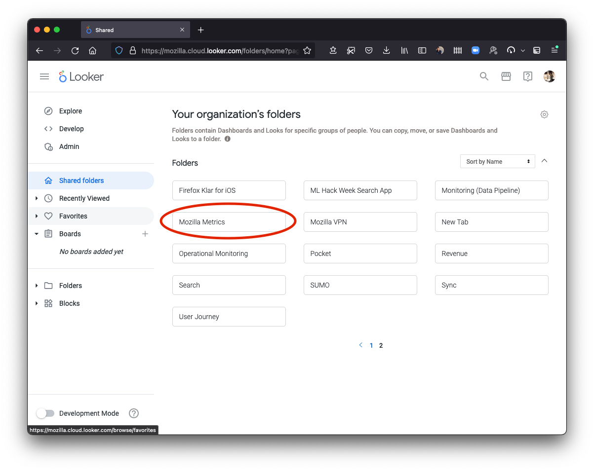
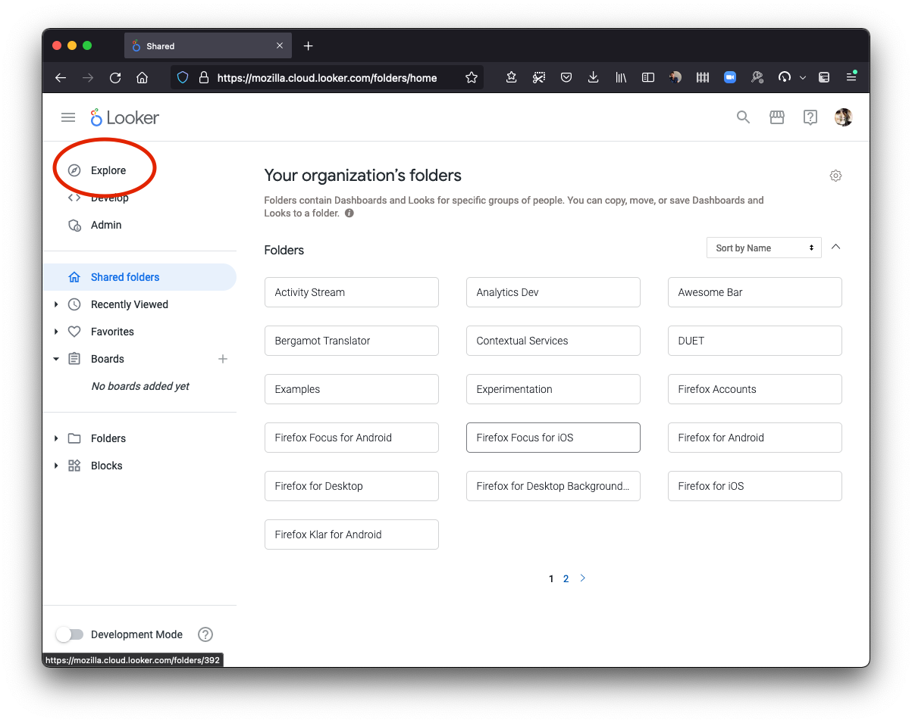
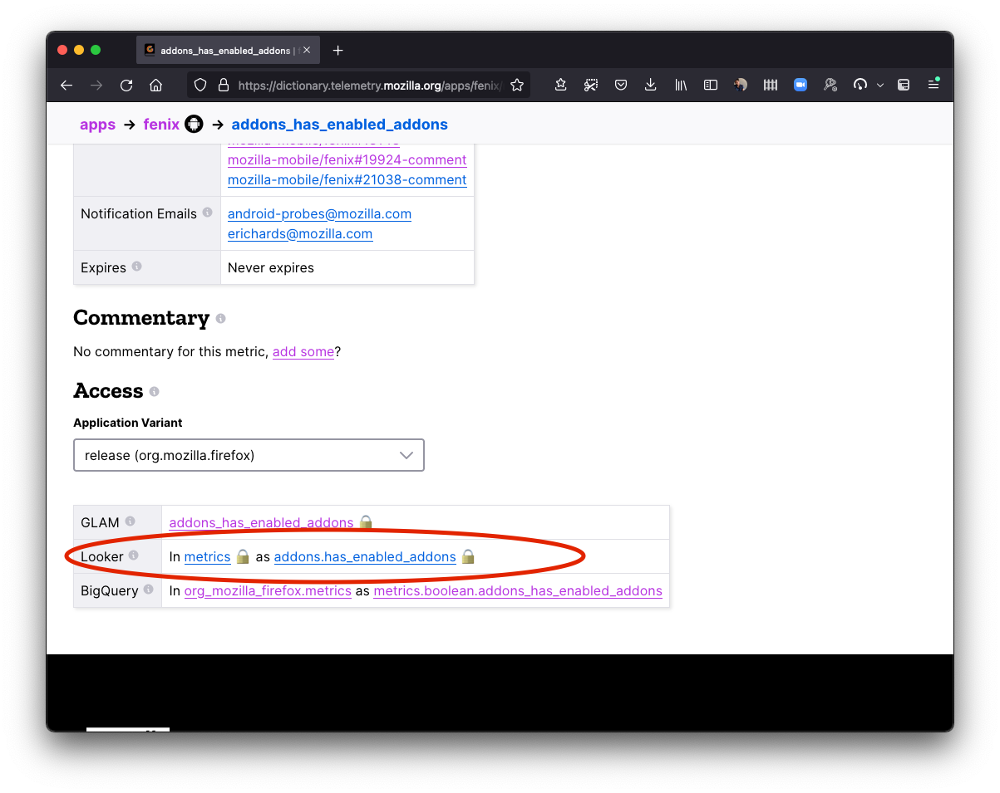
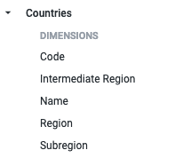
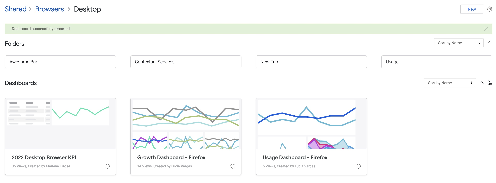
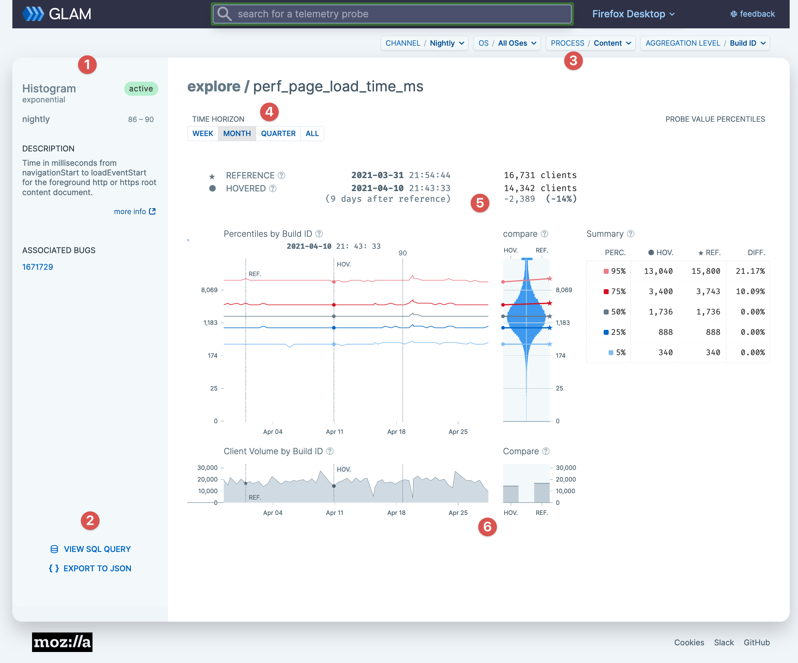
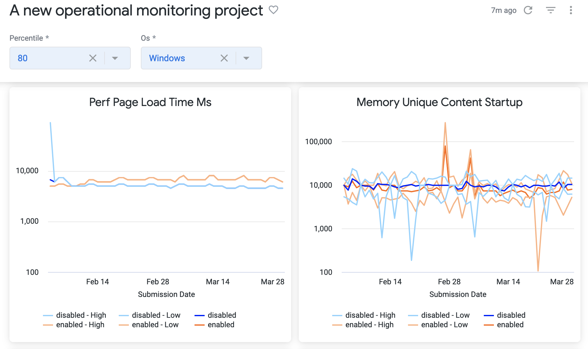
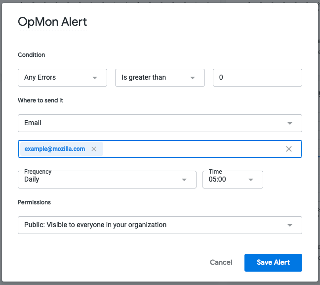
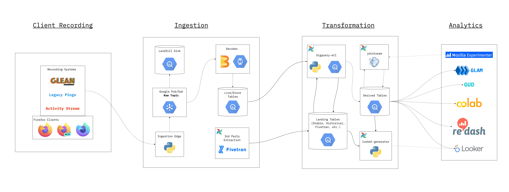
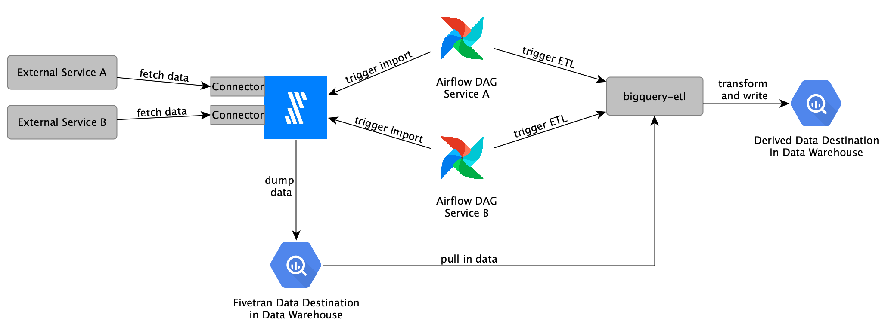

Mozilla Data Documentation
This documentation was written to help Mozillians analyze and interpret data collected by our products, such as Firefox and Mozilla VPN. Mozilla refers to the systems that collect and process this data as Telemetry.
At Mozilla, our data-gathering and data-handling practices are anchored in our Data Privacy Principles and elaborated in the Mozilla Privacy Policy. You can learn more about what data Firefox collects and the choices you can make as a Firefox user in the Firefox Privacy Notice.
If there's information missing from these docs, or if you'd like to contribute, see this article on contributing, and feel free to file a bug here.
You can locate the source for this documentation in the data-docs repository on GitHub.
Using this document
This documentation is divided into the following sections:
Introduction
This section provides a quick introduction to Mozilla's Telemetry data: it should help you understand how this data is collected and how to begin analyzing it.
Cookbooks & Tutorials
This section contains tutorials presented in a simple problem/solution format, organized by topic.
Data Platform Reference
This section contains detailed reference material on the Mozilla data platform, including links to other resources where appropriate.
Dataset Reference
In-depth references for some of the major datasets we maintain for our products.
For each dataset, we include a description of the dataset's purpose, what data is included, how the data is collected, and how you can change or augment the dataset. You do not need to read this section end-to-end.
Historical Reference
This section contains some documentation of things that used to be part of the Mozilla Data Platform, but are no longer. You can generally ignore this section, it is intended only to answer questions like "what happened to X?".
You can find the fully-rendered documentation here, rendered with mdBook, and hosted on Github pages.
Introduction
This section is an introductory guide to analyzing Telemetry data: it should give you enough knowledge and understanding to begin exploring our systems. After reading through this section, you can look through the tutorials, which has more specific guides on performing particular tasks.
What Data does Mozilla Collect?
Mozilla, like many other organizations, relies on data to make product decisions. However, unlike many other organizations, Mozilla balances its goal of collecting useful, high-quality data with giving its users meaningful choice and control over their own data. Our approach to data is most succinctly described by the Mozilla Privacy Principles. If you want to know what Mozilla thinks about data, the Principles will tell you that.
From those principles come Mozilla's Privacy Notices. They differ from product to product because the data each product deals with is different. If you want to know what kinds of data each Mozilla product collects and what we do with it, the Privacy Notices will tell you that.
From the Principles and the Notices Mozilla derives operational processes to allow it to make decisions about what data it can collect, store, and publish. Here are a few of them:
- Data Collection: Mozilla's policies around data collection
- Data Publishing: How Mozilla publishes (a subset of) of the data it collects for the public benefit
If you want to know how we ensure the data Mozilla collects, store, and publish abide by the Privacy Notices and the Principles, these processes will tell you that.
The data Mozilla collects can roughly be categorized into three categories: product telemetry, usage logs and website telemetry.
Product Telemetry
Most of our products, including Firefox, are instrumented to send small JSON packets called "pings" when telemetry is enabled. Pings include some combination of environment data (e.g., information about operating system and hardware), measurements (e.g., for Firefox, information about the maximum number of open tabs and time spent running in JavaScript garbage collections), and events (indications that something has happened).
Inside Firefox, most Telemetry is collected via a module called "Telemetry". The details of our ping formats is extensively documented in the Firefox Source Docs under Toolkit/Telemetry.
In newer products like Firefox for Android, instrumentation is handled by the Glean SDK, whose design was inspired from what Mozilla learned from the implementation of the Telemetry module and has many benefits. At some point in the near future, Mozilla plans to replace the Telemetry module with the Glean SDK. For more information, see Firefox on Glean (FOG).
When ping submissions from our clients hit our end points, they are aggregated and stored into ping-level datasets. On a daily basis, the information in these pings datasets is summarized and transformed into derived datasets which are easier to reason about and faster to query. You can learn more about this in Guiding Principles for Data Infrastructure.
Both the ping and derived datasets are viewable using tools like GLAM and Looker. For more information, see Tools for Data Analysis.
Usage Logs
Some of our products, like Firefox Sync, produce logs on the server when they are used. For analysis purposes, we take this log data, strip it user identifiers and summarize it into derived datasets which can be queried with either BigQuery or Looker. As with product telemetry, this data can be helpful for understanding how our products are used. For example, it can tell us how many people from a particular locale are engaging with a particular service.
Website Telemetry
Mozilla uses tools like Google Analytics to measure interactions on our web sites like mozilla.org. To facilitate comparative analysis with product and usage telemetry, we export much of this data into our Data Warehouse, so that it can viewed with Looker and other tools.
Tools for Data Analysis
This is a starting point for making sense of the tools used for analyzing Mozilla data. There are different tools available, each with their own strengths, tailored to a variety of use cases and skill sets.
High-level tools
These web-based tools do not require specialized technical knowledge (e.g. how to write an SQL query, deep knowledge of BigQuery). This is where you should start.
Looker
In 2020, Mozilla chose Looker as its primary tool for analyzing data. It allows data exploration and visualization by experts and non-experts alike.
For a brief introduction to Looker, see Introduction to Looker.
Mozilla Growth & Usage Dashboard (GUD)
The Mozilla Growth & Usage Dashboard (GUD) is a tool to visualize growth metrics in a standard way across Mozilla’s products. This is the first place you should look if you have a question like "how many people are using X?".
Glean Aggregated Metrics Dashboard (GLAM)
The Glean Aggregated Metrics Dashboard (GLAM) is an interactive dashboard that is Mozilla’s primary self-service tool for examining the distributions of values of specific individual telemetry metrics, over time and across different user populations. It is similar to GUD in that it is meant to be usable by everyone; no specific data analysis or coding skills are needed. But while GUD is focused on a relatively small number of high level, derived product metrics about user engagement (e.g. MAU, DAU, retention, etc) GLAM is focused on a diverse and plentiful set of probes and data points that engineers capture in code and transmit back from Firefox and other Mozilla products.
For more information on how to use GLAM, see Introduction to GLAM.
Lower-level tools
These tools require more specialized knowledge to use.
sql.telemetry.mozilla.org (STMO)
The sql.telemetry.mozilla.org (STMO) site
is an instance of the very fine Redash software, allowing
for SQL-based exploratory analysis and visualization / dashboard
construction.
Requires (surprise!) familiarity with SQL, and for your data to be explicitly exposed as an STMO data source.
You can learn more about how to use it in Introduction to STMO.
Note that while STMO is not yet considered deprecated, Looker is the preferred solution for producing data visualizations and dashboards at Mozilla (where possible).
Deprecated tools
These tools are still available, but are generally not recommended.
Telemetry Measurement Dashboard
The Telemetry Measurement Dashboard (TMO) site is the 'venerable standby' of Firefox telemetry analysis tools. It is the predecessor to GLAM (see above) and is still lightly maintained until we are sure that GLAM covers all of its use cases.
Terminology
Table of Contents
This glossary provides definitions for some common terms used in the Mozilla data universe.
If you're new to Mozilla, you may also find the general glossary on wiki.mozilla.org helpful.
- AET
- Analyst
- Amplitude
- BigQuery
- Build ID
- Client ID
- Data Analyst
- Data Engineer
- Data Practitioner
- Data Scientist
- Dataset
- DAU
- Derived Dataset
- Glean
- GCP
- GeoIP
- Ingestion
- Intensity
- Metric
- MAU
- Ping
- Ping Table
- Pipeline
- Probe
- Profile
- Query
- Retention
- Schema
- Session
- Subsession
- STMO (sql.telemetry.mozilla.org)
- Telemetry
- WAU
AET
Account Ecosystem Telemetry (never fully launched); see the PRD
Analyst
See Data Analyst.
Amplitude
A third-party product formerly used by several teams within Mozilla for analysis of user events.
BigQuery
BigQuery is Google Cloud's managed data warehouse. Most of the data described on this site is stored and queried using BigQuery. See Accessing and working with BigQuery for more details.
Build ID
A unique identifier for a build like 20210317095331.
Often used to identify and aggregate telemetry submitted by specific versions of our software.
Note that the format may differ across product lines.
Client ID
A unique id identifying the client who sent a ping.
Data Analyst
This is a common job title for someone who spends a large amount of their time analyzing data. At Mozilla, we tend not to use this term or title, favoring Data Practitioner or Data Scientist instead.
Data Engineer
A "Data Engineer" at Mozilla generally refers to someone on the Data Engineering team. They implement and maintain the data platform and tools described in this document. They may also assist data scientists or other data practitioners, as needed.
Data Practitioner
A data practitioner is someone who looks at data, identifies trends and other qualitative measurements in them, and creates charts and dashboards. It could be anyone: engineer, product manager, data engineer or data scientist.
Data Scientist
A "Data Scientist" at Mozilla generally refers to someone on the Data Science team. They have a broad array of technical backgrounds and a core set of common professional skills:
- applying statistical methods to noisy data to answer questions about what, how, or why something is happening
- transform unstructured data into usable metrics and models
- augmenting strategic product and decision-making with empirical evidence created and curated by the team
Dataset
A set of data, which includes ping data, derived datasets, etc.; sometimes it is used synonymously with “table”; sometimes it is used technically to refer to a BigQuery dataset, which represents a container for one or more tables.
DAU
Daily Active Users - The number of unique profiles active on each day.
Derived Dataset
A processed dataset, such as Clients Daily. At Mozilla, this is in contrast to a raw ping table which represents (more or less) the raw data submitted by our users.
Glean
Glean is Mozilla’s product analytics & telemetry solution that provides a consistent experience and behavior across all of our products. Most of Mozilla's mobile apps, including Fenix, have been adapted to use the Glean SDK. For more information, see the Glean Overview.
GCP
Google Cloud Platform (GCP) is a suite of cloud-computing services that runs on the same infrastructure that Google uses internally for its end-user products.
GeoIP
IP Geolocation involves attempting to discover the location of an IP address in the real world. IP addresses are assigned to an organization, and as these are ever-changing associations, it can be difficult to determine exactly where in the world an IP address is located. Mozilla’s ingestion infrastructure attempts to perform GeoIP lookup during the data decoding process and subsequently discards the IP address before the message arrives in long-term storage.
Ingestion
Mozilla's core data platform has been built to support structured ingestion of arbitrary JSON payloads whether they come from browser products on client devices or from server-side applications that have nothing to do with Firefox; any team at Mozilla can hook into structured ingestion by defining a schema and registering it with pipeline. Once a schema is registered, everything else is automatically provisioned, from an HTTPS endpoint for accepting payloads to a set of tables in BigQuery for holding the processed data.
Intensity
Intuitively, how many days per week do users use the product? Among profiles active at least once in the week ending on the date specified, the number of days on average they were active during that one-week window.
Metric
In general: a metric is anything that you want to (and can) measure. This differs from a dimension which is a qualitative attribute of data.
In the context of Glean, a metric refers to an instrumented measure for a specific aspect of the product (similar to a probe in Firefox Telemetry).
MAU
Monthly Active Users - the number of unique profiles active in the 28-day period ending on a given day. The number of unique profiles active at least once during the 28-day window ending on the specified day.
Ping
A ping represents a message that is sent from the Firefox browser to Mozilla’s Telemetry servers. It typically includes information about the browser’s state, user actions, etc. For more information, see Common ping format.
Ping Table
A set of pings that is stored in a BigQuery table. See article on raw ping datasets.
Pipeline
Mozilla’s data pipeline, which is used to collect Telemetry data from Mozilla’s products and logs from various services. The bulk of the data that is handled by this pipeline is Firefox Telemetry data. The same tool-chain is used to collect, store, and analyze data that comes from many sources.
For more information, see An overview of Mozilla’s Data Pipeline.
Probe
Measurements for a specific aspect of Firefox are called probes. A single telemetry ping sends many different probes. Probes are either Histograms (recording distributions of data points) or Scalars (recording a single value).
You can search for details about probes by using the Probe Dictionary. For each probe, the probe dictionary provides:
- A description of the probe
- When a probe started being collected
- Whether data from this probe is collected in the release channel
Newer measurements implemented using Glean are referred to as metrics instead of probes, but the basic outline is the same. Details about Glean Metrics are collected inside the Glean Dictionary.
Profile
All of the changes a user makes in Firefox, like the home page, what toolbars you use, installed addons, saved passwords and your bookmarks, are all stored in a special folder, called a profile. Telemetry stores archived and pending pings in the profile directory as well as metadata like the client id. See also Profile Creation.
Query
Typically refers to a query written in the SQL syntax, run on (for example) STMO.
Retention
-
As in “Data retention” - how long data is stored before it is automatically deleted/archived?
-
As in “User retention” - how likely is a user to continue using a product?
Schema
A schema is the organization or structure for our data. We use schemas at many levels (in data ingestion and storage) to make sure the data we submit is valid and possible to be processed efficiently.
Session
The period of time that it takes between Firefox being started until it is shut down. See also subsession.
Subsession
In Firefox, Sessions are split into subsessions after every 24-hour time period has passed or the environment has changed. See here for more details.
STMO (sql.telemetry.mozilla.org)
A service for creating queries and dashboards. See STMO under analysis tools.
Telemetry
As you use Firefox, Telemetry measures and collects non-personal information, such as performance, hardware, usage and customizations. It then sends this information to Mozilla on a daily basis and we use it to improve Firefox.
WAU
Weekly Active Users - The number of unique profiles active at least once during the 7-day window ending on the specified day.
Tutorials & Cookbooks
This section contains documentation describing how to perform specific tasks. It includes the following sections:
- Getting Started: How to get started.
- Analysis Cookbooks: Tutorials on analyzing data.
- Operational Cookbooks: Tutorials describing how to perform various operational tasks.
- Sending Telemetry: Tutorials on adding new Telemetry.
Getting started
This section contains some basic tutorials on how to get up and running with Mozilla's data.
Accessing Telemetry data
Public Data
Aggregated information on the Firefox user population (including hardware, operating system, and other usage characteristics) is available at the Firefox Public Data Report portal.
In addition, a set of curated datasets are available to the public for research purposes. See the public data cookbook for more information.
Non-public Data
Access to other Telemetry data is limited to two groups:
- Mozilla employees and contractors
- Contributors who have signed a non-disclosure agreement, have a sustained track record of contribution, and have a demonstrated need to access this data
If you are an employee or contractor, you should already have the necessary permissions.
If you are a contributor and want to request access to Mozilla Telemetry data, file a bug in the operations component and ask an established Mozilla contributor or employee to vouch for you.
Getting Help
Mailing lists
Telemetry-related announcements that include new datasets, outages, feature
releases, etc. are sent to fx-data-dev@mozilla.org, a public
mailing list. Follow the link for archives and information on how to subscribe.
Matrix
You can locate us in the #telemetry:mozilla.org channel on Mozilla's instance of matrix.
Slack
You can ask questions (and get answers!) in #data-help on Mozilla Internal's
Slack. See also #data for general data-related discussion.
Reporting a problem
If you see a problem with data tools, datasets, or other pieces of infrastructure, report it!
Defects in the data platform and tools are tracked in Bugzilla in the Data Platform and Tools product.
Bugs need to be filed in the closest-matching component in the Data Platform and Tools product. If you are not able to locate an appropriate component for the item in question, file an issue in the General component.
Components are triaged at least weekly by the component owner(s). For any issues that need
urgent attention, it is recommended that you use the needinfo flag to attract attention
from a specific person. If an issue does not receive the appropriate attention in a
week (or it is urgent), see getting help.
When a bug is triaged, it is assigned a priority and points. Priorities are processed as follows:
P1: in active development in the current sprintP2: planned to be worked on in the current quarterP3: planned to be worked on next quarterP4and beyond: nice to have, would accept a patch, but not actively being worked on.
Points reflect the amount of effort that is required for a bug. They are assigned as follows:
- 1 point: one day or less of effort
- 2 points: two days of effort
- 3 points: three days to a week of effort
- 5 points or more: SO MUCH EFFORT, major project.
Problems with the data
There are Bugzilla components for several core datasets, as described in this documentation. If at all possible, assign a specific component to the issue.
If there is an issue with a dataset to which you are unable to assign its own component, file an issue in the Datasets: General component.
Problems with tools
There are Bugzilla components for several of the tools that comprise the Data Platform. File a bug in the specific component that most closely matches the tool in question.
Operational issues, such as services being unavailable, need to be filed in the Data SRE Jira Project.
- The ticket should contain the following information:
- Service details
- Steps to reproduce
- Impact to users
Other issues
When in doubt, file issues in the General component.
Analysis
This section contains tutorials on how to analyze Telemetry data.
Data Analysis Tools
This section covers data tools that you can use for discovering what data is available about our products.
Using the Glean Dictionary
The Glean Dictionary is a web-based tool that allows you to look up information on all the metrics1 defined in applications built using Glean, Mozilla's next-generation Telemetry SDK. Like Glean itself, it is built using lessons learned in the implementation of what came before (the probe dictionary in this case). In particular, the Glean Dictionary is designed to be more accessible to those without deep knowledge of instrumentation and/or data platform internals.
How to use
You can visit the Glean Dictionary at dictionary.telemetry.mozilla.org.
As its content is generated entirely from publicly available source code, there is no access control.
From the top level, you can select an application you want to view the metrics for.
After doing so, you can search for metrics by name (e.g.: addons.enabled_addons), type (e.g.: string_list), or tags (e.g. WebExtensions).
After selecting a metric, you can get more information on it including a reference to its definition in the source code as well as information on how to get the data submitted by this probe in some of our data tools like STMO, Looker, and GLAM.
Common Questions
How can I go from a metric to querying it in BigQuery?
Underneath the metric definition, look for the section marked "access". This should tell you the BigQuery table where the data for the metric is stored, along with the column name needed to access it.
For several examples of this along with a more complete explanation, see Accessing Glean Data.
Note that Glean refers to "probes" (in the old-school Firefox parlance) as "metrics".
Using the Probe Dictionary
The Probe Dictionary is a web-based tool that allows you to look up information on all the probes defined in Firefox's source code. Until Firefox on Glean is finished, the Probe Dictionary is the best way to look up what data is submitted by Firefox.
Note that the Probe Dictionary has not kept pace with many changes that have made to the Mozilla data platform in the last couple of years. However, with some knowledge of how Firefox and the data platform work, you can still quickly find the data that you need. If you have questions, don't hesitate to ask for help.
How to use
You can visit the Probe Dictionary at probes.telemetry.mozilla.org.
As its content is generated entirely from publicly available source code in Firefox, there is no access control.
From the top level, you can search for a probe by name, descriptive, or other category by entering the appropriate text in the search box.
If you click on a probe, you can get more information on it including a reference to its definition in the source code as well as information on how to get the data submitted by this probe in some of our data tools like STMO and the Telemetry Dashboard.
Common Questions
How can I tell if a probe is still active?
Look at the "recorded (nightly)" column after the probe definition in the summary.
If it gives a range and it ends before the current release, the probe is not active anymore.
For example, the a11y.sitezoom probe was only recorded in Nightly from Firefox 73 to 77.

How can I go from a probe to querying it in BigQuery?
Look in the "available in" section underneath the probe.

You can use this information to query the data submitted by the probe in BigQuery using STMO or other tools.
For example, for example this query gives you the counts of the distinct values for a11y.hcm_background:
SELECT payload.processes.parent.scalars.a11y_hcm_background AS a11y_hcm_background,
count(*) AS COUNT
FROM telemetry.main_1pct
WHERE DATE(submission_timestamp)='2021-08-01' group by 1;
Other measurement types may require more complicated queries. For information on querying exponential histograms, see Visualizing Percentiles of a Main Ping Exponential Histogram.
Note that the metric's information may also appear in derived datasets, not just the raw ping tables which we are talking about above. For more information on this (and how to explore data stored in derived data sets), see Accessing Desktop Data.
For keyed scalars, how can I find out what the keys mean?
First, check the probe description: basic documentation is often there. For example, in the a11y.theme probe it says:
OS high contrast or other accessibility theme is enabled. The result is split into keys which represent the values of browser.display.document_color_use: "default", "always", or "never".
If this is not given, your best option is probably to look at the Firefox source code using Searchfox (a link to a sample query is provided by Probe Dictionary). Again, feel free to ask for help if you need it.
Data Modeling guidelines
This section has guidelines for implementing a new data model asset and to review pull requests that implement them.
Introduction
Mozilla’s current setup allows for the implementation of data modeling and business logic in different locations e.g BigQuery or Looker. The purpose of this document is to provide guidelines to decide where to store a new asset and to review pull requests that implement them.
For the purpose of this documentation, the analytics data model is defined as the set of data assets designed to collect meaningful data from our raw datasets and structure it for an efficient understanding and analysis of our products, business processes and events.
What to store in BigQuery datasets and the bigquery-etl repository
bigquery-etl is the repository for tools and also transformations and business logic that is stored in a BigQuery dataset (derived table, aggregate table, view, materialized view).
Some examples of logic expected in bigquery-etl:
- The calculation of core metrics: DAU, WAU, MAU, new profiles.
- Calculation of search metrics. E.g. Ad clicks, search with ads, organic search.
- Calculation of acquisition, retention and churn metrics.
- Mapping from partner code to platform for Bing revenue.
- Segmentation of clients that require the implementation of business logic, not just filtering on specific columns.
What to store in Looker
Data aggregations or aggregate awareness to improve performance, preferably that don't implement or replicate business logic.
Some examples:
- Aggregates for summarization or creating a subset from a BigQuery dataset, and that don’t include business logic. Some examples:
- A subset of data for a specific year. See this aggregate for data after 2019 in Looker.
- A subset of data with the most used dimensions. See this aggregate for specific dimensions and a time frame.
- An aggregate that covers a commonly used dashboard or view. See this aggregate to support the views that include a year over year analysis.
- Percentages, (e.g. in this view for Focus Android DAU, click through rates). These calculations are highly dependent on the dimensions and filters used and not always can be summed directly, therefore it is not recommended calculating them in BigQuery.
- Cumulative days of use. E.g. Implemented as a SUM in the Browsers KPIs view.
In 2020, Mozilla chose Looker as its primary tool for analyzing data. It allows data exploration and visualization by experts and non-experts alike.
This section provides an introduction to Looker as well as some tutorials on how to use it.
Introduction to Looker
In 2020, Mozilla chose Looker as its primary tool for analyzing data. It allows data exploration and visualization by experts and non-experts alike.
Access to Looker is currently limited to Mozilla employees and designated contributors. For more information, see gaining access.
Table of Contents
Accessing Looker
You can access Mozilla's instance of Looker at mozilla.cloud.looker.com.
Getting Started
Front page
By default, on the front page you will see a list of default folders, which contain links to dashboards. These are organized by project. Of particular note is the Mozilla Metrics folder inside the KPI Metrics Folder, which includes several Data-produced and vetted dashboards like the Firefox Corporate KPI Dashboard.

Explores
One of the core concepts of Looker are Explores. These allow you to quickly explore datasets (both ping-level and derived datasets) within an intuitive user interface.

You can access the full list of explores available in Looker. From the main page on the left, select "Explore". From there, you can select an explore to view. Most explores are grouped by application. For example, there are a set of explores for both "Firefox Desktop" and "Firefox for Android".
Using the Glean Dictionary with Looker
The above list of explores can sometimes be overwhelming. If your application uses Glean to collect data, one very viable workflow is to look up information on the metric(s) you're interested in using the Glean Dictionary, then use the "Access" section at the bottom, which links directly out to the Looker explore(s) where you can access the data.

The following video demonstrates this workflow in detail:
Going Deeper
If you want to explore Looker more deeply, you can check out:
- "Looker Connect" training hub: A collection of self-paced video training courses for new users. Full courses are free, but require registration, but course descriptions contain preview videos that are useful on their own.
- Looker Documentation: Extensive text and video documentation, a “textbook” reference on how the product works.
- Looker Help Center: Contains articles on common problems, specific use cases, error messages, and best practices.
- Looker Community has customer-written material, broadcasts from Looker employees (primarily release notes), and topics written by Looker employees that are not officially supported by Looker.
You can find additional Looker training resources on the Looker Training Resources mana page (LDAP access required).
Normalizing Country Data
This how-to guide is about getting standard country data in your Looker Explores, Looks and Dashboards:

This guide has only two steps: Normalizing Aliases and Accessing Standard Country Data.
⚠️ Some steps in this guide require knowledge of SQL and LookML - ask in #data-help for assistance if needed.
We get country data from many sources: partners, telemetry, third-party tools etc. In order to analyze these in a standard way, i.e. make different analyses comparable, we can conform these sources to a set of standard country codes, names, regions, sub-regions, etc.
Step One - Normalizing Aliases
⚠️ If your country data already consists of two-character ISO3166 codes, you can skip to Step Two!
We refer to a different input name for the same country as "alias". For example, your data might contain the country value "US", another might contain "USA" and yet another might contain "United States", etc. This can be confusing when read in a table or seen on a graph.
To normalize this, we maintain a mapping of aliases from each country to its two-character ISO3166 code This includes misspellings and alternate language encoding that we encounter in various datasets. For example:
CI:
- "Ivory Coast"
- "Côte d’Ivoire"
- "Côte d'Ivoire"
- "Cote d'Ivoire"
- "Côte d’Ivoire"
- "The Republic of Côte d'Ivoire"
To map (normalize) your input alias to its country code, add a LEFT join from your table or view to the alias lookup
table: mozdata.static.country_codes_v1. For example:
SELECT
...
your_table.country,
COALESCE(lookup.code, your_table.country, '??') as country_code
...
FROM
your_table
LEFT JOIN mozdata.static.country_codes_v1 lookup ON your_table.country_field = lookup.name
Note: we use ?? as a country-code for empty country data from data sources. This will map to "Unknown Country",
"Unknown Region", etc.
At this point, you should check for cases where the resulting country_code matches your_table.country but does
not match any values in the lookup table - you may have discovered a new alias, in which case please add it to the list!
You can do this via a bigquery-etl pull request for example: https://github.com/mozilla/bigquery-etl/pull/2858.
⚠️ This list of aliases is public. If you are working with sensitive data, please do not add to the public list of aliases, you should handle it in custom logic in code that interfaces with your sensitive data for example in private-bigquery-etl or the private Looker spoke.
If you are satisfied that the country_code field is appropriately normalized, move on to Step Two!
Step Two - Accessing Standard Country Data
Standard country data is contained in the mozdata.static.country_codes_v1 table and by extension the
shared/views/countries Looker View.
Add the following join to your Explore (either in the .explore.lkml or .model.lkml file):
include: "/shared/views/*"
...
join: countries {
type: left_outer
relationship: one_to_one
sql_on: ${your_table.country_code} = ${countries.code} ;;
}
Now, you should be able to see the Countries View in your Explore 🎉
Normalizing Browser Version Data
This how-to guide is about getting numerical browser version data in your Looker Explores, Looks and Dashboards:
This guide only has one step: Normalizing Version Strings
⚠️ Some steps in this guide require knowledge of SQL - ask in #data-help for assistance if needed.
Many of our data sources (particularly browser telemetry) have version_id's: A string that (most of the time)
looks like "99.1.0" in the format "major.minor.patch".
⚠️ In SQL you might be tempted to compare these version identifiers. This might however, return misleading results!
"99" > "100"but99 < 100. Note the string vs number comparison.
Step One - Normalizing Version Strings
In your view.sql file, locate the browser version identifier. In many tables/views, this is called app_version.
To extract the numerical version data you have two options:
1. The truncate version UDF - truncate_version
This extracts the major or minor version from the version identifier. See the Mozfun Docs for a detailed description.
Modify your view.sql:
CREATE OR REPLACE VIEW
`project.dataset.view`
AS
SELECT
*,
`mozfun.norm.truncate_version`(app_version, "major") as major_browser_version -- <--- New Line
FROM
`project.dataset_derived.table`
major_version will be added as a new field containing the numerical major browser version.
2. The browser version info UDF - browser_version_info
This extracts a number of useful fields from the version identifier. See the Mozfun Docs for a detailed description.
Modify your view.sql:
CREATE OR REPLACE VIEW
`project.dataset.view`
AS
SELECT
*,
`mozfun.norm.browser_version_info`(app_version) as browser_version_info -- <--- New Line
FROM
`project.dataset_derived.table`
browser_version_info will be added as a new struct field containing numerical version fields and other useful metadata.
After choosing an option, open a Pull Request (for example) and get a review. Once your change is merged, the updated field will be available in Looker once the lookml-generator runs (usually by the next calendar day, or by manually running it on Airflow).
Growth and Usage dashboards
The Mozilla Growth & Usage dashboards (GUD) are visualizations of growth metrics in a standard way across Mozilla’s products.
In Looker home screen go to Shared > Browsers and find the Desktop and Mobile consolidated dashboards inside the corresponding folder.
⚠️ Find Looker in the SSO Dashboard.

Growth Dashboard
Find in this dashboard:
- The visualizations of daily, weekly and monthly active users in comparison with the previous year.
- The visualization of new profiles in comparison with the previous period.

Usage Dashboard
Find in this dashboard:
- The retention curve for cohorts over a period of 180 days from the first seen date.
- The visualization of search, organic search and search with adds.
- The visualization of Ad clicks behaviour.

Browser Looks
If you want to explore each individual visualization in Looker for the browsers, find them in the Usage folder inside the relevant browser name folder:
Shared > Browsers > Desktop > Usage
Shared > Browsers > Mobile > Firefox Focus for Android > Usage
Shared > Browsers > Mobile > Firefox Focus for iOS > Usage
Shared > Browsers > Mobile > Firefox for Android > Usage
Shared > Browsers > Mobile > Firefox for iOS > Usage
The example below shows the location of the Looks for Firefox Focus for Android:

Source
The dashboards and views for growth and usage are based on the moz-fx-data-shared-prod.telemetry.active_users_aggregates table, which contains the dimensions and metrics for desktop and mobile, as calculated from the clients_last_seen and mobile_search_clients_daily_v1 tables.
Note. The dashboards have been migrated to Looker from the previous GUD Dashboard at https://mozilla.github.io/gud/ as part of the Looker on-boarding and with the purpose of enhancement with new dimensions of analysis and improved performance.
Using the Event Counts Explore
If you want to answer product related questions using events, you can use the Event Counts explore in Looker. This can help you understand how users interact with specific product features in isolation (for example, the number of users that created a bookmark in Firefox for Android). You can see a quick demo of how to use this explore to answer a simple Firefox for Android product question in this video:
This explore also exists for Mozilla VPN and other products (and you can use the same Glean Dictionary-based workflow to fill it out). For Firefox Desktop, this explore is currently using legacy (non-Glean data) and you will need to use the probe dictionary instead.
Using the Funnel Analysis Explore
If you want to answer product related questions using events, you can use the Funnel Analysis explore in Looker. This can help you understand how users interact with specific product features in sequence (for example, what percentage of users completed a specific set of interactions). You can see a quick demo of how to use this explore to answer a simple Firefox for Android product question in this video:
This explore also exists for Mozilla VPN and other products (and you can use the same Glean Dictionary-based workflow to fill it out). For Firefox Desktop, this explore is currently using legacy (non-Glean data) and you will need to use the probe dictionary to look up event metadata instead.
Under the hood, the funnel analysis explore uses the events_daily dataset.
Data Analysis Tools
This section covers data analysis tools that you can use for analyzing and visualizing data.
Introduction to GLAM
GLAM was built to help Mozillians answer their data questions without needing data analysis or coding skills. It contains a visualization layer meant to answer most "easy" questions about how a probe or metric has changed over build ids and releases.
GLAM is one of several high-level data tools that we provide at Mozilla. For more information, see Tools for Data Analysis.
Access to GLAM is currently limited to Mozilla employees and designated contributors (this may change in the future). For more information, see gaining access.
How to use GLAM
You can visit GLAM at glam.telemetry.mozilla.org.
Front page

The front page includes two main sections: the search bar and the random probe explorer. Fuzzy tech search is implemented to let users search not only by the probe title, but also by the full description.
GLAM is currently serving data for Firefox Desktop and Firefox for Android.
Individual probe/metric page
Clicking on a probe or metric name takes you to the individual explorer, where most of the analysis happens. As this page is packed with data, we make sure that it's self-documented as much as possible: every button, surface, menu item, is tool-tipped with description and links.

(1) The left column shows metadata about the probe or metric: what kind, what channels it's active in, a description, associated bugs with its implementation. As our goal is to make GLAM a self-educating tool, we try to provide as much information as available, and link out to other resources where applicable (Glean Dictionary, Looker, etc.)
(2) For convenience, we provide two utility features:
View SQL Query: if you want to dig more deeply into the data than the GLAM UI allows, “View SQL Query” parses SQL that can be copied and then pasted into our STMO Redash instance.Export to JSON: exports JSON data to be used in Jupyter notebook or similar services.
(3) A set of dimensions (qualitative attributes of data) to subset on
(4) Time Horizon lets users choose how much data they want to investigate: week, month, quarter, or all (note that we only keep data from the last three versions.)
(5) Probe or metric distribution and percentiles over time:
Percentilesshows the percentiles of the probe over time. To perform analysis, set a reference point by clicking on a target date, then hover along the graph to see the recorded differences. See attachedtooltipson the page for more instruction.- The
compareviolin plot shows the comparison between two (vertical) normal distributions Summarytable provides the exact numeric values of the percentiles of the median changes between Build IDs.
(6) shows the volume of clients with each given Build ID
Differences between GLAM and telemetry.mozilla.org dashboard
GLAM is aggregated per client, telemetry.mozilla.org (TMO) is aggregated per ping. This will cause different movements in the visualization between the two systems. Notably:
- Because GLAM normalizes the aggregations by client ID, a single client weighs equally to all other clients, regardless of how many samples that client sends.
- Reversely, TMO does not normalize by client ID, so if a single client sends a lot of pings, that client will impact the distribution more heavily. This can result in some changes appearing bigger on TMO.
As of July 2022, TMO serves only Firefox Desktop (telemetry) data, while GLAM supports Firefox Desktop (both telemetry and Glean), Firefox for Android (Fenix), with ongoing efforts to integrate Firefox iOS and more products that use Glean as their telemetry system.
Going deeper
For more information about the datasets that power GLAM, see GLAM Datasets.
If you have a question that can't be easily answered by the GLAM GUI, you can access the raw GLAM datasets using sql.telemetry.mozilla.org.
Getting help
If you have further questions, please reach out on the #GLAM slack channel.
Operational Monitoring (OpMon)
Operational Monitoring (OpMon) is a self-service tool that aggregates and summarizes operational metrics that indicate the health of software. OpMon can be used to continuously monitor rollouts, experiments (including experiments with continuous enrollments) or the population of a specific product (for example, Firefox Desktop). OpMon automatically generates Looker dashboards that will provide insights into whether landing code changes impact certain metrics in a meaningful way.
A couple of specific use cases are supported:
- Monitoring build over build. This is typically used for Nightly where one build may contain changes that a previous build doesn't and we want to see if those changes affected certain metrics.
- Monitoring by submission date over time. This is helpful for a rollout in Release for example, where we want to make sure there are no performance or stability regressions over time as a new build rolls out.
The monitoring dashboards produced for these use cases are available in Looker. OpMon does not emit real-time results. Dashboards and related datasets get updated on a daily basis.
Access to the Looker Operational Monitoring dashboards is currently limited to Mozilla employees and designated contributors. For more information, see gaining access.
Configuring a Operational Monitoring project
To add or update a project configuration, open a pull request against opmon-config. Consider using and adding metric definitions to the metric-hub that should be available for use across other tools, such as Jetstream, as well.
CI checks will validate the columns, data sources, and SQL syntax. Once CI completes, the pull request can be merged and results for the new project will be available within the next 24 hours.
Project configurations files are written in TOML. To reuse configurations across multiple projects, project configurations can reference configurations from definition files.
These definitions files are platform-specific and located in the definitions/ directory of opmon-config or in the metric-hub repository. Platform-specific configuration files follow the same format and structure as project configuration files.
If the project is used to monitor a rollout or experiment, then the configuration files should have the same name as the slug that has been assigned in Experimenter.
Generally, configuration files have four main sections: [project], [data_sources], [metrics], and [dimensions]. All of these sections are optional.
Examples of every value you can specify in each section are given below. You do not need to, and should not, specify everything! OpMon will take values from Experimenter (for rollouts and experiments) and combine them with a reasonable set of defaults.
Lines starting with a # are comments and have no effect.
[project] Section
This part of the configuration file is optional and allows to:
- specify the metrics that should be analyzed
- define the clients that should be monitored
- indicate if/how the client population should be segmented, and
- override some values from Experimenter
This section is usually not specified in definition configuration.
[project]
# A custom, descriptive name of the project.
# This will be used as the generated Looker dashboard title.
name = "A new operational monitoring project"
# The name of the platform this project targets.
# For example, "firefox_desktop", "fenix", "firefox_ios", ...
platform = "firefox_desktop"
# Specifies the type of monitoring desired as described above.
# Either "submission_date" (to monitor each day) or "build_id" (to monitor build over build)
xaxis = "submission_date"
# Both start_date and end_date can be overridden, otherwise the dates configured in
# Experimenter will be used as defaults.
start_date = "2022-01-01"
# Whether to skip the analysis for this project entirely.
# Useful for skipping rollouts for which OpMon projects are generated automatically otherwise.
skip = false
# Whether the project is related to a rollout.
is_rollout = false
# Ignore the default metrics that would be computed.
skip_default_metrics = false
# Whether to have all the results in a single tile on the Looker dashboard (compact)
# or to have separate tiles for each metric.
compact_visualization = false
# Metrics, that are based on metrics, to compute.
# Defined as a list of strings. These strings are the "slug" of the metric, which is the
# name of the metric definition section in either the project configuration or the platform-specific
# configuration file.
# See [metrics] section on how these metrics get defined.
metrics = [
'shutdown_hangs',
'main_crashes',
'startup_crashes',
'memory_unique_content_startup',
'perf_page_load_time_ms'
]
alerts = [
"ci_diffs"
]
# This section specifies the clients that should be monitored.
[project.population]
# Slug/name of the data source definition section in either the project configuration or the platform-specific
# configuration file. This data source refers to a database table.
# See [data_sources] section on how this gets defined.
data_source = "main"
# The name of the branches that have been configured for a rollout or experiment.
# If defined, this configuration overrides boolean_pref.
branches = ["enabled", "disabled"]
# A SQL snippet that results in a boolean representing whether a client is included in the rollout or experiment or not.
boolean_pref = "environment.settings.fission_enabled"
# The channel the clients should be monitored from: "release", "beta", or "nightly".
channel = "beta"
# If set to "true", the rollout and experiment configurations will be ignored and instead
# the entire client population (regardless of whether they are part of the experiment or rollout)
# will be monitored.
# This option is useful if the project is not associated to a rollout or experiment and the general
# client population of a product should be monitored.
monitor_entire_population = false
# References to dimension slugs that are used to segment the client population.
# Defined as a list of strings. These strings are the "slug" of the dimension, which is the
# name of the dimension definition section in either the project configuration or the platform-specific
# configuration file. See [dimensions] section on how these get defined.
dimensions = ["os"]
[data_sources] Section
Data sources specify the tables data should be queried from.
In most cases, it is not necessary to define project-specific data sources, instead data sources can be specified in and referenced from the platform-specific definition configurations.
[data_sources]
[data_sources.main]
# FROM expression - often just a fully-qualified table name. Sometimes a subquery.
from_expression = "mozdata.telemetry.main"
# SQL snippet specifying the submission_date column
submission_date_column = "DATE(submission_timestamp)"
[data_sources.events_memory]
# FROM expression - subquery
from_expression = """
(
SELECT
*
FROM `moz-fx-data-shared-prod.telemetry.events`
WHERE
event_category = 'memory_watcher'
)
"""
submission_date_column = "DATE(submission_date)"
[metrics] Section
The metrics sections allows to specify metrics based on metrics that should be monitored.
In most cases, it is not necessary to define project-specific metrics, instead metrics can be specified and referenced from the platform-specific definition configurations.
A new metric can be defined by adding a new section with a name like:
[metrics.<new_metric_slug>]
[metrics]
[metrics.memory_pressure_count]
# The data source to use. Use the slug of a data source defined in a platform-specific config,
# or else define a new data source (see above).
data_source = "events_memory"
# A clause of a SELECT expression with an aggregation
select_expression = "SUM(SAFE_CAST(SPLIT(event_string_value, ',')[OFFSET(1)] AS NUMERIC))"
# Type of the metric to be evaluated.
# This is used to determine the method of aggregation to be applied.
# Either "scalar" or "histogram".
type = "scalar"
# A friendly metric name displayed in dashboards.
friendly_name = "Memory Pressure Count"
# A description that will be displayed by dashboards.
description = "Number of memory pressure events"
# This can be any string value. It's currently not being used but in the future, this could be used to visually group different metrics by category.
category = "performance"
Statistics reduce observations of many clients to one or many rows describing the population.
Any summarization of the client-level data can be implemented as a statistic.
There is a fixed set of statistics available:
sumpercentile(default)meancount
# Specify which statistic to use for a metric
[metrics.memory_pressure_count.statistics]
sum = {}
mean = {}
New statistics need to be implemented in OpMon. Some statistics allow to specify additional parameters.
[dimensions] Section
Dimensions define how the client population should be segmented.
For example:
[dimensions]
[dimensions.os]
# The data source to use. Use the slug of a data source defined in a platform-specific config,
# or else define a new data source (see above).
data_source = "main"
# SQL snippet referencing a field whose values should be used to segment the client population.
select_expression = "normalized_os"
The os dimension will result in the client population being segmented by operation system. For each dimension a filter is being added to the resulting
dashboard which allows to, for example, only show results for all Windows clients.
[alerts] Section
Different types of alerts can be defined for metrics:
[alerts]
[alerts.ci_diffs]
# Alert for large differences between branches:
# an alert is triggered if confidence interval of different branches
# do not overlap
type = "ci_overlap"
metrics = [ # metrics to monitor
"gc_ms",
"startup_crashes",
]
percentiles = [50, 90] # percentiles to monitor
[alerts.crash_tresholds]
# Thresholds based aler:
# an alert is triggered if defined thresholds are exceeded/subceeded
type = "threshold"
metrics = [ # metrics to monitor
"oom_crashes",
"gpu_crashes"
]
min = [0] # lower thresholds
max = [10] # upper thresholds
[alerts.historical_diff]
# Deviation from historical data:
# an alert is triggered if the average of the specified window deviates
# from the average of the previous window
type = "avg_diff"
metrics = [ # metrics to monitor
"memory_total",
]
window_size = 7 # window size in days
max_relative_change = 0.5 # relative change that when exceeded triggers an alert
percentiles = [50, 90] # percentiles to monitor
Currently, there are 3 different types of alerts:
- Large differences between branches: Whenever the confidence intervals of different branches for a specific metric no longer overlap, it indicates that there is potentially some significant difference.
- Thresholds: Comparing the values of a metric to a user-defined threshold.
- Deviation from historical data: Detect anomalous behaviour of a metric based on previously collected data.
Large differences between branches
The OpMon dashboards show the values for specific metrics as a line chart with confidence intervals. Each line represents the metric values for a different branch. Whenever the confidence intervals of the branches do not overlap, it is considered a critical change. See:

Thresholds
In some cases the expected value of a metric is known and any large deviation from that expected value is considered a critical change. Fixed thresholds can be used to specify when a value is too large or too low. See:

Deviation from historical data
An alert should be triggered for certain metrics if their value deviates significantly from historical records. Sudden changes could, for example, happen after a new version gets released. See:

It is not always possible to define a specific threshold, so instead previously recorded data should be used to detect significant deviations.
This check is the most complicated and computation-intensive one with potentially the highest number of false positives. There are a lot of different anomaly detection algorithms out there, but OpMon uses an approach which compares the average value of a metric of the past n days to the average value of the n days before. If the relative difference between these two values exceeds a defined threshold an alert will be triggered.
The main downside of this approach is that whenever spikes happen, alerts will be sent even after the spike has gone down since it will inflate the average values for a while.
Reading Results
Generated dashboards are available in Looker.

Dashboards have filters for selecting a percentile and for filtering based on the dimensions that have been configured. For each metric results are visualized on separate tiles, with results being grouped by branches. Depending on the project configuration, the x-axis will either be by submission date or by Build ID.
Results are visualized as line charts with confidence intervals. Since Looker does only support simple line chart visualizations, the upper and lower bounds of the confidence intervals are shown in lighter colors while the median value for a specific branch is shown in a darker color.
Results are divided into different percentiles that can be changed through the dashboard filter:
- The 50th percentile represents the median value across all clients for a metric
- The 90th/95th/99th/... percentile are referring to the top 10%/5%/1%/... based on the measured metric. For example, in the screenshot above the 80th percentile is selected, so the top 20% of clients based on the Perf Page Load Time Ms metric that are enrolled in the enabled branch have a load time of around 6,600 ms.
Usually places where the confidence intervals of different branches have a gap between them - if the higher bound of one metric is below the lower bound of another metric - means there is a high likelihood that there is an actual difference between the measurement for the groups.
Each dashboard tile also allows to explore the data for a specific metric in more detail by clicking on Explore from here.
Subscribing to Alerts
If alerts have been configured for a OpMon project, then the generated dashboard will show any triggered alerts in a table at the bottom of the dashboard:

To receive email or Slack notification whenever new alerts are being triggered, click on the Alerts icon that is in the right corner of the Alerts table. Configure the alert by setting the condition, email addresses or Slack channels alerts should be sent to and the frequency of when checks should be performed:

Data Products
OpMon writes monitoring results and metadata to BigQuery. OpMon runs as part of the nightly ETL job (see Scheduling below).
Result Tables
The result tables that back the Looker dashboards are available in the operational_monitoring_derived dataset in moz-fx-data-shared-prod.
Result tables are named like:
<slug>_v<version>
<slug> is referring to the slug that has been set for the project and a separate table is created for metrics, statistics and alerts. The schema for metric tables is flexible and depends on the metrics configured to be computed.
Views for each tables are also created in the operational_monitoring dataset. These views are used by the Looker dashboards.
Metric tables
| Column name | Type | Description |
|---|---|---|
submission_date | DATE | Date the monitoring results are for |
client_id | STRING | Client's telemetry client_id |
branch | STRING | Branch client is enrolled in |
build_id | STRING | Build the client is on |
The result table will have additional columns for each metric and dimension that has been defined.
Statistic Tables
| Column name | Type | Description |
|---|---|---|
submission_date | DATE | Date the monitoring results are for |
client_id | STRING | Client's telemetry client_id |
branch | STRING | Branch client is enrolled in |
build_id | STRING | Build the client is on |
The result table will have additional columns for each metric and dimension that has been defined.
Metadata
The table projects_v1 in operational_monitoring_derived contains metadata about the configured projects that is required for generating the dashboards. The table is updated after each ETL run for a specific project.
| Column name | Type | Description |
|---|---|---|
slug | STRING | Project slug |
name | STRING | Descriptive name of the project used as dashboard title |
xaxis | STRING | Specifies which column should be used as x-axis (either "submission_date" or "build_id") |
branches | ARRAY | List of branch names |
dimensions | ARRAY | List of dimension slugs |
start_date | DATE | Date for when monitoring should start for the project |
end_date | DATE | Date for when monitoring should end for the project |
metrics | RECORD | Repeated record with the metric slug and aggregation type |
Scheduling
OpMon is updated nightly by telemetry-airflow. It is invoked by the operational_monitoring DAG.
Experiments vs OpMon
The requirements for Operational Monitoring are related to, but mostly distinct from those for experiments:
- With an A/B experiment, the goal is to determine with confidence whether a single change (i.e. the treatment) has an expected impact on a metric or small number of metrics. The change is only applied to a sample of clients for a fixed period of time.
- With operational monitoring, a project team is making many changes over a long but indeterminate period of time and must identify if any one change or set of changes (e.g., changes in a given Nightly build) moves a metric in the target population. An identified metric impact may result in a change being backed out, but may also be used to guide future project work.
OpMon can be used to monitor experiments. For experiments with continuous enrollments or no fixed end date, OpMon will provide insights that would otherwise not be available. Other experiments, that are interested in looking at operational metrics could also benefit from OpMon.
Going Deeper
To get a deeper understanding of what happens under the hood, please see the opmon repository and developer documentation.
Getting Help
If you have further questions, please reach out on the #data-help Slack channel.
Introduction to STMO
⚠ As of August 2021, Looker is considered the preferred solution for data exploration and visualization at Mozilla where possible. If you have any questions about where or when to use STMO, see getting help.
sql.telemetry.mozilla.org (STMO) is Mozilla's installation of the Redash data analysis and dashboarding tool. As the name and URL imply, the effective use of this tool requires familiarity with SQL, with which all of the tool's data extraction and analysis are performed.
Access to STMO is limited to Mozilla employees and designated contributors. For more information, see gaining access.
STMO Concepts
You need to use the following building blocks from which analyses in STMO are constructed:
- Queries
- Visualizations
- Dashboards
Queries
STMO's basic unit of analysis is a query. A query is a block of SQL code that
extracts and optionally transforms data from a single data source. Queries
can vary widely in complexity. Some queries are simply one liners (e.g., SELECT some_field FROM tablename LIMIT 10) while others span over many pages, almost like small programs.
The raw output from a query is tabular data. Each row represents one set of return values for the query's output columns. You can run a query manually or specify a refresh schedule that executes automatically after a specified interval of time.
Visualizations
Tabular data is great, but rarely is a grid of values the best way to make sense of your data. You can associate each query with multiple visualizations. Each visualization can render the extracted data in a format that makes it easy to interpret your data.
There are many visualization types, including charts (line, bar, area, pie, etc.), counters, maps, pivot tables, and more. You can use each visualization type that provides a set of configuration parameters to specify how to map from the raw query output to the desired visualization. Some visualization types make demands of the query output. For example, a map visualization requires each row to include a longitude value and a latitude value.
Dashboards
A dashboard is a collection of visualizations that is combined into a single visual presentation for your convenience. A dashboard is decoupled from any particular queries. Although you can include multiple visualizations from a single query in one dashboard, it is not required. Users can add any visualizations that they can access to any dashboards they have created.
Data Sources
SQL provides the ability to extract and manipulate the data, but you won't get very far without having some familiarity with what data is actually available, and how that data is structured. Each query in STMO is associated with exactly one data source, and you have to know ahead of time which data source contains the information that you need. One of the most commonly used data sources is called Telemetry (BigQuery), which contains most of the data that is obtained from telemetry pings received from Firefox clients. BigQuery refers to Google's BigQuery data warehouse.
Other available data sources include Crash DB, Tiles, Sync Stats, Push, Test Pilot, and even a Redash metadata which connects to STMO's own Redash database.
Create an Example Dashboard
The following topics describe the process of creating a simple dashboard using STMO.
Create A Query
Let's start by creating a query. The first query counts the number of client ids that Mozilla receives from each country, for the top N countries. If you click the 'New Query' button that is located at the top on the left-hand side of the site, the query editing page appears:

For this and most other queries where each client IDs is counted, you want to use
clients_last_seen,
which is generated from Firefox telemetry pings.
-
Search for the table in
Telemetry (BigQuery)Click the 'Data Source' drop-down and select
Telemetry (BigQuery). Then, search for the table by typingclients_last_seenin the "Search schema..." field that is above the schema browser interface to the left of the main query Edit field.
You should see a clients_last_seen entry (appearing as telemetry.clients_last_seen). You may also see versioned copies of the tables as telemetry.clients_last_seen_v<VERSION>.
-
Introspect the available columns
Click
telemetry.clients_last_seenin the schema browser to display the columns that are available in the table. The following columns are of interest for this query:countrydays_since_seensubmission_date.
If a query extracts all unique country values and the MAU for one day for each one, sorted from highest MAU to lowest MAU, the query then appears as follows:
SELECT
country,
COUNTIF(days_since_seen < 28) AS mau
FROM
telemetry.clients_last_seen
WHERE
submission_date = '2019-04-01'
GROUP BY
country
ORDER BY
mau DESC
If you type these parameters into the main query Edit field and then click the "Execute" button, a blue bar then appears below the Edit field. It includes the text "Executing query...", followed by a timer that indicates how long the query has run. After some period of time, usually less than a minute, the query typically completes its run. A table appears that displays a MAU value for each country. You have just created and run your first STMO query!
Next, click the large "New Query" text located at the top of the page. An Edit field appears so you can rename the query. It is recommended that you assign a unique prefix (such as your name) to the query to make it easy to find your query later. For example, rmiller:Top Countries.
Create A Visualization
After you have created a query, you may want to provide a simple visualization. The table with results from the first query execution now appears under the query Edit field. Another heading titled +NEW VISUALIZATION appears next to the TABLE heading:

Click the +NEW VISUALIZATION link to display the "Visualization Editor" screen. You can now specify a visualization name ("Top Countries bar chart"), a chart type ("Bar"), an x-axis column (country), and a y-axis column (mau):

After the GENERAL settings have been specified, you need to modify additional settings on the X AXIS tab. Click this tab and then change the 'Scale' setting to 'Category', and un-check the 'Sort Values' checkbox to enable the query's sort order to take precedence:

A Note About Limits
After you have saved the visualization settings and displayed the query source page, a bar graph appears near the bottom of the page. The graph includes quite a few entries. Rather than being able to view all of the countries, you may want to display only the first 20 entries by adding a LIMIT clause to the end of a query:
SELECT
country,
COUNTIF(days_since_seen < 28) AS mau
FROM
telemetry.clients_last_seen
WHERE
submission_date = '2019-04-01'
GROUP BY
country
ORDER BY
mau DESC
LIMIT
20
If you edit the query to add a limit clause and then click 'Execute', a new bar graph only displays the 20 countries that have the highest number of unique clients. In this case, the full result set includes approximately 250 return values: limiting the result count improves readability.
In other cases, however, an unlimited query may return thousands or even millions of rows. Any queries that return millions of rows or lines can not only be unreadable but negatively impact the performance of all other users of STMO. Thus an important warning:
ALL QUERIES SHOULD INCLUDE A "LIMIT" STATEMENT BY DEFAULT!
It is highly recommended that you add a "LIMIT 100" clause to the end of all new queries to prevent a query from returning a large result set that causes user interface (UI) and performance problems. You may learn that the total result set is small enough that setting a limit becomes unnecessary. Specifying an explicit LIMIT helps prevent unnecessary issues.
Query Parameters
You can add user arguments to a query, which allows the user to specify parameters without modifying the query itself. Using the query in the previous section as an example, you can replace the LIMIT 20 with a country count variable in double curly braces:
SELECT
country,
COUNTIF(days_since_seen < 28) AS mau
FROM
telemetry.clients_last_seen
WHERE
submission_date = '2019-04-01'
GROUP BY
country
ORDER BY
mau DESC
LIMIT
{{country_count}}
After you have replaced the hard-coded limit value with {{country_count}}, an input field appears above the bar chart. If you type a numeric value in the input field and click 'Execute', the query will run with the specified limit. Click 'Save' to save the query. The query applies the parameter value that you typed as the default.
Create A Dashboard
You can create a dashboard to display visualization by selecting 'New Dashboard' from the 'Dashboards' dropdown that is located at the top left of the page. Choose a name for your dashboard and an empty page should appears. Click the '...' button near the top right of the page to select 'Add Widget'. The following dialog box appears:

Type a unique prefix that has previously been used in a query name in the "Search a query by name" field to locate the query that you have created. You cannot yet execute this query because the query has not yet been published. As soon as you publish a query, you can search on the summary pages. Even though this is only an exercise, the query must be published briefly and then added to the dashboard. You can publish your query by clicking "Publish" on the query source page.
As soon as a query is published, it appears in the search results when you type a unique prefix in the "Search a query by name" field on the "Add Widget" dialog box. When you select a query, you can select a query's visualizations from the "Choose Visualization" dropdown. Select the bar chart that you created and then click "Add to Dashboard". The dashboard now includes a bar chart. You can now edit the country_count value and click "Refresh" to change the number of countries that are included in the chart.
Completing the Dashboard
A dashboard with just one graph is often insufficient. Therefore, you may want to create additional queries, each with a very similar bar chart. The text that you need to apply to the queries is listed below. However, you need to create the queries and the visualizations and then link them to the dashboard. The queries are as follows:
- Top OSes (recommended
os_countvalue == 6)
SELECT
os,
COUNTIF(days_since_seen < 28) AS mau
FROM
telemetry.clients_last_seen
WHERE
submission_date = '2019-04-01'
GROUP BY
os
ORDER BY
mau DESC
LIMIT
{{os_count}}
- Channel Counts
SELECT
normalized_channel AS channel,
COUNTIF(days_since_seen < 28) AS mau
FROM
telemetry.clients_last_seen
WHERE
submission_date = '2019-04-01'
GROUP BY
channel
ORDER BY
mau DESC
- App Version Counts (recommended
app_version_count value== 20)
SELECT
app_name,
app_version,
COUNTIF(days_since_seen < 28) AS mau
FROM
telemetry.clients_last_seen
WHERE
submission_date = '2019-04-01'
GROUP BY
app_name,
app_version
ORDER BY
mau DESC
LIMIT
{{app_version_count}}
Creating bar charts for these queries and adding them to the original dashboard can result in a dashboard that resembles this:

Some final notes to help you create your dashboards:
-
Remember to publish each of your queries before adding its visualizations to a dashboard.
-
Similarly, it is recommended to un-publish any test queries after you have used them in a dashboard. This prevents everyone's search results from being contaminated with your tests and experiments. Any queries that result from an actual work-related analysis typically remain published. Others users can view these queries and learn from them.
-
The 'Firefox' label on the 'App Version counts' graph is related to the use of the 'Group by' visualization setting. It is recommended that you experiment with the use of 'Group by' in your graphs to learn more about its usage.
-
This tutorial has only touched the surface of the wide variety of sophisticated visualizations that STMO supports. You can view many more sophisticated queries and dashboards by browsing and exploring the work that has been published by others.
-
The Redash help center is a useful resource for exploring Redash and all its capabilities.
Prototyping Queries
You may want to start working on a query before data becomes available. You can do this with most of the data sources by selecting a static test data set and then work with it, as usual. You can also use this method to explore how a particular SQL backend behaves.
Note that UNION ALL will retain duplicate rows while UNION will discard them.
Here are a couple of examples:
Simple three-column test dataset
WITH test AS (
SELECT 1 AS client_id, 'foo' AS v1, 'bar' AS v2 UNION ALL
SELECT 2 AS client_id, 'bla' AS v1, 'baz' AS v2 UNION ALL
SELECT 3 AS client_id, 'bla' AS v1, 'bar' AS v2 UNION ALL
SELECT 2 AS client_id, 'bla' AS v1, 'baz' AS v2 UNION ALL
SELECT 3 AS client_id, 'bla' AS v1, 'bar' AS v2
)
SELECT * FROM test
Convert a semantic version string to a sortable array field
WITH foo AS (
SELECT '1.0.1' AS v UNION
SELECT '1.10.3' AS v UNION
SELECT '1.0.2' AS v UNION
SELECT '1.1' AS v UNION
-- Doesn't work with these type of strings due to casting
-- SELECT '1.3a1' AS v UNION
SELECT '1.2.1' AS v
)
SELECT cast(split(v, '.') AS array<bigint>) FROM foo ORDER BY 1
How do boolean fields get parsed from strings?
WITH bar AS (
SELECT '1' AS b UNION
SELECT '0' UNION
SELECT 't' UNION
SELECT 'f' UNION
SELECT 'true' UNION
SELECT 'false' UNION
SELECT 'turkey'
)
SELECT b, try(cast(b AS boolean)) from bar
Accessing Public Data
A public dataset is a dataset in BigQuery which is made available to the general public in BigQuery or through our public HTTP endpoint.
Table of Contents
- Accessing Public Data in BigQuery
- Accessing Public Data Through the Public HTTP Endpoint
- Let us know!
Accessing Public Data in BigQuery
To access public datasets in BigQuery, a Google Cloud Platform (GCP) account is required. GCP also offers a free tier which offers free credits to use and run queries in BigQuery. BigQuery sandbox enables users to use BigQuery for free without requiring payment information.
To get started, log into the BigQuery console or use the
BigQuery command line tools to create a new project.
After selecting the project, Mozilla's public datasets in the mozilla-public-data project can
be accessed and queried. For example:
SELECT *
FROM `mozilla-public-data.telemetry_derived.ssl_ratios_v1`
WHERE submission_date = "2020-04-16"
Accessing Public Data Through the Public HTTP Endpoint
Some BigQuery datasets are also published as gzipped JSON files through the public HTTP endpoint: https://public-data.telemetry.mozilla.org.
A list of available public datasets is available at: https://public-data.telemetry.mozilla.org/all-datasets.json This list contains the names of available datasets, additional metadata and links to the storage locations of the files containing the data.
For example:
{
"telemetry_derived": {
// ^ dataset name
"deviations": {
// ^ table name
"v1": {
// ^ table version
"friendly_name": "Deviations",
"description": "Deviation of different metrics from forecast.",
"incremental": true,
"incremental_export": false,
"review_link": "https://bugzilla.mozilla.org/show_bug.cgi?id=1624528",
"files_uri": "https://public-data.telemetry.mozilla.org/api/v1/tables/telemetry_derived/deviations/v1/files",
"last_updated": "https://public-data.telemetry.mozilla.org/api/v1/tables/telemetry_derived/deviations/v1/last_updated"
}
},
"ssl_ratios": {
"v1": {
"friendly_name": "SSL Ratios",
"description": "Percentages of page loads Firefox users have performed that were conducted over SSL broken down by country.",
"incremental": true,
"incremental_export": false,
"review_link": "https://bugzilla.mozilla.org/show_bug.cgi?id=1414839",
"files_uri": "https://public-data.telemetry.mozilla.org/api/v1/tables/telemetry_derived/ssl_ratios/v1/files",
"last_updated": "https://public-data.telemetry.mozilla.org/api/v1/tables/telemetry_derived/ssl_ratios/v1/last_updated"
}
}
// [...]
}
}
The keys within each dataset have the following meanings:
incremental:true: data gets incrementally updated which means that new data gets added periodically (for most datasets on a daily basis)false: the entire table data gets updated periodically
incremental_export:true: data for eachsubmission_dategets exported into separate directories (e.g.files/2020-04-15,files/2020-04-16, ...)false: all data gets exported into onefiles/directory
review_link: links to the Bugzilla bug for the data reviewfiles_uri: lists links to all available data fileslast_updated: link to alast_updatedfile containing the timestamp for when the data files were last updated
Data files are gzipped and up to 1 GB in size. If the data exceeds 1 GB, then it gets split up into multiple
files named 000000000000.json, 000000000001.json, ...
For example: https://public-data.telemetry.mozilla.org/api/v1/tables/telemetry_derived/ssl_ratios/v1/files/000000000000.json
Let us know!
If this public data has proved useful to your research, or you've built a cool visualization with it, let us know! You can email publicdata@mozilla.com or reach us on the #telemetry:mozilla.org channel on Mozilla's instance of matrix.
Accessing and working with BigQuery
With the transition to GCP in 2019 having been completed, BigQuery has become Mozilla's primary data warehouse and SQL Query engine.
The following topics provide an introduction to working with data that is stored in BigQuery:
There is a cost associated with using BigQuery based on operations. The on-demand pricing for queries is based on how much data a query scans. Before using BigQuery, please see Optimizing BigQuery Queries above for information on how to understand and minimize costs.
Accessing BigQuery
There are many methods that you can use to access BigQuery: both interactive and programmatic. This document provides some basic information and pointers on how to get started with each.
It is worth pointing out that all internal access to BigQuery is logged and periodically audited by Data Engineering and Operations for cost and other purposes.
Table of Contents
Interfaces
STMO (sql.telemetry.mozilla.org)
⚠ Queries made from STMO are read-only: you cannot create views or tables.
All users with access to STMO can access BigQuery using the following data sources:
Telemetry (BigQuery)Telemetry Search (BigQuery)
BigQuery Console
The BigQuery console is similar to STMO, but allows write access to views and tables. Some people also prefer its user interface, though note that results that you get from it can only be shared with others who also have BigQuery access provisioned.
- Visit GCP BigQuery Console
mozdata - Use
mozdataor switch to the project provided to you during your access request e.gmoz-fx-data-bq-<team-name> - Write and run your queries
Note that if you are trying to query telemetry datasets from a team-specific project,
you will need to explicitly specify
the project (mozdata) that the view lives in, since you're querying from a different one. For example:
SELECT
client_id
FROM
mozdata.telemetry.main
WHERE
DATE(submission_timestamp) = '2020-04-20'
AND sample_id = 42
AND application.channel='nightly'
For more details, see Google's Documentation on the GCP Console.
Using the bq Command-Line Tool
Steps to use:
- Install the GCP SDK
- Authorize
gcloudwith either your user account or provisioned service account. See documentation here.gcloud auth login
- Set your google project to
mozdatagcloud config set project mozdata
- Set your google project to your team project if you were given one during your access request.
gcloud config set project moz-fx-data-bq-<team-name>
Once configured, you can now use the bq command-line client. The following example
lists the tables and views in a BigQuery dataset:
bq ls mozdata:telemetry
And here's another which gets the count of entries in telemetry.main on 2019-08-22 in the nightly channel:
bq query --nouse_legacy_sql 'select count(*) from mozdata.telemetry.main where date(submission_timestamp) = "2019-08-22" and normalized_channel="nightly"'
Additional examples and documentation can be found in the BigQuery command-line reference.
API Access
For advanced use cases involving programmatic access -- including automated workloads, ETL, BigQuery Storage API.
You can locate a list of supported BigQuery client libraries here.
Although you typically want to use a client library, Google also provides a detailed reference of their underlying REST API.
Service Accounts
Client SDKs do not access credentials the same way as the gcloud and bq
command-line tools. The client SDKs generally assume that the machine is configured with
a service account and looks for JSON-based credentials in several well-known locations
rather than looking for user credentials.
If you have service account credentials, you can point client SDKs at them by setting:
export GOOGLE_APPLICATION_CREDENTIALS=/path/to/creds.json
If you do not have appropriate service account credentials, but your GCP user account has sufficient access, you can have your user credentials mimic a service account by running:
gcloud auth application-default login
Or activate both personal credentials and application default credentials in one command:
gcloud auth login --update-adc
Once you've followed the browser flow to grant access, you should be able to, for example, access BigQuery from Python:
pip install google-cloud-bigquery
python -c 'from google.cloud import bigquery; print([d.dataset_id for d in bigquery.Client().list_datasets()])'
Spark
Apache Spark is a data processing engine designed to be fast and easy to use. There are several methods you can use to access BigQuery via Spark, depending on your needs. See Custom Analysis with Spark for more information and examples.
Colaboratory
Colaboratory (Colab) is Jupyter notebook environment, managed by Google and running in the cloud. Notebooks are stored in Google Drive and can be shared in a similar way to Google Docs.
Colab can be used to easily access BigQuery and perform analyses. See the Telemetry Hello World notebook for an interactive example. Under the hood, it uses the BigQuery API to read and write to BigQuery tables, so access needs to be explicitly provisioned.
AI Platform Notebooks
AI Platform Notebooks is a managed JupyterLab service running on GCP. It gives you full control over the machine where your notebooks are running - you can install your own libraries and choose machine size depending on your needs.
To start, go to GCP console and make sure you are in the correct project - most likely this will be your team project. Then navigate to the Notebooks page in the sidebar under AI Platform > Notebooks (direct link). There you can create new notebook server instances and connect to them (when your instance is ready, you'll see an Open JupyterLab button).
Please note that by default JupyterLab saves notebook files only locally, so they are lost if your instance is deleted. To make sure you don't lose your work, either push your files to a Git repository (via a pre-installed Git extension) or upload them to GCS (using gsutil command in a terminal session).
Notebooks Access to workgroup-confidential Datasets
If you are a member of a restricted access workgroup, you can provision AI notebooks in the mozdata GCP project that can read workgroup-confidential data.
⚠ You must provision AI notebooks in
mozdatausing a nonstandard service account specific to your workgroup, see below.
When you create a notebook server, under "Advanced Options" / "Permissions", deselect "Use Compute Engine Default Service Account" and replace it with the service account associated with your workgroup. You may need to type this service account manually as it will not be available from a drop-down menu to all users. The ID of the service account matches the following pattern:
WORKGROUP-SUBGROUP@mozdata.iam.gserviceaccount.com
For example, if you are member of workgroup:search-terms/aggregated, use search-terms-aggregated@mozdata.iam.gserviceaccount.com.
This notebook server should have access to any restricted access datasets that are accessible to workgroup:search-terms/aggregated. Additionally, this notebooks server will not have write access to the standard mozdata.analysis dataset, but will instead have write access to a workgroup-specific dataset that looks like the following:
mozdata.WORKGROUP_SUBGROUP_analysis
In the example above this maps to mozdata.search_terms_aggregated_analysis.
BigQuery Access Request
⚠ Access to BigQuery via the
mozdataGCP project is granted to Mozilla Staff by default; only file an access request if you need other specific access such as via a teams project
For access to BigQuery using projects other than mozdata, file a bug (requires access to Mozilla Jira).
If you require access to AI Notebooks or Dataproc, please specify in the bug and a team project will be provisioned for you.
Querying BigQuery Tables
Table of Contents
- Projects, Datasets, and Tables in BigQuery
- Writing Queries
- Creating a View
- Using UDFs
- Accessing map-like fields
- Accessing histograms
Projects, Datasets, and Tables in BigQuery
In GCP a project enables you to organize cloud resources. Mozilla uses multiple projects to maintain BigQuery datasets.
Note: The term dataset has historically been used to describe a set of records that all follow the same schema, but this idea corresponds to a table in BigQuery. In BigQuery terminology, datasets represent top-level containers that are used to organize and control access to tables and views.
Caveats
- Each or our tables is exposed by a view in the
mozdataproject, which in some cases it applies filters or business definitions. As a best practice and whenever possible, query the view instead of directly querying the underlying table(s). - Most tables are partitioned by date and you can scan much less data by filtering on the partition field
(usually
submission_timestamporsubmission_date). These dates are always in UTC. - Unqualified queries can become very costly very easily. Restrictions have been placed on large tables to avoid accidental querying "all data for all time". You must use the date partition fields for large tables (like
main_summaryorclients_daily). - Read the Query Optimization Cookbook that includes recommendations on how to reduce cost and improve query performance.
- STMO BigQuery data sources have a 10 TB data-scanned limit for each query. Let us know if this becomes an issue.
- There is not any native map support available in BigQuery. Instead, structs are used with fields [key, value]. Convenience functions are available to access the like key-value maps, as described below.
Projects with BigQuery datasets
| Project | Dataset | Purpose |
|---|---|---|
mozdata | The primary home for user analysis; it has a short name that is easy to type and is filled with views that reference underlying tables in moz-fx-data-shared-prod; the default project for STMO and Looker | |
analysis | User-generated tables for analysis; please prefix tables with your username | |
tmp | User-generated tables for ephemeral analysis results; tables created here are automatically deleted after 7 days. | |
telemetry | Views into legacy desktop telemetry pings and many derived tables; see user-facing (unsuffixed) datasets below | |
<namespace> | See user-facing (unsuffixed) datasets below | |
search | Search data imported from parquet (restricted) | |
static | Static tables, often useful for data-enriching joins | |
udf | Internal persistent user-defined functions defined in SQL; see Using UDFs | |
udf_js | Internal user-defined functions defined in JavaScript; see Using UDFs | |
mozfun | The primary home for user-defined functions; see Using UDFs | |
moz-fx-data-bq-<team-name> | Some teams have specialized needs and can be provisioned a team-specific project | |
moz-fx-data-shared-prod | All production data including full pings and derived datasets defined in bigquery-etl | |
<namespace>_live | See live datasets below | |
<namespace>_stable | See stable datasets below | |
<namespace>_derived | See derived datasets below | |
<product>_external | Tables that reference external resources; these may be native BigQuery tables populated by a job that queries an third-party API, or they may be federated data sources that pull data from other GCP services like GCS at query time. | |
backfill | Temporary staging area for back-fills | |
blpadi | Blocklist ping derived data(restricted) | |
payload_bytes_raw | Raw JSON payloads as received from clients, used for reprocessing scenarios, a.k.a. "landfill" (restricted) | |
payload_bytes_decoded | gzip-compressed decoded JSON payloads, used for reprocessing scenarios | |
payload_bytes_error | gzip-compressed JSON payloads that were rejected in some phase of the pipeline; particularly useful for investigating schema validation errors | |
tmp | Temporary staging area for parquet data loads | |
validation | Temporary staging area for validation | |
moz-fx-data-derived-datasets | Legacy project that was a precursor to mozdata | |
moz-fx-data-shar-nonprod-efed | Non-production data produced by stage ingestion infrastructure |
Table Layout and Naming
Under the single moz-fx-data-shared-prod project,
each document namespace (corresponding to folders underneath the schemas directory of mozilla-pipeline-schemas) has four BigQuery datasets provisioned with the following properties:
- Live datasets (
telemetry_live,activity_stream_live, etc.) contain live ping tables (see definitions of table types in the next paragraph) - Stable datasets (
telemetry_stable,activity_stream_stable, etc.) contain historical ping tables - Derived datasets (
telemetry_derived,activity_stream_derived, etc.) contain derived tables, primarily populated via nightly queries defined in BigQuery ETL and managed by Airflow - User-facing (unsuffixed) datasets (
telemetry,activity_stream, etc.) contain user-facing views on top of the tables in the corresponding stable and derived datasets.
The table and view types referenced above are defined as follows:
- Live ping tables are the final destination for the telemetry ingestion pipeline. Dataflow jobs process incoming ping payloads from clients, batch them together by document type, and load the results to these tables approximately every five minutes, although a few document types are opted in to a more expensive streaming path that makes records available in BigQuery within seconds of ingestion. These tables are partitioned by date according to
submission_timestampand are also clustered on that same field, so it is possible to make efficient queries over short windows of recent data such as the last hour. They have a rolling expiration period of 30 days, but that window may be shortened in the future. Analyses should only use these tables if they need results for the current (partial) day. - Historical ping tables have exactly the same schema as their corresponding live ping tables, but they are populated only once per day (
12:00:00amto11:59:59pmUTC) via an Airflow job and have a 25 month retention period. These tables are superior to the live ping tables for historical analysis because they never contain partial days, they have additional deduplication applied, and they are clustered onsample_id, allowing efficient queries on a 1% sample of clients. It is guaranteed thatdocument_idis distinct within each day of each historical ping table, but it is still possible for a document to appear multiple times if a client sends the same payload across multiple UTC days. Note that this requirement is relaxed for older telemetry ping data that was backfilled from AWS; approximately 0.5% of documents are duplicated intelemetry.mainand other historical ping tables for 2019-04-30 and earlier dates. - Derived tables are populated by nightly Airflow jobs and are considered an implementation detail; their structure may change at any time at the discretion of the data platform team to allow refactoring or efficiency improvements.
- User-facing views are the schema objects that users are primarily expected to use in analyses. Many of these views correspond directly to an underlying historical ping table or derived table, but they provide the flexibility to hide deprecated columns or present additional calculated columns to users. These views are the schema contract with users and they should not change in backwards-incompatible ways without a version increase or an announcement to users about a breaking change.
Spark and other applications relying on the BigQuery Storage API for data access need to reference derived tables or historical ping tables directly rather than user-facing views. Unless the query result is relatively large, we recommend instead that users run a query on top of user-facing views with the output saved in a destination table, which can then be accessed from Spark.
Structure of Ping Tables in BigQuery
Unlike with the previous AWS-based data infrastructure, we don't have different mechanisms for accessing entire pings vs. "summary" tables. As such, there are no longer special libraries or infrastructure necessary for accessing full pings, rather each document type maps to a user-facing view that can be queried in STMO. For example:
- "main" pings are accessible from view
telemetry.main(see docs for faster-to-query tables) - "crash" pings are accessible from view
telemetry.crash - "baseline" pings for the release version of Firefox for Android (Fenix) are accessible from view
org_mozilla_firefox.baseline
All fields in the incoming pings are accessible in these views, and (where possible) match the nested data structures of the original JSON. Field names are converted from camelCase form to snake_case for consistency and SQL compatibility.
Any fields not present in the ping schemas are present in an additional_properties field containing leftover JSON. BigQuery provides functions for parsing and manipulating JSON data via SQL.
Later in this document, we demonstrate the use of a few Mozilla-specific functions that we have defined to allow ergonomic querying of map-like fields (which are represented as arrays of structs in BigQuery) and histograms (which are encoded as raw JSON strings).
Writing Queries
To query a BigQuery table you will need to specify the dataset and table name. It is good practice to specify the project however depending on which project the query originates from this is optional.
SELECT
col1,
col2
FROM
`project.dataset.table`
WHERE
-- data_partition_field will vary based on table
date_partition_field >= DATE_SUB(CURRENT_DATE, INTERVAL 1 MONTH)
An example query from Clients Last Seen Reference
SELECT
submission_date,
os,
COUNT(*) AS count
FROM
mozdata.telemetry.clients_last_seen
WHERE
submission_date >= DATE_SUB(CURRENT_DATE, INTERVAL 1 WEEK)
AND days_since_seen = 0
GROUP BY
submission_date,
os
HAVING
count > 10 -- remove outliers
AND lower(os) NOT LIKE '%windows%'
ORDER BY
os,
submission_date DESC
Check out the BigQuery Standard SQL Functions & Operators for detailed documentation.
Writing query results to a permanent table
You can write query results to a BigQuery table you have access via GCP BigQuery Console or GCP BigQuery API Access
- For temporary experiments use
mozdata.tmp(it will automatically be deleted after 7 days). For longer-lived results, use themozdata.analysisdataset.- Prefix your table with your username. If your username is
username@mozilla.comcreate a table withusername_my_table.
- Prefix your table with your username. If your username is
- See Writing query results documentation for detailed steps.
Writing results to GCS (object store)
If a BigQuery table is not a suitable destination for your analysis results, we also have a GCS bucket available for storing analysis results. It is usually Spark jobs that will need to do this.
- Use bucket
gs://mozdata-analysis/- Prefix object paths with your username. If your username is
username@mozilla.com, you might store a file togs://mozdata-analysis/username/myresults.json.
- Prefix object paths with your username. If your username is
Creating a View
You can create views in BigQuery if you have access via GCP BigQuery Console or GCP BigQuery API Access.
- Use the
mozdata.analysisdataset.- Prefix your view with your username. If your username is
username@mozilla.comcreate a table withusername_my_view.
- Prefix your view with your username. If your username is
- See Creating Views documentation for detailed steps.
Using UDFs
BigQuery offers user-defined functions (UDFs) that can be defined in SQL or JavaScript as part of a query or as a persistent function stored in a dataset. We have defined a suite of public persistent functions to enable transformations specific to our data formats, available in mozfun. UDFs used internally in moz-fx-data-shared-prod are available in datasets udf (for functions defined in SQL) and udf_js (for functions defined in JavaScript). Note that JavaScript functions are potentially much slower than those defined in SQL, so use functions in udf_js with some caution, likely only after performing aggregation in your query.
We document a few of the most broadly useful UDFs below, but you can see the full list of mozfun UDFs in https://mozilla.github.io/bigquery-etl and or UDFs with source code used within moz-fx-data-shared-prod in bigquery-etl/sql/moz-fx-data-shared-prod/udf and bigquery-etl/sql/moz-fx-data-shared-prod/udf_js.
Accessing map-like fields
BigQuery currently lacks native map support and our workaround is to use a STRUCT type with fields named [key, value]. We've created a UDF that provides key-based access with the signature: mozfun.map.get_key(<struct>, <key>). The example below generates a count per reason key in the event_map_values field in the telemetry events table for Normandy unenrollment events from yesterday.
SELECT mozfun.map.get_key(event_map_values, 'reason') AS reason,
COUNT(*) AS EVENTS
FROM telemetry.events
WHERE submission_date = DATE_SUB(CURRENT_DATE(), INTERVAL 1 DAY)
AND event_category='normandy'
AND event_method='unenroll'
GROUP BY 1
ORDER BY 2 DESC
Accessing histograms
We considered many potential ways to represent histograms as BigQuery fields
and found the most efficient encoding was actually to leave them as raw JSON
strings. To make these strings easier to use for analysis, you can convert them
into nested structures using mozfun.hist.extract:
WITH
extracted AS (
SELECT
submission_timestamp,
mozfun.hist.extract(payload.histograms.a11y_consumers) AS a11y_consumers
FROM
telemetry.main )
--
SELECT
a11y_consumers.bucket_count,
a11y_consumers.sum,
a11y_consumers.range[ORDINAL(1)] AS range_low,
udf.get_key(a11y_consumers.values, 11) AS value_11
FROM
extracted
WHERE
a11y_consumers.bucket_count IS NOT NULL
AND DATE(submission_timestamp) = "2019-08-09"
LIMIT
10
Optimizing BigQuery Queries
When you write a query using STMO or the BigQuery console, you can improve performance and reduce costs by learning how data is stored, how databases function, and what you can change about a query to take advantage of the storage structure and the data function.
Queries are charged by data scanned at $5 per terabyte (TB) so each 200 gigabytes of data scanned will cost $1: on tables with hundreds of TBs of data (like the main ping table or clients_daily), costs can add up very quickly. When trying to reduce the cost, the main thing to do is reduce the amount of data scanned: some of the advice in this article will improve your query's performance but will not scan a smaller amount of data, and thus cost the same.
Table of Contents
TL;DR: What to implement for quick improvements
How to improve both query speed and cost
- Filter on a partitioned column such as
submission_timestamporsubmission_date(even if you have aLIMIT: see optimization caveats) - Use a sample of the data that is based on the
sample_idfield. This can be helpful for initial development even if you later run the query using the entire population (without sampling).- Tables that include a
sample_idfield will usually have that as one of the clustering fields and you can efficiently scan random samples of users by specifyingWHERE sample_id = 0(1% sample),WHERE sample_id < 10(10% sample), etc. This can be especially helpful withmain_summary,clients_daily, andclients_last_seenwhich are very large tables and are all clustered onsample_id.
- Tables that include a
- Many datasets also cluster on
normalized_channel, corresponding to the channel of the product. If you are working with data that has different channels (for example, Firefox desktop), limit your initial query to a channel with a limited population like Nightly (in the case of Firefox desktop, do this by addingWHERE normalized_channel='nightly'to your query) - Select only the columns that you want (Don't use
SELECT *)- If you are experimenting with data or exploring data, use one of the data preview options instead of
SELECT *.
- If you are experimenting with data or exploring data, use one of the data preview options instead of
- Reference the data size prediction ("This query will process X bytes") in STMO and the BigQuery UI to help gauge the efficiency of your queries. You should see this number go down as you limit the range of
submission_dates or include fewer fields in yourSELECTstatement.
Improvements to query speed only
These are still worth doing!
- Use approximate algorithms: e.g.,
approx_count_distinct(...)instead ofCOUNT(DISTINCT ...) - If using JOIN, trim the data to-be-joined before the query performs a JOIN. If you reduce data early in the processing cycle, shuffling and other complex operations only execute on the data that you need.
- Use sub queries with filters or intermediate tables or views as a way of decreasing sides of a join, prior to the join itself.
Caveats
- For clustered tables, the data size prediction won't take into account benefits from
LIMITs andWHEREclauses on clustering fields, so you'll need to compare to the actual "Data Scanned" after the query is run. - Applying a
LIMITclause to aSELECT *query might not affect the amount of data read, depending on the table structure.- Many of our tables are configured to use clustering in which case a
LIMITclause does effectively limit the amount of data that needs to be scanned. To check whether yourLIMITandWHEREclauses are actually improving performance, you should see a lower value reported for actual "Data Scanned" by a query compared to the prediction ("This query will process X bytes") in STMO or the BigQuery UI.
- Many of our tables are configured to use clustering in which case a
- Do not treat
WITHclauses as prepared statementsWITHclauses are used primarily for readability because they are not materialized: if a query appears in more than oneWITHclause, it executes in each clause. Do not rely on them to optimize your query!
Some Explanations
What are these databases?
The primary data storage mechanism used at Mozilla, BigQuery, is not a traditional relational database like PostgreSQL or MySQL. Instead it is a distributed SQL engine where data is stored separately from computational resources used to retrieve it.
Multiple machines work together to get the result of your query. Because there is more than one system, you need to pay particular attention to Data Shuffles: when all systems have to send data to all other systems.
For example, consider the following query, which lists the number of rows that are present for each
client_id:
SELECT client_id, COUNT(*)
FROM telemetry.main
GROUP BY client_id
During the execution of this query, the BigQuery cluster performs the following steps:
- Each system reads a different piece of the data and parses the
client_idfor each row. Internally, it then computes the number of rows seen for eachclient_id, but only for the data that it read. - Each system is then assigned a set of
client_ids to aggregate. For example, the first system may be given instructions to get the count ofclient1. It then has to send a request to every other system for the total seen forclient1. It can then aggregate the total. - If every
client_idhas been aggregated, each system reports to the coordinator theclient_ids that it was responsible for, as well as the count of rows seen by each. The coordinator is responsible for returning the result of the query to the client, which in this example is STMO.
A similar process occurs on data joins, where different systems are instructed to join on different keys. In that case, data from both tables needs to be shuffled to every system.
Key takeaways
- Use
LIMITfor query prototyping to dramatically reduce the volume of data scanned as well as speeding up processing. - Use approximate algorithms. Then less data needs to be shuffled because probabilistic data structures can be used instead of the raw data itself.
- Specify large tables first in a
JOINoperation. In this case, small tables can be sent to every system to eliminate one data shuffle operation. Note that Spark supports abroadcastcommand explicitly.
How is the data stored?
The data is stored in columnar format.
Traditional Row Stores
Consider a typical CSV file, which represents an example of a row store.
name,age,height
"Ted",27,6.0
"Emmanuel",45,5.9
"Cadence",5,3.5
When this data is stored to disk, you can read an entire record in consecutive order. For example, if
the first " is stored at block 1 on disk, then a sequential scan from 1 assigns the first row of
data: "ted",27,6.0. Keep scanning and you get \n"Emm... and so on.
You can use the following query that you can execute very quickly:
SELECT *
FROM people
WHERE name == 'Ted'
The database can just scan the first row of data. However, the following is more difficult:
SELECT name
FROM people
Now the database has to read all of the rows and then select the name column, which results in a lot
more overhead.
Columnar Stores
Columnar turns the data sideways. For example, you can make a columnar version of the above data and still store it in CSV format:
name,"Ted","Emmanuel","Cadence"
age,27,45,5
height,6.0,5.9,3.5
Now let's consider how we can query the data when it's stored this way:
SELECT *
FROM people
WHERE name == "ted"
In this case, all the data must be read because the
(name, age, height) is not stored together.
Here's another query:
SELECT name
FROM people
In this case, only the "name" row needs to be read. All the other lines of the file can be skipped.
Data partitions
You can improve performance even further by taking advantage of partitions, grouping together data that shares a value for a column. For example, if everyone in the people table lived in DE, then you can add that to the filename: /country=DE/people.csv.
From there, a query engine would have to know how to read that path and understand that all of these people share a country. You can query as follows:
SELECT *
FROM people
WHERE country == 'US'
In this case, the query engine no longer even has to read the file. It could just look at the path and realize that there is nothing of interest.
Tables are usually partitioned based on dates; e.g., submission_date or DATE(submission_timestamp).
Data Ordering (clustering)
Another way to improve query performance is to select a subset of data on a field that the data is ordered by. In BigQuery, this is called "clustering". A clustered field is one which is sorted in the underlying data.
For example, if you wanted to get all of ages greater than age 40 in the table above, you might query like this:
SELECT age FROM people WHERE age > 40
This would scan all of the age field, starting from 27, then 45, and ending with 5.
However, if instead data was sorted on that field, the table would look like this:
name,"Cadence","Ted","Emmanuel"
age,5,27,45
height,3.5,6.0,5.9
Since data is stored on different files, we could ignore any age files that don't have data less than 40. So if Cadence and Ted's ages were in one file, and Emmanuel's in the next, we could skip reading that first file entirely. In that way, we can sometimes drastically reduce the amount of data we're reading.
Key takeaways
- Limit queries to a few columns that you need to reduce the volume of data that must be read
- Filter the partitions to reduce the volume of data that you need
- Filter on clustered fields
Accessing Desktop Data
This document will help you find the best data source for a given analysis of Desktop Firefox. It focuses on descriptive datasets and does not cover anything attempting to explain why something is observed. This guide will help if you need to answer questions like:
- How many Firefox users are active in Germany?
- How many crashes occur each day?
- How many users have installed a specific add-on?
If you want to know whether a causal link occurs between two events, consider running an experiment.
There are two types of datasets that you might want to use: those based on raw pings and those derived from them.
Raw Ping Datasets
We receive data from Firefox users via pings: small JSON payloads sent by clients at specified intervals. There are many types of pings, each containing different measurements and sent for different purposes.
These pings are then aggregated into ping-level datasets that can be retrieved using BigQuery. Pings can be difficult to work with and expensive to query: where possible, you should use a derived dataset to answer your question.
For more information on pings and how to use them, see Raw Ping Data.
Derived Datasets
Derived datasets are built using the raw ping data above with various transformations to make them easier to work with and help you avoid the pitfall of pseudo-replication. You can find a full list of them in the derived datasets section, but two commonly used ones are "Clients Daily" and "Clients Last Seen".
Clients Daily
Many questions about Firefox take the form "What did clients with
characteristics X, Y, and Z do during the period S to E?" The
clients_daily table aims to answer these questions. Each row in
the table is a (client_id, submission_date) and contains a
number of aggregates about that day's activity.
See the clients_daily reference for more information.
Clients Last Seen
The clients_last_seen dataset is useful for efficiently determining exact
user counts such as DAU and MAU.
It can also allow efficient calculation of other windowed usage metrics like retention via its
bit pattern fields.
It includes the most recent values in a 28 day window for all columns in the
clients_daily dataset.
See the clients_last_seen reference for more information.
Accessing Glean Data in BigQuery
This document describes how to access Glean data using BigQuery, such as in Redash. This is intended for in-depth analysis: GUD, GLAM and Looker can answer many simple questions.
The data that Glean applications generates maps cleanly to structures we create in BigQuery: see the section on Glean Data in the data pipeline reference. The exact method to use depends on the metric type you want to access.
Counter, boolean, and most other metrics
Most metrics Glean collects map to a single column in a BigQuery table. The Glean Dictionary shows the mapping to access these mappings when writing queries. For example, say you wanted to get a count of top sites as measured in Firefox for Android. You can get the information you need to build your query by following this procedure:
- Go to the Glean Dictionary home page.
- Navigate to the Firefox for Android application
- Under metrics, search for "top", select
metrics.top_sites_count. - Scroll down to the bottom. Under BigQuery, you should see an entry like: "In
org_mozilla_fenix.metricsasmetrics.counter.metrics_top_sites_count". The former corresponds to the table name whilst the latter corresponds to the column name. You can select which channel you want to view information for and the table name will update accordingly.
With this information in hand, you can now proceed to writing a query. For example, to get the average of this metric on the first of January, you could write something like this:
-- Count number of pings where Fenix is the default browser
SELECT
AVG(metrics.counter.metrics_top_sites_count)
FROM
-- We give the table an alias so that the table name `metrics` and field name
-- `metrics` don't conflict.
org_mozilla_fenix.metrics AS m
WHERE
date(submission_timestamp) = '2021-01-01'
Note that we alias the table used in the query, otherwise the BigQuery parser gets confused.
This can also happen with the tables and columns corresponding to the events ping.
Another option is to explicitly qualify the table when selecting the column (so metrics.counter.metrics_top_sites_count becomes metrics.metrics.counter.metrics_top_sites_count):
SELECT AVG(metrics.metrics.counter.metrics_top_sites_count)
FROM org_mozilla_fenix.metrics
WHERE DATE(submission_timestamp) = '2021-01-01'
Event metrics
Event metrics are stored slightly differently: since each ping sent by a Glean application sends a group of metrics, they are mapped into a set of records within a single column. To query them individually, you need to unnest them into their own table. For example, let's say you wanted to investigate the foreground metrics for tab engine. You can get the information you need to build your query by following this procedure:
- Go to the Glean Dictionary home page.
- Navigate to the Firefox for Android application
- Under metrics, search for "foreground", select
engine_tab.foreground_metrics. - Scroll down to the bottom until you see "Access". Under BigQuery, you should see an entry like: "In
org_mozilla_fenix.events".
This tells you the BigQuery table in which this data is stored.
With this information, plus knowledge of the metric's category (engine_tab) and name (foreground_metrics) we now know enough to write a simple query:
WITH events AS (
SELECT
submission_timestamp,
client_info.client_id,
event.timestamp AS event_timestamp,
event.category AS event_category,
event.name AS event_name,
event.extra AS event_extra,
FROM org_mozilla_fenix.events AS e
CROSS JOIN UNNEST(e.events) AS event
WHERE
submission_timestamp = '2021-05-03'
AND sample_id = 42 -- 1% sample for development
AND event.category = 'engine_tab'
AND event.name = 'foreground_metrics'
)
SELECT * FROM events
The extra fields are stored as a structure. For more information on accessing those, see accessing map-like fields in the querying documentation.
Additional Properties
If some field is present in a valid received ping,
but is not present in the ping's schema,
it doesn't have its own column to be placed into during
ingestion.
Instead, those fields remain as raw JSON and are placed in the
additional_properties column of the ping's table or view.
This can happen for a variety of usually-temporary problems like:
- The latest schema hasn't yet been deployed (see "What does it mean when a schema deploy is blocked?")
mozilla-pipeline-schemaswas not updated after a change in the data which was submitted (this shouldn't happen with Glean, but can happen with some legacy data, for example the legacy Firefox Desktop telemetry environment).
Until the problem is fixed, any ingested pings with these
"unknown" data in them will place that data in the additional_properties column.
The rows of this dataset will always have these data in the
additional_properties column,
even after the dataset has been updated to add the column.
To access data that's been put into the additional_properties column,
you'll have to parse the JSON.
Be aware that when you access the additional_properties field, BigQuery has
to read the entire contents, even if you're extracting just a single field.
In the case of main pings, additional_properties can be quite large, leading
to expensive queries.
Example
At the beginning of February 2021, schema deploys were delayed.
So to access the newly-added parent-process Firefox Desktop probes
telemetry.generated_new_client_id,
telemetry.state_file_save_errors, and
telemetry.loaded_client_id_doesnt_match_pref,
we needed to locate where they would be in the payload, and use
JSON_EXTRACT_SCALAR to extract the scalar
(in both a JSON and Telemetry sense of the word "scalar") values.
SELECT
JSON_EXTRACT_SCALAR(additional_properties, "$.payload.processes.parent.scalars['telemetry.generated_new_client_id']") AS generated_new_client_id,
JSON_EXTRACT_SCALAR(additional_properties, "$.payload.processes.parent.scalars['telemetry.state_file_save_errors']") AS state_file_save_errors,
JSON_EXTRACT_SCALAR(additional_properties, "$.payload.processes.parent.scalars['telemetry.loaded_client_id_doesnt_match_pref']") AS loaded_client_id_doesnt_match_pref,
payload.info.profile_subsession_counter AS profile_subsession_counter
FROM mozdata.telemetry.main_nightly
WHERE
submission_timestamp > '2021-02-02'
AND application.build_id >= '20210202095107' -- First nightly with measure 20210202095107
Custom Analysis with Spark
- Introduction
- Accessing BigQuery data from Spark
- Reading data from BigQuery into Spark
- Persisting data
Introduction
Apache Spark is a general-purpose cluster computing system - it allows users to run general execution graphs. APIs are available in Python, Scala, R, and Java. It is designed to be fast and easy to use.
Here are some useful introductory materials:
Spark can be used from Google's Dataproc, and works with data stored in BigQuery.
There are a number of methods of both reading from and writing to BigQuery using Spark.
Accessing BigQuery data from Spark
Using the Storage API Connector
⚠ This method requires BigQuery Access to be provisioned.
If you want to use Spark locally (or via an arbitrary GCP instance in the cloud), we recommend the Storage API Connector for accessing BigQuery tables in Spark as it is the most modern and actively developed connector. It works well with the BigQuery client library which is useful if you need to run arbitrary SQL queries and load their results into Spark.
Using Dataproc
⚠ This method requires BigQuery Access to be provisioned.
Dataproc is Google's managed Spark cluster service.
You can spin up a Dataproc cluster with Jupyter using the following command. Insert your values for cluster-name, bucket-name, and project-id there. Your notebooks are stored in Cloud Storage under gs://bucket-name/notebooks/jupyter:
gcloud beta dataproc clusters create cluster-name \
--optional-components=ANACONDA,JUPYTER \
--image-version=1.4 \
--enable-component-gateway \
--properties=^#^spark:spark.jars=gs://spark-lib/bigquery/spark-bigquery-latest.jar \
--num-workers=3 \
--max-idle=3h \
--bucket bucket-name \
--region=us-west1 \
--project project-id
You can retrieve the Jupyter URL with the following command:
gcloud beta dataproc clusters describe cluster-name --region=us-west1 --project project-id | grep Jupyter
After you've finished your work, it's a good practice to delete your cluster:
gcloud beta dataproc clusters delete cluster-name --region=us-west1 --project project-id --quiet
Reading data from BigQuery into Spark
There are two main ways to read data from BigQuery into Spark: using either the storage API and the query API.
Storage API
First, using the Storage API - this bypasses BigQuery's execution engine and directly reads from the underlying storage.
This is the preferred method of loading data from BigQuery into Spark.
It is more efficient for reading large amounts of data into Spark, and supports basic column and partitioning filters.
Example of using the Storage API from Databricks:
dbutils.library.installPyPI("google-cloud-bigquery", "1.16.0")
dbutils.library.restartPython()
from google.cloud import bigquery
def get_table(view):
"""Helper for determining what table underlies a user-facing view, since the Storage API can't read views."""
bq = bigquery.Client()
view = view.replace(":", ".")
# partition filter is required, so try a couple options
for partition_column in ["DATE(submission_timestamp)", "submission_date"]:
try:
job = bq.query(
f"SELECT * FROM `{view}` WHERE {partition_column} = CURRENT_DATE",
bigquery.QueryJobConfig(dry_run=True),
)
break
except Exception:
continue
else:
raise ValueError("could not determine partition column")
assert len(job.referenced_tables) == 1, "View combines multiple tables"
table = job.referenced_tables[0]
return f"{table.project}:{table.dataset_id}.{table.table_id}"
# Read one day of main pings and select a subset of columns.
core_pings_single_day = spark.read.format("bigquery") \
.option("table", get_table("moz-fx-data-shared-prod.telemetry.main")) \
.load() \
.where("submission_timestamp >= to_date('2019-08-25') submission_timestamp < to_date('2019-08-26')") \
.select("client_id", "experiments", "normalized_channel")
A couple of things are worth noting in the above example.
get_tableis necessary because an actual table name is required to read from BigQuery here, fully qualified with project name and dataset name. The Storage API does not support accessingVIEWs, so the convenience names such astelemetry.coreare not available via this API.- You must supply a filter on the table's date partitioning column, in this
case
submission_timestamp. Additionally, you must use theto_datefunction to make sure that predicate push-down works properly for these filters.
Query API
If you want to read the results of a query (rather than directly reading tables), you may also use the Query API.
This pushes the execution of the query into BigQuery's computation engine, and is typically suitable for reading smaller amounts of data. If you need to read large amounts of data, prefer the Storage API as described above.
Example:
from google.cloud import bigquery
bq = bigquery.Client()
query = """
SELECT
event_string_value,
count(distinct client_id) AS client_count
FROM
mozdata.telemetry.events
WHERE
event_category = 'normandy'
AND event_method = 'enroll'
AND submission_date = '2019-06-01'
GROUP BY
event_string_value
ORDER BY
client_count DESC
LIMIT 20
"""
query_job = bq.query(query)
# Wait for query execution, then fetch results as a pandas dataframe.
rows = query_job.result().to_dataframe()
Persisting data
You can save data resulting from your Spark analysis as a BigQuery table or to Google Cloud Storage.
You can also save data to the Databricks Filesystem.
Dataset Specific
Working with Normandy events
A common request is to count the number of users who have enrolled or unenrolled from a SHIELD experiment.
The events table
includes Normandy enrollment and unenrollment events
for both pref-flip and add-on studies.
Note that the events table is updated nightly.
Normandy events have event_category normandy.
The event_string_value will contain the experiment slug (for pref-flip experiments)
or name (for add-on experiments).
Normandy events are described in detail in the Firefox source tree docs.
Note that addon studies do not have branch information in the events table, since addons, not Normandy, are responsible for branch assignment. For studies built with the obsolete add-on utilities, branch assignments are published to the shield_study dataset.
Counting pref-flip enrollment events by branch
The event_map_values column of enroll events contains a branch key,
describing which branch the user enrolled in.
To fetch a count of events by branch in BigQuery SQL:
SELECT
submission_date,
udf.get_key(event_map_values, 'branch') AS branch,
COUNT(*) AS n
FROM telemetry.events
WHERE
event_category = 'normandy'
AND event_method = 'enroll'
AND event_string_value = '{{experiment_slug}}'
AND submission_date >= '{{experiment_start}}'
GROUP BY 1, 2
ORDER BY 1, 2
Counting pref-flip unenrollment events by branch
The event_map_values column of unenroll events includes a reason key.
Reasons are described in the Normandy docs.
Normal unenroll events at the termination of a study will occur for the reason recipe-not-seen.
To fetch a count of events by reason and branch:
SELECT
submission_date,
udf.get_key(event_map_values, 'branch') AS branch,
udf.get_key(event_map_values, 'reason') AS reason,
COUNT(*) AS n
FROM telemetry.events
WHERE
event_category = 'normandy'
AND event_method = 'unenroll'
AND event_string_value = '{{experiment_slug}}'
AND submission_date >= '{{experiment_start}}'
GROUP BY 1, 2, 3
ORDER BY 1, 2, 3
Working with Crash Pings
You can use the following snippets to start querying crash pings with STMO and BigQuery. Using these tools, you can quickly get counts and other information about crash pings that are submitted day-to-day.
The following example just counts all existing pings for a few days across several dimensions:
SELECT date(submission_timestamp) AS crash_date,
count(*) AS crash_count
FROM telemetry.crash
WHERE date(submission_timestamp) >= DATE_SUB(CURRENT_DATE(), INTERVAL 7 DAY)
GROUP BY crash_date
Although the total crash counts is not always useful, you may want to restrict a query to a channel or some other dimensions, and also facet the results. Therefore, you can add a few more fields to the SQL:
SELECT date(submission_timestamp) AS crash_date,
normalized_os AS os,
count(*) AS crash_count
FROM telemetry.crash
WHERE date(submission_timestamp) >= DATE_SUB(CURRENT_DATE(), INTERVAL 7 DAY)
AND normalized_channel='nightly'
GROUP BY normalized_os,
crash_date
These are just initial examples. You can query across all the fields in a telemetry crash ping, which provides useful information about the crashes themselves. You can view a summary of the available fields in the STMO schema browser, referring to the documentation on the Firefox crash ping for more information where necessary.
Working with Bit Patterns in Clients Last Seen
Monthly active users (MAU) is a windowed metric that requires joining data
per client across 28 days. Calculating this from individual pings or daily
aggregations can be computationally expensive, which motivated creation of the
clients_last_seen dataset
for desktop Firefox and similar datasets for other applications.
A powerful feature of the clients_last_seen methodology is that it doesn't
record specific metrics like MAU and WAU directly, but rather each row stores
a history of the discrete days on which a client was active in the past 28 days.
We could calculate active users in a 10 day or 25 day window just as efficiently
as a 7 day (WAU) or 28 day (MAU) window. But we can also define completely new
metrics based on these usage histories, such as various retention definitions.
The usage history is encoded as a "bit pattern" where the physical type of the field is a BigQuery INT64, but logically the integer represents an array of bits, with each 1 indicating a day where the given clients was active and each 0 indicating a day where the client was inactive. This article discusses the details of how we represent usage in bit patterns, how to extract standard usage and retention metrics, and how to build new metrics from them.
Table of Contents
- Calculating DAU, WAU, and MAU
- Calculating retention
- Understanding bit patterns
- Usage: Backward-looking windows
- Retention: Forward-looking windows
- Proposing a new bit pattern field
- UDF Reference
Calculating DAU, WAU, and MAU
The simplest application of usage bit patterns is for calculating metrics in backward-looking windows. This is what we do for our canonical usage measures DAU, WAU, and MAU.
To decide whether a given client should count towards DAU, WAU, and MAU, we need to know how recently that client was active. If the client was seen in the past 28 days, they count toward MAU. If they were active in the past 7 days, the count toward WAU. And only if they were active today do they count toward DAU.
The user-facing clients_last_seen views present fields like days_since_seen
that extract this information for us from the underlying days_seen_bits field,
allowing us to easily express DAU, WAU, and MAU aggregates like:
SELECT
submission_date,
COUNTIF(days_since_seen < 28) AS mau,
COUNTIF(days_since_seen < 7) AS wau,
COUNTIF(days_since_seen < 1) AS dau
FROM
telemetry.clients_last_seen
WHERE
submission_date = '2020-01-28'
GROUP BY
submission_date
ORDER BY
submission_date
Under the hood, days_since_seen is calculated using the bits28.days_since_seen
UDF which is explained in more detail later in this article.
Note that the desktop clients_last_seen table also has additional bit pattern
fields corresponding to other usage criteria,
so other variants on MAU can be calculated like:
SELECT
submission_date,
COUNTIF(days_since_visited_5_uri < 28) AS visited_5_uri_mau,
COUNTIF(days_since_opened_dev_tools < 28) AS opened_dev_tools_mau
FROM
telemetry.clients_last_seen
WHERE
submission_date = '2020-01-28'
GROUP BY
submission_date
ORDER BY
submission_date
Adding a new usage criterion is possible, but requires some work especially if a historical backfill is necessary, so file a bug to begin discussions on new usage criteria.
Also note that non-desktop products also have derived tables following the
clients_last_seen methodology. Per-product MAU could be calculated as:
SELECT
submission_date,
app_name,
COUNTIF(days_since_seen < 28) AS mau,
COUNTIF(days_since_seen < 7) AS wau,
COUNTIF(days_since_seen < 1) AS dau
FROM
telemetry.nondesktop_clients_last_seen
WHERE
submission_date = '2020-01-28'
GROUP BY
submission_date, app_name
ORDER BY
submission_date, app_name
Calculating retention
For retention calculations, we use forward-looking windows. This means that when we report a retention value for 2020-01-01, we're talking about what portion of clients active on 2020-01-01 are still active some number of days later.
In particular, let's consider the "1-Week Retention" measure shown in GUD which considers a window of 14 days. For each client active in "week 0" (days 0 through 6), we determine retention by checking if they were also active in "week 1" (days 7 through 13).
We provide a UDF called bits28.retention that returns a rich STRUCT
type representing activity in various windows, with all the date and bit
offsets handled for you. You pass in a bit pattern and the corresponding submission_date,
and it returns fields like:
day_13.metric_dateday_13.active_in_week_0day_13.active_in_week_1
Calculating GUD's retention aggregates and some other variants looks like:
-- The struct returned by bits28.retention is nested.
-- The first level of nesting defines the beginning of our window;
-- in our case, we want day_13 to get retention in a 2-week window.
-- This base query uses day_13.* to make all the day_13 fields available:
-- - metric_date
-- - active_in_week_0
-- - active_in_week_1
-- - ...
--
WITH base AS (
SELECT
*,
mozfun.bits28.retention(
days_seen_bits, submission_date
).day_13.*,
mozfun.bits28.retention(
days_created_profile_bits, submission_date
).day_13.active_on_metric_date AS is_new_profile
FROM
telemetry.clients_last_seen )
SELECT
metric_date, -- 2020-01-15 (13 days earlier than submission_date)
-- 1-Week Retention matching GUD.
SAFE_DIVIDE(
COUNTIF(active_in_week_0 AND active_in_week_1),
COUNTIF(active_in_week_0)
) AS retention_1_week,
-- 1-Week New Profile Retention matching GUD.
SAFE_DIVIDE(
COUNTIF(is_new_profile AND active_in_week_1),
COUNTIF(is_new_profile)
) AS retention_1_week_new_profile,
-- NOT AN OFFICIAL METRIC
-- A more restrictive 1-Week Retention definition that considers only clients
-- active on day 0 rather than clients active on any day in week 0.
SAFE_DIVIDE(
COUNTIF(active_on_metric_date AND active_in_week_1),
COUNTIF(active_on_metric_date)
) AS retention_1_week_active_on_day_0,
-- NOT AN OFFICIAL METRIC
-- A more restrictive 0-and-1-Week Retention definition where again the denominator
-- is restricted to clients active on day 0 and the client must be active both in
-- week 0 after the metric date and in week 1.
SAFE_DIVIDE(
COUNTIF(active_on_metric_date AND active_in_week_0_after_metric_date AND active_in_week_1),
COUNTIF(active_on_metric_date)
) AS retention_0_and_1_week_active_on_day_0,
FROM
base
WHERE
submission_date = '2020-01-28'
GROUP BY
metric_date
Notice that in each retention definition, the numerator always contains the exact
same condition as the denominator plus additional constraints (AND ...).
It is very easy to accidentally define a retention metric that is logically
inconsistent and can rise above 1.
Under the hood, bits28.retention is using a series of calls to the lower-level
bits28.range function, which is explained later in this article.
bits28.range is very powerful and can be used to construct novel metrics,
but it also introduces many opportunities for off-by-one errors and passing parameters
in incorrect order, so please fully read through this documentation before
attempting to use the lower-level functions.
Understanding bit patterns
If you look at the days_seen_bits field in telemetry.clients_last_seen,
you'll see seemingly random whole numbers, some as large as nine digits.
How should we interpret these?
For very small numbers, it may be possible to interpret the value by eye.
A value of 1 means the client was active on submission_date only
and wasn't seen in any of the 27 days previous. A value of 2 means
the client was seen 1 day ago, but not on submission_date. A value of 3
means that the client was seen on submission_date and the day previous.
It's much easier to reason about these bit patterns, however, when we view them as strings of ones and zeros. We've provided a UDF to convert these values to "bit strings":
SELECT
[ mozfun.bits28.to_string(1),
mozfun.bits28.to_string(2),
mozfun.bits28.to_string(3) ]
>>> ['0000000000000000000000000001',
'0000000000000000000000000010',
'0000000000000000000000000011']
A value of 3 is equal to 2^1 + 2^0 and indeed we see that reading from
right to left in the string of bits, the "lowest" to bits are set (1) while
the rest of the bits are unset (0).
Let's consider a larger value 8256. In terms of powers of two, this is equal
to 2^13 + 2^6 and its string representation should have two 1 values.
If we label the rightmost bit as "offset 0", we would expect the set
bits to be at offsets -13 and -6:
SELECT mozfun.bits28.to_string(8256)
>>> '0000000000000010000001000000'
We also provide the inverse of this function to take a string representation of a bit pattern and return the associated integer:
SELECT mozfun.bits28.from_string('0000000000000010000001000000')
>>> 8256
Note that the leading zeros are optional for this function:
SELECT mozfun.bits28.from_string('10000001000000')
>>> 8256
Finally, we can translate this into an array of concrete dates by passing a value for the date that corresponds to the rightmost bit:
SELECT mozfun.bits28.to_dates(8256, '2020-01-28')
>>> ['2020-01-15', '2020-01-22']
Why 28 bits instead of 64?
BigQuery has only one integer type (INT64) which is composed of 64 bits,
so we could technically store 64 days of history per bit pattern. Limiting
to 28 bits is a practical concern related to storage costs and reprocessing concerns.
Consider a client that is only active on a single day and then never shows up again.
A client that becomes inactive will eventually fall outside the 28-day usage
window and will thus not have a row in following days of clients_last_seen
and we no longer duplicate that client's data for those days.
Also, tables following the clients_last_seen methodology have to be populated
incrementally. For each new day of data, we have to reference the previous
day's rows in clients_last_seen, take the trailing 27 bits of each pattern
and appending a 0 or 1 to represent whether the client was active in the new
day.
Now, suppose we find that there was a processing error 10 days ago that affected
a table upstream of clients_last_seen. If we fix that error, we now have to
recompute each day of clients_last_seen from 10 days ago all the way to the
present.
We chose to encode only 28 days of history in these bit patterns as a compromise that gives just enough history to calculate MAU on a rolling basis but otherwise limits the amount of data that needs to be reprocessed to recover from errors.
Forward-looking windows and backward-looking windows
Bit patterns can be used to calculate a variety of windowed metrics, but there are a number of ways we can choose to interpret a bit pattern and define windows within it. In particular, we can choose to read a bit pattern from right to left, looking backwards from the most recent day. Or we can choose to read a bit pattern from left to right, looking forwards from some chosen reference point.
MAU and WAU use backward-looking windows where the value for 2020-01-28
depends on activity from 2020-01-01 to 2020-01-28. You can calculate DAU,
WAU, and MAU for 2020-01-28 as soon data for that target date has been
processed. In other words, the metric date for usage metrics corresponds
directly to the submission_date in clients_last_seen.
Retention metrics, however, use forward-looking windows where the value for
2020-01-28 depends on activity happening on and after that date.
Be prepared for this to twist your mind a bit. What we call "1-Week Retention"
depends on activity in a 2-week window. If we want to calculate a 1-week
retention value for 2020-01-01, we need to consider activity from 2020-01-01
through 2020-01-14, so we cannot know the retention value for a given day
until we've fully processed data 13 days later. In other words, the metric date
for 1-week retention is always 13 days earlier than the submission_date
on which it can be calculated.
Using forward-looking windows initially seems awkward, but it turns out to be necessary for consistency in how we define various retention metrics. Consider if we wanted to compare 1-week, 2-week, and 3-week retention metrics on a single plot. If we use forward-looking windows, then the point labeled 2020-01-01 describes the same set of users for all three metrics and how their activity differs over time. If we use backwards-looking windows, then each of these three metrics is considering a separate population of users. We'll discuss this in more detail later.
Usage: Backward-looking windows
The simplest application of usage bit patterns is for calculating metrics in backward-looking windows. This is what we do for our canonical usage measures DAU, WAU, and MAU.
Let's imagine a single row from clients_last_seen with submission_date = 2020-01-28.
The days_seen_bits field records usage for a single client over a period of 28 days
ending on the given submission_date. We will call this metric date "day 0"
(2020-01-28 in this case) and count backwards to "day -27" (2020-01-01).
Let's suppose this client was only active on two days in the past month:
2020-01-22 (day -6) and 2020-01-15 (day -13). That client's days_seen_bits
value would show up as 8256, which as we saw in the previous section can
be represented as bit string '0000000000000010000001000000'.
Let's dive more deeply into that bit string representation:
0 0 0 0 0 0 0 0 0 0 0 0 0 0 1 0 0 0 0 0 0 1 0 0 0 0 0 0
──────────────────────────────────────────────────────────────────────────────────
│ │ │ │ │ │ │ │ │ │ │ │ │ │ │ │ │ │ │ │ │ │ │ │ │ │ │ │
│-26 │-24 │-22 │-20 │-18 │-16 │-14 │-12 │-10 │ -8 │ -6 │ -4 │ -2 │ 0
-27 -25 -23 -21 -19 -17 -15 -13 -11 -9 -7 -5 -3 -1
└──────────────────────────────────────────────────────────────────────────────────┘
MAU └──────────────────┘
WAU └─┘
DAU
In this picture, we've annotated the windows for DAU (day 0 only), WAU (days 0 through -6) and MAU (days 0 through -27). This particular client won't count toward DAU for 2020-01-28, but the client does count towards both WAU and MAU.
Note that for each of these usage metrics, the number of active days does not matter but only the recency of the latest active day. We provide a special function to tell us how many days have elapsed since the most recent activity encoded in a bit pattern:
SELECT mozfun.bits28.days_since_seen(mozfun.bits28.from_string('10000001000000'))
>>> 6
Indeed, this is so commonly used that we build this function into user-facing
views, so that instead of referencing days_seen_bits with a UDF, you can
instead reference a field called days_since_seen. Counting MAU, WAU, and
DAU generally looks like:
SELECT
COUNTIF(days_since_seen < 28) AS mau,
COUNTIF(days_since_seen < 7) AS wau,
COUNTIF(days_since_seen < 1) AS dau
FROM
telemetry.clients_last_seen
How windows shift from day to day
Note that this particular client is about to fall outside the WAU window.
If the client doesn't send a main ping on 2020-01-29, the new days_seen_bits
pattern for this client will look like:
0 0 0 0 0 0 0 0 0 0 0 0 0 1 0 0 0 0 0 0 1 0 0 0 0 0 0 0
──────────────────────────────────────────────────────────────────────────────────
│ │ │ │ │ │ │ │ │ │ │ │ │ │ │ │ │ │ │ │ │ │ │ │ │ │ │ │
│-26 │-24 │-22 │-20 │-18 │-16 │-14 │-12 │-10 │ -8 │ -6 │ -4 │ -2 │ 0
-27 -25 -23 -21 -19 -17 -15 -13 -11 -9 -7 -5 -3 -1
└──────────────────────────────────────────────────────────────────────────────────┘
MAU └──────────────────┘
WAU └─┘
DAU
The entire pattern has simply shifted one offset to the left, with the leading zero
falling off (since it's now outside the 28-day range) and a trailing zero added
on the right (this would be a 1 instead if the user had been active on 2020-01-29).
The days_since_seen value is now 7, which is outside the WAU window:
SELECT mozfun.bits28.days_since_seen(mozfun.bits28.from_string('100000010000000'))
>>> 7
Retention: Forward-looking windows
For retention calculations, we use forward-looking windows. This means that when we report a retention value for 2020-01-01, we're talking about what portion of clients active on 2020-01-01 are still active some number of days later.
When we were talking about backward-looking windows, our metric date or "day 0" was always the most recent day, corresponding to the rightmost bit. When we define forward-looking windows, however, we always choose a metric date some time in the past. How we number the individual bits depends on what metric date we choose.
For example, in GUD, we show a "1-Week Retention" which considers a window of 14 days. For each client active in "week 0" (days 0 through 6), we determine retention by checking if they were also active in "week 1" (days 7 through 13).
To make "1-Week Retention" more concrete,
let's consider the same client as before, grabbing the days_seen_bits value from
clients_last_seen with submission_date = 2020-01-28. We count back 13 bits in
the array to define our new "day 0" which corresponds to 2020-01-15:
0 0 0 0 0 0 0 0 0 0 0 0 0 0 1 0 0 0 0 0 0 1 0 0 0 0 0 0
──────────────────────────────────────────────────────────────────────────────────
│ │ │ │ │ │ │ │ │ │ │ │ │ │
│ 1 │ 3 │ 5 │ 7 │ 9 │ 11 │ 13
0 2 4 6 8 10 12
└────────────────────┘
Week 0 └───────────────────┘
Week 1
This client has a bit set in both week 0 and in week 1, so logically this client can be considered retained; they should be counted in both the denominator and in the numerator for the "1-Week Retention" value on 2020-01-15.
Also note there is some nuance in retention metrics as to what counts as "week 0" because sometimes we want to measure a user as active in week 0 excluding the metric date ("day 0") itself. The client shown above would not count as "active in week 0 after metric date":
0 0 0 0 0 0 0 0 0 0 0 0 0 0 1 0 0 0 0 0 0 1 0 0 0 0 0 0
──────────────────────────────────────────────────────────────────────────────────
│ │ │ │ │ │ │ │ │ │ │ │ │ │
│ 1 │ 3 │ 5 │ 7 │ 9 │ 11 │ 13
0 2 4 6 8 10 12
Metric Date └──┘
Week 0 After Metric Date └─────────────────┘
Week 0 └────────────────────┘
But how can we extract this usage per week information in a query?
Extracting the bits for a specific week can be achieved via UDF:
SELECT
-- Signature is bits28.range(offset_to_day_0, start_bit, number_of_bits)
mozfun.bits28.range(days_seen_bits, -13 + 0, 7) AS week_0_bits,
mozfun.bits28.range(days_seen_bits, -13 + 7, 7) AS week_1_bits
FROM
telemetry.clients_last_seen
And then we can turn those bits into a boolean indicating whether the client was active or not as:
SELECT
BIT_COUNT(mozfun.bits28.range(days_seen_bits, -13 + 0, 7)) > 0 AS active_in_week_0
BIT_COUNT(mozfun.bits28.range(days_seen_bits, -13 + 7, 7)) > 0 AS active_in_week_1
FROM
telemetry.clients_last_seen
This pattern of checking whether any bit is set within a given range is common
enough that we provide short-hand for it in bits28.active_in_range.
The above query can be made a bit cleaner as:
SELECT
mozfun.bits28.active_in_range(days_seen_bits, -13 + 0, 7) AS active_in_week_0
mozfun.bits28.active_in_range(days_seen_bits, -13 + 7, 7) AS active_in_week_1
FROM
telemetry.clients_last_seen
In terms of the higher-level bits28.retention function discussed earlier,
here's how this client looks:
SELECT
submission_date,
mozfun.bits28.retention(days_seen_bits, submission_date).day_13.*
FROM
telemetry.clients_last_seen
/*
submission_date = 2020-01-28
metric_date = 2020-01-15
active_on_day_0 = true
active_in_week_0 = true
active_in_week_0_after_metric_date = false
active_in_week_1 = true
*/
N-day Retention
Not an official metric. This section is intended solely as an example of advanced usage.
As an example of a novel metric that can be defined using the low-level
bit pattern UDFs, let's define n-day retention as the fraction of clients active on a given day
who are also active within the next n days. For example, 3-day retention would
have a denominator of all clients active on day 0 and a numerator of all clients
active on day 0 who were also active on days 1 or 2.
To calculate n-day retention, we need to use the lower-level bits28.range
function:
DECLARE n INT64;
SET n = 3;
WITH base AS (
SELECT
*,
mozfun.bits28.active_in_range(days_seen_bits, -n + 1, 1) AS seen_on_day_0,
mozfun.bits28.active_in_range(days_seen_bits, -n + 2, n - 1) AS seen_after_day_0
FROM
telemetry.clients_last_seen )
SELECT
DATE_SUB(submission_date, INTERVAL n DAY) AS metric_date,
-- NOT AN OFFICIAL METRIC
SAFE_DIVIDE(
COUNTIF(seen_on_day_0 AND seen_after_day_0),
COUNTIF(seen_on_day_0)
) AS retention_n_day
FROM
base
WHERE
submission_date = '2020-01-28'
GROUP BY
metric_date
Retention using activity date
Not an official metric. This section is intended solely as an example of advanced usage.
GUD's canonical retention definitions are all based on ping submission dates rather
than logical activity dates taken from client-provided timestamps, but there is
interest in using client timestamps particularly for n-day retention calculations
for mobile products.
Let's consider Firefox Preview which sends telemetry via Glean. The
org_mozilla_fenix.baseline_clients_last_seen table includes two bit patterns
that encode client timestamps: days_seen_session_start_bits and
days_seen_session_end_bits. This table is still populated once per day based
on pings received over the previous day, but some of those pings will reflect
sessions that started on previous days. This introduces some new complexity
into retention calculations because we'll always be underestimating client
counts if we have our retention window end on submission_date.
When using activity date, it may be desirable to build in a few days of buffer
to ensure we are considering late-arriving pings. For example, if we wanted
to calculate 3-day retention but allow 2 days of cushion for late-arriving
pings, we would need to use an offset of 5 days from submission_date:
DECLARE n, cushion_days, offset_to_day_0 INT64;
SET n = 3;
SET cushion_days = 2;
SET offset_to_day_0 = 1 - n - cushion_days;
WITH base AS (
SELECT
*,
mozfun.bits28.active_in_range(days_seen_session_start_bits, offset_to_day_0, 1) AS seen_on_day_0,
mozfun.bits28.active_in_range(days_seen_session_start_bits, offset_to_day_0 + 1, n - 1) AS seen_after_day_0
FROM
org_mozilla_fenix.baseline_clients_last_seen )
SELECT
DATE_SUB(submission_date, INTERVAL offset_to_day_0 DAY) AS metric_date,
-- NOT AN OFFICIAL METRIC
SAFE_DIVIDE(
COUNTIF(seen_on_day_0 AND seen_after_day_0),
COUNTIF(seen_on_day_0)
) AS retention_n_day
FROM
base
WHERE
submission_date = '2020-01-28'
GROUP BY
metric_date
Proposing a new bit pattern field
The operational logic required to produce a clients_last_seen table makes
it unwieldy for backfilling, so it has historically been difficult for data
scientists to experiment with new bit pattern fields on their own.
Below are sample queries for producing a small clients_last_seen-like table
that presents an experimental usage definition. In this approach, the temporary
analysis table we create actually stores a client's whole usage history as a
BYTES field, and then we rely on view logic to present this as per-day windows.
Much of the logic is boilerplate; the sections that would need to change for
your specific new field are marked between -- BEGIN and -- END comments.
The first example defines a new feature based on a measure that already exists
in clients_daily. It takes only a few minutes to run:
DECLARE start_date DATE DEFAULT '2020-05-01';
DECLARE end_date DATE DEFAULT '2020-11-01';
DECLARE target_sample_id INT64 DEFAULT 0;
CREATE TEMP FUNCTION process_bits(bits BYTES) AS (
STRUCT(
bits,
-- An INT64 version of the bits, compatible with bits28 functions
CAST(CONCAT('0x', TO_HEX(RIGHT(bits, 4))) AS INT64) << 36 >> 36 AS bits28,
-- An INT64 version of the bits with 64 days of history
CAST(CONCAT('0x', TO_HEX(RIGHT(bits, 4))) AS INT64) AS bits64,
-- A field like days_since_seen from clients_last_seen.
udf.bits_to_days_since_seen(bits) AS days_since_active,
-- Days since first active, analogous to first_seen_date in clients_first_seen
udf.bits_to_days_since_first_seen(bits) AS days_since_first_active
)
);
CREATE OR REPLACE TABLE
analysis.<myuser>_newfeature
PARTITION BY submission_date
CLUSTER BY sample_id
AS
WITH
alltime AS (
SELECT
sample_id,
client_id,
-- BEGIN
-- Here we produce bit pattern fields based on the daily aggregates from the
-- previous step;
udf.bits_from_offsets(
ARRAY_AGG(
IF(active_hours_sum >= 1,DATE_DIFF(end_date, submission_date, DAY), NULL)
IGNORE NULLS
)
) AS days_active_bits,
-- END
FROM
telemetry.clients_daily
WHERE
sample_id = target_sample_id
AND submission_date BETWEEN start_date AND end_date
GROUP BY
sample_id,
client_id
)
SELECT
end_date - i AS submission_date,
sample_id,
client_id,
process_bits(days_active_bits >> i) AS days_active
FROM
alltime
-- The cross join parses each input row into one row per day since the client
-- was first seen, emulating the format of the existing clients_last_seen table.
CROSS JOIN
UNNEST(GENERATE_ARRAY(0, DATE_DIFF(end_date, start_date, DAY))) AS i
WHERE
(days_active_bits >> i) IS NOT NULL
And here is a more complex example that references main_v4 directly:
Calculating a bit pattern field directly from `main_v4`
DECLARE start_date DATE DEFAULT '2020-05-01';
DECLARE end_date DATE DEFAULT '2020-11-01';
DECLARE target_sample_id INT64 DEFAULT 0;
CREATE TEMP FUNCTION process_bits(bits BYTES) AS (
STRUCT(
bits,
-- An INT64 version of the bits, compatible with bits28 functions
CAST(CONCAT('0x', TO_HEX(RIGHT(bits, 4))) AS INT64) << 36 >> 36 AS bits28,
-- An INT64 version of the bits with 64 days of history
CAST(CONCAT('0x', TO_HEX(RIGHT(bits, 4))) AS INT64) AS bits64,
-- A field like days_since_seen from clients_last_seen.
udf.bits_to_days_since_seen(bits) AS days_since_active,
-- Days since first active, analogous to first_seen_date in clients_first_seen
udf.bits_to_days_since_first_seen(bits) AS days_since_first_active
)
);
CREATE OR REPLACE TABLE
analysis.<myuser>_newfeature
PARTITION BY submission_date
CLUSTER BY sample_id
AS
WITH
-- If clients_daily already contains a measure that suffices as the basis for
-- our new usage definition, we can skip this daily subquery and calculate
-- alltime based on clients_daily rather than `main`.
daily AS (
SELECT
DATE(submission_timestamp) AS submission_date,
sample_id,
client_id,
-- BEGIN
-- Here is where we put clients_daily-like aggregations that will be
-- used as the basis for bit patterns in the next step.
SUM(payload.processes.parent.scalars.browser_engagement_active_ticks)
AS active_ticks_sum,
-- END
FROM
telemetry.main
WHERE
sample_id = target_sample_id
AND DATE(submission_timestamp) BETWEEN start_date AND end_date
GROUP BY
submission_date,
sample_id,
client_id ),
alltime AS (
SELECT
sample_id,
client_id,
-- BEGIN
-- Here we produce bit pattern fields based on the daily aggregates from the
-- previous step;
udf.bits_from_offsets(
ARRAY_AGG(
IF(active_ticks_sum >= 8,DATE_DIFF(end_date, submission_date, DAY), NULL)
IGNORE NULLS
)
) AS days_active_bits,
-- END
FROM
daily
GROUP BY
sample_id,
client_id
)
SELECT
end_date - i AS submission_date,
sample_id,
client_id,
process_bits(days_active_bits >> i) AS days_active
FROM
alltime
-- The cross join parses each input row into one row per day since the client
-- was first seen, emulating the format of the existing clients_last_seen table.
CROSS JOIN
UNNEST(GENERATE_ARRAY(0, DATE_DIFF(end_date, start_date, DAY))) AS i
WHERE
(days_active_bits >> i) IS NOT NULL
This script takes about 10 minutes to run over 6 months of data as written above
and about an hour to run over the whole history of main_v4 (starting at 2018-11-01).
A query over the whole history of clients_daily (starting in early 2016)
can run in about an hour as well.
The resultant table can be used on its own
or joined with clients_daily to pull per-client dimensions.
If the definition proves useful in validation, your variant of the query
above can serve as a good starting point for Data Engineering to integrate the new
definition into clients_last_seen (and clients_daily if necessary).
Once a new definition is integrated into the model, we can backfill two months of
data fairly easily. Complete backfills are expensive in terms of computational cost
and engineering effort, so cannot happen more than approximately quarterly.
UDF Reference
bits28.to_string
Convert an INT64 field into a 28 character string representing the individual bits.
bits28.to_string(bits INT64)
SELECT mozfun.bits28.to_string(18)
>> 0000000000000000000000010010
bits28.from_string
Convert a string representing individual bits into an INT64.
bits28.from_string(bits STRING)
SELECT mozfun.bits28.from_string('10010')
>> 18
bits28.to_dates
Convert a bit pattern into an array of the dates is represents.
bits28.to_dates(bits INT64, end_date DATE)
SELECT mozfun.bits28.to_dates(18, '2020-01-28')
>> ['2020-01-24', '2020-01-27']
bits28.days_since_seen
Return the position of the rightmost set bit in an INT64 bit pattern.
bits28.days_since_seen(bits INT64)
SELECT bits28.days_since_seen(18)
>> 1
bits28.range
Return an INT64 representing a range of bits from a source bit pattern.
The start_offset must be zero or a negative number indicating an offset from
the rightmost bit in the pattern.
n_bits is the number of bits to consider, counting right from the bit at start_offset.
bits28.range(bits INT64, offset INT64, n_bits INT64)
SELECT mozfun.bits28.to_string(mozfun.bits28.range(18, 5, 6))
>> '010010'
SELECT mozfun.bits28.to_string(mozfun.bits28.range(18, 5, 2))
>> '01'
SELECT mozfun.bits28.to_string(mozfun.bits28.range(18, 5 - 2, 4))
>> '0010'
bits28.active_in_range
Return a boolean indicating if any bits are set in the specified range of a bit pattern.
The start_offset must be zero or a negative number indicating an offset from
the rightmost bit in the pattern.
n_bits is the number of bits to consider, counting right from the bit at start_offset.
bits28.active_in_range(bits INT64, start_offset INT64, n_bits INT64)
bits28.retention
Return a nested struct providing numerator and denominator fields for the standard 1-Week, 2-Week, and 3-Week retention definitions.
bits28.retention(bits INT64, submission_date DATE)
Visualizing Percentiles of a Main Ping Exponential Histogram
GLAM is great if you want to check out the behaviour of a histogram over a large population across a curated set of dimensions, but what if you have a follow-up question that doesn't fit into its UI model? This tutorial will go into the guts of how to reproduce a GLAM-like view using sql.telemetry.mozilla.org (STMO), along with some suggestions on how to dig deeper.
This tutorial tries to build up an understanding and intuition of how things work on a low-level before it gets to its main act of reproducing GLAM. If you don't care about the details, you can probably skip the earlier sections in this document.
Assumptions:
- You have some idea of what a histogram is (if not, the Wikipedia article is a great place to start), have at least skimmed over the Firefox documentation on histograms
- You have read the introduction to STMO.
- You understand the main ping tables (
telemetry.main_1pctandtelemetry.main_nightly).
Table of Contents
- Setting the stage: tab spinners duration
- Getting client-level data
- Getting percentiles from a set of histograms
- Viewing change of percentiles over time
- Percentiles from client-normalized histograms
- Slicing along arbitrary dimensions
Setting the stage: tab spinners duration
For the purposes of this tutorial, let's look at a typical performance-oriented histogram: FX_TAB_SWITCH_SPINNER_VISIBLE_MS which we use to count the number of times a tab spinner appears after a switch tab operation in Firefox, along with the duration of
its appearance in milliseconds (ms). This is an unwanted operation (especially if it's long), as it makes the browser appear unresponsive and confuses / disturbs users.
FX_TAB_SWITCH_SPINNER_VISIBLE_MS is what's called an exponential histogram: it represents an exponentially increasing distribution of values in each of its "buckets". It's probably easier to visualize this using the histogram viewer than describe:

This visualization above shows how a normal distribution would map into the buckets: you'll see that it skews towards the end: the point of the exponential histogram is to be sensitive to lower values (which one would assume would be more frequent, so long as the tab spinner doesn't come up too frequently!). Each "tick" represents the range of a bucket (in milliseconds): so we have a bucket representing values between 1ms and 2ms, 2ms and 3ms, and so on. You'll note that this distribution caps out at 1000: any values greater than or equal to this will wind up in this bucket but we won't know their value with any precision. For tracking values higher than this, a separate histogram (FX_TAB_SWITCH_SPINNER_VISIBLE_LONG_MS) was created.
Getting client-level data
Before we move on, let's do up a quick example of getting some client-level data using an SQL query, hopefully building up some intuition on how this stuff works on a low-level. From there, we can build up to aggregating it in interesting ways.
As of this writing, each main ping histogram is encoded as a JSON string inside the telemetry.main table inside BigQuery.
SELECT
payload.histograms.FX_TAB_SWITCH_SPINNER_VISIBLE_MS AS histogram_json,
FROM
telemetry.main_nightly -- Use telemetry.main_1pct for a 1% sample across channels
WHERE
sample_id = 42
AND normalized_channel = 'nightly' -- Only technically necessary if using telemetry.main or telemetry.main_1pct (see above)
AND DATE(submission_timestamp) = '2020-04-20'
AND payload.histograms.FX_TAB_SWITCH_SPINNER_VISIBLE_MS IS NOT NULL
LIMIT
3
Running this query on STMO, we get the following output:
histogram_json |
|---|
{"bucket_count":20,"histogram_type":0,"sum":118,"range":[1,1000],"values":{"80":0,"115":1,"165":0}} |
{"bucket_count":20,"histogram_type":0,"sum":19145,"range":[1,1000],"values":{"237":0,"340":1,"1000":1}} |
{"bucket_count":20,"histogram_type":0,"sum":1996,"range":[1,1000],"values":{"698":0,"1000":1}} |
In this representation, bucket_count and range represent the number of buckets and the range of possible values. histogram_type is an enumerated value that describes whether the histogram has linear, exponential, or categorical buckets; the values are defined in the Firefox source code.
values represents the number of instances in each of the buckets while sum represents the sum total of all histogram values recorded.
Note how the first column has one bucket with no elements in it (the "165" bucket), this is because Firefox adds a zero-count bucket on the left and right edges of the data (unless that would be one of the extremes and that bucket already has a count in it, as is the case for the "1000" bucket in the last two examples).
In general, it is best not to rely on this representation of the histogram in production code (it is quite likely to change in the future). Instead, use the mozfun.hist.extract user-defined-function (UDF) and extract out the fields you need: for example, to just get the sum for all the histograms above, you could modify the query above to something like:
WITH intermediate AS (
SELECT
mozfun.hist.extract(payload.histograms.FX_TAB_SWITCH_SPINNER_VISIBLE_MS) AS histogram,
FROM
telemetry.main_nightly -- Use telemetry.main_1pct for a 1% sample across channels
WHERE
sample_id = 42
AND normalized_channel = 'nightly' -- Only technically necessary if using telemetry.main or telemetry.main_1pct (see above)
AND DATE(submission_timestamp) = '2020-04-20'
AND payload.histograms.FX_TAB_SWITCH_SPINNER_VISIBLE_MS IS NOT NULL
LIMIT
3
)
SELECT
histogram.sum,
histogram.bucket_count
FROM
intermediate;
Which yields:
sum | bucket_count |
|---|---|
| 118 | 20 |
| 19145 | 20 |
| 1996 | 20 |
Note that these are the same values in the JSON histogram above.
Obviously this by itself is not particularly useful or meaningful - generally we are interested in aggregate behaviour across a larger set of clients. Let's look at how we might get that.
Getting percentiles from a set of histograms
Often, questions around histograms are framed as "what's the 99th percentile?" -- that is, what is the maximum value that 99% of users experience: this helps give perspective on data which may have a number of weird outliers (a.k.a the Bill Gates walks into a bar and everyone inside becomes a millionaire effect). Let's take an initial stab of grabbing some percentiles of the data we were looking at earlier using the mozfun.hist.merge and mozfun.hist.percentiles UDFs:
WITH merged_histogram AS (
SELECT
mozfun.hist.merge(
ARRAY_AGG(mozfun.hist.extract(payload.histograms.FX_TAB_SWITCH_SPINNER_VISIBLE_MS))
) AS spinner_visible_ms,
FROM
telemetry.main_nightly -- Use telemetry.main_1pct for a 1% sample across channels
WHERE
normalized_channel = 'nightly' -- Only technically necessary if using telemetry.main or telemetry.main_1pct (see above)
AND normalized_os = 'Windows'
AND DATE(submission_timestamp) = '2020-04-20'
),
percentiles AS (
SELECT
mozfun.hist.percentiles(spinner_visible_ms, [.05, .25, .5, .75, .95]) AS percentile_nested
FROM
merged_histogram
)
SELECT
percentile,
value
FROM
percentiles
CROSS JOIN
UNNEST(percentiles.percentile_nested);
Which gives us this set of results:
| Percentile | Value |
|---|---|
| 0.05 | 13 |
| 0.25 | 56 |
| 0.50 | 165 |
| 0.75 | 698 |
| 0.95 | 1,000 |
So we see for this set of results that 95th percentile is 1000ms, the 75th percentile is 698ms, and so on.
There's a bit of intermediate-to-advanced SQL in the above query, due to the fact that the mozfun.hist.percentiles UDF returns an array of results in a column (rather than a full-blown table) -- we wrangle the results into something we can handle using the UNNEST operator combined with a cross-join at the end. If you don't immediately understand this, don't worry: it's just an implementation detail.
Viewing change of percentiles over time
Knowing the approximate distribution of results on a given day is sort of interesting, but probably not what we really want: what we're usually interested in is the evolution of results over time. In particular, segmenting by build_id (a date-like structure in the main ping representing when Firefox was built) is a useful technique, as it allows us to see if changes to Firefox itself may have caused the distribution to change.
We can do this simply by grouping by the build id field, and then merging the histograms corresponding to each:
WITH per_build_day AS (
SELECT
PARSE_DATETIME("%Y%m%d%H%M%S", application.build_id) AS build_id,
KEY,
SUM(value) AS value,
FROM
telemetry.main_nightly -- Use telemetry.main_1pct for a 1% sample across channels,
UNNEST(
mozfun.hist.extract(
payload.histograms.FX_TAB_SWITCH_SPINNER_VISIBLE_MS
).VALUES
)
WHERE
normalized_channel = 'nightly' -- Only technically necessary if using telemetry.main or telemetry.main_1pct (see above)
AND normalized_os = 'Windows'
AND application.build_id > FORMAT_DATE("%Y%m%d", DATE_SUB(CURRENT_DATE, INTERVAL 2 WEEK))
AND application.build_id <= FORMAT_DATE("%Y%m%d", CURRENT_DATE)
AND DATE(submission_timestamp) >= DATE_SUB(CURRENT_DATE, INTERVAL 2 WEEK)
AND DATE(submission_timestamp) <= CURRENT_DATE
GROUP BY
KEY,
build_id
),
per_build_day_as_struct AS (
SELECT
build_id,
STRUCT(ARRAY_AGG(STRUCT(KEY, value)) AS VALUES) AS spinner_visible_ms
FROM
per_build_day
GROUP BY
build_id
)
SELECT
build_id,
percentile,
value
FROM
per_build_day_as_struct
CROSS JOIN
UNNEST(
mozfun.hist.percentiles(
spinner_visible_ms,
[.05, .25, .5, .75, .95]
)
)
As an implementation note, observe that we don't use histogram_merge here as we do above: doing so would require using ARRAY_AGG which can break down when processing large amounts of data. Instead we create an intermediate result (the per_build_day WITH statement) and then reprocess it into a structured representation. If you're curious what the version using histogram_merge would look like, see STMO#71413.
In any case, rendering the data this query returns, we get a chart like this:

You'll note that the 75th and the 95th percentiles are often the same. Which is to say: in 25% of cases, the value was somewhere between 698ms and 1000ms. Does this mean that 25% of the time people are seeing a very long-running tab spinner? No! It actually points to a flaw in our methodology, which GLAM was explicitly designed to address. For the last part our tutorial, let's look into how it does it, and how to reproduce its approach.
Percentiles from client-normalized histograms
The example above basically created one giant histogram and then gathered the percentiles out of each one. But histograms are not created equal! At the extreme end of things for the tab spinner, consider a user on an extremely old computer with various kinds of malware installed, constantly interacting with complex and slow web sites. Such a condition is going to trigger the tab spinner frequently, and for long periods. But it is not representative of the overall population, and probably shouldn't overtly influence our decision-making process.
A solution used by GLAM is to give each client "one vote": that is, the aggregate histogram for a client over a day must sum up to one. Even in the extreme case where all tab spinner measurements fall between 658ms and 1000ms (the range of the highest bucket), the maximum number for that bucket is just "1".
We can reproduce this approach by using the mozfun.hist.normalize UDF, which explicitly takes a set of histograms and makes sure that the values for each one sum up to exactly one:
WITH per_build_client_day AS (
SELECT
PARSE_DATETIME("%Y%m%d%H%M%S", application.build_id) AS build_id,
client_id,
mozfun.hist.normalize(
mozfun.hist.merge(
ARRAY_AGG(
mozfun.hist.extract(
payload.histograms.FX_TAB_SWITCH_SPINNER_VISIBLE_MS
)
)
)
) AS tab_switch_visible_ms
FROM
telemetry.main_nightly -- Use telemetry.main_1pct for a 1% sample across channels
WHERE
normalized_channel = 'nightly' -- Only technically necessary if using telemetry.main or telemetry.main_1pct (see above)
AND normalized_os = 'Windows'
AND application.build_id > FORMAT_DATE("%Y%m%d", DATE_SUB(CURRENT_DATE, INTERVAL 14 DAY))
AND application.build_id <= FORMAT_DATE("%Y%m%d", CURRENT_DATE)
AND DATE(submission_timestamp) >= DATE_SUB(CURRENT_DATE, INTERVAL 14 DAY)
AND DATE(submission_timestamp) <= CURRENT_DATE
GROUP BY
build_id,
client_id
),
merged_histograms AS (
SELECT
build_id,
KEY,
SUM(value) AS value,
FROM
per_build_client_day,
UNNEST(per_build_client_day.tab_switch_visible_ms.VALUES)
GROUP BY
KEY,
build_id
),
as_struct AS (
SELECT
build_id,
STRUCT(ARRAY_AGG(STRUCT(KEY, value)) AS VALUES) AS spinner_visible_long_ms
FROM
merged_histograms
GROUP BY
build_id
),
percentiles AS (
SELECT
build_id,
mozfun.hist.percentiles(
spinner_visible_long_ms,
[.05, .25, .5, .75, .95]
) AS percentile_nested
FROM
as_struct
)
SELECT
build_id,
percentile,
value
FROM
percentiles
CROSS JOIN
UNNEST(percentiles.percentile_nested);
You'll notice this query groups by client_id in addition to build_id before mozfun.hist.normalize. Grouping by client_id gives each user equal representation and prevents "power users" from skewing the result.
In any case, the result of this query is this graph:

Things are looking much better! The 95th percentile is still capped out at 1000, but the other percentiles are much lower.
Slicing along arbitrary dimensions
OK, so we've reproduced GLAM, but that isn't particularly exciting in and of itself: if you just wanted to see a GLAM-like view of things, GLAM by itself is going to do a better job. The power of writing SQL comes when you want to see how things look on an arbitrary set of dimensions. Let's look at an arbitrary question: what do the tab spinner percentiles look like for Windows 7? These are likely to be much older machines, so we'd expect things to look worse. But how much?
We can filter our query to just that group of users by adding a AND normalized_os_version="6.1" clause to our query above:
WITH per_build_client_day AS (
SELECT
PARSE_DATETIME("%Y%m%d%H%M%S", application.build_id) AS build_id,
client_id,
mozfun.hist.normalize(
mozfun.hist.merge(
ARRAY_AGG(
mozfun.hist.extract(
payload.histograms.FX_TAB_SWITCH_SPINNER_VISIBLE_MS
)
)
)
) AS tab_switch_visible_ms
FROM
telemetry.main_nightly -- Use telemetry.main_1pct for a 1% sample across channels
WHERE
normalized_channel = 'nightly' -- Only technically necessary if using telemetry.main or telemetry.main_1pct (see above)
AND normalized_os = 'Windows'
AND normalized_os_version = "6.1"
AND application.build_id > FORMAT_DATE("%Y%m%d", DATE_SUB(CURRENT_DATE, INTERVAL 14 DAY))
AND application.build_id <= FORMAT_DATE("%Y%m%d", CURRENT_DATE)
AND DATE(submission_timestamp) >= DATE_SUB(CURRENT_DATE, INTERVAL 14 DAY)
AND DATE(submission_timestamp) <= CURRENT_DATE
GROUP BY
build_id,
client_id
),
merged_histograms AS (
SELECT
build_id,
KEY,
SUM(value) AS value,
FROM
per_build_client_day,
UNNEST(per_build_client_day.tab_switch_visible_ms.VALUES)
GROUP BY
KEY,
build_id
),
as_struct AS (
SELECT
build_id,
STRUCT(ARRAY_AGG(STRUCT(KEY, value)) AS VALUES) AS spinner_visible_long_ms
FROM
merged_histograms
GROUP BY
build_id
),
percentiles AS (
SELECT
build_id,
mozfun.hist.percentiles(
spinner_visible_long_ms,
[.05, .25, .5, .75, .95]
) AS percentile_nested
FROM
as_struct
)
SELECT
build_id,
percentile,
value
FROM
percentiles
CROSS JOIN
UNNEST(percentiles.percentile_nested);
If we do this, we see this chart:

As you can see, both the 75th and 100th percentile are now in the highest bucket, and the 50th percentile is much higher as well. From this we can intuit that the user experience for these users is likely considerably worse, which is exactly what we would have expected.
Real-time
See My Pings
So you want to see what you're sending the telemetry pipeline, huh? Well follow these steps and we'll have you perusing your own data in no time.
Steps to Viewing Your Pings
-
Get your
clientIdfrom whatever product you're using. For desktop, it's available inabout:telemetry. -
Go STMO.
-
Enter the following query:
SELECT
submission_timestamp,
document_id
FROM
`moz-fx-data-shared-prod.telemetry_live.main_v4` -- or crash, event, core, etc
WHERE
submission_timestamp > TIMESTAMP_SUB(CURRENT_TIMESTAMP(), INTERVAL 3 HOUR)
AND client_id = '<your_client_id>'
ORDER BY
submission_timestamp DESC
LIMIT 10
This will show you the timestamp and document id of the ten most recent
main pings you've sent in the last 3 hours.
You may include any other fields here that might be of interest to you.
The tables in the telemetry_live dataset have only a few minutes of
latency, so you can query those tables for pings from your client_id
with minimal additional waiting.
One thing to note is that BigQuery has its own query cache, so if you run the same query several times in a row, it may fetch results from its cache. You can make any change at all (such as adding a comment) to force the query to run again and fetch updated results.
Search metrics
Search metrics are delivered in main pings and often reflect usage over the course of many previous hours, so there is inherent delay. The delay makes it more reasonable to call introday search metrics instead of almost real-time search metrics.
Below is the query to give the hourly sap search metrics per each major search engine since the start of current day in CA from telemetry_live.
SELECT
DATE_TRUNC(submission_timestamp, HOUR) AS submission_hour,
`moz-fx-data-shared-prod.udf.normalize_search_engine`(split(key,".")[offset(0)]) as normalized_engine,
sum(mozfun.hist.`extract`(value).`sum`) AS searches
FROM
`moz-fx-data-shared-prod.telemetry_live.main_v4`,
UNNEST(payload.keyed_histograms.search_counts) AS sc
WHERE
DATE(submission_timestamp) >= date_trunc(current_date(), DAY)
AND submission_timestamp < TIMESTAMP_TRUNC(CURRENT_TIMESTAMP(), HOUR)
AND metadata.geo.country = 'CA'
GROUP BY 1,2
ORDER BY 1,2
You can include any other fields that might be of interest to you.
Metrics
Daily and Monthly Active Users (DAU and MAU)
For the purposes of DAU, a desktop profile is considered active if it sends any main ping. See the next section for analogous definitions on top of mobile products.
- Dates are defined by
submission_date.
DAU is the number of clients sending a main ping on a given day.
MAU is the number of unique clients who have been a DAU on any day in the last 28 days. In other words, any client that contributes to DAU in the last 28 days would also contribute to MAU for that day. Note that this is not simply the sum of DAU over 28 days, since any particular client could be active on many days.
WAU is the number of unique clients who have been a DAU on any day in the last 7 days. Caveats above for MAU also apply to WAU.
To make the time boundaries more clear, let's consider a particular date 2019-01-28. The DAU number assigned to 2019-01-28 should consider all main pings received during 2019-01-28 UTC. We cannot observe the full data until 2019-01-28 closes (and in practice we need to wait a bit longer since we are usually referencing derived datasets like clients_daily that are updated once per day over several hours following midnight UTC), so the earliest we can calculate this value is on 2019-01-29. If plotted as a time series, this value should always be plotted at the point labeled 2019-01-28. Likewise, MAU for 2019-01-28 should consider a 28 day range that includes main pings received on 2019-01-28 and back to beginning of day UTC 2019-01-01. Again, the earliest we can calculate the value is on 2019-01-29.
For quick analysis, using firefox_desktop_exact_mau28_by_dimensions is recommended. Below is an example query for getting MAU, WAU, and DAU for 2018 using firefox_desktop_exact_mau28_by_dimensions.
SELECT
submission_date,
SUM(mau) AS mau,
SUM(wau) AS wau,
SUM(dau) AS dau
FROM
telemetry.firefox_desktop_exact_mau28_by_dimensions
WHERE
submission_date_s3 >= '2018-01-01'
AND submission_date_s3 < '2019-01-01'
GROUP BY
submission_date
ORDER BY
submission_date
For analysis of dimensions not available in firefox_desktop_exact_mau28_by_dimensions, using clients_last_seen is recommended. Below is an example query for getting MAU, WAU, and DAU by app_version for 2018 using clients_last_seen.
SELECT
submission_date,
app_version,
-- days_since_seen is always between 0 and 28, so MAU could also be
-- calculated with COUNT(days_since_seen) or COUNT(*)
COUNTIF(days_since_seen < 28) AS mau,
COUNTIF(days_since_seen < 7) AS wau,
-- days_since_* values are always between 0 and 28 or null, so DAU could also
-- be calculated with COUNTIF(days_since_seen = 0)
COUNTIF(days_since_seen < 1) AS dau
FROM
telemetry.clients_last_seen
WHERE
submission_date_s3 >= '2018-01-01'
AND submission_date_s3 < '2019-01-01'
GROUP BY
submission_date,
app_version
ORDER BY
submission_date,
app_version
For analysis of only DAU, using clients_daily is more efficient than clients_last_seen. Getting MAU and WAU from clients_daily is not recommended. Below is an example query for getting DAU for 2018 using clients_daily.
SELECT
submission_date_s3,
COUNT(*) AS dau
FROM
telemetry.clients_daily
WHERE
-- In BigQuery use yyyy-MM-DD, e.g. '2018-01-01'
submission_date_s3 >= '20180101'
AND submission_date_s3 < '20190101'
GROUP BY
submission_date_s3
ORDER BY
submission_date_s3
main_summary can also be used for getting DAU. Below is an example query using a 1% sample over March 2018 using main_summary:
SELECT
submission_date_s3,
-- Note: this does not include NULL client_id in count where above methods do
COUNT(DISTINCT client_id) * 100 AS DAU
FROM
telemetry.main_summary
WHERE
sample_id = '51'
-- In BigQuery use yyyy-MM-DD, e.g. '2018-03-01'
AND submission_date_s3 >= '20180301'
AND submission_date_s3 < '20180401'
GROUP BY
submission_date_s3
ORDER BY
submission_date_s3
Mobile Products
The concept of usage is slightly different for mobile products compared to desktop Firefox.
A single session of desktop Firefox is likely to span multiple days and we
rely on a process to send a main ping once per day.
A single session of a mobile application is likely to last only a few minutes and
we have generally instrumented mobile applications to send a separate ping for
each user session:
corepings are the canonical measure for usage on legacy mobile productsbaselinepings are the canonical measure for usage on mobile products using the Glean SDK
A given client is considered "active" for a given mobile product on a given day if we receive at least one of the above pings. Otherwise, the definitions of DAU and MAU for individual mobile products are identical to those used for desktop Firefox.
Note: As of March 2020, Fenix (the new Firefox for Android) is using a modified definition of usage
which considers a user active for a given day based on any baseline or metrics ping
being submitted on the given day. There is an open
proposal for Fenix KPI reporting changes to move Fenix reporting to consider only baseline pings.
For quick analysis, use firefox_nondesktop_exact_mau28_by_dimensions.
This table has a product dimension used to differentiate different applications.
Not that exact naming for applications and channels is sometimes different
between analyses. You can retrieve the list of names used here via query:
SELECT
product
FROM
`moz-fx-data-shared-prod.telemetry.firefox_nondesktop_exact_mau28_by_dimensions`
WHERE
submission_date = '2020-03-01'
GROUP BY
product
ORDER BY
COUNT(*) DESC
/*
Returns:
Fennec Android
Fennec iOS
Focus Android
Fenix
FirefoxForFireTV
Firefox Lite
Focus iOS
Lockwise Android
FirefoxConnect
*/
Combining metrics from multiple products
Telemetry is collected independently for each Mozilla product. To protect user privacy, we intentionally do not include any identifiers that can be used to link a given client or user across multiple products. As a result, when we consider overall "mobile MAU", we are taking a simple sum of MAU as measured independently for each product. Analyses should keep in mind that any given user could be contributing multiple points to MAU by sending telemetry from multiple applications. Forecasts should also generally only be prepared per-product for this reason.
This causes some particularly interesting effects for the case of migrating users
from one application to another as is the case with Firefox for Android in 2020.
A highly active user who migrates will go from sending multiple Fennec core pings per
day to sending multiple Fenix baseline pings per day.
On the day of migration, they will have sent pings from both applications and thus
will count towards Fennec metrics and Fenix metrics. It will take a full 28 days
for the client to finally fall out of the MAU window for Fennec, so we should
expect to see inflation in the overall "mobile MAU" sum during periods of heavy
migration.
Active DAU and Active MAU
An Active User is defined as a client who has total_daily_uri >= 5 URI for a given date.
- Dates are defined by
submission_date(not by client activity date). - A client's
total_daily_uriis defined as their sum ofscalar_parent_browser_engagement_total_uri_countfor a given date1.
Active DAU (aDAU) is the number of Active Users on a given day.
Active MAU (aMAU) is the number of unique clients who have been an Active User on any day in the last 28 days. In other words, any client that contributes to aDAU in the last 28 days would also contribute to aMAU for that day. Note that this is not simply the sum of aDAU over 28 days, since any particular client could be active on many days.
Active WAU (aWAU) is the number of unique clients who have been an Active User on any day in the last 7 days. Caveats above for aMAU also apply to aWAU.
To make the time boundaries more clear, let's consider a particular date 2019-01-28. The aDAU number assigned to 2019-01-28 should consider all main pings received during 2019-01-28 UTC. We cannot observe the full data until 2019-01-28 closes (and in practice we need to wait a bit longer since we are usually referencing derived datasets like clients_daily that are updated once per day over several hours following midnight UTC), so the earliest we can calculate this value is on 2019-01-29. If plotted as a time series, this value should always be plotted at the point labeled 2019-01-28. Likewise, aMAU for 2019-01-28 should consider a 28 day range that includes main pings received on 2019-01-28 and back to beginning of day UTC 2019-01-01. Again, the earliest we can calculate the value is on 2019-01-29.
For quick analysis, using firefox_desktop_exact_mau28_by_dimensions is recommended. Below is an example query for getting MAU, WAU, and DAU for 2018 using firefox_desktop_exact_mau28_by_dimensions.
SELECT
submission_date,
SUM(visited_5_uri_mau) AS visited_5_uri_mau,
SUM(visited_5_uri_wau) AS visited_5_uri_wau,
SUM(visited_5_uri_dau) AS visited_5_uri_dau
FROM
telemetry.firefox_desktop_exact_mau28_by_dimensions
WHERE
submission_date_s3 >= '2018-01-01'
AND submission_date_s3 < '2019-01-01'
GROUP BY
submission_date
ORDER BY
submission_date
For analysis of dimensions not available in firefox_desktop_exact_mau28_by_dimensions, using clients_last_seen is recommended. Below is an example query for getting aMAU, aWAU, and aDAU by app_version for 2018 using clients_last_seen.
SELECT
submission_date,
app_version,
-- days_since_* values are always < 28 or null, so aMAU could also be
-- calculated with COUNT(days_since_visited_5_uri)
COUNTIF(days_since_visited_5_uri < 28) AS visited_5_uri_mau,
COUNTIF(days_since_visited_5_uri < 7) AS visited_5_uri_wau,
-- days_since_* values are always >= 0 or null, so aDAU could also be
-- calculated with COUNTIF(days_since_visited_5_uri = 0)
COUNTIF(days_since_visited_5_uri < 1) AS visited_5_uri_dau
FROM
telemetry.clients_last_seen
WHERE
submission_date_s3 >= '2018-01-01'
AND submission_date_s3 < '2019-01-01'
GROUP BY
submission_date,
app_version
ORDER BY
submission_date,
app_version
For analysis of only aDAU, using clients_daily is more efficient than clients_last_seen. Getting aMAU and aWAU from clients_daily is not recommended. Below is an example query for getting aDAU for 2018 using clients_daily.
SELECT
submission_date_s3,
COUNT(*) AS visited_5_uri_dau
FROM
telemetry.clients_daily
WHERE
scalar_parent_browser_engagement_total_uri_count_sum >= 5
-- In BigQuery use yyyy-MM-DD, e.g. '2018-01-01'
AND submission_date_s3 >= '20180101'
AND submission_date_s3 < '20190101'
GROUP BY
submission_date_s3
ORDER BY
submission_date_s3
Note, the probe measuring scalar_parent_browser_engagement_total_uri_count only exists in clients with Firefox 50 and up. Clients on earlier versions of Firefox won't be counted as an Active User (regardless of their use). Similarly, scalar_parent_browser_engagement_total_uri_count doesn't increment when a client is in Private Browsing mode, so that won't be included as well.
Authored by the Data Science Team. Please direct questions/concerns to Jesse McCrosky (jmccrosky@mozilla.com).
Retention
Retention measures the proportion of users that are continuing to use Firefox, making it one of the more important metrics we track - we generally expect that the more value our users receive from the product, the more likely they are to be retained. We commonly measure retention between releases, experiment cohorts, and various Firefox subpopulations to better understand how a change to the user experience or use of a specific feature affects retention behavior.
State of Retention
There is currently active research into retention metrics and we expect our conceptual and data model around retention to evolve in the coming months. This page will be updated. However, in the meantime, we want to be clear about our standard retention metrics for use right now.
You can also see the Proposed Metric Definition: Retention Google Doc for a summary of our conceptual thinking about retention metrics.
Standard Retention metrics
Note that the definitions below refer to "usage criterion". See the GUD Data Model documentation for more information. For normal Firefox Desktop retention, the usage criterion refers to simply sending any main ping.
1-Week Retention
Among profiles that were active in the specified usage criterion at least once in the week starting on the specified day (day 0), what proportion (out of 1) meet the usage criterion during the following week (days 7 through 13).
1-Week New Profile Retention
Among new profiles created on the day specified, what proportion (out of 1) meet the usage criterion during the week beginning one week after the day specified.
Note that we use a new profile definition that relies on the profile_creation_date and requires that a main ping be sent within one week of the profile_creation_date. This differs from analysis using new profile pings, but allows valid comparison over time. New profile pings do not allow comparison over time due to the increased adoption of versions of the browser recent enough to send new profile pings.
Accessing Retention Metrics
There are three standard methods for accessing retention metrics. These methods trade off between simplicity and flexibility.
Mozilla Growth & Usage Dashboard (GUD)
The GUD provides plots and exportable tables of both retention metrics over time. Metrics are available for most products and can be sliced by OS, language, country, and channel.
Querying Smoot Usage Tables
For programmatic access, the tables underlying GUD can be queried directly. For example:
SELECT
`date`,
SAFE_DIVIDE(SUM(new_profile_active_in_week_1), SUM(new_profiles)) AS one_week_new_profile_retention,
SAFE_DIVIDE(SUM(active_in_weeks_0_and_1), SUM(active_in_week_0)) AS one_week_retention
FROM `moz-fx-data-shared-prod.telemetry.smoot_usage_day_13`
WHERE
usage = 'Any Firefox Desktop Activity'
AND country IN ('US', 'GB', 'CA', 'FR', 'DE')
AND `date` BETWEEN "2019-11-01" AND "2019-11-07"
GROUP BY `date` ORDER BY `date`
Querying Clients Daily Tables
For more custom access, use the clients_last_seen tables. You can restrict to an arbitrary population of users by joining the base table below against a table containing the client_ids of interest.
WITH base AS (
SELECT
client_id,
DATE_SUB(submission_date, INTERVAL 13 DAY) AS date,
COUNTIF(udf.bitpos(days_created_profile_bits) = 13) AS new_profiles,
COUNTIF(udf.active_n_weeks_ago(days_seen_bits, 1)) AS active_in_week_0,
COUNTIF(udf.active_n_weeks_ago(days_seen_bits, 1)
AND udf.active_n_weeks_ago(days_seen_bits, 0))
AS active_in_weeks_0_and_1,
COUNTIF(udf.bitpos(days_created_profile_bits) = 13 AND udf.active_n_weeks_ago(days_seen_bits, 0)) AS new_profile_active_in_week_1
FROM
telemetry.clients_last_seen
GROUP BY client_id, submission_date
)
SELECT
SAFE_DIVIDE(SUM(new_profile_active_in_week_1), SUM(new_profiles)) AS one_week_new_profile_retention,
SAFE_DIVIDE(SUM(active_in_weeks_0_and_1), SUM(active_in_week_0)) AS one_week_retention
FROM
base
WHERE date = "2019-12-01"
Simplified View for 1-week Retention
You can also use the simplified desktop_retention_1_week view. This still supports restriction to an arbitrary population of users by joining against a table containing the client_ids of interest.
SELECT
AVG(IF(retained, 1, 0)) AS retention
FROM
`moz-fx-data-shared-prod.telemetry.desktop_retention_1_week`
RIGHT JOIN
my_cohort_t
USING
(client_id)
WHERE
date BETWEEN "2020-03-01" AND "2020-03-07"
GROUP BY
date
Confounding Factors
When performing retention analysis it is important to understand that there are many reasons for retention differences between groups. Unless you are comparing two arms of a controlled experiment, in which case you can probably attribute any difference to the experimental treatment, it is impossible to make causal arguments about retention differences. For example, if you observe the users that save a large number of bookmarks tend to have higher retention than those who do not, it is more likely that the retention difference is simply a property of the types of people that save bookmarks, and an intervention to encourage saving more bookmarks is not necessarily likely to improve retention.
Confidence Intervals
It is good practice to always compute confidence intervals for retention metrics, especially when looking at specific slices of users or when making comparisons between different groups.
The Growth and Usage Dashboard provides confidence intervals automatically using a jackknife resampling method over client_id buckets. This confidence intervals generated using this method should be considered the "standard". We show below how to compute them using the data sources described above. These methods use UDFs defined in bigquery-etl.
We also note that it is fairly simple to calculate a confidence interval using any statistical method appropriate for proportions. The queries given above provide both numerators and denominators, so feel free to calculate confidence intervals in the manner you prefer. However, if you want to replicate the standard confidence intervals, please work from the example queries below.
Querying Smoot Usage Tables
WITH bucketed AS (
SELECT
`date`,
id_bucket,
SUM(new_profile_active_in_week_1) AS new_profile_active_in_week_1,
SUM(new_profiles) AS new_profiles
FROM `moz-fx-data-shared-prod.telemetry.smoot_usage_day_13`
WHERE
usage = 'Any Firefox Desktop Activity'
AND country IN ('US', 'GB', 'CA', 'FR', 'DE')
AND `date` BETWEEN "2019-11-01" AND "2019-11-07"
GROUP BY `date`, id_bucket
)
SELECT
`date`,
udf_js.jackknife_ratio_ci(20, ARRAY_AGG(STRUCT(CAST(new_profile_active_in_week_1 AS float64), CAST(new_profiles as FLOAT64)))) AS one_week_new_profile_retention
FROM bucketed
GROUP BY `date` ORDER BY `date`
Querying Clients Daily Tables
WITH base AS (
SELECT
client_id,
MOD(ABS(FARM_FINGERPRINT(MD5(client_id))), 20) AS id_bucket,
DATE_SUB(submission_date, INTERVAL 13 DAY) AS date,
COUNTIF(udf.bitpos(days_created_profile_bits) = 13) AS new_profiles,
COUNTIF(udf.active_n_weeks_ago(days_seen_bits, 1)) AS active_in_week_0,
COUNTIF(udf.active_n_weeks_ago(days_seen_bits, 1)
AND udf.active_n_weeks_ago(days_seen_bits, 0))
AS active_in_weeks_0_and_1,
COUNTIF(udf.bitpos(days_created_profile_bits) = 13 AND udf.active_n_weeks_ago(days_seen_bits, 0)) AS new_profile_active_in_week_1
FROM
telemetry.clients_last_seen
-- We need to "rewind" 13 days since retention is forward-looking;
-- we calculate retention for "day 0" based on clients_last_seen data from "day 13".
WHERE DATE_SUB(submission_date, INTERVAL 13 DAY) = "2019-10-01"
GROUP BY client_id, submission_date
),
bucketed AS (
SELECT
date,
-- There are many options for hashing client_ids into buckets;
-- the below is an easy option using native BigQuery SQL functions;
-- see discussion in https://github.com/mozilla/bigquery-etl/issues/36
MOD(ABS(FARM_FINGERPRINT(client_id)), 20) AS id_bucket,
SUM(active_in_weeks_0_and_1) AS active_in_weeks_0_and_1,
SUM(active_in_week_0) AS active_in_week_0
FROM
base
WHERE
id_bucket IS NOT NULL
GROUP BY
date,
id_bucket
)
SELECT
`date`,
udf_js.jackknife_ratio_ci(20, ARRAY_AGG(STRUCT(CAST(active_in_weeks_0_and_1 AS float64), CAST(active_in_week_0 as FLOAT64)))) AS one_week_retention
FROM bucketed
GROUP BY `date` ORDER BY `date`
Operational
This section contains tutorials on operational tasks that a data practitioner might want to perform. It is intended for a broad audience.
Creating a Prototype Data Project on Google Cloud Platform
If you are working on a more complex project (as opposed to ad-hoc or one-off analysis) which you intend to be run in production at some point, it may be worthwhile provisioning a separate prototype GCP project for it with access to our datasets. From the Google Cloud Console, you may then:
- Provision service accounts for querying BigQuery (including our production tables) or accessing other GCP resources from the command-line or inside Docker containers
- Write and query data to private BigQuery tables, without worrying about interfering with what we have in production
- Make Docker images available via the Google Container Registry (see the cookbook on deploying containers)
- Create Google Cloud Storage buckets for storing temporary data
- Create Google Compute Instances for test-running software in the cloud
- Create a temporary Kubernetes cluster for test-running a scheduled job with telemetry-airflow
- Create static dashboards with protosaur (see Creating Static Dashboards with Protosaur)
- Track the costs for all of the above using the Google Cost Dashboard feature of the GCP console
This has a number of advantages over our traditional approach of creating bulk "sandbox" projects for larger teams:
- Easy to track costs of individual components
- Can self-serve short-lived administrative credentials which exist only for the lifespan of the project.
- Can easily spin down projects and resources which have run their course
Note that these prototype GCP projects are not intended to be used for projects which are already in production-- those should be maintained on operations-supported projects, presumably after a development phase. Nor are they meant for ad-hoc analysis or experimentation-- for that, just file a request as outlined in the Accessing BigQuery cookbook.
Each sandbox project has a data engineering contact associated with it: this is the person that will create the project for you. Additionally, they are meant to be a resource you can freely ask for advice on how to query or use GCP, and how to build software that lends itself to productionization. If you are a data engineer, the data engineering contact may be yourself, but you should still follow the procedure below for tracking purposes in any case.
To request the creation of a prototype GCP project, file a bug using the provided template. Not sure if you need a project like this? Don't know who to specify as a Data Engineering contact? Not sure what your project budget might be? Get in touch with the data platform team.
We are currently tracking these projects on mana (link requires Mozilla LDAP)
Creating Static Dashboards with Protosaur
protosaur.dev allows data practitioners at Mozilla to create prototype static dashboards behind Mozilla SSO (single-sign-on).
As the name implies, protosaur is intended for prototypes -- dashboards created using this system are not monitored or supported by Data Operations or Data Engineering.
Protosaur is a simple static hosting service: it does not provide form handling, databases, or any other kind of server-side operation.
However, for presenting dashboards and other types of data visualization, a static website is often all you need (see, for example, the galaxy of sites produced using GitHub Pages).
Protosaur's architecture is simple: it serves files in a Google Cloud Storage (GCS) bucket under the protosaur.dev domain. How you get the files into the bucket is entirely up to you: you can use CircleCI, Airflow, or any other method that you might choose.
The current procedure for creating a new protosaur dashboard is as follows:
- Find a GCP project to use for the GCS bucket. This could be a team project (if you have one already) or a GCP prototype project. Using a prototype project is preferred for larger efforts with multiple components in addition to a front-end dashboard.
- Create a GCS bucket in said project.
- Upload content into the bucket (e.g. via
gsutil). - Add the project to Protosaur's configuration, which currently lives in the protodash repository on GitHub. For up to date instructions on how to do this, see the project's README.
Scheduling Queries
Want to refresh a dashboard or other query against our data store automatically? There's a few options available, depending on what you want to do.
sql.telemetry.mozilla.org
This is by far the easiest option. Any query on STMO can be made to refresh itself automatically. This can be used to power both dashboards inside sql.telemetry.mozilla.org as well as web sites like the Tab Spinner Dashboard and Numbers that Matter via Redash's CSV and JSON APIs.
However, there are disadvantages to this approach:
- Every time it is refreshed, STMO re-runs the query from scratch. This is fine for smaller or less frequently updated dashboards but when querying a large amount of data, this can get expensive.
- Aside from hand-rolled JavaScript or Python scripts, there isn't a way to run a query over the results of an STMO query.
- Queries on STMO are not peer reviewed and are not supported by Data SRE (read: no one will be notified if your query breaks).
bigquery-etl
Mozilla's Data Engineering maintains a repository called bigquery-etl which can incrementally create datasets based on an SQL query using our Airflow infrastructure. This requires a little bit more work to set up than scheduling a query on STMO, but has the advantage of being more cost effective, reliable, and amenable to further exploration.
Also, since the procedure for scheduling a query in this way is submitting a pull request against the bigquery-etl repository, this is an easy route to getting peer review from the extended Data Team.
For more information on how to use this approach, see A quick guide to creating a derived dataset with bigquery-etl.
Scheduling Queries using GCP
Finally, you can schedule queries using GCP. This is generally not recommended, reach out to the Data team if you think you need to do this.
GCP scheduled queries are to be used only for short-lived queries: queries that are active for more than 30 days will be automatically unscheduled.
Building and Deploying Containers to Google Container Registry (GCR) with CircleCI
The following cookbook describes how to set up automated build and deployment for containers with CircleCI, a useful pattern for scheduling custom jobs in Google Kubernetes Engine.
Note that this method intended for rapid prototyping rather than for production workloads. If you need to transition a prototype to a production deployment, file a Data Platform and Tools > Operations bug to start the conversation.
Assumptions
- Your GitHub project's repository has a working Dockerfile at its root
- If your file is not named
Dockerfileor not located in the repo root, see the docs for the CircleCI GCP-GCR orb for additional configuration
- If your file is not named
- The repository is in the
mozillaGitHub org (or another org with a paid CircleCI account)
Steps
On GCP
- Make sure "Container Registry" (https://console.cloud.google.com/gcr/images/<your-project-id>) is enabled for your GCP project
- Create a service account, give it the "Storage Admin" role and create a key
- Console Link: Google Cloud Platform
- Additional documentation: Configuring access control | Container Registry Documentation
On CircleCI
- IMPORTANT SECURITY STEP
- Go to your project’s CircleCI Advanced Settings Page (e.g. https://circleci.com/gh/mozilla/pensieve/edit#advanced-settings) and make sure that the "Pass secrets to builds from forked pull requests" option is TURNED OFF
- This prevents a bad actor from creating a PR with a CI job that spits out your environment variables to the console, for instance
- If you can't access your project settings page, make sure you’re logged into CircleCI via your Mozilla GitHub account and that you are a project administrator
- Go to your project’s CircleCI Advanced Settings Page (e.g. https://circleci.com/gh/mozilla/pensieve/edit#advanced-settings) and make sure that the "Pass secrets to builds from forked pull requests" option is TURNED OFF
- On the CircleCI Environment Variables page (e.g. https://circleci.com/gh/mozilla/pensieve/edit#env-vars), add:
GOOGLE_PROJECT_ID: the project ID that you created in step 1GOOGLE_COMPUTE_ZONE: any compute zone will do, apparently -- tryus-west1if you're agnosticGCLOUD_SERVICE_KEY: paste in the entire text of the service account key that you generated in step 2- Check out the docs for the CircleCI GCP-GCR orb for other environment variables that you may set
In your GitHub Repo
- In your CircleCI config file add a changeset like this:
- Add automated deployment of docker image to google container registry…
- The
orbdirective allows the use of the CircleCI GCP-GCR orb build-and-push-image job - In your
workflowssection, addgcp-gcr/build-and-push-imageas a job and require any dependencies you’d like to pass before pushing a new image. Assuming you only want this deployment to occur on new commits to master, add a filter for only the master branch (as in the changeset above)
- Create and merge a pull request for this changeset and your newly built image should be in your project’s container registry in a few moments!
Optional
If your repository is public, you may want to make its container registry publicly readable as well. Go to the GCP container registry’s Settings tab and in the "Public access" section change the visibility for gcr.io (the default host if you followed these instructions) to Public.
Making Datasets Publicly Available
Currently, only datasets and query results that are available in BigQuery and defined in the bigquery-etl repository can be made publicly available. See the bigquery-etl documentation for information on how to create and schedule datasets. Before data can be published, a data review is required.
To make query results publicly available, a metadata.yaml file
must be added alongside the query in bigquery-etl. For example:
friendly_name: SSL Ratios
description: >-
Percentages of page loads Firefox users have performed that were
conducted over SSL broken down by country.
owners:
- example@mozilla.com
labels:
application: firefox
incremental: true # incremental queries add data to existing tables
schedule: daily # scheduled in Airflow to run daily
public_json: true
public_bigquery: true
review_bug: 1414839 # Bugzilla bug ID of data review
incremental_export: false # non-incremental JSON export writes all data to a single location
The following options define how data is published:
public_json: data is available through the public HTTP endpointpublic_bigquery: data is publicly available on BigQuery- tables will get published in the
mozilla-public-dataGCP project which is accessible by everyone, also external users
- tables will get published in the
incremental_export: determines how data gets split uptrue: data for eachsubmission_dategets exported into separate directories (e.g.files/2020-04-15,files/2020-04-16, ...)false: all data gets exported into onefiles/directory
incremental: indicates how data gets updated based on the query and Airflow configurationtrue: data gets incrementally updatedfalse: the entire table data gets updated
review_bug: Bugzilla bug number to the data review
Data will get published when the query is executed in Airflow. Metadata of available public data on Cloud Storage is updated daily through a separate Airflow task.
More information about accessing public data can be found in Accessing Public Data.
Collecting New Data
Guidelines
For information about what sorts of data may be collected, and for information on getting a data collection request reviewed, please read the Data Collection Guidelines.
Mechanics
The mechanics of how to instrument new data collection in Firefox are covered in Adding a new Telemetry probe.
For non-Telemetry data collection, we have a mechanism for streamlining ingestion of structured (JSON) data that utilizes the same underlying infrastructure. See this cookbook for details on using it.
Client Implementation Guidelines for Experiments
Note: This guidance is useful for implementing Normandy experiments. To ship experiments with the Nimbus platform, please see the guidance for engineers at https://experimenter.info/.
There are three supported approaches for enabling experimental features for Firefox:
- Firefox Prefs
- Prefs can be used to control features that land in-tree. Feature Gates provide a wrapper around prefs that can be used from JavaScript.
- Firefox Extensions AKA "Add-ons".
- If the feature being tested should not land in the tree, or if it will ultimately ship as an extension, then an extension should be used.
New features go through the standard Firefox review, testing, and deployment processes, and are then enabled experimentally in the field using Normandy.
Prefs
Firefox Preferences (AKA "prefs") are commonly used to enable and disable features. However, prefs are more complex to implement correctly than feature gates.
Each pref should represent a different experimental treatment. If your experimental feature requires multiple prefs, then Normandy does not currently support this but will soon. In the meantime, an extension such as multipreffer may be used.
There are three types of Prefs:
- Built-in prefs - shipped with Firefox, in
firefox.js. user branch- set by the user, overriding built-in prefs.default branch- Overrides both built-in anduser branchprefs. Only persists until the browser session ends, next restart will revert to either built-in oruser branch(if set).
Normandy supports overriding both the user and default branches, although the latter is preferred as it does not permanently override user settings. default branch prefs are simple to reset since they do not persist past a restart.
In order for features to be activated experimentally using default branch prefs:
- The feature must not start up before
final-ui-startupis observed.
For instance, to set an observer:
Services.obs.addObserver(this, "final-ui-startup", true);
In this example, this would implement an observe(subject, topic, data) function which will be called when final-ui-startup is observed. See the Observer documentation for more information.
- It must be possible to enable/disable the feature at runtime, via a pref change.
This is similar to the observer pattern above:
Services.prefs.addObserver("pref_name", this);
More information is available in the Preference service documentation.
-
Never use
Services.prefs.prefHasUserValue(), or any other function specific touser branchprefs. -
Prefs should be set by default in
firefox.js
If your feature cannot abide by one or more of these rules (for instance, it needs to run at startup and/or cannot be toggled at runtime) then experimental preferences can be set on the user branch. This is more complex than using the methods described above; user branch prefs override the users choice, which is a really complex thing to try to support when flipping prefs experimentally. We also need to be careful to back up and reset the pref, and then figure out how to resolve conflicts if the user has changed the pref in the meantime.
Feature Gates
A new Feature Gate library for Firefox Desktop is now available.
Each feature gate should represent a different experimental treatment. If your experimental feature requires multiple flags, then Normandy will not be able to support this directly and an extension may be used.
Feature Gate caveats
The current Feature Gate library comes with a few caveats, and may not be appropriate for your situation:
- Only JS is supported.
- Always asynchronous.
Future versions of the Feature Gate API will include C++/Rust support and a synchronous API.
Using the Feature Gate library
Read the documentation to get started.
Extensions
Firefox currently supports the Web Extensions API.
If new WebExtension APIs are needed, they should land in-tree. Extensions which are signed by Mozilla can load privileged code using the WebExtension Experiments, but this is not preferred.
WebExtensions go through the same correctness and performance tests as other features. This is possible using the Mozilla tryserver by dropping your XPI into testing/profiles/common/extensions in mozilla-central and pushing to Tryserver - see the Testing Extensions section below.
NOTE - it is ideal to test against the version of Firefox which the extension will release against, but there is a bug related to artifact builds on release channels which must be worked around. The workaround is pretty simple (modify an artifacts.py file), but this bug being resolved will make it much simpler.
Each extension can represent a different experimental treatment (preferred), or the extension can choose the branch internally.
SHIELD studies
The previous version of the experiments program, SHIELD, always bundled privileged code with extensions and would do things such as mock UI features in Firefox.
This sort of approach is discouraged for new features - land these (or the necessary WebExtension APIs) in-tree instead.
For the moment, the SHIELD Study Add-on Utilities may be used if the extension needs to control the lifecycle of the study, but using one extension per experimental treatment makes this unnecessary and is preferred. The APIs provided by the SHIELD Study Add-on Utilities will be available as privileged APIs shipped with Firefox soon.
Development and Testing
Testing Built-in Features
Firefox features go through standard development and testing processes. See the Firefox developer guide for more information.
Testing Extensions
Extensions do not need to go through the same process, but should take advantage of Mozilla CI and bug tracking systems:
- Use the Mozilla CI to test changes (tryserver).
- Performance tests (this step is required) - extension XPI files should be placed in
testing/profiles/common/extensions/, which will cause test harnesses to load the XPI. - Custom unit/functional tests (AKA
xpcshell/mochitest) may be placed intesting/extensions, although running these tests outside Mozilla CI is acceptable so these are optional. - Receive reviewer approval. A Firefox peer must sign off if this extension contains privileged code, aka WebExtension Experiments.
- Any Firefox Peer should be able to do the review, or point you to someone who can.
- Extension is signed.
- Email to
pi-request@mozilla.comis sent to request QA - QA approval signed off in Bugzilla.
- Extension is shipped via Normandy.
Example Extensions Testing Workflow
Note that for the below to work you only need Mercurial installed, but if you want to do local testing you must be set up to build Firefox. You don't need to build Firefox from source; artifact builds are sufficient.
In order to use Mozilla CI (AKA "Tryserver"), you must have a full clone of the mozilla-central repository:
hg clone https://hg.mozilla.org/mozilla-central
cd mozilla-central
Copy in unsigned XPI, and commit it to your local Mercurial repo:
cp ~/src/my-extension.xpi testing/profiles/common/extensions/
hg add testing/profiles/common/extensions/my-extension.xpi
hg commit -m "Bug nnn - Testing my extension" testing/profiles/common/extensions/my-extension.xpi
Push to Try:
./mach try -p linux64,macosx64,win64 -b do -u none -t all --artifact
This will run Mozilla CI tests on all platforms
Note that you must have Level 1 commit access to use tryserver. If you are interested in interacting with Mozilla CI from Github (which only requires users to be in the Mozilla GitHub org), check out the Taskcluster Integration proof-of-concept.
Also note that this requires an investment time to set up just as CircleCI or Travis-CI would, so it's not really appropriate for short-term projects. Use tryserver directly instead.
Telemetry Events Best Practices
Overview:
The Telemetry Events API allows users to define and record events in the browser.
Events are defined in Events.yaml and each events creates records with the following properties:
- timestamp
- category
- method
- object
- value
- extra
With the following restrictions and features:
- The category, method, and object properties of any record produced by an event must have a value.
- All combinations of values from the category, method, and object properties must be unique to that particular event (no other event can produce events with the same combination).
- Events can be 'turned on' or 'turned off' by it's category value. i.e. we can instruct the browser to "stop sending us events from the
devtoolscategory."
These records are then stored in event pings and available in the events dataset.
Identifying Events
One challenge with this data is it can be difficult to identify all the records from a particular event.
Unlike Scalars and Histograms, which keep data in individual locations (like scalar_parent_browser_engagement_total_uri_count for total_uri_count), all event records are stored together, regardless of which event generated them. The records themselves don't have a field identifying which event produced it[1].
Take, for example, the manage
event in the addonsManager category.
addonsManager: # category
manage: # event name
description: >
...
objects: ["extension", "theme", "locale", "dictionary", "other"] # object values
methods: ["disable", "enable", "sideload_prompt", "uninstall"] # method values
extra_keys: # extra values
...
notification_emails: ...
expiry_version: ...
record_in_processes: ...
bug_numbers: ...
release_channel_collection: ...
This event will produce records that look like:
| timestamp | category | method | object | value | extra |
|---|---|---|---|---|---|
| ... | addonsManager | install | extension | ... | |
| ... | addonsManager | update | locale | ... | |
| ... | addonsManager | sideload_prompt | other | ... |
But none of these records will indicate that it was produced by the manage event. To find all records produced by manage, one would have to query all records where
category = ...
AND method in [...,]
AND object in [...,]
which is not ideal.
Furthermore, if one encounters this data without knowledge of how the manage event works, they need to look up the event based on the category, method, and object values in order to find the event, and then query the data again to find all the related events. It's not immediately clear from the data if this record:
| timestamp | category | method | object | value | extra |
|---|---|---|---|---|---|
| ... | addonsManager | update | locale | ... |
and and this record:
| timestamp | category | method | object | value | extra |
|---|---|---|---|---|---|
| ... | addonsManager | install | extension | ... |
are related or not.
Another factor that can add to confusion is the fact that other events can share similar values for methods or objects (or even the combination of method and object). For example:
| timestamp | category | method | object | value | extra |
|---|---|---|---|---|---|
| ... | normandy | update | preference_rollout | ... |
which can further confuse users.
[1]: Events do have name fields, but they aren't included in the event records and thus are not present in the resulting dataset. Also, If a user defines an event in Events.yaml without specifying a list of acceptable methods, the method will default to the name of the event for records created by that event.
Suggested Convention:
To simplify things in the future, we suggest adding the event name to the category field using dot notation when designing new events:
"category.event_name"
For example:
"navigation.search""addonsManager.manage""frame.tab"
This provides 3 advantages:
- Records produced by this event will be easily identifiable. Also, the event which produced the record will be easier to locate in the code.
- Events can be controlled more easily. The category field is what we use to "turn on" and "turn off" events. By creating a 1 to 1 mapping between categories and events, we can control events on an individual level.
- By having the category field act as the event identifier, it makes it easier to pass on events to Amplitude and other platforms.
Sending a Custom Ping
Got some new data you want to send to us? How in the world do you send a new ping? Follow this guide to find out.
Note: Most new data collection in Firefox via Telemetry or Glean does not require creating a new ping document type. To add a histogram, scalar, or event collection to Firefox, please see the documentation on adding a new probe.
Write Your Questions
Do not try and implement new pings unless you know specifically what questions you're trying to answer. General questions about "How do users use our product?" won't cut it - these need to be specific, concrete asks that can be translated to data points. This will also make it easier down the line as you start data review.
More detail on how to design and implement new pings for Firefox Desktop can be found here.
Choose a Namespace and DocType
Choose a namespace that uniquely identifies the product that will be generating the data. The
telemetry namespace is reserved for pings added by the Firefox Desktop Telemetry team.
The DocType is used to differentiate pings within a namespace. It can be as simple as event, but
should generally be descriptive of the data being collected.
Both namespace and DocType are limited to the pattern [a-z-]. In other words, hyphens and
lowercase letters from the ISO basic Latin alphabet.
Create a Schema
Write a JSON Schema. See the "Adding a new schema" documentation and examples schemas in the Mozilla Pipeline Schemas repo. This schema is used to validate the incoming data; any ping that doesn't match the schema will be removed. This schema will also be transformed into a BigQuery table schema via the Mozilla Schema Generator. Note that parquet schemas are no longer necessary because of the generated schemas. Validate your JSON Schema using a validation tool.
Start a Data Review
Data review for new pings is often more complicated than adding new probes. See Data Review for Focus-Event Ping as an example. Consider where the data falls under the Data Collection Categories.
Submit Schema to mozilla-services/mozilla-pipeline-schemas
Create a pull request including both a template and rendered schema to mozilla-pipeline-schemas.
Add at least one validation ping that exercises the structure of schema as a test.
These pings are validated during the build and help catch mistakes during the writing process.
Example: A rendered schema for response times
Imagine we want to collect a set of response measurements in milliseconds on a per-client basis. The pings take on the following shape:
{"id": "08317b11-85f7-4688-9b35-48af10c3ccdf", "clientId": "1d5ce2fc-a554-42f0-ab21-2ad8ada9bb88", "payload": {"response_ms": 324}}
{"id": "a97108ac-483b-40be-9c64-3419326f5113", "clientId": "3f1b2e1c-c241-464f-aa46-576f5795e488", "payload": {"response_ms": 221}}
{"id": "b8a7e3f9-38c0-4a13-b42a-c969feb454f6", "clientId": "14f27409-5f6f-46e0-9f9d-da5cd716ee42", "payload": {"response_ms": 549}}
This document can be described in the following way:
{
"$schema": "http://json-schema.org/draft-04/schema#",
"type": "object",
"properties": {
"id": {
"type": "string",
"description": "The document identifier"
},
"clientId": {
"type": "string",
"description": "The client identifier"
},
"payload": {
"type": "object",
"properties": {
"response_ms": {
"type": "integer",
"minimum": 0,
"description": "Response time of the client, in milliseconds"
}
}
}
}
}
Fields like id and clientId have template components as part of the build-system. These would be
included as @TELEMETRY_ID_1_JSON@ and @TELEMETRY_CLIENTID_1_JSON@ respectively. The best way to
become familiar with template schemas is to browse the repository; the
telemetry/main/main.4.schema.json
document
a good starting place.
As part of the automated deployment process, the JSON schemas are translated into a table schema used by BigQuery. These schemas closely reflect the schemas used for data validation.
[
{
"mode": "NULLABLE",
"name": "clientId",
"type": "STRING"
},
{
"mode": "NULLABLE",
"name": "id",
"type": "STRING"
},
{
"fields": [
{
"mode": "NULLABLE",
"name": "response_ms",
"type": "INT64"
}
],
"mode": "NULLABLE",
"name": "payload",
"type": "RECORD"
}
]
Ingestion Metadata
The generated schemas contain metadata added to the schema before deployment to the ingestion service. These are fields added to the ping at ingestion time; they might come from the URL submitted to the edge server, or the IP Address used to make the request. This document lists available metadata fields for the telemetry-ingestion pings, which are largely shared across all namespaces.
A list of metadata fields are included here for reference, but refer to the above document or the schema explorer for an up-to-date list of metadata fields.
| field | description |
|---|---|
additional_properties | A JSON string containing any payload properties not present in the schema |
document_id | The document ID specified in the URI when the client sent this message |
normalized_app_name | Set to "Other" if this message contained an unrecognized app name |
normalized_channel | Set to "Other" if this message contained an unrecognized channel name |
normalized_country_code | An ISO 3166-1 alpha-2 country code |
normalized_os | Set to "Other" if this message contained an unrecognized OS name |
normalized_os_version | N/A |
sample_id | Hashed version of client_id (if present) useful for partitioning; ranges from 0 to 99 |
submission_timestamp | Time when the ingestion edge server accepted this message |
metadata.user_agent.browser | N/A |
metadata.user_agent.os | N/A |
metadata.user_agent.version | N/A |
metadata.uri.app_build_id | N/A |
metadata.uri.app_name | N/A |
metadata.uri.app_update_channel | N/A |
metadata.uri.app_version | N/A |
metadata.header.date | Date HTTP header |
metadata.header.dnt | DNT (Do Not Track) HTTP header |
metadata.header.x_debug_id | X-Debug-Id HTTP header |
metadata.header.x_pingsender_version | X-PingSender-Version HTTP header |
metadata.geo.city | City name |
metadata.geo.country | An ISO 3166-1 alpha-2 country code |
metadata.geo.db_version | The specific Geo database version used for this lookup |
metadata.geo.subdivision1 | First major country subdivision, typically a state, province, or county |
metadata.geo.subdivision2 | Second major country subdivision; not applicable for most countries |
metadata.isp.db_version | The specific ISP database version used for this lookup |
metadata.isp.name | The name of the Internet Service Provider |
metadata.isp.organization | The name of a specific business entity when available; otherwise the ISP name |
Testing The Schema
For new data, use the edge validator to test your schema.
Deployment
Schemas are automatically deployed once a day around 00:00 UTC, scheduled after the probe scraper in
the following Airflow
DAG. The latest
schemas can be viewed at
mozilla-pipeline-schemas/generated-schemas.
Start Sending Data
Use the built-in Telemetry APIs when possible. A few examples are the Gecko Telemetry APIs, or the iOS Telemetry APIs.
Users on Android should use Glean, which does not require building out custom pings.
For all other use-cases, send documents to the ingestion endpoint:
https://incoming.telemetry.mozilla.org
See the HTTP edge server specification for documentation about the expected format.
Access Your Data
First confirm with the reviewers of your schema pull
request that your schemas have been
deployed. You may also check the diff of the latest commit to mozilla-pipeline-schemas/generated schemas.
In the following links, replace <namespace>, <doctype> And <docversion> with appropriate
values. Also replace - with _ in <namespace> if your namespace contains - characters.
STMO / BigQuery
In the Telemetry (BigQuery) data source, several new tables will be created for your data.
The first table is the live table found under
moz-fx-data-shared-prod.<namespace>_live.<doctype>_v<docversion>. This table is updated on a 5
minute interval, partitioned on submission_timestamp, and may contain partial days of data.
SELECT
count(*) AS n_rows
FROM
`moz-fx-data-shared-prod.telemetry_live.main_v4`
WHERE
submission_timestamp > TIMESTAMP_SUB(current_timestamp, INTERVAL 30 minute)
The second table that is created is the stable clustered table (and corresponding view) under
moz-fx-data-shared-prod.<namespace>.<doctype>. This view will only contain complete
days of submissions. The data is clustered by normalized_channel and sample_id to improve the
efficiency of queries.
SELECT
COUNT(DISTINCT client_id)*100 AS dau
FROM
`moz-fx-data-shared-prod.telemetry.main`
WHERE
submission_timestamp > TIMESTAMP_SUB(current_timestamp, INTERVAL 1 day)
AND sample_id = 1
This table may take up to a day to appear in the BigQuery source; if you still don't see a table for your new ping after 24 hours, contact Data Operations so that they can investigate. Once the table is available, it should contain all the pings sent during that first day, regardless of how long it takes for the table to appear.
Spark
Refer to the Spark notes for details on accessing the data via Spark.
Build Dashboards Using Spark or STMO
Last steps! What are you using this data for anyway?
Data Platform Reference
This section contains detailed reference material on the Mozilla data platform, including links to other resources where appropriate.
Guiding Principles for Data Infrastructure
So you want to build a data lake... Where do you start? What building blocks are available? How can you integrate your data with the rest of the organization?
This document is intended for a few different audiences. Data consumers within Mozilla will gain a better understanding of the data they interact with by learning how the Firefox telemetry pipeline functions. Mozilla teams outside of Firefox will get some concrete guidance about how to provision and lay out data in a way that will let them integrate with the rest of Mozilla. Technical audiences outside Mozilla will learn some general principles and come away with links to concrete examples of code implementing those principles.
Considering that Mozilla has chosen GCP as its major cloud provider, BigQuery stands out as the clear integration point for data at rest among GCP's portfolio of products. BigQuery has proven to be a best-in-class data warehouse with impressive performance and a familiar SQL interface. Beyond that, it provides many conveniences that become important when scaling across an organization such as automated retention policies and well-defined access controls that can be provisioned across projects to allow different teams to have control over their own data.
Data can be loaded into BigQuery or presented as external tables through a growing list of Google-provided integrations (objects in GCS, logs in Stackdriver, etc.). Users within Mozilla can also take advantage of purpose-built infrastructure that other teams within the company have used for loading data to BigQuery. The major example is our telemetry ingestion system which accepts payloads from Firefox clients across the world but also provides a generic interface for defining custom schemas and accepting payloads from any system capable of making an HTTP request. We also have tooling available for transforming data (ETL) once it's in BigQuery.
Once data is accessible through BigQuery, users within Mozilla also get the benefit of leveraging common tools for data access. Beyond the Google-provided BigQuery console, Mozilla provides access to instances of Redash, Tableau, and other tools either with connections to BigQuery already available or with concrete instructions for provisioning connections.
Some near real-time use cases can be handled via BigQuery as well, with BigQuery supporting dozens of batch loads per table per hour and even streaming inserts. For true latency-sensitive applications, however, we pass data via Cloud Pub/Sub, GCP's hosted messaging backend. Pub/Sub integrates very closely with Cloud Dataflow to provide auto-scaling pipelines with relatively little setup needed. We can also easily provision topics for subsets of data flowing through the telemetry pipeline as input for custom streaming applications.
To avoid getting too abstract, we'll next dive into a case study of what it looked like for a team within Mozilla to migrate from a custom pipeline to the main GCP-based pipeline that supports telemetry data. From there, we'll discuss specific best practice recommendations for use of each of the major GCP services in use at Mozilla.
Integrating with the Data Pipeline: A Case Study
Mozilla's core data platform has been built to support structured ingestion of arbitrary JSON payloads whether they come from browser products on client devices or from server-side applications that have nothing to do with Firefox; any team at Mozilla can hook into structured ingestion by defining a schema and registering it with pipeline. Once a schema is registered, everything else is automatically provisioned, from an HTTPS endpoint for accepting payloads to a set of tables in BigQuery for holding the processed data.
Over the course of 2019, the Activity Stream team migrated analytics for Firefox
Desktop's New Tab page from a custom service to the core data platform. The old
system already relied on sending JSON data over HTTP, so the team wanted to
minimize client-side development effort by maintaining the existing payload
structure. They registered the structure of these payloads by sending pull
requests to our schema repository with relevant JSON
Schema definitions. As an example,
mozilla-pipeline-schemas#228
adds a new document namespace activity-stream and under that a document type
impression-stats with version specified as 1. These changes are picked up by
an automated job that translates them into relevant BigQuery schemas and
provisions tables for each unique schema (see
Defining Tables below).
With the schema now registered with the pipeline, clients can send payloads to an endpoint corresponding to the new namespace, document type, and version:
https://incoming.telemetry.mozilla.org/submit/activity-stream/impression-stats/1/<document_id>
where <document_id> should be a UUID that uniquely identifies the payload;
document_id is used within the pipeline for deduplication of repeated
documents. The payload is processed by a small edge service that returns a 200
response to the client and publishes the message to a raw Pub/Sub topic. A
decoder Dataflow job reads from this topic with low latency, validates that
the payload matches the schema registered for the endpoint, does some additional
metadata processing, and then emits the message back to Pub/Sub in a decoded
topic. A final job reads the decoded topic, batches together records
destined for the same table, and loads the records into the relevant live ping
table in BigQuery (activity_stream_live.impression_stats_v1 in this case). A
nightly job reads all records for the previous day from the live ping table,
deduplicates the records based on document_id values, and loads the final
deduplicated day to the relevant historical ping table
(activity_stream_stable.impression_stats_v1). The results are automatically
presented to users through a view (activity_stream.impression_stats).
While most analysis use cases for this data are served via queries on the
user-facing BigQuery view, the Pocket team also needed to build an application
with access to activity-stream messages in real-time. To serve that need,
Pocket provisioned a Pub/Sub topic in a separate GCP project and worked with
Data Operations to provide write access to a relevant service account within the
telemetry pipeline. The pipeline is now configured to republish all messages
associated with the activity-stream namespace to Pocket's topic, and this has
been able to serve their real-time needs.
Glean
While the Activity Stream case study above serves as an encouraging example of the flexibility of the pipeline to accept custom payloads, we hope to insulate most data producers from having to interact directly with HTTP requests and JSON Schema definitions at all. The state of the art for analytics at Mozilla is Glean, a set of projects that reimagines the end-to-end experience of reporting and consuming analytics data.
Glean sits on top of structured ingestion, but provides helpful abstractions — instead of building JSON payloads and making HTTP requests, your application declares logical metrics and makes calls to a generated SDK idiomatic to your application's language. Support exists not only for a wide range of language SDKs but also for a variety of prebuilt reporting tools that understand Glean schemas such that your application's metrics are automatically processed and presented.
All new use cases for producing analytics payloads within Mozilla should consider Glean first. If a mature Glean SDK is available for your project's language, building on top of Glean promises maintainable reporting code for your application and data that can be more richly understood by the full ecosystem of analytics tools at Mozilla.
Structured Ingestion
We discussed the overall shape of Mozilla's structured ingestion system and how to integrate with it in the case study earlier in this article, so this section will be brief.
When you choose to build on top of structured ingestion, whether using the Glean SDK or by registering custom named schemas, consider the following concerns which are automatically handled for you:
- Validation of payloads against a JSON schema; messages failing validation are routed to an errors table in BigQuery where they can be monitored and backfilled if necessary.
- Geo lookup using a GeoIP database; geo-city information is presented as metadata, allowing the pipeline to discard source IP addresses to protect user privacy.
- User agent parsing; major user agent features are extracted and presented as metadata, allowing the pipeline to discard the raw user agent string to protect user privacy.
- Extraction of client-level identifiers as metadata to use for generating a
sample_idfield and to support automated deletion of data upon user request. - Deduplication of messages; we provide best-effort deduplication for output Pub/Sub topics and full deduplication within each UTC day in the historical ping tables in BigQuery.
If you have doubts about whether structured ingestion is appropriate for your use case, please reach out to the Data Platform team and we can consult on current and planned features for the pipeline.
BigQuery
BigQuery is the standard choice within Mozilla's environment for storing structured data for non-real time analysis. It is especially well suited to large and diverse organizations because of its access controls and full separation between storage and compute infrastructure. Different teams within Mozilla can provision BigQuery tables in separate GCP projects, retaining full control over how they ingest data and how they grant access to other teams. Once access is granted, though, it becomes trivial to write queries that join data across projects.
The per-GB pricing for storing data in BigQuery is identical to pricing for GCS,
so BigQuery can in some ways be treated as an advanced filesystem that has deep
knowledge of and control over data structure. Be aware that while BigQuery
compresses data under the hood, pricing reflects the uncompressed data size and
users have no view into how data is compressed. It is still possible, however,
to use BigQuery as an economical store for compressed data by saving compressed
blobs in a BYTES column. Additional fields can be used like metadata. For
examples, see the raw schema from the pipeline
(JSON schema
and final
BigQuery schema).
Defining tables
BigQuery tables can express complex nested structures via compound STRUCT
types and REPEATED fields. It's possible to model arbitrary JSON payloads as
BigQuery tables, but there are
limitations to JSON modeling
that are well-described in BigQuery's documentation.
We have developed tooling for translating JSON schemas into BigQuery table
schemas along with some conversion code to transform payloads to match the final
structure needed in BigQuery. One major example is map types; when the number of
possible keys is finite, they can be baked into the schema to present the map as
a BigQuery STRUCT type, but free-form maps have to be modeled in BigQuery as a
repeated STRUCT of keys and values. This is one case where we have chosen to
follow the same conventions that BigQuery itself uses for converting complex
Avro types to BigQuery
fields,
which requires modifying the JSON payload to convert
{
"key1": "value1",
"key2": "value2"
}
into
[
{
"key": "key1",
"value": "value1"
},
{
"key": "key2",
"value": "value2"
}
]
For more detail on how the data pipeline prepares schemas and translates
payloads, see the
jsonschema-transpiler
project which is used by
mozilla-schema-generator.
How to get data into BigQuery
Google provides a variety of methods for loading data into BigQuery as discussed in their Introduction to Loading Data. The traditional path for loading data is a custom application that uses a Google Cloud SDK to stage objects in GCS and then issue BigQuery load jobs, but there is also a growing list of more fully managed integrations for loading data. It is also possible to present views into data stored in other Google services without loading via external tables.
If you already have well-structured data being produced to Stackdriver or GCS, it may be minimal effort to set up BigQuery Transfer Service to import that data or even to modify your existing server application to additionally issue BigQuery load jobs. For relational data in Cloud SQL instances, we can pull data into BigQuery via federated queries.
And don't forget about the possibility of hooking into the core telemetry pipeline through structured ingestion as discussed earlier.
If you have a more complex processing need that doesn't fit into an existing server application, you may want to consider building your application as a Dataflow pipeline (discussed further down in this document). Dataflow provides a unified model for batch and streaming processing and includes a variety of high-level I/O modules for reading from and writing to Google services such as BigQuery.
Time-based partitioning and data retention in BigQuery
BigQuery provides built-in support for rolling time-based retention at the
dataset and table
level. For the
telemetry pipeline, we have chosen to partition nearly all of our tables based
on the date we receive the payloads at our edge servers. Most tables will
contain a field named submission_timestamp or submission_date that
BigQuery automatically uses to control the assignment of rows to partitions as
they are loaded.
Full day partitions are the fundamental unit we use for all backfill and ETL
activities and BigQuery provides convenient support for operating on discrete
partitions. In particular, BigQuery jobs can be configured to specify an
individual partition as the destination for output (using a partition decorator
looks like telemetry_stable.main_v4$20191201), allowing processing to be
idempotent.
Partitions can also be used as the unit for data retention. For the telemetry
pipeline, we have long retention periods only for the historical ping tables
(e.g. telemetry_stable.main_v4) and downstream derived tables (e.g.
telemetry_derived.clients_daily_v6). Storing intermediate data for long periods
can be expensive and expose risk, so all of the intermediate tables including the
live ping tables (e.g. telemetry_live.main_v4) have partition-based expiration
such that partitions older than 30 days are automatically cleaned up. This
policy balances cost efficiency with the need for a window where we can recover
from errors in the pipeline.
The telemetry pipeline is building support for accepting deletion-request pings
from users and purging rows associated with those users via scheduled jobs. Such
a mechanism can be helpful in addressing policy and business requirements, so
the same considerations should be applied to custom applications storing
messages that contain user identifiers.
Access controls in BigQuery
BigQuery's main access controls can be specified at the dataset or individual table level.
You can also publish SQL views which are essentially prebuilt queries that are presented alongside tables in BigQuery. View logic is executed at query time, so views take up no space and users are subject to the same access controls when querying a view as they would be querying the underlying tables themselves; a query will fail if the user does not have read access to all of the datasets accessed in the view.
Views, however, can also be authorized so that specific groups of users can run queries who would not normally be allowed to read the underlying tables. This allows view authors to provide finer-grained controls and to hide specific columns or rows. Note that BigQuery also more recently supports column-level access controls for tables, so this is another option for more granular control.
Pub/Sub
Google Cloud Pub/Sub is the standard choice within Mozilla's environment for transferring data between systems in real-time. It shares many of the same benefits as BigQuery in terms of being fully hosted, scalable, and well-integrated with the rest of the GCP environment, particularly when it comes to access controls.
We use Pub/Sub as the messaging backbone for the telemetry ingestion system and we can easily provision new Pub/Sub topics containing republished subsets of the telemetry data for other systems to hook into. We have support for either producing messages into an external topic controlled by a different team or for provisioning a new topic within the telemetry infrastructure and granting read access to individual service accounts as needed.
Pub/Sub is the clear integration point with the telemetry system for any
application that is concerned with up-to-the-minute latency. For applications
that only need to see periodic recent views of telemetry data, be aware that
live ping tables (i.e. telemetry_live.main_v4) in BigQuery are also an option.
New data is loaded into those tables throughout the day either on a 10 minute
cadence or as they arrive via streaming inserts to BigQuery. Please contact us
if there's a subset of data you'd like us to consider opting in for streaming
inserts.
Dataflow
Google Cloud Dataflow is a service for running data processing applications using the Apache Beam SDKs in both batch and streaming modes. Understanding the Beam programming model requires a certain amount of developer investment, but Beam provides powerful abstractions for data transformations like windowed joins that are difficult to implement reliably by hand.
The Dataflow jobs in use by the data platform actually don't require complex joins or windowing features, but we have found Beam's I/O abstractions useful for being able to adapt a single code base to handle reading from and writing to a variety of data stores. Dataflow also provides good built-in support for auto-scaling streaming jobs based on latency and observed throughput, especially when interacting with Pub/Sub. That said, the I/O abstractions allow only limited control over performance and we have found the need to replace some of our Dataflow jobs with custom applications running on GKE — particularly the jobs focused on batching together messages from Pub/Sub and sinking to GCS or BigQuery.
Beam's BigQueryIO module requires shuffling data several times when writing,
checkpointing the intermediate state to local disk. This incurs expense for
provisioning local solid state drives to handle the checkpointing throughput and
introduces the possibility of data loss on unclean shutdown since messages have
to be acknowledged back to Pub/Sub at the time data is first checkpointed rather
than when it is finally written to BigQuery. We were able to achieve lower cost
and more straight-forward delivery guarantees by writing a custom application
using the Google Cloud Java SDK. We still use a streaming Dataflow job for the
decoder step of the pipeline since no checkpointing is needed for a simple job
that both reads from and writes to Pub/Sub. We also rely on Dataflow batch jobs
for all backfill activities.
If your team has streaming needs where Dataflow makes sense, be aware that the Data Operations team can provide operational support to help you launch and manage pipelines.
Derived Data and Airflow
The structure in which data is ingested to BigQuery is often not the most
convenient or efficient structure for analysis queries, so it is often necessary
to provide logical views of the data to support users. Our interface for
defining such views is the
bigquery-etl repository which
provides instructions for how to propose new tables and views by sending pull
requests containing SQL queries.
We use BigQuery views heavily to improve the usability of raw data and we recommend that you do too! As discussed in the BigQuery Access Controls section above, views take up no storage resources and are essentially reusable snippets that appear like tables, but the underlying logic is executed every time a user queries a view. For simple cases like renaming fields or unnesting array columns, a view is often the right choice as it can be defined once and requires no ongoing scheduling or maintenance.
If, however, you want to provide users with a view that involves joins or
aggregations that hit a great deal of data, you may find that queries slow down
and become expensive. In those cases, it may be better to materialize the
results of the view into a derived table. See the Scheduling BigQuery Queries
in Airflow
cookbook for a walk-through of how to define a query in bigquery-etl and
get it scheduled to run nightly on the data platform's Airflow instance.
Final Thoughts
While no single data architecture can meet all needs, the core pipeline at Mozilla has been built with flexibility in mind. We have a growing list of success cases and some major projects in the works to migrate legacy pipelines to the system — these are good indicators that we are meeting a broad set of needs for the majority data warehousing use case and that we provide a stable ingestion system for streaming applications as well.
GCP's roster of services is fairly well-focused compared to other cloud providers, but it can still be overwhelming to sort through the available options, particularly where multiple services seem to occupy the same space. Consult the unofficial GCP flowcharts for a broad view of how to sort through the features of services that apply to different problem domains. We encourage the use of BigQuery, Pub/Sub, and Dataflow as core building blocks for custom data applications across Mozilla for ease of access control across projects and for leveraging shared knowledge about how to operate and integrate with those services. Possibilities in the cloud can seem endless, but the more we can standardize architectural approaches across the company, the better prepared we will be to collaborate across product teams and ultimately the better positioned we will be to realize our mission. Let's work together to keep individuals empowered, safe, and independent on the Internet.
Glean
For Mozilla, getting reliable data from our products is critical to inform our decision making. Glean is our new product analytics & telemetry solution that provides a consistent experience and behavior across all of our products.
The list of supported platforms and implementations is available in the Glean SDK Book.
Note that this is different from Telemetry for Firefox Desktop although it provides similar capabilities.
Contents:
Overview

The Glean SDK performs measurements and sends data from our products. It provides a set of metric types for individual measurements that are carefully designed to avoid common pitfalls with measurement. Metrics are then rolled up into pings to send over the network. There are a number of built-in pings that are sent on predefined schedules, but it also possible to send custom pings at any desired cadence.
The Data Platform validates and stores these pings in database tables. A fault tolerant design allows data to be retained in the event of problems such as traffic spikes or invalid data. See An overview of Mozilla’s Data Pipeline for details. Derived and cleaned data can also be automatically created at this stage.
The Analysis Tools are used to query and visualize the data. This includes Redash, Looker, GLAM and the Debug Ping View. Because Glean knows more about the individual data, such as its type and the ranges of acceptable values, it can in many cases provide the most appropriate visualization automatically.
The Glean design principles
Provide a consistent base of telemetry
A baseline of analysis is important for all our products, from counting active users to retention and session times. This is supported out-of-the-box by the SDK, and funnels directly into visualization tools like the Growth and Usage Dashboard (GUD).
Metrics that are common to all products, such as the operating system and architecture, are provided automatically in a consistent way.
Any issues found with these base metrics only need to be fixed in Glean to benefit all SDK-using products.
Encourage specificity
Rather than just treating metrics as generic data points, Glean wants to know as much as possible about the things being measured, and be opinionated about how data is measured and aggregated.
From this information, it can:
- Provide a well-designed API to perform specific types of measurements, which is consistent and avoids common pitfalls
- Reject invalid data, and report them as errors
- Store the data in a consistent way, rather than custom, ad hoc data structures
- Provide the most appropriate visualization and analysis automatically
A side-effect of this design is that Glean telemetry is write-only: it would be impossible to enforce all of these constraints and achieve all of these benefits if client code could read, modify and update data.
Follow lean data practices
The Glean system enforces that all measurements received data review, and it is impossible to collect measurements that haven't been declared. It also makes it easy to limit data collection to only what's necessary:
- Enforced expiration dates for every metric
- Some metric types can automatically limit resolution
- It's easy to send data that isn't associated with the client id
Glean also supports data transparency by automatically generating documentation for all of the metrics sent by an application.
Provide a self-serve experience
Adding new metric is designed to be as easy as possible. Simply by adding a few lines of configuration, everything to make them work across the entire suite of tools happens automatically. This includes previously manual and error-prone steps such as updating the ping payload and database schemas.
How to use Glean
-
Integrate the Glean SDK into your product.
-
Use Looker to build Explores and Dashboards using your product's datasets.
-
If Looker does not provide the necessary Explores you can resort to using Redash to write SQL queries & build dashboards using your products datasets, e.g.:
org_mozilla_fenix.baselineorg_mozilla_fenix.eventsorg_mozilla_fenix.metrics- There is more documentation about accessing Glean data.
-
For experimentation, you can use Nimbus SDK, which integrates with Glean.
Contact
#gleanon slack- #glean:mozilla.org on matrix
glean-team@mozilla.comto reach out
References
- The Glean SDK implementation.
- Reporting issues & bugs for the Glean SDK.
- Datasets documentation (TBD)
An overview of Mozilla’s Data Pipeline
This post describes the architecture of Mozilla’s data pipeline, which is used to collect Telemetry data from our products and logs from various services.
The bulk of the data handled by this pipeline is Firefox Telemetry data, but the same tool-chain is used to collect, store, and analyze data coming from many sources, including Glean applications.
Here is a simplified diagram of how data is ingested into the data warehouse.
The code for the ingestion pipeline lives in the gcp-ingestion repository.
graph TD f1(fa:fa-firefox Firefox) -->|HTTP Post| d0(fa:fa-filter Ingestion Edge) d0 --> p1(fa:fa-stream Raw Topic) p1 --> d1(fa:fa-exchange-alt Landfill Sink) d1 --> b1(fa:fa-database Landfill BQ) p1 --> d2(fa:fa-exchange-alt Decoder) d2 -->|success| p2(fa:fa-stream Decoded Topic) d2 -.->|fail| p3(fa:fa-stream Errors Topic) p3 --> d4(fa:fa-exchange-alt Errors Sink) p2 --> d3(fa:fa-exchange-alt BigQuery Sink) d3 --> b2(fa:fa-database Live Tables BQ) d4 --> b3(fa:fa-database Error Tables BQ) classDef pubsub fill:#eff,stroke:#099; classDef exec fill:#efe,stroke:#090; classDef producers fill:#fee,stroke:#f90; classDef bq fill:#ececff,stroke:#9370db; class p1,p2,p3 pubsub class d0,d1,d2,d3,d4 exec class f1 producers class b1,b2,b3 bq
Firefox
There are different APIs and formats to collect data in Firefox, all suiting different use cases:
- histograms – for recording multiple data points;
- scalars – for recording single values;
- timings – for measuring how long operations take;
- events – for recording time-stamped events.
These are commonly referred to as probes. Each probe must declare the collection policy it conforms to: either release or prerelease. When adding a new measurement data-reviewers carefully inspect the probe and eventually approve the requested collection policy:
- Release data is collected from all Firefox users.
- Prerelease data is collected from users on Firefox Nightly and Beta channels.
Users may choose to turn the data collection off in preferences.
A session begins when Firefox starts up and ends when it shuts down.
As a session could be long-running and last weeks, it gets sliced into
smaller logical units called subsessions.
Each subsession generates a batch of data containing the current state
of all probes collected so far, in the form of a [main ping], which is
sent to our servers.
The main ping is just one of the many ping types we support.
Developers can create their own ping types if needed.
Pings are submitted via an API that performs a HTTP POST request to our edge servers. If a ping fails to successfully submit (e.g. because of missing internet connection), Firefox will store the ping on disk and retry to send it until the maximum ping age is exceeded.
Ingestion
Submissions coming in from the wild hit a load balancer and then an HTTP Server that accepts POST requests containing a message body of optionally-gzipped JSON.
These messages are forwarded to a PubSub message queue with minimal processing, and made available in a Raw topic.
A Dataflow job reads this topic and writes the raw messages to a BigQuery Landfill sink. This Landfill data is not used for analysis, but is stored in its raw form for recovery and backfill purposes.
If there is a processing error or data-loss downstream in the pipeline, this is an important fail-safe.
Decoding
Once the raw data has been added to the PubSub queue, it's time to process it.
The decoder is implemented as a Dataflow job, and is written in Java.
The decoding process tackles decompression, parsing, validation, deduplication, and enrichment of incoming messages.
After a message is decompressed and parsed as JSON, we apply JSONSchema validation to ensure that submissions are well-formed.
Sometimes duplicate submissions are sent to the pipeline, either due to normal networking failures or weird behaviour out there in the world. We watch for duplicate submissions, and discard any subsequent occurrences of already-seen records.
Submissions are also enriched with some metadata about the request itself, including things like HTTP headers, GeoIP information, and submission timestamp.
Messages that pass successfully through all these steps are written to another PubSub Decoded topic.
A failure in any of these steps results in messages being sent to the Errors sink. This separates invalid data from valid data, while still making it available for monitoring and debugging. This is a good way to keep an eye on the health of the pipeline and the data flowing through.
Data Warehouse
Decoded data is ultimately written out to BigQuery, which acts as the data warehouse.
By this time, incoming data has already been validated against the corresponding
JSONSchema specification for each document type.
Part of the decoding process above transforms this JSON structure into something
more easily represented in BigQuery.
One important transformation here is to convert all incoming fields from
UPPER CASE or camelCase to snake_case.
Another important transformation is to incorporate metadata about known probes
and metrics to generate more complete schemas.
This is handled by a combination of the decoder above, the schema transpiler and the schema generator. The result are tables that contains SQL-friendly field names for all known measures, as implemented in the probe scraper.
A Dataflow job reads from the Decoded topic and writes out to live ping tables. These tables are updated frequently, and typically reflect data within a few minutes of it being ingested. They are optimized for accessing recent data, but are only guaranteed to contain a few days of history.
Historical raw ping data is stored in historical ping tables,
also known as stable tables.
These tables include only completed days of data, are populated once a day
shortly after midnight UTC.
Data in the Stable tables is partitioned by day, and optimized for accessing
larger time periods. It is also optimized for limiting analysis to a fraction
of the data using the normalized_channel and sample_id fields.
Beyond the Data Warehouse
The diagram above shows the path data takes to get into the data warehouse. After that, we have to start using it!
Workflow Management and ETL
We use Airflow for workflow management.
It orchestrates the daily creation of the Stable tables described above, as well as many other derived datasets.
The ETL code to create derived datasets is commonly implemented using queries in BigQuery.
Many examples can be found in the bigquery-etl repository.
Data in BigQuery is also accessible via Spark, and several ETL jobs also run via Dataproc.
These jobs produce data sets that are used for downstream analysis and data applications (such as measurement, addon recommendation, and other data products).
Data Analysis
Once the data reaches our data warehouse in BigQuery it can be processed in a number of ways as described in the Accessing BigQuery article.
Data analysis is most commonly done using Looker or using SQL queries.
In summary, the following diagram illustrates how Recording, Ingestion, Transformation, Scheduling and Analytics fit together:

Handling Sensitive Data
Some data is more sensitive than others and introduces more risk around how it is handled. We characterize sensitivity of data broadly into four categories as described on the Data Collection wiki page.
Sensitive data — by which we mean category 3 and 4 data — increases the level of risk and so warrants extra care. For such data, we apply three main mitigation measures:
Limited access Access to sensitive data is limited to individuals or groups with clearly articulated need. Access is also limited in time, so access expires by default.
Limited retention Sensitive data is kept for a finite period of time after which it is automatically deleted. For example, data containing search terms is only kept for a short period of time.
Sanitization and aggregation of data Where data has the potential to be personally identifiable, we have best effort (and improving over time) ETL jobs that scrub incoming data of potentially identifying information, which reduces risk. When possible, we build and work with aggregate datasets rather than individual-level data.
HTTP Edge Server Specification
This document specifies the behavior of the server that accepts submissions from any HTTP client e.g. Firefox telemetry.
The original implementation of the HTTP Edge Server was tracked in Bug 1129222.
General Data Flow
HTTP submissions come in from the wild, hit a load balancer, then the HTTP Edge Server described in this document. Data is accepted via a POST/PUT request from clients, and forwarded to the Data Pipeline, where any further processing, analysis, and storage will be handled.
Submission payloads are expected to be optionally-gzipped JSON documents described by a JSONSchema.
Server Request/Response
GET Request
Accept GET on /status, returning OK if all is well. This can be used to
check the health of web servers.
GET Response codes
- 200 - OK.
/statusand all's well - 404 - Any GET other than
/status - 500 - All is not well
POST/PUT Request
Treat POST and PUT the same. Accept POST or PUT to URLs of the form:
/submit/<namespace>/<docType>/<docVersion>/<docId>
A specific example submission URL looks like:
/submit/eng-workflow/hgpush/1/2c3a0767-d84a-4d02-8a92-fa54a3376049
With the following components:
namespace- an identifier used for grouping a set of related document types. Typically this represents an application that produces data.docType- a short descriptive name of the document type. Examples includeevent,crash, orbaselinedocVersion- a numeric value indicating the version of the schema for thisdocTypedocId- a UUID identifying the exact submission. If the samedocIdis seen more than once, it will be discarded as a duplicate.
The combination of namespace, docType and docVersion together identify a specific schema to be used for validating submissions to the above endpoint.
If a schema is not present in the [schemas repository] corresponding to this combination, the submission will be considered an error and will not proceed to the data lake.
Special handling for Firefox Desktop Telemetry
Firefox Desktop Telemetry uses a slightly different URL scheme:
/submit/telemetry/docId/docType/appName/appVersion/appUpdateChannel/appBuildID?v=4
A specific example:
/submit/telemetry/ce39b608-f595-4c69-b6a6-f7a436604648/main/Firefox/61.0a1/nightly/20180328030202?v=4
Here the namespace is fixed as "telemetry", and there is no docVersion in the URL.
This means that incoming JSON documents must be parsed to determine the schema version
to apply for validation. This logic is part of the downstream [decoder] job.
Also note the required query parameter suffix ?v=4.
Documents sent under /submit/telemetry without v=4 will be rejected at the edge.
POST/PUT Response codes
- 200 - OK. Request accepted into the pipeline.
- 400 - Bad request, for example an un-encoded space in the URL.
- 404 - not found - POST/PUT to an unknown namespace
- 405 - wrong request type (anything other than POST/PUT)
- 411 - missing content-length header
- 413 - request body too large (Note that if we have badly-behaved clients that retry on
4XX, we may opt to send back 202 on body/path too long). - 414 - request path too long (See above)
- 500 - internal error
Supported HTTP Headers
The following headers will be passed through the pipeline and made available as metadata.
Date- The client-supplied timestamp of the incoming request. Used for computing client clock skew.DNT- The "Do Not Track" header.X-PingSender-Version- The version of Pingsender used to send this ping (if applicable).X-Debug-ID- An optional tag used to make data available to the [Glean Debug View].X-Source-Tags- An optional comma-separated list of tags related to the client source; pings sent from automated testing should include the "automation" tag so that they are not included in analyses
Other Considerations
Compression
Compression of submission payloads is optional but recommended.
The supported compression scheme is gzip.
We do not decompress or validate the content of submissions at the edge, the server will reply with a success code even if a message is badly formed.
Badly formed data is still accepted and made available for monitoring, recovery, analysis, and analysis purposes.
Bad Messages
Since the actual message is not examined by the edge server the only failures
that occur are defined by the response status codes above. Messages are only
forwarded to the pipeline when a response code of 200 is returned to the client.
GeoIP Lookups
No GeoIP lookup is performed by the edge server. If a client IP is available the the decoder performs the lookup and then discards the IP before the message hits long-term storage.
Data Retention
The edge server only stores data while waiting for it to be accepted to PubSub, spilling to local disk in the case of a PubSub outage.
This means that in the normal case, data is not retained on the edge at all. In the case of errors writing to PubSub, data is retained until the service is restored and messages can be flushed to the queue. Based on past outages, this is typically a few hours or less.
Event Data Pipeline
We collect event-oriented data from different sources. This data is collected and processed in a specific path through our data pipeline, which we will detail here.
graph TD subgraph Products fx_code(fa:fa-cog Firefox code) --> firefox(fa:fa-firefox Firefox Telemetry) fx_extensions(fa:fa-cog Mozilla extensions) --> firefox mobile(fa:fa-cog Mobile products) --> mobile_telemetry(fa:fa-firefox Mobile Telemetry) end subgraph Data Platform firefox -.->|main ping, Firefox <62| pipeline((fa:fa-database Firefox Data Pipeline)) firefox -->|event ping, Firefox 62+| pipeline mobile_telemetry --> |mobile events ping| pipeline pipeline -->|Firefox <62 events| main_summary[fa:fa-bars main summary table] pipeline -->|Firefox 62+ events| events_table[fa:fa-bars events table] main_summary --> events_table pipeline -->|Mobile events| mobile_events_table[fa:fa-bars mobile events table] end subgraph Data Tools events_table --> redash mobile_events_table --> redash main_summary --> redash(fa:fa-bar-chart Redash) end style fx_code fill:#f94,stroke-width:0px style fx_extensions fill:#f94,stroke-width:0px style mobile fill:#f94,stroke-width:0px style firefox fill:#f61,stroke-width:0px style mobile_telemetry fill:#f61,stroke-width:0px style pipeline fill:#79d,stroke-width:0px style main_summary fill:lightblue,stroke-width:0px style events_table fill:lightblue,stroke-width:0px style mobile_events_table fill:lightblue,stroke-width:0px style redash fill:salmon,stroke-width:0px
Overview
Across the different Firefox teams there is a common need for a more fine grained understanding of product usage, like understanding the order of interactions or how they occur over time. To address that our data pipeline needs to support working with event-oriented data.
We specify a common event data format, which allows for broader, shared usage of data processing tools. To make working with event data feasible, we provide different mechanisms to get the event data from products to our data pipeline and make the data available in tools for analysis.
The event format
Events are submitted as an array, e.g.:
[
[2147, "ui", "click", "back_button"],
[2213, "ui", "search", "search_bar", "google"],
[
2892,
"ui",
"completion",
"search_bar",
"yahoo",
{ querylen: "7", results: "23" },
],
[5434, "dom", "load", "frame", null, { prot: "https", src: "script" }],
// ...
];
Each event is of the form:
[timestamp, category, method, object, value, extra];
Where the individual fields are:
timestamp:Number, positive integer. This is the time in ms when the event was recorded, relative to the main process start time.category:String, identifier. The category is a group name for events and helps to avoid name conflicts.method:String, identifier. This describes the type of event that occurred, e.g.click,keydownorfocus.object:String, identifier. This is the object the event occurred on, e.g.reload_buttonorurlbar.value:String, optional, may be null. This is a user defined value, providing context for the event.extra:Object, optional, may be null. This is an object of the form{"key": "value", ...}, both keys and values need to be strings. This is used for events when additional richer context is needed.
See also the Firefox Telemetry documentation.
Event data collection
Firefox event collection
To collect this event data in Firefox there are different APIs in Firefox, all addressing different use cases:
- The Telemetry event API allows easy recording of events from Firefox code.
- The dynamic event API allows code from Mozilla addons to record new events into Telemetry without shipping Firefox code.
- The Telemetry WebExtension API (introduced here) which allows Mozilla extensions to record new events into Telemetry.
For all these APIs, events will get sent to the pipeline through the event ping, which gets sent hourly, if any pings were recorded, or up to every 10 minutes whenever 1000 events were recorded. Before Firefox 62, events were sent through the main ping instead, with a hard limit of 500 events per ping. From Firefox 61, all events recorded through these APIs are automatically counted in scalars.
Finally, custom pings can follow the event data format and potentially connect to the existing tooling with some integration work.
Mobile event collection
Mobile events data primarily flows through the mobile events ping (ping schema), from e.g. Firefox iOS, Firefox for Fire TV and Rocket.
Currently we also collect event data from Firefox Focus through the focus-events ping,
using the telemetry-ios and
telemetry-android libraries.
Datasets
On the pipeline side, the event data is made available in different datasets:
main_summaryhas a row for each main ping and includes its event payload for Firefox versions before 62.eventscontains a row for each event received from main pings and event pings. SeeSTMO#52582.telemetry_mobile_event_parquetcontains a row for each mobile event ping. SeeSTMO#52581.focus_events_longitudinalcurrently contains events from Firefox Focus.
Data tooling
The above datasets are all accessible through STMO and Spark jobs.
Generated Schemas
Overview
Schemas describe the structure of ingested data. They are used in the pipeline to validate the types
and values of data, and to define a table schema in a data store. We use a repository of JSON
Schemas to sort incoming data into decoded and error datasets. We also generate
BigQuery table schemas on business days from the JSON Schemas: you can see the current status of
this job on the mozilla-pipeline-schemas deploy dashboard.
graph TD %% Nodes subgraph mozilla-pipeline-schemas master schemas(generated-schemas) end generator(mozilla-schema-generator) transpiler(jsonschema-transpiler) probe-info(probe-scraper) airflow(telemetry-airflow) ingestion(gcp-ingestion) bigquery(BigQuery) %% Node hyperlinks click bigquery "../../cookbooks/bigquery.html" click master "https://github.com/mozilla-services/mozilla-pipeline-schemas" click schemas "https://github.com/mozilla-services/mozilla-pipeline-schemas/tree/generated-schemas" click generator "https://github.com/mozilla/mozilla-schema-generator" click transpiler "https://github.com/mozilla/jsonschema-transpiler" click probe-info "https://github.com/mozilla/probe-scraper" click ingestion "https://mozilla.github.io/gcp-ingestion/ingestion-beam/" click airflow "https://github.com/mozilla/telemetry-airflow" %% Edges master --> |git clone| generator transpiler --> |used by| generator probe-info --> |used by| generator generator --> |scheduled by| airflow airflow --> |run nightly| schemas schemas --> |defines table| bigquery schemas --> |defines is valid| ingestion schemas --> |defines normalization| ingestion ingestion --> |inserts into| bigquery
Figure: An overview of generated schemas. Click on a node to navigate to the relevant repository or documentation.
Schema deploys FAQ
This section answers some basic questions about the schema deployment pipeline.
How do I make changes to a schema?
This is dependent on what application you are working on.
If you are working on Firefox Telemetry and are adding a new probe, then you don't have to do
anything. Changes are automatically picked up by the probe-scraper from the
histograms.json and scalars.yaml files in mozilla-central. Non-probe changes (for example,
modifications to the telemetry environment) will require you to make changes to
mozilla-pipeline-schemas.
If you are working on an application using the Glean SDK, then the
probe-scraper will automatically pick up changes from metrics.yaml.
When will I see new changes to the schema?
Schema deploys happen on business days around UTC+04 when new changes are found in the
generated-schemas branch of mozilla-pipeline-schemas. This means that any
changes merged after UTC+04 on Friday will not propagate until Monday UTC+04. See the
mozilla-pipeline-schemas deploy dashboard for up-to-date information on the most
recent deploys.
What does it mean when a schema deploy is blocked?
The schema deployment pipeline has a hard dependency on the [probe-scraper], a service that scours
repositories for new metrics to include in generated schemas. When the probe-scraper fails, it will
prevent the mozilla-schema-generator from running. If there are new changes to the main
branch of mozilla-pipeline-schemas, then they will not be added to the generated-schemas branch
until the failure has been resolved. Similarly, new probes and pings in either Telemetry or Glean
will not be picked up until the probe-scraper failures are resolved.
If a new schema field is not registered in the schema repository before collection begins, it will
be available in the additional_properties field of the generated table. If a new schema for a ping
is not registered before collection begins, then it will be sorted into the error stream. Please
file a bug or reach out if you believe your data
may be affected by blocked schema deploys.
Schema Repository
graph LR
subgraph mozilla-pipeline-schemas
subgraph origin/master
templates -->|cmake| schemas
end
subgraph origin/generated-schemas
schemas -->|mozilla-schema-generator| artifact(schemas)
end
end
Figure: Template schemas are built locally to generate static JSON Schema. On a regular basis, the Mozilla Schema Generator is run to generate BigQuery schemas.
Refer to Sending a Custom Ping for an in-depth guide for adding new schemas to the repository.
Schema Transpiler
The structure validated in JSON Schema can be mapped to BigQuery columns.
This is done by the jsonschema-transpiler, a Rust application for translating between schema formats.
Data normalization as part of decoding is required before inserting into BigQuery e.g. snake casing and type casting.
These workarounds are based transformations that are done when importing Avro into BigQuery.
graph LR %% nodes subgraph input json(JSON Schemas) end subgraph output avro(Avro schemas) bigquery(BigQuery schemas) end transpiler[jsonschema-transpiler] %% hyperlinks click json "https://json-schema.org/" click avro "https://avro.apache.org/docs/current/spec.html" click bigquery "https://cloud.google.com/bigquery/docs/schemas" click transpiler "https://github.com/mozilla/jsonschema-transpiler" %% edges json --> transpiler transpiler --> avro transpiler --> bigquery
Mozilla Schema Generator
The schema generator will populate schemas with metadata and insert generated sub-schemas at certain paths.
It generates JSON Schemas that are translated into BigQuery schemas, but not used for validation.
It uses the probe information service to enumerate map-type fields.
These fields are converted into a structured column that can be accessed in BigQuery with Standard SQL.
Metadata includes fields added during data ingestion including fields like submission_timestamp and sample_id.
In addition to generating BigQuery schemas, schemas are aliased in several locations.
For example, the first_shutdown ping is a copy of the main_ping.
Schemas are also altered in the generator to accommodate various edge-cases in the data.
For example, a field that validates both boolean and integer types may be altered to assume a boolean type.
The main entry-point is a script that merges and generates *.schema.json under the schemas directory, then translates these to *.bq.
It commits the schema to the generated-schemas branch, with a change-log referencing commits in the master branch.
Data Ingestion
Validation
Data that fails validation is sent to the payload_bytes_error table. Each row contains an
information about the error that caused it, as well as the name of the job associated with it.
SELECT
document_namespace,
document_type,
document_version,
error_message,
error_type,
exception_class,
job_name
FROM
`moz-fx-data-shared-prod`.payload_bytes_error.telemetry
WHERE
submission_timestamp > TIMESTAMP_SUB(current_timestamp, INTERVAL 1 hour)
AND exception_class = 'org.everit.json.schema.ValidationException'
LIMIT 5
| Column | Example Value | Notes |
|---|---|---|
document_namespace | telemetry | |
document_type | main | |
document_version | null | The version in the telemetry namespace is generated after validation |
error_message | org.everit.json.schema.ValidationException: #/environment/system/os/version: #: no subschema matched out of the total 1 subschemas | |
error_type | ParsePayload | The ParsePayload type is associated with schema validation or corrupt data |
exception_class | org.everit.json.schema.ValidationException | Java JSON Schema Validator library |
job_name | decoder-0-0121192636-9c56ac6a | Name of the Dataflow job that can be used to determine the version of the schema artifact |
Decoding
The BigQuery schemas are used to normalize relevant payload data and determine additional
properties. Normalization involves renaming field names and transforming certain types of data.
Snake casing is employed across all schemas and ensures a consistent querying experience. Some data
must be transformed before insertion, such as map-types (a.k.a. dictionaries in Python), due to
limitations in BigQuery data representation. Other data may not be specified in the schema, and
instead placed into a specially constructed column named additional_properties.
Name Normalization
A reference Python
implementation of the snake
casing algorithm is ensured to be compatible with the implementations in the decoder and transpiler using a shared
test-suite. To illustrate the
transformation, consider the a11y.theme keyed
scalar in the main
ping. In
the JSON document, as seen in about:telemetry, it is accessed as follows:
# Python/Javascript syntax
ping["payload"]["processes"]["parent"]["keyedScalars"]["a11y.theme"]
The decoder will normalize the path with snake casing in BigQuery:
SELECT
payload.processes.parent.keyed_scalars.a11y_theme
FROM `moz-fx-data-shared-prod`.telemetry.main
WHERE date(submission_timestamp) = date_sub(current_date, interval 1 day)
LIMIT 1
Data Structure Normalization
Thee decoder is also responsible for transforming the data to
accommodate BigQuery limitations in data representation. All transformations are defined in
ingestion-beam under
com.mozilla.telemtry.transforms.PubsubMessageToTableRow.
The following transformations are currently applied:
| Transformation | Description |
|---|---|
| Map Types | JSON objects that contain an unbounded number of keys with a shared value type are represented as a repeated structure containing a key and value column. |
| Nested Arrays | Nested lists are represented using a structure containing a repeated list column. |
| Tuples to Anonymous Structures | A tuple of items is represented as an anonymous structure with column names starting at _0 up to _{n} where n is the length of the tuple. |
| JSON to String coercion | A sub-tree in a JSON document will be coerced to string if specified in the BigQuery schema. One example is of transformation is to represent histograms in the main ping. |
| Boolean to Integer coercion | A boolean may be cast into an integer type. |
Additional properties are fields within the ingested JSON document that are not found in the schema.
When all transformations are completed, any fields that were not traversed in the schema will be
reconstituted into the top-level additional_properties
field.
Deploying to BigQuery
In this section, we discuss deployment of generated schemas to BigQuery. Refer to Table Layout and Naming for details about the resulting structure of the projects.
Tables are updated on every push to generated-schemas. The schemas must be backwards
compatible, otherwise the checks in the staging Dataflow and BigQuery instances will fail. This must
be resolved by pushing a new tip to the generated-schemas branch in the schema repository. Valid
changes to schemas include relaxing
a column mode from REQUIRED to NULLABLE or adding new columns.
Each table is tagged with the revision of schema repository attached. Consider the
org_mozilla_fenix namespace:
$ bq ls --max_results=3 moz-fx-data-shared-prod:org_mozilla_fenix_stable
tableId Type Labels Time Partitioning Clustered Fields
------------------- ------- --------------------------------------- ----------------------------------- -------------------------------
activation_v1 TABLE schema_id:glean_ping_1 DAY (field: submission_timestamp) normalized_channel, sample_id
schemas_build_id:202001230145_be1f11e
baseline_v1 TABLE schema_id:glean_ping_1 DAY (field: submission_timestamp) normalized_channel, sample_id
schemas_build_id:202001230145_be1f11e
bookmarks_sync_v1 TABLE schema_id:glean_ping_1 DAY (field: submission_timestamp) normalized_channel, sample_id
The schema_id is derived from the value of the $schema property of each JSON Schema.
The schemas_build_id label contains an identifier that includes the timestamp of the generated schema.
This label may be used to trace the last deployed commit from generated-schemas.
Updating generated-schemas
graph TD subgraph workflow.tmo manual scheduled end subgraph mozilla-pipeline-schemas master schemas(generated-schemas) end generator(mozilla-schema-generator) %% manual --> |run now| generator scheduled --> |run at midnight UTC| generator master -->|git pull| generator generator --> |git push| schemas
A new push to the generated-schemas branch is made every time the probe-scraper.schema_generator task is run by Airflow.
mozilla-schema-generator runs in a container that commits snapshots of generated schemas to the remote repository.
Generated schemas may change when probe-scraper finds new probes in defined repositories e.g. hg.mozilla.org or glean.
It may also change when the master branch contains new or updated schemas under the schemas/ directory.
To manually trigger a new push, clear the state of a single task in the workflow admin UI. To update the schedule and dependencies, update the DAG definition.
Deploying schemas to production
graph TD
subgraph mozilla-pipeline-schemas
schemas(generated-schemas)
end
artifact[Generate schema artifact]
subgraph moz-fx-data-shar-nonprod-efed
bigquery[Update BigQuery tables]
views[Update BigQuery views]
ingestion[Redeploy Dataflow ingestion]
end
status{Deploy prod}
schemas --> |labeled and archived| artifact
artifact --> |run terraform| bigquery
bigquery --> |run terraform| views
views --> |drain and submit| ingestion
ingestion --> status
Jenkins is used to automate deploys of the pipeline in the nonprod and prod projects.
Jenkins polls the generated-schemas branch for new commits.
The tip of the branch will be labeled and archived into an artifact that is used during deploys.
The artifact is first used update the table schemas in the nonprod project.
This staging step will stop on schema incompatible changes, such as removing a schema or a column in a schema.
Once the tables are up to date, the Dataflow job will be drained and redeployed so it is writing to the updated tables.
Once schemas have successfully deployed to the nonprod project, then it may be manually promoted to production by an operator.
Glean Data
The following describes in detail how we structure Glean data in BigQuery. For information on the actual software which does this, see the Generated Schemas reference. This document intended as a reference, if you want a tutorial on how best to access Glean Data in BigQuery, see Accessing Glean Data.
Tables
Each ping type is recorded in its own table, and these tables are named using {application_id}.{ping_type}.
For example, for Fenix, the application id is org.mozilla.fenix, so its metrics pings are available in the table org_mozilla_fenix.metrics.
Columns
Fields are nested inside BigQuery STRUCTs to organize them into groups, and we can use dot notation to specify individual subfields in a query.
For example, columns containing Glean's built-in client information are in the client_info struct, so accessing its columns involves using a client_info. prefix.
The top-level groups are:
client_info: Client information provided by Glean.ping_info: Ping information provided by Glean.metrics: Custom metrics defined by the application and its libraries.events: Custom events defined by the application and its libraries.
Ping and Client Info sections
Core attributes sent with every ping are mapped to the client_info and ping_info sections.
For example, the client id is mapped to a column called client_info.client_id.
The metrics group
Custom metrics in the metrics section have two additional levels of indirection in their column name: they are organized by the metric type, and then by their category: metrics.{metric_type}.{category}_{name}.
For example, suppose you had the following boolean metric defined in a metrics.yaml file (abridged for clarity):
browser:
is_default:
type: boolean
description: >
Is this application the default browser?
send_in_pings:
- metrics
It would be available in the column metrics.boolean.browser_is_default.
The events group
Events are stored as a set of records in a single column called "events": there might be many events sent as part of a single ping. Each record has the following fields which allow you to filter for the specific metrics of interest:
- category (maps to the metric category)
- name (maps to the metric name)
For example, suppose you had the following event metric defined in a metrics.yaml file (again, abridged for clarity):
engine_tab:
foreground_metrics:
type: event
description: |
Event collecting data about the state of tabs when the app comes back to
the foreground.
extra_keys:
extra_keys:
background_active_tabs:
description: |
Number of active tabs (with an engine session assigned) when the app
went to the background.
...
In this case the event's category would be engine_tab and its name would be foreground_metrics.
You can use the record's timestamp and extra fields to get the event's timestamp and specifics related
to the event.
For a complete example, see "event metrics" under Accessing Glean Data.
Channel Normalization
This document describes how the data pipeline normalizes channel information sent by Firefox and makes it accessible to data consumers.
What are Firefox channels?
In addition to the the release channel, which is what we ship to most users,
we also ship development versions of Firefox and an "extended support" (esr).
The full list is:
releasebetaaurora(this isdev-edition, and is just a beta repack)nightlyesr
For more information on this topic, see the Firefox Release Process page.
App Update Channel
This is the channel reported by Firefox. This could really be anything, but is usually one of the expected release channels listed above.
For BigQuery tables corresponding to Telemetry Ping types, such as main, crash or event,
the field here is called app_update_channel and is found in metadata.uri. For example:
SELECT
metadata.uri.app_update_channel
FROM
telemetry.main
WHERE
DATE(submission_timestamp) = '2019-09-01'
LIMIT
10
Normalized Channel
This field is a normalization of the directly reported channel, and replaces unusual
and unexpected values with the string Other.
There are a couple of exceptions, notably that variations on nightly-cck-* become nightly.
See the relevant code here.
Normalized channel is available in the Telemetry Ping tables as a top-level field
called normalized_channel.
For example:
SELECT
normalized_channel
FROM
telemetry.crash
WHERE
DATE(submission_timestamp) = '2019-09-01'
LIMIT
10
Sampling in Telemetry data
Since the early days of Telemetry, it has been desirable to have a quick and simple way to do analysis on a sample of the full population of Firefox clients.
The mechanism for doing that is encoded in the data itself, namely the
sample_id field.
This is a field that is computed from the telemetry client_id using
the CRC hash function.
This CRC hash is then bucketed into 100 possible values from 0 to 99,
each of which represents a roughly 1% uniform sample of the client_id space.
All ping tables that contain a client id, as well as many derived datasets,
include the sample_id field.
TL;DR sample_id = crc32(client_id) % 100
An example python implementation:
# USAGE: python cid2sid.py 859c8a32-0b73-b547-a5e7-8ef4ed9c4c2d
# Prints
# Client ID b'859c8a32-0b73-b547-a5e7-8ef4ed9c4c2d' => Sample ID 55
import binascii
import sys
clientid = sys.argv[1].encode()
crc = binascii.crc32(clientid)
sampleid = (crc & 0xFFFFFFFF) % 100
print("Client ID {} => Sample ID {}".format(clientid, sampleid))
Filtering Data
Table of Contents
Overview
Data is filtered out of production streams at almost every stage of the pipeline. The following outlines each stage and both the data currently filtered and the data that could be filtered. This should help answer two classes of questions:
- Did my data get filtered out?
- We've uncovered spurious data being ingested, how should we handle that?
Note: JSON Schema filtering is our primary method of filtering out bad data. That should be used before any other methods of dropping data from the pipeline.
Stages
Where - Which stage of the pipeline this filtering occurs in
What - What happens to the data when filtered here
When - Which situations this filtering should be, and is, used in
How - What kind of data can be filtered at this stage
Edge filtering
Where: Filtered by nginx, currently we use it to filter out non-v4 pings (to be removed, but capability to remain).
What: Drops data entirely from the pipeline; there will be no traces of it downstream from the edge server.
When: Only to be used in extreme situations (e.g. PII exposure). We also use it for dropping too-large messages and headers.
How: Can be used to filter by URI, namespaces, apps, etc. (from the URL or from the HTTP headers); but not anything in the payload.
Beam Filtering
Where: Filtered in the message scrubber.
What: Causes data to be written to the error stream or to be dropped entirely.
When: Filter out data we absolutely know we will never need to see (e.g. data from forked applications).
How: Can filter out namespaces, doctypes, or URIs currently; in the extreme can filter on any message Attribute or payload field.
JSON Schema Filtering
Where: During ingestion, as defined in the payload schema.
What: Causes data to be written to the error stream.
When: When trying to remove bad analysis data that we know we will never need (e.g. huge values, improper strings, etc.). Usually these indicate something went wrong with the payload.
How: Can filter on values in the payload, using the JSON schema.
Filtering from the stable tables
Where: After ingestion to live tables, but before copying to the stable tables.
What: Allows data to exist in the live tables, but removes it from the stable tables.
When: Use for data that may be needed for some analyses on recent data, but not for data that will need long-term historical analyses or for use in any downstream reporting. For example, we filter out pings from automation (e.g. CI) here, so that analysis is unaffected by them, but we can still analyze what the recent CI data looks like. We also drop duplicate pings (per the document-id).
How: Can filter on any field in the schema, or any metadata.
Filtering from the exposed views
Where: After ingestion to stable tables (example).
What: Allows data to exist in stable tables, but not be exposed to users when accessing views.
When: Use for data that is a footgun for end-users (e.g. data that was collected before a product was launched), but will probably be needed by data science or eng.
How: Can filter on any field in the schema, or any metadata.
Optional filtering in Looker Explores
Where: In the explore, Looker creates a default filter for a field.
What: Allows data to exist in views, and optionally allows users to query that data (but not by default).
When: Use this for data that most of the time should not be queried in Looker. Downside is too many of these will clutter the Looker explore.
How: Can filter on any field in the schema, or any metadata.
Querying the Error Stream
The data engineering team has exposed some tables to make querying the error stream easier.
The schema errors dashboard will let you choose your namespace and doctype to see errors over the past week.
If that data is not granular enough, the error stream can be queried directly:
SELECT
udf.parse_desktop_telemetry_uri(uri) AS parsed_uri,
* EXCEPT(payload),
udf_js.gunzip(payload) AS payload
FROM
`moz-fx-data-shared-prod.payload_bytes_error.telemetry`
WHERE
DATE(submission_timestamp) = "2021-01-07"
LIMIT
1000
BigQuery Artifact Deployment
Artifacts that get deployed automatically, usually during nightly Airflow runs, to BigQuery include:
- user-defined functions
- datasets
- tables
- views
Dataset Deployment
Terraform will deploy datasets defined in bigquery-etl and private-bigquery-etl and datasets that are configured via cloudops-infra. The dataset deployment is triggered via Jenkins whenever bigquery-etl publishes a new container or after schema deployment.
User-defined Function (UDF) Deployment
There are two categories of user-defined functions:
- UDFs for internal use only: These UDFs are published to the
udfandudf_jsdatasets in themoz-fx-data-shared-prodproject and managed via bigquery-etl - public UDFs that can be used even outside of Mozilla projects: These UDFs are published to the
mozfunproject and managed via bigquery-etl
The UDF deploy is triggered through the publish_public_udfs and publish_persistent_udfs Airflow task in the bqetl_artifact_deployment Airflow DAG which run nightly, but can be triggered manually by clearing the tasks.
Table Deployment
Tables get deployed through the publish_new_tables Airflow task which runs nightly. This task will run all SQL generators, generate schemas for each query and will deploy schemas for tables that do not already exist in BigQuery. Currently, this task does not apply any schema changes for existing tables.
View Deployment
View deployment runs after new tables have been published through the publish_views Airflow task. This task will run all SQL generators, which ensures that SQL for generated views will be available. Only views with either changes to their SQL definition, schema, metadata or newly created views will be deployed.
Views that have been defined in bigquery-etl will be tagged with a managed label. This label is used to automatically remove views from BigQuery that have been deleted in bigquery-etl. Having this label ensures that manually created views or views created through other tooling won't get deleted as part of this process.
Views get published to moz-fx-data-shared-prod and publicly-facing views get published to mozdata.
Analysis Gotchas
When you perform an analysis on any data, there are some mistakes that are easy to make:
- Do you know what question that you hope to answer?
- Is your sample representative of your population?
- Is your result "real"? How precisely can you state your conclusion?
This section is not about those traps. Instead, it is about quirks and pitfalls that are specific to Mozilla's data systems.
Table of Contents
- Intermittent issues
- Notable historic events
- Pseudo-replication
- Profiles vs Users
- Opt-in versus Opt-out
- Trusting Dates
- Date Formats
- Delays
- Pings from Robots
- Build Ids
Intermittent issues
Despite best efforts, problems may occur from time to time with the ingestion of data or the faithful creation of datasets.
Issues undergoing investigation are marked with the [data-quality] whiteboard tag in Bugzilla. See currently open issues.
Especially severe problems with production data are announced on the fx-data-dev mailing list (see getting help). Subscribing to this mailing list is recommended if you are a current or aspiring data practitioner.
Notable historic events
When you start to evaluate trends, be aware of events from the past that may invite comparisons with history. Here are a few to keep in mind:
- Aug 31 2022 - A small number of records were missing from stable tables until October 5, 2022 and not reprocessed into downstream ETL tables.
- July 19 - August 3, 2022 - Fenix v103 seeing an increase in
nullvalues inclient_infofields. Glean failed to properly collect data for theclient_infofieldsandroid_sdk_version,device_model,device_manufacturerandlocale. This has been fixed in subsequent releases and is fixed in Fenix 103.2 and all later releases. No backfill. - May 24 - Jun 10, 2022 -
search_with_adsdrops on Firefox Desktop globally. Upon investigation, the issue is believed to be related to Google's core algorithm update in May 2022. - May 15, 2022 - Fixed potential under report
search_with_ads. Ad impressions were not tracked for SERP that took longer than 1 second to load. This was initially uncovered by QA for ad impressions on DuckDuckGo SERP. The fix addresses for all search partners and is not limited to DuckDuckGo. - Dec 1, 2021 - Jan 23, 2022 - Search values in Android Focus from core telemetry fell.
- Nov 16, 2021 - Submissions were rejected from 17:44 to 18:10 UTC.
- Nov 4, 2021 - CORS headers added to support receiving submissions from Glean.js websites.
- Sep 30 2021 - Oct 06 2021 - Submissions from some countries were rejected.
- Sep 30 2021 - Oct 04 2021 - Submissions from clients on some older platforms were dropped.
- Aug 23 2021 - Aug 29 2021 - Approximately 1/251 of pings were improperly labeled as coming from Kansas City, US.
- Aug 05 2021 - Aug 31 2021 - Drop in search metrics (
tagged_sap,tagged_follow_on,search_with_ads,ad_click) in Fenix due to probe expiry. Incident report andSTMO#203423. - Feb 16 2021 - Feb 25 2021 - A small number of stub installer pings may have been discarded due to URI deduplication.
- August 6, 2020 - Pings with "automation" tag in X-Source-Tags will no longer appear in stable tables This is particularly relevant for removing pings related to automated testing of Fenix.
- July 20, 2020 - Glean dropping application lifetime metrics from
metricspings. Glean Android bindings from versionv25.0.0up to and includingv31.4.0had a bug that would cause metrics with “lifetime: application” to be cleared before they could be collected for metrics pings sent during startup. This can result in application lifetime metrics like experiment information being randomly missing from the data. - April 14, 2020 - Telemetry edge server rejects pings for an hour. Clients generally retry periodically until success is achieved. Therefore, most of these messages were eventually ingested; submission timestamps appear later than normal. A small number of pings are attributed to a later day or were never sent due to the client never being reopened.
- February 11, 2020 - Firefox 73 was released and began the start of 4-week release cycles. There was a gradual transition from 7/8 week ones to 4 week ones.
- December 4 2019 - AWS Ingestion Pipeline decommissioned.
Specifically, the last ping relayed through the AWS machinery had a
timestamp of
2019-12-04 22:04:45.912204 UTC. - October 29 2019 - Glean SDK Timing Distribution(s) report buckets
1 nanosecond apart. This occurred because of a potential rounding bug in Glean SDK
versions less than
19.0.0. See Bug 1591938. - October 23 2019 - Hot-fix shipped through add-ons that reset the Telemetry endpoint preference back to the default for a large number of users.
- September 1 - October 18 2019 - BigQuery Ping tables are
missing the
X-PingSender-Versionheader information. This data is available before and after this time period. - May 4 - May 11 2019 - Telemetry source data deleted. No source data is available for this period and derived tables may have missing days or imputed values. Derived tables that depend on multiple days may have have affected dates beyond the deletion region.
- January 31 2019 - Profile-per-install landed in
mozilla-centraland affected how new profiles were created. See discussion inbigquery-etl#212. - October 25 2018 - many
client_ids on Firefox Android were reset to the sameclient_id. For more information, see the post-mortem or Bug 1501329. - November 2017 - Quantum Launch. There was a surge in new profiles and usage.
- June 1 and 5, 2016 - Main Summary
v4data is missing for these two days. - March 2016 - Unified Telemetry launched.
Pseudo-replication
Telemetry data is a collection of pings. A single main-ping represents a single subsession. Some clients have more subsessions than others.
When you say "63% of beta 53 has Firefox set as its default browser", you need to specify that it is 63% of pings because it represents only around 46% of clients. (Apparently users with Firefox Beta 53 set as their default browser submitted more main-pings than users who did not).
Profiles vs Users
You may have noticed that the term "clients" and not "users" was applied in the above-listed section because of all the things can be counted, users is not one of them:
Users can have multiple Firefox profiles that runs on the same system at the same time (like developers).
Users can have the same Firefox profile that runs on several systems on different days of the week (also developers).
The only things we can count are pings and clients.
Clients can be counted because a client_id is sent with each ping that uniquely
identifies the profile from which it originated.
This is generally close enough to the idea of a so-called "user" that can be considered for counting profiles and calling them users. However, you may run into some instances
where the distinction matters.
When in doubt, be precise. You count clients.
This article describes the concept of "profiles" in detail.
Opt-in versus Opt-out
Mozilla does not collect the same information from everyone.
Every profile that does not have Telemetry disabled sends "opt-out" Telemetry, which includes:
- Nearly all the data in the Environment
- Some specific Histograms, Scalars, and Events that are marked
"releaseChannelCollection": "opt-out"
Most probes are "opt-in": No information is received from the probes unless a user opts into sending this information by installing any pre-release version of Firefox: Beta, Nightly or Developer Edition (the latter is similar to Beta).
If you want to encourage users to collect good information for Mozilla, ask them to install a Beta release.
Trusting Dates
Do not assume that the time reported by an instance of Firefox desktop is correct. The situation is somewhat better on mobile devices, but you should still be cautious.
Any timestamp recorded by the user is subject to "clock skew." The user's clock can be set (purposefully or accidentally) to any time at all. SSL certificates tend to keep timestamps in a certain relatively-accurate window because a user whose clock has been set too far in the past or too far in the future may confuse certain expiration-date-checking code.
Examples of client times from Firefox desktop pings:
crashDatecrashTimemeta/DatesessionStartDatesubsessionStartDateprofile/creationDate
Examples of client times from Glean pings:
Examples of server times that you can trust:
submission_timestampsubmission_date
Note submission_date does not appear in the ping documentation
because it is added in post-processing.
Date Formats
Not all dates and times are created equal. Most of the dates and times in Telemetry pings are ISO 8601. Most are full timestamps, though their resolution may differ from per-second to per-day.
Then there's profile/creationDate which is just a number of days since epoch (January 1, 1970).
Like 17177 for the date 2017-01-11.
Tip: If you want to convert profile/creationDate to a usable date in SQL:
DATE_FROM_UNIX_DATE(SAFE_CAST(environment.profile.creation_date AS INT64))
In derived datasets ISO dates are sometimes converted to strings using one of
the following formats: %Y-%m-%d or %Y%m%d.
The date formats for different rows in main_summary are described on the
main_summary reference page.
Although build IDs look like dates, they are not. If you take the first eight characters, you can use them as a proxy for the day when the build was released.
metadata.header.date represents an HTTP Date header in a RFC 7231-compatible format.
Tip: If you want to parse metadata/Date to become a usable date in SQL:
SAFE.PARSE_TIMESTAMP('%a, %d %b %Y %T %Z', REPLACE(metadata.header.date, 'GMT+00:00', 'GMT'))
Alternatively, you can use the already parsed version that is available in user-facing views (metatdata.header.parsed_date)
Delays
There is an inherent delay between Telemetry data being created on the client and it being received by Mozilla. Most Telemetry data produced by desktop Firefox is represented in the main ping. It is sent at the beginning of a client's next Firefox session. If the user shuts down Firefox for the weekend, Firefox does not receive any data that has been generated on Friday data until Monday morning.
Generally speaking, data from two days ago is usually fairly representative.
If you'd like to read more about this subject, there is a series of blog posts here, here and here.
Pingsender
Pingsender greatly reduces any delay before sending pings to Mozilla. However, only some types of pings are sent by Pingsender. Bug 1310703 introduced Pingsender for crash pings and was merged in Firefox 54, which was included in release on June 13, 2017. Bug 1336360 moved shutdown pings to Pingsender and was merged in Firefox 55, which was included in release on August 8, 2017. Bug 1374270 added sending health pings on shutdown using Pingsender and was merged in Firefox 56, which was included in release on Sept 28, 2017. Other types of pings are not sent with Pingsender. This is usually okay because Firefox is expected to continue to run long enough to send these pings.
Mobile clients do not have Pingsender. Therefore, a delay occurs as described in STMO#49867.
Submission Date
submission_date or submission_timestamp represents the server time at which a ping is received from a client. It is used as a partitioning column (useful for both query optimization and restricting the range of data under consideration) and should be considered reliable.
In bug 1422892 it was decided
to standardize on using submission_date as opposed to client-generated dates.
Summary of reasons for this decision:
- not subject to client clock skew
- doesn't require normalization
- good for backfill
- good for daily processing
- and usually good enough
Pings from Robots
In general, data coming from an application instance not run by a human is not wanted in analysis. As of this writing, GeckoDriver (one of the official mechanisms to launch and control an automated version of Firefox for e.g. web compatibility testing) is configured not to send Telemetry by default but we can't control for other things people might do in the field.
On desktop, one field to watch out for is headless mode (environment.system.gfx.headless in the main ping): if that field is set, you are for certain not working with a version of Firefox being operated by a real human. You can see an example of some client pings with this field set skewing the nightly numbers in bug 1643341. An easy solution is to just filter out these types of clients in your analysis. You can see an example of this pattern in STMO#71781.
Build Ids
Generally speaking, application versions are monotonically increasing multipart alphanumeric strings like "89.0a1" or "68.0.3". Build Ids are not this. A Build Id is a sequence of characters that is unique to a specific build of a product. Since the application version may not vary across shipped versions (for example, a Firefox nightly version stays the same across its entire cycle), a build id helps identify which code changes were included in a build as well as what features may have been enabled for it. For example, in Firefox Desktop, the build id is the date and time the build was built in yyyymmddhhmmss format. A build id might be formatted in any way and contain the time or version control system revision of the code included in the build.
Do not assume build id's are consistent across the products we ship. A build id format may vary between products, between channels of the same product, or over time within the same channel of the same product. The build id format for Firefox Desktop has been very stable over time thus far, but even it can be different for different platforms in some respin circumstances (if e.g. only one platform's builder failed).
SQL Style Guide
Table of Contents
- Consistency
- Reserved Words
- Variable Names
- Be Explicit
- Left Align Root Keywords
- Code Blocks
- Parentheses
- Boolean at the Beginning of Line
- Nested Queries
- About this Document
Consistency
From Pep8:
A style guide is about consistency. Consistency with this style guide is important. Consistency within a project is more important. Consistency within one module or function is the most important.
However, know when to be inconsistent -- sometimes style guide recommendations just aren't applicable. When in doubt, use your best judgment. Look at other examples and decide what looks best. And don't hesitate to ask!
Reserved Words
Always use uppercase for reserved keywords like SELECT, WHERE, or AS.
Variable Names
- Use consistent and descriptive identifiers and names.
- Use lower case names with underscores, such as
first_name. Do not use CamelCase. - Functions, such as
cardinality,approx_distinct, orsubstr, are identifiers and should be treated like variable names. - Names must begin with a letter and may not end in an underscore.
- Only use letters, numbers, and underscores in variable names.
Be Explicit
When choosing between explicit or implicit syntax, prefer explicit.
Aliasing
Always include the AS keyword when aliasing a variable or table name,
it's easier to read when explicit.
Good
SELECT
date(submission_timestamp) AS day
FROM
telemetry.main
LIMIT
10
Bad
SELECT
date(submission_timestamp) day
FROM
telemetry.main
LIMIT
10
Joins
Always include the JOIN type rather than relying on the default join.
Good
-- BigQuery Standard SQL Syntax
SELECT
submission_date,
experiment.key AS experiment_id,
experiment.value AS experiment_branch,
count(*) AS count
FROM
telemetry.clients_daily
CROSS JOIN
UNNEST(experiments.key_value) AS experiment
WHERE
submission_date > '2019-07-01'
AND sample_id = '10'
GROUP BY
submission_date,
experiment_id,
experiment_branch
Bad
-- BigQuery Standard SQL Syntax
SELECT
submission_date,
experiment.key AS experiment_id,
experiment.value AS experiment_branch,
count(*) AS count
FROM
telemetry.clients_daily,
UNNEST(experiments.key_value) AS experiment -- Implicit JOIN
WHERE
submission_date > '2019-07-01'
AND sample_id = '10'
GROUP BY
1, 2, 3 -- Implicit grouping column names
Grouping Columns
In the previous example, implicit grouping columns were discouraged, but there are cases where it makes sense.
In some SQL flavors (such as Presto) grouping elements must refer to the expression before any aliasing is done. If you are grouping by a complex expression it may be desirable to use implicit grouping columns rather than repeating the expression.
Good
-- BigQuery SQL Syntax
SELECT
submission_date,
normalized_channel IN ('nightly', 'aurora', 'beta') AS is_prerelease,
count(*) AS count
FROM
telemetry.clients_daily
WHERE
submission_date > '2019-07-01'
GROUP BY
submission_date,
is_prerelease -- Grouping by aliases is supported in BigQuery
Good
-- Presto SQL Syntax
SELECT
submission_date,
normalized_channel IN ('nightly', 'aurora', 'beta') AS is_prerelease,
count(*) AS count
FROM
telemetry.clients_daily
WHERE
submission_date > '20190701'
GROUP BY
1, 2 -- Implicit grouping avoids repeating expressions
Bad
-- Presto SQL Syntax
SELECT
submission_date,
normalized_channel IN ('nightly', 'aurora', 'beta') AS is_prerelease,
count(*) AS count
FROM
telemetry.clients_daily
WHERE
submission_date > '20190701'
GROUP BY
submission_date,
normalized_channel IN ('nightly', 'aurora', 'beta')
Left Align Root Keywords
Root keywords should all start on the same character boundary. This is counter to the common "rivers" pattern described here.
Good:
SELECT
client_id,
submission_date
FROM
main_summary
WHERE
sample_id = '42'
AND submission_date > '20180101'
LIMIT
10
Bad:
SELECT client_id,
submission_date
FROM main_summary
WHERE sample_id = '42'
AND submission_date > '20180101'
Code Blocks
Root keywords should be on their own line. For example:
Good:
SELECT
client_id,
submission_date
FROM
main_summary
WHERE
submission_date > '20180101'
AND sample_id = '42'
LIMIT
10
It's acceptable to include an argument on the same line as the root keyword, if there is exactly one argument.
Acceptable:
SELECT
client_id,
submission_date
FROM main_summary
WHERE
submission_date > '20180101'
AND sample_id = '42'
LIMIT 10
Do not include multiple arguments on one line.
Bad:
SELECT client_id, submission_date
FROM main_summary
WHERE
submission_date > '20180101'
AND sample_id = '42'
LIMIT 10
Bad
SELECT
client_id,
submission_date
FROM main_summary
WHERE submission_date > '20180101'
AND sample_id = '42'
LIMIT 10
Parentheses
If parentheses span multiple lines:
- The opening parenthesis should terminate the line.
- The closing parenthesis should be lined up under the first character of the line that starts the multi-line construct.
- The contents of the parentheses should be indented one level.
For example:
Good
WITH sample AS (
SELECT
client_id,
FROM
main_summary
WHERE
sample_id = '42'
)
Bad (Terminating parenthesis on shared line)
WITH sample AS (
SELECT
client_id,
FROM
main_summary
WHERE
sample_id = '42')
Bad (No indent)
WITH sample AS (
SELECT
client_id,
FROM
main_summary
WHERE
sample_id = '42'
)
Boolean at the Beginning of Line
AND and OR should always be at the beginning of the line.
For example:
Good
...
WHERE
submission_date > 20180101
AND sample_id = '42'
Bad
...
WHERE
submission_date > 20180101 AND
sample_id = '42'
Nested Queries
Do not use nested queries. Instead, use common table expressions to improve readability.
Good:
WITH sample AS (
SELECT
client_id,
submission_date
FROM
main_summary
WHERE
sample_id = '42'
)
SELECT *
FROM sample
LIMIT 10
Bad:
SELECT *
FROM (
SELECT
client_id,
submission_date
FROM
main_summary
WHERE
sample_id = '42'
)
LIMIT 10
About this Document
This document was heavily influenced by https://www.sqlstyle.guide/
Changes to the style guide should be reviewed by at least one member of both the Data Engineering team and the Data Science team.
Airflow Gotcha's
Airflow is an integral part of our data platform. ETL processes, forecasts and various analyses are scheduled and monitored through Airflow. Our Airflow instance is hosted at workflow.telemetry.mozilla.org (WTMO).
DAGs are automatically generated for the most part
Airflow DAGs for our ETL processes get automatically generated as part of bigquery-etl. The process for scheduling queries is to specify a DAG as part of its metadata. How to schedule queries is described in detail this guide to creating a derived dataset. Generated DAGs are prefixed with bqetl_.
Some DAGs, for example for custom machine learning tasks or to schedule running custom tools, need to be defined manually. These DAGs need to be created in the telemetry-airflow repository.
A separate script syncs generated bigquery-etl DAGs every 10 minutes to our Airflow instance. DAGs that live in telemetry-airflow get deployed via CircleCI whenever a change is pushed to main.
New DAGs need to be unpaused manually
After adding a new DAG either through bigquery-etl or telemetry-airflow, it will take about 10 minutes until the new DAG gets deployed. After deployment, the DAG is by default disabled. It is necessary to manually unpause the DAG on WTMO
External task dependencies are managed via ExternalTaskSensors
Tasks are distributed across different Airflow DAGs. Usually, each DAG contains tasks that are closely related to a specific use case or for generating a set of related datasets. In many cases, tasks depend on other tasks that are running as part of a different DAG. For example, a lot of tasks depend on the copy_deduplicate_main_ping task.
External upstream dependencies are expressed using ExternalTaskSensors. These sensors ensure that the external upstream task is finished before the job that depends on that upstream task is executed. These sensors are usually defined like:
wait_for_bq_events = ExternalTaskSensor(
task_id="wait_for_bq_events", # name of this wait task as it will appear in the UI
external_dag_id="copy_deduplicate", # name of the external DAG
external_task_id="bq_main_events", # name of the external task
execution_delta=timedelta(hours=3), # delta based on differences in schedule between upstream DAG and current DAG
mode="reschedule", # use mode "reschedule" to unblock slots while waiting on upstream task to finish
allowed_states=ALLOWED_STATES, # pre-defined success states
failed_states=FAILED_STATES, # pre-defined failure states
pool="DATA_ENG_EXTERNALTASKSENSOR", # this slot pool is used for task sensors
email_on_retry=False,
dag=dag,
)
some_local_task.set_upstream(wait_for_bq_events)
It is important to note that the execution_delta needs to be set correctly depending on the time difference between the upstream DAG schedule and the schedule of the downstream DAG. If the execution_delta is not set correctly, downstream tasks will wait indefinitely without ever getting executed.
While upstream dependencies are automatically determined between generated DAGs in bigquery-etl, if there are dependencies between DAGs in telemetry-airflow and bigquery-etl, then these dependencies need to be either added manually to the DAG definition or to the scheduling metadata of the scheduled query.
Downstream dependencies are managed via ExternalTaskMarkers
ExternalTaskMarkers are used to indicate all downstream dependencies to a task. Whenever the task is cleared with Downstream Recursive selected, then all downstream tasks will get cleared automatically. This is extremely useful when running backfill of Airflow tasks. When clearing the tasks, a pop-up will show all the downstream tasks that will get cleared. In case a task should be cleared without its downstream dependencies running as well, deselect the Downstream Recursive option.
ExternalTaskMarkers are generally wrapped into a TaskGroup and defined like:
with TaskGroup('copy_deduplicate_all_external') as copy_deduplicate_all_external:
ExternalTaskMarker(
task_id="bhr_collection__wait_for_bhr_ping", # name of task marker task
external_dag_id="bhr_collection", # external downstream DAG
external_task_id="wait_for_bhr_ping", # external downstream task ID
execution_date="{{ execution_date.replace(hour=5, minute=0).isoformat() }}", # execution date calculated based on time differences in task schedules
)
Upstream dependencies are automatically determined between generated DAGs in bigquery-etl. If there are dependencies between DAGs in telemetry-airflow and bigquery-etl, then these dependencies need to be either added manually to the DAG definition or to the scheduling metadata of the scheduled query.
The DAG schedules are selected based on schedules of upstream dependencies
The schedule_interval of a DAG should be set to a time that ensures that all upstream dependencies have likely finished before tasks in the DAG get executed. Airflow will send an email notification every time a task needs to be rescheduled due to upstream dependencies not having finished. To reduce the amount of notifications and avoid delays due to rescheduled tasks, the schedule_interval should be set based on when upstream tasks have finished.
Airflow triage
To detect broken or stuck tasks, we set up an Airflow triage process that notifies tasks owners of problems with their Airflow tasks. Generally, DAGs are checked for failures or stuck tasks on a daily basis and problems are reported on Bugzilla.
In case of a failure and after merging the solution to the problem, clear the logs for the failing task to allow the DAG to run again.
Testing Airflow DAGs
A guide on how to set up Airflow locally and test Airflow DAGs is available here.
Telemetry Reference
A brief history of Mozilla data collection
This section was originally included in the Project Smoot existing metrics report (Mozilla internal link); the DTMO version has been updated to reflect changes to the data platform.
blocklist.xml and Active Daily Installs (ADI)
The blocklist was a mechanism for informing Firefox clients about malicious add-ons, DLLs, and other extension content that should be blocked. The blocklist also noted when hardware acceleration features should be avoided on certain graphics cards. To be effective, the blocklist needed to be updated on a faster cadence than Firefox releases.
The blocklist was first implemented in 2006 for Firefox 2, and reported the app ID and version to the blocklist server.
Several additional variables, including OS version, locale, and distribution, were added to the URL for Firefox 3 in 2008. Being able to count users was already expressed as a priority in the bug comments.
A count of blocklist fetches was used to produce a metric called Active Daily Users, which was renamed to Active Daily Installs (ADI) by 2012.
As of August 2020, this mechanism has been superseded by a Remote Settings-based replacement and the ADI measure is no longer in use. See the historical reference on ADI for more information.
Telemetry
The earliest telemetry infrastructure landed in Firefox 6, and was driven by engineering needs.
Telemetry was originally opt-out on the nightly and aurora channels, and opt-in otherwise. It originally lacked persistent client identifiers.
Firefox Health Report
The Firefox Health Report (FHR) was specified to enable longitudinal and retention analyses. FHR aimed to enable analyses that were not possible based on the blocklist ping, update ping, telemetry, Test Pilot and crash stats datasets that were already available.
FHR was first implemented in Firefox 20. It was introduced in blog posts by Mitchell Baker and Gilbert Fitzgerald.
To avoid introducing a persistent client identifier, FHR originally relied on a “document ID” system. The client would generate a new UUID (a random, unique ID) for each FHR document, and remember a list of its most recent previous document IDs. While uploading a new FHR document, the client would ask the server to remove its previous documents. The intent was that the server would end up holding at most one document from each user, and longitudinal metrics could be accumulated by the client. This approach proved fragile and was abandoned. A persistent client identifier was implemented for Firefox 30.
Firefox Desktop Telemetry today
FHR was retired and merged with telemetry to produce the current generation of telemetry data, distinguished as “v4 telemetry” or “unified telemetry.”
Instead of mapping FHR probes directly to telemetry, the Unified Telemetry project built upon the telemetry system to answer the questions Mozilla had attempted to answer with FHR.
The implementation of unified telemetry and opt-out delivery to the release channel was completed for Firefox 42, in 2015.
Telemetry payloads are uploaded in documents called pings. Several kinds of pings are defined, representing different kinds of measurement. These include:
main: activity, performance, technical, and other measurements; the workhorse of Firefox desktop telemetrycrash: information about crashes, including stack tracesopt-out: a farewell ping sent when a user disables telemetrymodule: on Windows, records DLLs injected into the Firefox process
and others.
Browser sessions and subsessions are important concepts in telemetry. A session begins when the browser launches and ends—perhaps seconds or days later— when the parent browser process terminates.
A subsession ends
- when its parent session ends, or
- at local midnight, or
- when the telemetry environment changes,
whichever comes first.
The telemetry environment describes the hardware and operating system of the client computer. It can change during a Firefox session when e.g. hardware is plugged into a laptop.
The subsession is the reporting unit for activity telemetry; each main
ping describes a single subsession. Activity counters are reset once a
subsession ends. Data can be accumulated for analysis by summing over a
client’s pings.
Telemetry pings can contain several different types of measurements:
- scalars are integers describing either an event count or a
measurement that occurs only once during a subsession;
simpleMeasurements are an older, less flexible scalar implementation in the process of being deprecated - histograms represent measurements that can occur repeatedly during a subsession; histograms report the count of measurements that fell into each of a set of predefined buckets (e.g. between zero and one, between one and two, etc).
- events represent discrete events; the time and ordering of the events are preserved, which clarifies sequences of user actions
Data types are discussed in more depth in the telemetry data collection documentation.
Firefox Desktop Telemetry: The Next Generation
The next step for Firefox Desktop Telemetry is to prototype an implementation using Glean.
This effort is known as "Firefox on Glean" or FOG. This effort is expected to begin in late 2019 / early 2020.
Profile behavior
Profile Creation
Real World Usage
Profile History
Profile Creation - The technical part
What is a profile?
All of the changes a user makes in Firefox, like the home page, what toolbars you use, installed addons, saved passwords and your bookmarks, are all stored in a special folder, called a profile. Telemetry stores archived and pending pings in the profile directory as well as metadata like the client ID.
Every run of Firefox needs a profile. However a single installation can use multiple profiles for different runs. The profile folder is stored in a separate place from the Firefox program so that, if something ever goes wrong with Firefox, the profile information will still be there.
Firefox also comes with a Profile Manager, a different run mode to create, migrate and delete the profiles.
Profile Behaviors
In order to understand the behavior of users and base analysis on things like the profile creation date, it is essential to understand how a profile is created and identified by the browser. Also, it is important to understand how user actions with and within profiles affect our ability to reason about profiles from a data perspective. This includes resetting or deleting profiles or opting into or out of sending Telemetry data.
The different cases are described in more detail in the following sections.
Profile Creation
There are multiple ways a Firefox profile can be created. Some of these behave slightly differently.
Profiles can be created and managed by the Firefox Profile Manager:
- New profile on first launch
- New profile from Profile Manager
--createprofilecommand line argument
Profiles can be created externally and not be managed by the Firefox Profile Manager:
--profilecommand line argument
Managed: First use
When Firefox is opened for the first time after a fresh install, without any prior Firefox profile on disk visible to Firefox, it will create a new profile. Firefox uses "Default User" as the profile name, creates the profile's directory with a random suffix and marks the new profile as default for subsequent starts of Firefox. Read where Firefox stores your profile data.
Managed: Profile Manager creation
The user can create a new profile through the Profile Manager.
This can either be done on about:profiles in a running Firefox or by starting Firefox with the --ProfileManager flag.
The Profile Manager will ask for a name for the profile and picks a new directory for it.
The Profile Manager allows the user to create a new profile from an existing directory (in which case any files will be included) or from scratch (in which case the directory will be created).
The --createprofile flag can be used from the command line and works the same as creating a profile through the Profile Manager.
Unmanaged: Command-line start
Firefox can be started on the command line with a path to a profile directory: firefox --profile path/to/directory.
If the directory does not exist it will be created.
A profile created like this will not be picked up by the Profile Manager.
Its data will persist after Firefox is closed, but the Profile Manager will not know about it.
The profile will not turn up in about:profiles.
Profile Reset
A user can reset the profile (see Refresh Firefox - reset addons and settings). This will copy over most user data to a new directory, keeping things like the history, bookmarks and cookies, but will remove extensions, modified preferences and added search engines.
A profile reset will not change the Telemetry clientID.
The date of the most recent profile reset is saved and will be contained in Telemetry pings in the profile.resetDate field.
Profile Deletion
A profile can be deleted through the Profile Manager, which will delete all stored data from disk. The profile can also be deleted by simply removing the profile's directory. We will never know about a deletion. We simply won't see that profile in new Telemetry data anymore.
Uninstalling the Firefox installation will not remove any profile data.
Note: Removing a profile's directory while it is in use is not recommended and will lead to a corrupt state.
Telemetry opt-out
The user can opt out of sending Telemetry data.
When the user opts out, Telemetry sends a "deletion-request" ping, containing an empty payload.
The local clientID is reset to a fixed value.
When a user opts into sending Telemetry data, a new clientID is generated and used in subsequent pings.
The profile itself and the profile creation date are unaffected by this.
Profile Creation Date
The profile creation date is the assumed date of initial profile creation. However it proved to be not reliable for all cases. There are multiple ways this date is determined.
Managed: During Profile Creation
When a profile is created explicitly the profile directory is created and a times.json containing a timestamp of the current time is stored inside that profile directory1.
It is read at later times when the profile creation date is used.
graph TD
A[Start Firefox] -->B[Select profile dir, default or defined]
B --> C{Selected dir exist?}
C --> |No| D[Create directory]
C --> |Yes| E[Write times.json]
D --> E
E --> F[Show Browser]
F --> G[ProfileAge.jsm is called]
G --> J[Read time from times.json]
J --> S[Return creation date]
Relevant parts in the code: nsAppRunner::SelectProfile calling nsToolkitProfileService::CreateProfile.
Unmanaged: Empty profile directory
When --profile path/to/directory is passed on the command line, the directory is created if it does not exist, but no times.json is written2.
On the first access of the profile creation date (through ProfileAge.jsm) the module will detect that the times.json is missing.
It will then iterate through all files in the current profile's directory, reading file creation or modification timestamps.
The oldest of these timestamps is then assumed to be the profile creation date and written to times.json.
Subsequent runs of Firefox will then use this date.
graph TD
A[Start Firefox --profile path/to/dir] -->H{path/to/dir exist?}
H --> |No| K[Create directory]
K --> F[Show Browser]
H --> |Yes| F
F --> O[ProfileAge.jsm is called]
O --> R{times.json exists?}
R -->|Yes| Q[Read time from times.json]
R -->|No| L[Scan profile dir for oldest file, write to times.json]
L --> S
Q --> S[Return creation date]
Relevant part in the code: nsAppRunner::SelectProfile creating the directory.
Real World Usage
This page backs away from our profile-focused data view and examines what Firefox Desktop usage looks like in the real world. There are many components and layers that exist between a user acquiring and running Firefox, and this documentation will illuminate what those are and how they can affect the meaning of a profile.
Real Life Components of Firefox Desktop Usage

The above image illustrates all the layers that sit between a user acquiring and running Firefox Desktop and the Telemetry pings we receive.
- 1: The user
- A human being presumably.
- 2: The machine
- The physical hardware running Firefox.
- 3: The disk image / hard drive
- A single machine could have separate partitions running different OSes.
- Multiple machines could run copies of a single disk image
- Disk images are also used as backups to restore a machine.
- 4: OS user profile
- Most operating systems allow users to log into different user profiles with separate user directories (such as a "Guest" account).
- Usually, Firefox is installed into a system directory that all users profiles will share, but Firefox profiles are saved within the user directories, effectively segregating them.
- 5: Firefox binary / installer
- The downloaded binary package or stub installer which installs Firefox into the disk image. Users can get these from our website or one of our managed properties, but they can also acquire these from 3rd party sources as well.
- Our website is instrumented with Google Analytics to track download numbers, but other properties (FTP) and 3rd party sources are not. Google Analytics data is not directly connected to Telemetry data.
- A user can produce multiple installations from a single Firefox binary / installer. For example, if a user copies it to a USB stick or keeps it in cloud storage, they could install Firefox on multiple machines from a single binary / installer.
- 6: Firefox installation
- The installed Firefox program on a given disk image.
- Since Firefox is usually installed in a system directory, the single installation of Firefox will be shared by all the OS user profiles in the disk image.
- Stub installers are instrumented with pings to report new install counts, however, full binaries are not.
- 7: Firefox profile
- The profile Firefox uses during a user's session.
- A user can create multiple Firefox profiles using the Firefox Profile Manager, or by specifying a custom directory to use at startup. More details here.
- This is the entity that we see in Telemetry. Profiles send pings to Telemetry with a client ID as its identifier.
Desktop Browser Use Cases
Below are the rough categories of Firefox use cases that we know happen in the real world.
Note, these categories are rough approximations, and are not necessarily mutually exclusive.
Regular User
What we imagine a typical user to be. Someone who buys a computer, always uses a default OS user profile, downloads Firefox once, installs it, and continues using the default Firefox profile.

In Telemetry, this user would just show up as a single client ID.
Assuming they went through our normal funnel, they should show up once in Google Analytics as a download and once in stub installer pings as a new installation (if they used a stub installer).
Multi-Profile User
A more advanced user, who uses multiple Firefox profiles in their normal, everyday use, but otherwise is pretty 'normal' (uses the same OS user profile, etc.).

In Telemetry, this user would show up as 2 (or more) separate client IDs. We would have no way to know they came from the same computer and user without identifying that the subsessions are never overlapping and that large portions of the environment (CPU, GPU, Displays) are identical and that would be no guarantee.
Assuming they went through our normal funnel, they would show up once in Google Analytics as a download and once in stub installer pings as a new installation (if they used a stub installer).
However, any subsequent new Firefox profile creations would not have any corresponding downloads or installations. Since Firefox 55 however, any newly created profile will send a "new-profile" ping.
Shared Computer
A situation where there is a computer that is shared across multiple users and each user uses a different OS user profile. Since Firefox profiles live at the user directory level, each user would have a separate Firefox profile. Note, users logging in under a "Guest" account in most machines falls into this category.

In this case, every user who logged into this one computer with a different OS user profile would show up as a different client ID. We have no way of knowing they came from the same computer.
Furthermore, if the computer wiped the user directory after use, like Guest accounts and university computer labs often do, then they would show up as a new client ID every time they logged in, even if they have used the same computer multiple times. This use case could inflate new profile counts.
Similar to Multi-Profile Users, in this use case, there would be only one download event and install event (assuming normal funnel and stub installer), but multiple client ID's.
Cloned Machines
In this case, there are actually multiple users with computers that all share the same disk image at some point.
Think of the situation where the IT staff sets up the computer for a new hire at a company. Instead of going through to trouble of installing all the required programs and setting them up correctly for each computer, they'll do it once on one computer, save the disk image, and simply copy it over each time they need to issue a new machine.
Or think of the case where the IT staff of a library needs to set up 2 dozen machines at once.

In this case, depending on the state of the disk image when it was copied, we could see multiple client ID's for each user+machine, or we could see all the user+machines sharing the same client ID.
If the disk image was copied after a Firefox profile was created, then the old user+machine and new user+machine will share the same client ID, and be submitting pings to us concurrently.
If the disk image was copied after the Firefox installation but before an initial Firefox profile was created, then each user+machine will get their own Firefox profile and client ID when they run Firefox for the first time.
As with the Multi-Profile User and Shared Computer case, even though there could be multiple Firefox profiles in this use case, there will only be one download and install event.
Migrations
Type 1: Migrate Disk Image
A user has a backup of their disk image and when they switch to a new computer or their current computer crashes, they simply reboot from the old disk image.

In this case, the old machine and the new machine will just share the same client ID (assuming that the disk was copied after a Firefox profile was created). In fact, it will look exactly like the Cloned Machines case, except that instead of sending pings concurrently, they'll be sending us pings first from the old machine and then from the new machine.
Also, it should be noted that their Firefox profile will 'revert' back to the state that it was in when the disk image was copied, essentially starting over from the past, and any unsent pings on the image (if they exist) will be resent.
For instance, we will see another ping with the profile_subsession_count (the count of how many subsessions a profile has seen in its history) we previously saw some time before.
Again, there will only be one download and install associated with this use case (assuming normal funnel and stub installer).
Type 2: Migrate OS User Directory
A user has a backup of their OS user directory and copies it to a new machine.

This is similar to Type 1 migration, but instead of copying the entire disk, the user only copies the OS user directory. Since the Firefox profile lives in the OS user directory, the old machine and new machine will share the same client ID.
The only difference is since the Firefox Installation lives in system directories, the client might have to re-download and re-install the browser. However, if they also copy the Firefox binary / installer, there will not be a download event, only an install event.
Type 3: Migrate Firefox Binary / Installer
A user has the Firefox binary or installer saved on their old machine and copies it over to a new machine to install Firefox.

In this case, there will not be a second download event, but there will be an install event and the new and old machines will have separate client ID's.
Type 4: Migrate Firefox Profile
A user copies their old Firefox profile from their old machine to a new computer, and runs Firefox using the copied Firefox profile.

In this case, since the Firefox profile is being copied over, both the new and the old machine will have profiles with the same client ID. Again, the profile on the new computer will revert back to the point in its history where it was copied. And since the profile contains any unsent Telemetry pings, we may receive duplicated submissions of pings from the same client ID.
If the Firefox binary / installer was downloaded, there will be a download and install event. If it was migrated via USB stick, it will only have an install event.
How might cloned client IDs be detected by telemetry?
There’s no 100% reliable identifier or signature of cloned client IDs. However, several signatures may help identify some of the potential clones while perhaps misidentifying some non-clones or failing to identify all clones.
Generally, cloned client IDs may exhibit the following behavior:
- Client ID has activity in multiple countries at once (but this also captures people that travel between countries or use VPN).
- Client ID has multiple distinct, overlapping profile histories over the same time span (e.g. chain together main pings using the previous subsession id and subsession id fields, with profile subsession counter as reference. Each client id should, in theory, have a single unbroken chain of main pings. If a client id has overlapping history branches over the same time period, that can be a marker of cloned profiles).
- Client ID has multiple machine specs at once.
- Client ID has multiple versions at once (but this also captures clients who upgrade their browser).
- …
Typical experiment enrollment criteria may restrict client behavior in such a way that complicates the detection of cloned clients (e.g. prevents enrolled clients from exhibiting mismatched versions/ countries). Additionally, the following may be indicative of clones within an experiment:
- Client ID sends multiple enrollment pings as measured by multiple enrollment IDs (these should be unique to a singular enrollment event).
- Client ID is in both branches (subset of above case).
- …
Profile History
A profile's history is simply the progression of that profile's subsessions over its lifetime. We can see this in our main pings by checking:
profile_subsession_counter- A counter which starts at 1 on the very first run of a profile and increments for each subsession. This counter will be reset to 1 if a user resets / refreshes their profile.
subsession_start_date- The date and time the subsession starts in, truncated to hours. This field is not always reliable due to local clock skew.
previous_subsession_id- The ID of the previous subsession. Will be
nullfor the very first subsession, or the first subsession after a user resets / refreshes their profile.
- The ID of the previous subsession. Will be
subsession_id- The ID of the current subsession.
submission_date_s3- The date we received the ping. This date is sourced from the server's time and reliable.
profile_reset_date- The date the profile was reset. Will be
nullif the profile was not reset.
- The date the profile was reset. Will be

This is a nice clean example of profile history. It has a clear starting ping and it progresses linearly, with each subsession connecting to the next via subsession_id. However, due to the fact that profiles can be shared across machines, and restored manually, etc. strange behaviors can arise (see Real World Usage).
Profile History Start Conditions
Under normal assumptions, we expect to see the starting ping in a profile's history in our telemetry data. The starting ping in the profile's history is the ping from their very first subsession. We expect this ping to have profile_subsession_counter = 1 and previous_subsession_id is null and profile_reset_date is null.
However, not all profiles appear in our data with a starting ping and instead appear to us mid-history.

History Has Beginning

As you can see, this profile starts with a ping where profile_subsession_counter = 1 and previous_subsession_id is null.
History Has No Beginning

In this example, the profile simply appears in our data mid-history, with presumably the 25th subsession in it's history. Its previous history is a mystery.
Profile History Progression Events
After a profile appears, in 'normal' conditions, there should be a linear, straightforward progression with each subsession linking to the next.

However, the following abnormal events can occur.
History Gap
There is a gap in the profile history.
It's possible this behavior is due to dropped pings.

Here, we see a gap between the 30th ping and the 41st ping and the 44th ping.
History Splits
The history of a profile splits, and after a single subsession, there are two (or more) subsessions that link back to it.
This is probably due to cloned machines or disk image restores. Note, after the profile splits, the two branches might continue concurrently or one branch might die while the other continues. It is very hard to distinguish between the different branches of the same profile.
- Profile begins

- Profile splits: branch 1

- Profile splits: branch 2

In this example, the profile history starts normally, but on the 5th ping, the history splits into two branches that seem to progress concurrently.
History Restarts
The history of a profile suddenly starts over, with a brand new starting ping.
- Profile begins

- Profile restarts

Here, we see the profile start their history normally, but then they begin a new, totally unconnected branch with a starting ping that is not the same as the original starting ping (different subsession_ids).
History Reruns
How to Order History
Engagement metrics
This section was originally included in the Project Smoot existing metrics report (Mozilla internal link).
A handful of metrics have been adopted as engagement metrics, either as censuses of the population or to describe user activity within a session. This chapter aims to describe what those metrics are and how they’re defined.
Engagement metrics
active_ticks
The active_ticks probe is
specified to
increment once in every 5-second window that a user performs an action
that could interact with content or chrome, including mousing over the
window while it lacks focus. One additional tick is recorded after the
activity stops.
Main pings provide two measurements of active_ticks: a
simpleMeasurement and a scalar.
The simpleMeasurement was implemented in Firefox
37 before the
launch of unified telemetry, and had previously been
implemented for
FHR.
The simpleMeasurement was discovered to be resetting incorrectly,
which was fixed
in Firefox 62.
The scalar (which was not affected by the same bug) was
implemented in
Firefox 56. The scalar is aggregated into main_summary, but should
always be identical to the simpleMeasurement.
subsession_length
subsession_length is the wall-clock duration of a subsession.
subsession_length includes time that the computer was asleep for
Windows, but not for OS X or Linux; there is a long-outstanding
bug to include
sleep time on all platforms.
There is another bug to count only time that the computer is not in sleep.
subsession_length was first implemented with the advent of
subsessions,
which came with unified telemetry.
total_uri_count
total_uri_count was
implemented for
Firefox 50.
total_uri_count is intended to capture the number of distinct
navigation events a user performs. It includes changes to the URI
fragment (i.e. anchor navigation) on the page. It excludes
XmlHttpRequest fetches and iframes.
It works by attaching an instance of URICountListener as a
TabsProgressListener which responds to onLocationChange events.
Some filters are applied to onLocationChange events:
- Error pages are excluded.
- Only top-level pageloads (where
webProgress.isTopLevel, documented inline, is true) are counted – i.e, not navigations within a frame. - Tab restore events are excluded.
- URIs visited in private browsing mode are excluded unless
browser.engagement.total_uri_count.pbmis true. (The pref has been flipped on for small populations in a couple of short studies, but, for now remains false by default.)
unfiltered_uri_count
The unfiltered count,
implemented for
Firefox 51, differs only in that it includes URIs using protocol specs
other than HTTP and HTTPS. It excludes some (but not all) about: pages
– the set of “initial pages” defined in browser.js are excluded, but
e.g. about:config and about:telemetry are included.
No applications of unfiltered_uri_count have been identified.
User states/segments
A user state is a group of clients who fit a set of criteria at a point in time. The set of criteria itself can also be referred to as a "user state".
In data science these are normally called "segments"; for Firefox we call them "user states".
Typically you'll use user states to gain more insight into what is going on, by asking "Regarding the thing I'm interested in, do users in different user states behave differently, and what insights does this give me into the users and the product?" For example, "In this experiment, how do new users react to this feature, and how does this differ from established users?". Or "DAU moved dramatically - is this restricted to users in this particular country (i.e. a user state) where there's an event happening, which would raise our suspicions, or is it global and therefore not solely due to that event?"
Versioning
We are building out our library of user states, and we want room to iterate to improve them in the future. So please quote user states' versions with their names, e.g. "regular users v3" so that your communication is forwards compatible.
Current user states/segments
Regular users v3
clients_last_seen.is_regular_user_v3
This user state contains clients who sent pings on at least 14 of the previous 27 days. As of February 2020 this user state contained approximately 2/3 of DAU and its users had a 1-week retention of around 95%.
New or Resurrected v3
clients_last_seen.is_new_or_resurrected_v3
This user state contains clients who sent pings on none of the previous 27 days. As of February 2020 this user state contained approximately 4% of DAU and its users had a 1-week retention of approximately 30%.
Weekday regulars v1
clients_last_seen.is_weekday_regular_v1
This user state contains clients in Regular users v3 who typically use the browser only on weekdays. This user state is responsible for a slight majority of the weekly seasonality in DAU for Regular users v3. Of the previous 27 days, these users submitted a ping on at most one weekend day (UTC). Due to differing timezones, we allow flexibility: the "weekend" could be Friday/Saturday, Saturday/Sunday, or Sunday/Monday; we only ask that each client is self-consistent for the 27 day period.
All-week regulars v1
clients_last_seen.is_allweek_regular_v1
This user state contains clients in Regular users v3 who do not fit in Weekday regulars v1 - clients that used the browser on a weekend at least twice in the previous 27 days. DAU for this user state does have some weekly seasonality, so some of the clients in this user state use the browser on weekdays preferentially, but not exclusively.
Core Actives v1
clients_last_seen.is_core_active_v1
This user state contains clients that browsed at least 1 URI in at least 21 of the previous 28 days (including the current date). URI counts are derived from the column scalar_parent_browser_engagement_total_uri_count_sum in clients_daily and clients_last_seen. Note that is_core_active_v1 can be true on days where clients did not send a ping or browse at least 1 URI, so long as the aforesaid condition still holds.
Activity Segments (informal)
clients_last_seen.activity_segments_v1
This column classifies each client-day based into one of four informal segments, defined below:
-
infrequent_user: client that browsed at least 1 URI in at least 1 and up to 6 days in the past 28 days. -
casual_user: client that browsed at least 1 URI in at least 7 and up to 13 days in the past 28 days. -
regular_user: client that browsed at least 1 URI in at least 14 and up to 20 days in the past 28 days. (note that this differs fromregular_user_v3) -
core_user: client that browsed at least 1 URI in at least 21 of the past 28 days. -
other: client does not meet any of the criteria above (i.e. they sent pings in at least 1 day out of the previous 28 but did not browse any URIs).
Note that these are informal segments and are provided for convenience - one should not, for example, assume that
there are inherent differences between infrequent and casual users, for example. Also note that they do not divide up
the past 28 days evenly. One can use clients_last_seen.days_visited_1_uri_bits to define their own criteria if a
different breakdown is desired.
Writing queries with user states/segments
When a user state is defined with respect to a user's behavior (e.g. usage levels) as opposed to more stable traits (e.g. country), we should evaluate each user's user state eligibility using data collected before the time period in which we want to study their actions. Else we run the risk of making trivial discoveries like "heavy users use the product heavily" instead of more meaningful ones like "heavy users go on to continue using the product heavily".
So, when writing queries to compute user states directly from their definition, be sure to compute users' user states using only data collected before the time period you're analyzing their behavior.
User states are found as columns in the clients_last_seen dataset: the user state listed for a client on a submission_date is valid for that submission_date because it is computed only using behavioral data collected before the submission_date.
TODO: mention that user states are only really defined on days the user is active
WAU and MAU
Users can move in or out of specific user states part way through a week or a month. This poses a conundrum if we want to plot the WAU or MAU for a user state.
Our convention is to count the number of distinct users who were active in the user state in the period: e.g. "MAU(sent a ping as a regular user v3)". So if a user was active as a regular user v3 on e.g. the second day of a 28-day window, then they will contribute to "regular user v3 MAU" regardless of whether they lost their "regular user v3" status at any point in the 28-day window.
Since many user states use the full extent of the *_bits column wizardry in clients_last_seen, you'll have to query WAU or MAU the old fashioned way:
WITH dates AS (
SELECT *
FROM UNNEST(GENERATE_DATE_ARRAY('2020-05-01', '2020-07-01')) as d
) SELECT
dates.d AS submission_date,
COUNT(DISTINCT client_id) * 100 AS regular_user_v3_mau,
FROM dates
INNER JOIN telemetry.clients_last_seen cls
ON cls.submission_date BETWEEN DATE_SUB(dates.d, INTERVAL 27 DAY) AND dates.d
AND cls.submission_date BETWEEN '2020-04-01' AND '2020-07-01'
WHERE cls.sample_id = 42
AND cls.is_regular_user_v3
AND cls.days_since_seen = 0
GROUP BY dates.d
ORDER BY dates.d
Our convention has the potentially counterintuitive consequence that a user can count towards "MAU(sent a ping as a regular user v3)" and "MAU(sent a ping as not a regular user v3)" for the same 28-day window. If you need to break MAU down into the sum of MAU for various user states, then in this instance you would need to break it down into "only regular v3", "only not regular v3", and "both".
It might be tempting to assign users to whichever user state they happened to be in at the end of the window: this quantity is easy to query. But many of the user states were defined to be meaningful on days the users were active. "Regular users v3" is predictive of retention, given that the user was active on the day of interest as a regular user. If someone has been using the browser every day for a year but then suddenly churns, then it's misleading to consider them to be active as a "not regular user v3" for MAU on the period ending the 15th day after their last activity. A user can be "new or resurrected v3" for only one day in a 28-day period: unless they appear for the first time on the last day of the month, the user will not qualify as "new or resurrected v3" at the end of the MAU window! So beware this trap and try to only use user states on days the users are active.
Example queries
DAU for regular users v3:
SELECT
submission_date,
COUNTIF(is_regular_user_v3) AS dau_regular_users_v3
FROM moz-fx-data-shared-prod.telemetry.clients_last_seen
WHERE
submission_date BETWEEN '2020-01-01' AND '2020-03-01'
AND days_since_seen = 0 -- Get DAU from clients_last_seen
GROUP BY submission_date
DAU for regular users v3, but joining from a different table:
SELECT
cd.submission_date,
COUNTIF(is_regular_user_v3) AS dau_regular_users_v3
FROM clients_daily cd
INNER JOIN clients_last_seen cls
ON cls.client_id = cd.client_id
AND cls.submission_date = cd.submission_date
AND cls.submission_date BETWEEN '2020-01-01' AND '2020-03-01'
WHERE
cd.submission_date BETWEEN '2020-01-01' AND '2020-03-01'
Using _is_core_active_v1_:
Here are two basic ways to calculate a time series that counts the number of clients qualifying as Core Active:
- On a 28 day basis. Here we ask: for a given 28 day period, how many clients qualify as Core Active on that day? This is equivalent to looking at a sliding 28 day window where we evaluate the 28 day history of each client on the last day of the window and ask whether they meet the criteria. This means that they do not necessarily have to be active (either sent a ping or browsed at least 1 URI) on the last day of the window to qualify. Below we show an example of a query that returns this time series.
SELECT submission_date,
COUNTIF(is_core_active_v1) as number_core_actives
FROM telemetry.clients_last_seen
WHERE submission_date >= DATE_SUB(CURRENT_DATE, INTERVAL 7 DAY)
GROUP BY 1
ORDER BY 1
- On a daily basis. Here we ask: of all the users who sent a ping on a given day, how many of them qualify as Core Active? In this case, we restrict ourselves to looking only at clients who reported telemetry (sent a main ping) on a given day, and then ask how many of them qualify as core active based on their history in the most recent 28 day window. This is equivalent to asking what subset of DAU qualifies as Core Active. The query here is similar to the one above, with one addition to the WHERE clause:
SELECT submission_date,
COUNTIF(is_core_active_v1) as number_core_actives
FROM telemetry.clients_last_seen
WHERE submission_date >= DATE_SUB(CURRENT_DATE, INTERVAL 7 DAY) AND days_since_seen = 0
GROUP BY 1
ORDER BY 1
Obsolete user states
Usage regularity v2
This is a set of three segments.
On a given day, every client falls into exactly one of these segments.
Each client's segment can be computed from telemetry.clients_last_seen.days_visited_5_uri_bits.
Regular users v2 is defined as clients who browsed >=5 URIs on at least eight of the previous 27 days. As of February 2020 this segment contained approximately 2/3 of DAU and its users had a 1-week retention for a 5 URI day usage criterion of approximately 95%.
New/irregular users v2 is defined as clients who browsed >=5 URIs on none of the previous 27 days. As of February 2020 this segment contained approximately 15% of DAU, and had a retention for a 5 URI day usage criterion of about 10% (though "activation" is likely a more relevant word than "retention" for many of these clients).
Semi-regular users v2 is defined as clients who browsed >=5 URIs on between one and seven of the previous 27 days, i.e. it contains users who do not fit the other two segments at this time. As of February 2020 this segment contained approximately 20% of DAU, and had a retention for a 5 URI day usage criterion of about 60%. We do not yet know what proportion of users in this segment stay in this segment for an extended period, and what proportion are in transition between other segments.
Data and experiments
Nimbus
Nimbus is Firefox's cross-platform experimentation tool.
You can learn more about Nimbus at https://experimenter.info.
Jetstream analyzes Nimbus experiments. Results appear in Experimenter.
Nimbus experiments are represented in telemetry the same way Normandy experiments are.
Normandy
Normandy is an experimentation platform for Firefox desktop.
Jetstream also analyzes Normandy experiments, although the results do not appear in the experiment console.
Normandy experiments are represented in telemetry the same way Nimbus experiments are.
Heartbeat
Heartbeat is a survey mechanism controlled with Normandy.
Monitoring
We publish aggregate datasets for experiment monitoring to BigQuery.
Experiment-specific telemetry
Sometimes experiments deploy custom telemetry that is not well-documented elsewhere. We maintain a list of these datasets.
Metric Hub
Metric Hub is a repository that contains metric, data source and segment definitions that have been reviewed and can be seen as the source of truth. Definitions that are part of Metric Hub can be referenced in configurations of other tooling as well, such as Jetstream and OpMon.
Generated docs for available metrics is available here.
Adding definitions
To add or update a project configuration, open a pull request against metric-hub. CI checks will validate that the structure of the definitions as well as the SQL syntax is correct. A review by data science is required before changes can get merged.
Definitions are part of config files that are written in TOML.
These definitions files are platform-specific and located in the definitions/ directory of the metric-hub repository. Definitions files are named after the platform they target, for example definitions related to Firefox Desktop are in the firefox_desktop.toml file.
Generally, configuration files have four main sections: [data_sources], [metrics], [segments], and [dimensions]. All of these sections are optional.
Lines starting with a # are comments and have no effect.
[data_sources] Section
Data sources specify the tables data should be queried from.
[data_sources]
[data_sources.main]
# FROM expression - often just a fully-qualified table name. Sometimes a subquery.
from_expression = "mozdata.telemetry.main"
# SQL snippet specifying the submission_date column
submission_date_column = "submission_date"
[data_sources.events_memory]
# FROM expression - subquery
from_expression = """
(
SELECT
*
FROM `moz-fx-data-shared-prod.telemetry.events`
WHERE
event_category = 'memory_watcher'
)
"""
submission_date_column = "submission_date"
[metrics] Section
The metrics sections allows to specify metrics. A metric aggregates data and is associated with some data source.
Each metric is identified by a unique slug, and can be defined by adding a new section with a name like:
[metrics.<new_metric_slug>]
[metrics]
[metrics.memory_pressure_count]
# The data source to use. Use the slug of a data source defined in a platform-specific config,
# or else define a new data source (see above).
data_source = "events_memory"
# A clause of a SELECT expression with an aggregation
select_expression = "SUM(SAFE_CAST(SPLIT(event_string_value, ',')[OFFSET(1)] AS NUMERIC))"
# Type of the metric to be evaluated.
# This is used to determine the method of aggregation to be applied.
# Either "scalar" or "histogram".
# scalar = a single value is returned
# histogram = an array of histograms is returned
type = "scalar"
# A friendly metric name displayed in dashboards.
friendly_name = "Memory Pressure Count"
# A description that will be displayed by dashboards.
description = "Number of memory pressure events"
# This can be any string value. It's currently not being used but in the future, this could be used to visually group different metrics by category.
category = "performance"
# And optional owner or team owning this metric
owner = "example@mozilla.org"
# Whether the metric is deprecated and should no longer be used
deprecated = false
Since metrics aggregate data, the metric SQL definition must contain some aggregation method (like SUM, COUNT, ...) to be valid.
Existing metrics cannot be removed after they have been added to Metric Hub. Other tools or configurations might still reference the
deleted metric resulting in their computations to break. Instead, to indicate that a metric should no longer be used deprecated should
be set to true.
[dimensions] Section
Dimensions define a field or dimension on which the client population should be segmented. Dimensions are used in OpMon. For segmenting client populations clients see the [segments] section.
For example:
[dimensions]
[dimensions.os]
# The data source to use. Use the slug of a data source defined in a platform-specific config,
# or else define a new data source (see above).
data_source = "main"
# SQL snippet referencing a field whose values should be used to segment the client population.
select_expression = "normalized_os"
[segments] Section
Segments specify a boolean condition that determines whether a client is part of the segment. Segment are used in Jetstream, for segmenting client populations in OpMon please see the [dimensions] section.
[segments.my_segment]
# Note the aggregation function; these expressions are grouped over client_id
select_expression = '{{agg_any("is_default_browser")}}'data_source = "my_data_source"
# segments require their own data source to be defined
# the standard `data_source`s cannot be used for segments
[segments.data_sources.my_data_source]
from_expression = '(SELECT submission_date, client_id, is_default_browser FROM my_cool_table)'
Segment SQL snippets need to be boolean expressions to be valid.
Accessing and Using Metric Definitions
All the definitions are automatically available in some of our tooling:
- Jetstream - used for analyzing experiments
- mozanalysis - a Python library which standardizes how experiment data is analyzed at Mozilla
- OpMon - a tool for monitoring operational metrics
Metric definitions can also be imported into Python scripts by using the mozilla-metric-config-parser. This library automatically parses the definitions in Metric Hub and returns their Python type representations.
from metric_config_parser.config import ConfigCollection
config_collection = ConfigCollection.from_github_repo("https://github.com/mozilla/metric-hub")
metric = config_collection.get_metric_definition(slug="active_hours", app_name="firefox_desktop")
print(metric.from_expression)
To use the metrics with Mozanalysis, you'll need Metrics not MetricDefinitions. For example:
from mozanalysis.config import ConfigLoader
metric = ConfigLoader.get_metric(slug="active_hours", app_name="firefox_desktop")
External data integration using Fivetran
Fivetran is used for importing data from external services into our data warehouse. A range of prebuilt connectors are available that can be configured in the Fivetran web interface. Custom connectors can be implemented as Google Cloud Functions.
Getting access
Access to Fivetran is limited to Mozilla employees. By default, users do not have permissions to create or access connectors. To gain access, create a task in Jira under the DSRE project.
Fivetran can be accessed using your Mozilla LDAP credentials through sso.mozilla.com.
Architecture
Fivetran is used to extract data from external services and load it into our data warehouse. For transforming data or writing data to a different destination bigquery-etl is used.
The integration of Fivetran and external data import into our data platform is illustrated in the following:

A separate connector is set up in Fivetran for each external service data should be imported from. The imports get triggered via Airflow which will have different DAGs with a specific schedule. Fivetran will dump the data into our data warehouse. Once the first Airflow-triggered import is done, Airflow can trigger the ETL process which will write the extracted data to a different location in our data warehouse.
Environments
We have production and development environments in Fivetran.
| Environment | Description | Fivetran Warehouse | GCP Destination Project | Access |
|---|---|---|---|---|
| Development | This environment allows developers to test their connectors during development, quickly deploy changes and make changes to imported data. | Fivetran_Dev | dev-fivetran | Anyone in data engineering |
| Production | This environment has connectors deployed that are used in production. Access to connectors and imported data is restricted. | Fivetran_Prod | moz-fx-data-bq-fivetran | Only automation has access. If access to the data is required a ticket needs to be filed with SRE. |
To prevent Fivetran from having access to our data warehouse, separate GCP projects have been provisioned for Fivetran to dump imported data into. The data can be transformed and moved to different projects and datasets using bigquery-etl.
When working in the Fivetran_Dev environment, data is written to the dev-fivetran GCP project in BigQuery. All datasets are by default accessible to data engineers. So when working with sensitive data, it might be necessary to manually update the access permissions to the dataset. Ensure that the Fivetran service account has the necessary permissions to write data to the dataset when making updates.
Once the development has finished, either manually delete previously created datasets or set an expiration date so that the datasets will be removed automatically after some time.
There are also some additional Fivetran environments that are not managed through Data Engineering and are not integrated into our data platform.
Setting up connectors
This is a step-by-step guide for setting up a new connector in Fivetran, scheduling it via Airflow and transforming imported data via bigquery-etl:
-
Log in to Fivetran and select the environment the new connector should be created in.
-
Click on the "Add Connector" button and search for the service data that should be imported from. If no connector is available for the service please check out "Developing custom connectors" for writing custom connectors.
-
Specify the name of the
destination schema(BigQuery dataset name where data will be loaded into) -
Configure the connector by providing API credentials and other required settings.
-
Finish the setup and wait for the connection tests to pass.
-
Once the connector has been created a historical data import will be automatically triggered. This import can take a few minutes up to several days depending on how much historical data is available.
- By default, Fivetran schedules imports to run every 6 hours. This schedule will be ignored when scheduling the import through Airflow as explained in the following steps.
-
Specify the data transformation in bigquery-etl or private-bigquery-etl when working with sensitive data. Please follow the general guide of creating a derived dataset. When writing the query, data will be queried from the dataset that was specified when the connector was set up. The connector documentation specifies what tables will be available and what the schemas will look like.
- Make sure to query from the correct GCP project depending on the environment for which the connector was set up for.
-
Scheduling the ETL and the Fivetran import is also done in bigquery-etl. In the
metadata.yamlfile of the transformation queries, in addition to specifying the DAG which will be generated automatically, also specify the Fivetran tasks that the ETL depends on, for example:scheduling: dag_name: bqetl_external_service depends_on_fivetran: - task_id: fivetran_import_1 - task_id: another_fivetran_import -
Once the changes have been merged into bigquery-etl and the Airflow DAGs have been updated and are available in Airflow the connector ID needs to be configured in the Airflow Admin interface. The connector ID is used for identifying the specific Fivetran connector that should be triggered. Looking at the Airflow DAGs each Fivetran import task will reference an Airflow variable. To configure these variables in the Airflow Admin - Variables settings add a new entry. The Key needs to be set to the variable name as shown in the DAG source, the Value is the Fivetran connector ID which can be copied from the Connection Details of the Fivetran connector in the "Setup" tab.
-
Enable the DAG in Airflow and trigger an import.
- By default the Airflow DAG is turned off and needs to be activated manually through the Airflow web UI. Once the first run has started, the Fivetran connector will be updated to only run when triggered manually. If a schedule has been configured through the Fivetran web UI then it will be overwritten.
Developing custom connectors
Fivetran might not provide a prebuilt connector for a specific service. It is possible to implement custom connectors that will be deployed as Google Cloud Functions. The code bases of these connectors are part of one of the following repositories:
- Fivetran Connectors - This repository contains custom connectors that can be shared publicly.
- Private Fivetran Connectors - This repository contains custom connectors that should not be shared publicly since the code bases might contain sensitive information.
When developing connectors use the Fivetran_Dev environment. This environment allows for faster changes, data is directly accessible and can be deleted by developers. Deploy connectors to the Fivetran_Prod environment only after the connector has been thoroughly tested and the data schema is unlikely to change. A detailed guide of how to create a new custom connector step by step, best practices and tips around debugging are available here.
Getting help
- #data-help - for questions about the data imported from external services and derived datasets
- #fivetran-discussion - for questions regarding the development of custom connectors or setting up connectors
Projects
Below are a number of trailheads that lead into the projects and code that comprise the Firefox Data Platform.
Telemetry APIs
| Name and repo | Description |
|---|---|
python_moztelemetry | Python APIs for Mozilla Telemetry |
moztelemetry | Scala APIs for Mozilla Telemetry |
spark-hyperloglog | Algebird's HyperLogLog support for Apache Spark |
mozanalysis | A library for Mozilla experiments analysis |
glean | A client-side mobile Telemetry SDK for collecting metrics and sending them to Mozilla's Telemetry service |
ETL code and Datasets
| Name and repo | Description |
|---|---|
bigquery-etl | SQL ETL code for building derived datasets in BigQuery |
telemetry-batch-view | Scala ETL code for derived datasets |
python_mozetl | Python ETL code for derived datasets |
telemetry-airflow | Airflow configuration and DAGs for scheduled jobs |
python_mozaggregator | Aggregation job for telemetry.mozilla.org aggregates |
telemetry-streaming | Spark Streaming ETL jobs for Mozilla Telemetry |
See also data-docs for documentation on datasets.
Infrastructure
| Name and repo | Description |
|---|---|
mozilla-pipeline-schemas | JSON and Parquet Schemas for Mozilla Telemetry and other structured data |
gcp-ingestion | Documentation and implementation of the Mozilla telemetry ingestion system on Google Cloud Platform |
jsonschema-transpiler | Convert JSON Schema into BigQuery table definitions |
mozilla-schema-generator | Incorporate probe metadata to generate BigQuery table schemas |
hindsight | Real-time data processing |
lua_sandbox | Generic sandbox for safe data analysis |
lua_sandbox_extensions | Modules and packages that extend the Lua sandbox |
nginx_moz_ingest | Nginx module for Telemetry data ingestion |
puppet-config | Cloud services puppet config for deploying infrastructure |
parquet2hive | Hive import statement generator for Parquet datasets |
edge-validator | A service endpoint for validating incoming data |
Data applications
| Name and repo | Description |
|---|---|
telemetry.mozilla.org | Main entry point for viewing aggregate Telemetry data |
| Glean Aggregate Metrics | Aggregate info about probes and measures |
| Glean Debug View | Tag and view Glean submissions with low latency |
| Redash | Mozilla's fork of the data query / visualization system |
redash-stmo | Mozilla's extensions to Redash |
| TAAR | Telemetry-aware addon recommender |
| Ensemble | A minimalist platform for publishing data |
| Hardware Report | Firefox Hardware Report, available here |
| St. Mocli | A command-line interface to STMO |
| probe-scraper | Scrape and publish Telemetry probe data from Firefox |
| test-tube | Compare data across branches in experiments |
| experimenter | A web application for managing experiments |
| St. Moab | Automatically generate Redash dashboard for A/B experiments |
Legacy projects
Projects in this section are less active, but may not be officially
deprecated. Please check with the fx-data-dev mailing list before
starting a new project using anything in this section.
| Name and repo | Description |
|---|---|
telemetry-next-node | A node.js package for accessing Telemetry Aggregates data |
emr-bootstrap-spark | AWS bootstrap scripts for Spark. |
emr-bootstrap-presto | AWS bootstrap scripts for Presto. |
Reference materials
Public
| Name and repo | Description |
|---|---|
data-docs | All the info you need to answer questions about Firefox users with data |
| Firefox source docs | Mozilla Source Tree Docs - Telemetry section |
mozilla.report | Knowledge repository for public reports |
Non-public
| Name and repo | Description |
|---|
Dataset Reference
This section contains reference material on some of the major datasets we store in BigQuery. Reading this section front to back is not recommended. Instead, identify a dataset you'd like to understand better and read through the relevant documentation. After reading the tutorial, you should know all you need about the dataset.
Also see more detailed per-table docs
that are generated alongside ETL code in the bigquery-etl repository.
Each tutorial should include:
- Introduction
- A short overview of why we built the dataset and what need it's meant to solve
- What data source the data is collected from, and a high level overview of how the data is organized
- How it is stored and how to access the data
- Reference
- An example query to give the reader an idea of what the data looks like and how it is meant to be used
- How the data is processed and sampled
- How frequently it's updated, and how it's scheduled
- An up-to-date schema for the dataset
- How to augment or modify the dataset
Raw Ping Data
⚠ This article discusses pings sent by Firefox's legacy v4 telemetry system. See the Glean documentation on pings for newer applications written using the Glean SDK.
Introduction
We receive data from our users via pings. There are several types of pings, each containing different measurements and sent for different purposes. To review a complete list of ping types and their schemata, see this section of the Mozilla Source Tree Docs.
Pings are also described by a JSONSchema specification which can be found in the mozilla-pipeline-schemas repository.
There are a few pings that are central to delivering our core data collection primitives (Histograms, Events, Scalars) and for keeping an eye on Firefox behaviour (Environment, New Profiles, Updates, Crashes).
For instance, a user's first session in Firefox might have four pings like this:

Ping Types
"main" ping
The "main" ping is the workhorse of the Firefox Telemetry system. It delivers the Telemetry Environment as well as Histograms and Scalars for all process types that collect data in Firefox. It has several variants each with specific delivery characteristics:
| Reason | Sent when | Notes |
|---|---|---|
| shutdown | Firefox session ends cleanly | Accounts for about 80% of all "main" pings (STMO#3434). Sent by Pingsender immediately after Firefox shuts down, subject to conditions: Firefox 55+, if the OS isn't also shutting down, and if this isn't the client's first session. If Pingsender fails or isn't used, the ping is sent by Firefox at the beginning of the next Firefox session. |
| daily | It has been more than 24 hours since the last "main" ping, and it is around local midnight | In long-lived Firefox sessions we might go days without receiving a "shutdown" ping. Thus the "daily" ping is sent to ensure we occasionally hear from long-lived sessions. |
| environment-change | Telemetry Environment changes | Is sent immediately when triggered by Firefox (Installing or removing an addon or changing a monitored user preference are common ways for the Telemetry Environment to change) |
| aborted-session | Firefox session doesn't end cleanly | Sent by Firefox at the beginning of the next Firefox session. |
It was introduced in Firefox 38.
"first-shutdown" ping
The "first-shutdown" ping is identical to the "main" ping with reason "shutdown" created at the end of the user's first session, but sent with a different ping type. This was introduced when we started using Pingsender to send shutdown pings as there would be a lot of first-session "shutdown" pings that we'd start receiving all of a sudden.
It is sent using Pingsender.
It was introduced in Firefox 57.
"event" ping
The "event" ping provides low-latency eventing support to Firefox Telemetry. It delivers the Telemetry Environment, Telemetry Events from all Firefox processes, and some diagnostic information about Event Telemetry. It is sent every hour if there have been events recorded, and up to once every 10 minutes (governed by a preference) if the maximum event limit for the ping (default to 1000 per process, governed by a preference) is reached before the hour is up.
It was introduced in Firefox 62.
"update" ping
Firefox Update is the most important means we have of reaching our users with the latest fixes and features. The "update" ping notifies us when an update is downloaded and ready to be applied (reason: "ready") and when the update has been successfully applied (reason: "success"). It contains the Telemetry Environment and information about the update.
It was introduced in Firefox 56.
"new-profile" ping
When a user starts up Firefox for the first time, a profile is created. Telemetry marks the occasion with the "new-profile" ping which sends the Telemetry Environment. It is sent either 30 minutes after Firefox starts running for the first time in this profile (reason: "startup") or at the end of the profile's first session (reason: "shutdown"), whichever comes first. "new-profile" pings are sent immediately when triggered. Those with reason "startup" are sent by Firefox. Those with reason "shutdown" are sent by Pingsender.
It was introduced in Firefox 55.
"crash" ping
The "crash" ping provides diagnostic information whenever a Firefox process exits abnormally. Unlike the "main" ping with reason "aborted-session", this ping does not contain Histograms or Scalars. It contains a Telemetry Environment, Crash Annotations, and Stack Traces.
It was introduced in Firefox 40.
"deletion-request" ping
In the event a user opts out of Telemetry, we send one final "deletion-request" ping to let us know. It contains only the common ping data and an empty payload.
It was introduced in Firefox 72, replacing the "optout" ping (which was in turn introduced in Firefox 63).
"coverage" ping
The coverage ping (announcement) is a periodic census intended to estimate telemetry opt-out rates.
We estimate that 93% of release channel profiles have telemetry enabled (and are therefore included in DAU).
Pingsender
Pingsender is a small application shipped with Firefox which attempts to send pings even if Firefox is not running. If Firefox has crashed or has already shut down we would otherwise have to wait for the next Firefox session to begin to send pings.
Pingsender was introduced in Firefox 54 to send "crash" pings. It was expanded to send "main" pings of reason "shutdown" in Firefox 55 (excepting the first session). It sends the "first-shutdown" ping since its introduction in Firefox 57.
Ping Metadata
The data pipeline appends metadata to arriving pings containing information about the ingestion environment including timestamps, Geo-IP data about the client, and fields extracted from the ping or client headers that are useful for downstream processing.
These fields are available in BigQuery ping tables inside the metadata struct, described in detail
in the "Ingestion Metadata" section of this article.
Since the metadata are not present in the ping as it is sent by the client, these fields are documented here, instead of in the source tree docs.
As of September 28, 2018, members of the meta key on main pings include:
| field | description |
|---|---|
additional_properties | A JSON string containing any payload properties not present in the schema |
document_id | The document ID specified in the URI when the client sent this message |
normalized_app_name | Set to "Other" if this message contained an unrecognized app name |
normalized_channel | Set to "Other" if this message contained an unrecognized channel name |
normalized_country_code | An ISO 3166-1 alpha-2 country code |
normalized_os | Set to "Other" if this message contained an unrecognized OS name |
normalized_os_version | N/A |
sample_id | Hashed version of client_id (if present) useful for partitioning; ranges from 0 to 99 |
submission_timestamp | Time when the ingestion edge server accepted this message |
metadata.user_agent.browser | N/A |
metadata.user_agent.os | N/A |
metadata.user_agent.version | N/A |
metadata.uri.app_build_id | N/A |
metadata.uri.app_name | N/A |
metadata.uri.app_update_channel | N/A |
metadata.uri.app_version | N/A |
metadata.header.date | Date HTTP header |
metadata.header.dnt | DNT (Do Not Track) HTTP header |
metadata.header.x_debug_id | X-Debug-Id HTTP header |
metadata.header.x_pingsender_version | X-PingSender-Version HTTP header |
metadata.geo.city | City name |
metadata.geo.country | An ISO 3166-1 alpha-2 country code |
metadata.geo.db_version | The specific Geo database version used for this lookup |
metadata.geo.subdivision1 | First major country subdivision, typically a state, province, or county |
metadata.geo.subdivision2 | Second major country subdivision; not applicable for most countries |
metadata.isp.db_version | The specific ISP database version used for this lookup |
metadata.isp.name | The name of the Internet Service Provider |
metadata.isp.organization | The name of a specific business entity when available; otherwise the ISP name |
Analysis
The main ping includes histograms, scalars, and other performance and diagnostic data.
Since Firefox 62, it no longer contains event data; events are now sent in a separate event ping.
Derived datasets are processed from ping tables. They are intended to be:
- Easier and faster to query
- Organized to make the data easier to analyze
Ping data lives in BigQuery and is accessible in STMO; see the BigQuery cookbook section for more information. Before analyzing raw ping data, check if a derived dataset can answer your question. If you do need to work with raw ping data, be aware that the volume of data can be high. Try to limit the size of your data by controlling the date range, and start off using a sample.
Further Reading
You can find the complete ping documentation in the Firefox source documentation. To augment our data collection, see Collecting New Data and the Data Collection Policy.
Derived Datasets
See Accessing Desktop Data for a discussion on the differences between pings and derived datasets.
Intro
The active_profiles dataset gives client-level estimates of whether a profile
is still an active user of the browser at a given point in time, as well as probabilistic forecasts
of the client's future activity. These quantities are estimated by a model that attempts to infer
and decouple a client's latent propensity to leave Firefox and become inactive, as well as their
latent propensity to use the browser while still active. These estimates are currently
generated for release desktop browser profiles only, across all operating systems and
geographies.
Model
The model generates predictions for each client by looking at just the recency and frequency of a
client's daily usage within the previous 90 day window. Usage is defined by the daily level binary
indicator of whether they show up in clients_daily on a given day.
The table contains columns related to these quantities:
submission_date: Day marking the end of the 90 day window. Earliestsubmission_datethat the table covers is'2019-05-13'.min_day: First day in the window that the client was seen. This could be anywhere between the first day in the window and the last day in the window.max_day: Last day in the window the client was seen. The highest value this can be issubmission_date.recency: Age of client in days.frequency: Number of days in the window that a client has returned to use the browser aftermin_day.num_opportunities: Given a first appearance atmin_day, what is the highest number of days a client could have returned. That is, what is the highest possible value forfrequency.
Since the model is only using these 2 coarse-grained statistics, these columns should make it relatively straightforward to interpret why the model made the predictions that it did for a given profile.
Latent quantities
The model estimates the expected value for 2 related latent probability variables for a user. The
values in prob_daily_leave give our expectation of the probability that they will become inactive
on a given day, and prob_daily_usage represents the probability that a user will return on a given
day, given that they are still active.
These quantities could be useful for disentangling usage rate from the likelihood that a user is still using the browser. We could, for example, identify intense users who are at risk of churning, or users who at first glance appear to have churned, but are actually just infrequent users.
prob_active is the expected value of the probability that a user is still active on
submission_date, given their most recent 90 days' of activity. 'Inactive' in this sense
means that the profile will not use the browser again, whether because they have uninstalled
the browser or for some other reason.
Predictions
There are several columns of the form e_total_days_in_next_7_days, which give the expected
number of times that a user will show up in the next 7 days (or 14, 21, 28 days). These
predictions take into account both the likelihood that a user will become inactive in the
future, as well as their daily propensity to use the browser, given that they are still active.
The values in e_total_days_in_next_7_days will be between 0 and 7.
An estimate for the probability that a client will contribute to MAU is available in the
column prob_mau. This is simply the probability that the user will return at any point in
the following 28 days, thereby contributing to MAU. Since it is a probability, the values will
range between 0 and 1, just like prob_daily_leave and prob_daily_usage.
Attributes
There are several columns that contain attributes of the client, like os, locale,
normalized_channel, normalized_os_version, and country. sample_id is also included,
which can be useful for quicker queries, as the table is clustered by this column in BigQuery.
Remarks on the model
A way to think about the model that infers these quantities is to imagine a simple process
where each client is given 2 weighted coins when they become users, and that they flip each
day. Since they're weighted, the probability of heads won't be 50%, but rather some probability
between 0 and 100%, specific to each client's coin. One coin, called L, comes up heads with
probability prob_daily_leave, and if it ever comes up heads, the client will never use the
browser again. The daily usage coin, U, has heads prob_daily_usage% of the time. While
they are still active, clients flip this coin to decide whether they will use the browser
on that day, and show up in clients_daily.
The combination of these two coin flipping processes results in a history of activity that we
can see in clients_daily. While the model is simple, it has very good predictive power that
can tell, in aggregate, how many users will still be active at some point in the future.
A downside of the model's simplicity, however, is that its predictions are not highly tailored
to an individual client. The very simplified features do not take into account things like
seasonality, or finer grained attributes of their usage (like active hours, addons, etc.).
Further, the predictions in this table only account for existing users that have been seen in
the 90 days of history, and so longer term forecasts of user activity would need to somehow model
new users separately.
Caveats and future work
Due to the lightweight feature space of the model, the predictions perform better at the
population level rather than the individual client level, and there will be a lot of client-level
variation in behavior. That is, when grouping clients by different dimensions, say all of the
en-IN users on Darwin, the average MAU prediction should be quite close, but a lot of users'
behavior can deviate significantly from the predictions.
The model will also be better at medium- to longer- term forecasts. In particular, the model will not be well suited to give predictions for new users who have appeared only once in the data set very recently. These constitute a disproportionately large share of users, but do not have enough history for this model to make good use of. These single day profiles are currently the subject of an investigation that will hopefully yield good heuristics for users that only show up for a single day.
Sample query
Here is a sample query that will give averages for predicted MAU, probability that users are still active, and other quantities across different operating systems:
SELECT
os,
cast(sum(prob_mau) AS int64) AS predicted_mau,
count(*) AS n,
round(avg(prob_active) * 100, 1) AS prob_active,
round(avg(prob_daily_leave) * 100, 1) AS prob_daily_leave,
round(avg(prob_daily_usage) * 100, 1) AS prob_daily_usage,
round(avg(e_total_days_in_next_28_days), 1) AS e_total_days_in_next_28_days
FROM
`telemetry.active_profiles`
WHERE
submission_date = '2019-08-01'
AND sample_id = 1
GROUP BY
1
HAVING
count(*) > 100
ORDER BY
avg(prob_daily_usage) DESC
Scheduling
The code behind the model can be found in the bgbb_lib repo,
or on PyPI. The airflow job is defined in the
bgbb_airflow repo.
The model to fit the parameters is run weekly, and the table is updated daily.
Active Users Aggregates reference
- Introduction
- Contents
- Scheduling
- Code Reference
- How to query
- Looker visualizations with period over period analysis
Introduction
The active_users_aggregates is a set of 3 tables designed to analyze clients
activity on a daily basis, starting from the date of installation.
These aggregates are created to support the migration of the GUD
Growth and Usage Dashboard.
Here is the link to the proposal.
Contents
Active users aggregates
This aggregates contains the metrics daily, weekly and monthly active users, as well as new profile and search counts aggregated by Mozilla product and business dimensions: attribution parameters, channel, country, city, date, device model, distribution id, segment and OS details.
Active users aggregates for device
The active_users_aggregates_device contains the metrics of
daily, weekly and monthly active users, new profiles and search counts
to analyze data per device.
The reason to have this aggregate in addition to active_users_aggregates
is to improve the query performance for final users, by separating the
device analysis, which makes one of the biggest size columns in the table,
as most devices have unique identifiers.
Active users aggregates for attribution
The active_users_aggregates_attribution contains the metrics of
daily, weekly and monthly active users, new profiles and search counts
to analyze the source and context of client installations and the cohorts
behaviour.
It can be used to query the set attribution parameters in the context
of the business core dimensions: country, submission_date, app_name
and if the browser is set to default.
The reason to have this aggregate in addition to active_users_aggregates
is to improve the query performance for final users, by separating the
analysis of the numerous attribution parameters, which is required with
less regularity than other dimensions and mostly for specific purposes.
E.g. During investigations or for marketing campaigns.
Scheduling
These datasets are scheduled to update daily in the Airflow DAG
bqetl_analytics_aggregations
Code Reference
The query and metadata for the aggregates is defined in the corresponding
sub-folder in bigquery-etl under
telemetry_derived.
How to query
| Dataset | BigQuery | Looker |
|---|---|---|
active_users_aggregates | Table telemetry.active_users_aggregates | Explore |
active_users_aggregates_device | Table telemetry.active_users_aggregates_device | Explore |
active_users_aggregates_attribution | Table telemetry.active_users_aggregates_attribution | Explore |
Looker visualizations with period over period analysis
The Usage folder for Mobile and Desktop browsers
includes a set of visualizations that you can access directly and are enhanced
with the period over period analysis.

Addons
Addon usage by client, partitioned by day.
Data Reference
This dataset contains one or more records for every entry in the main ping table
that contain a non-null value for client_id.
Each Addons record contains info for a single addon,
or if the main ping did not contain any active addons,
there will be a row with nulls for all the addon fields
(to identify client_ids/records without any addons).
Scheduling
This dataset is updated daily via the telemetry-airflow infrastructure.
The job DAG runs every day after the Main Summary data has been generated.
The DAG defined in dags/bqetl_addons.py
Code Reference
This dataset is generated by BigQuery ETL. The query that generates the dataset is sql/moz-fx-data-shared-prod/telemetry_derived/addons_v2/query.sql.
You may find the environment reference in The Firefox Source Documentation helpful for understanding the source data.
Addons Daily
Introduction
The addons_daily table is a small and fast dataset with data on specific add-ons, and the users who have them installed. It contains one row per addon_id and submission_date.
Contents
Many questions about add-ons are of the form: "How many users have add-on A installed?" or "Are users with add-on Z more active than users with add-on Y?" This dataset is aimed at answering these type of questions without having to do cumbersome joins or filters.
This dataset also has detailed search aggregates by each add-on, broken out by our major search engines (google, bing, ddg, amazon, yandex, other), along with total aggregates (total). This allows us to identify strange search patterns for add-ons who change a user's search settings on their behalf, often siphoning away SAP searches and Mozilla revenue (see the second example query below).
Accessing the Data
The addons_daily table is accessible through STMO using the
Telemetry (BigQuery) data source.
See STMO#71007 for an example.
Data Reference
Example Queries
DAU, WAU and MAU for uBlock Origin
SELECT
submission_date,
dau,
wau,
mau
FROM
`moz-fx-data-shared-prod.telemetry.addons_daily`
WHERE
submission_date >= DATE_SUB(CURRENT_DATE, INTERVAL 28 DAY)
AND addon_id = 'uBlock0@raymondhill.net'
Add-ons with Highest Organic:SAP search ratio
SELECT
addon_id,
ANY_VALUE(name) as name,
AVG(dau) as avg_dau,
SAFE_DIVIDE(SUM(organic_searches.total), SUM(sap_searches.total)) as organic_sap_ratio
FROM
telemetry.addons_daily
WHERE
submission_date >= DATE_SUB(CURRENT_DATE, INTERVAL 7 DAY)
AND is_system = false
GROUP BY
1
HAVING
avg(dau) > 1000
ORDER BY
4 DESC
AdClicks:SAP ratio for Popular Add-ons around adblocker
SELECT
addon_id,
ANY_VALUE(name) as name,
AVG(dau) as avg_dau,
SAFE_DIVIDE(SUM(ad_clicks.total), SUM(sap_searches.total)) as adclick_sap_ratio
FROM
telemetry.addons_daily
WHERE
submission_date >= DATE_SUB(CURRENT_DATE, INTERVAL 7 DAY)
AND is_system = false
AND addon_id in ('uBlock0@raymondhill.net', -- 'Ublock user'
'{d10d0bf8-f5b5-c8b4-a8b2-2b9879e08c5d}', -- 'ABP user'
'jid1-NIfFY2CA8fy1tg@jetpack', --'Adblock user',
'{73a6fe31-595d-460b-a920-fcc0f8843232}', --'NoScript user',
'firefox@ghostery.com', --'Ghostery user'
'adblockultimate@adblockultimate.net', --'AdblockUltimate user'
'jid1-MnnxcxisBPnSXQ@jetpack' -- '$PrivacyBadger user'
)
GROUP BY
1
HAVING
avg(dau) > 1000
ORDER BY
4 DESC
Scheduling
This dataset is updated daily via the
telemetry-airflow infrastructure.
The job runs as part of the addons_daily DAG.
Schema
The data is partitioned by submission_date.
As of 2020-04-17, the current version of the addons_daily dataset is v1.
Code Reference
This dataset is generated by
bigquery-etl.
Refer to this repository for information on how to run or augment the dataset.
Autonomous system aggregates
In the normal course of processing incoming telemetry, the contents of pings are separated from the IP address of the client that sent the ping. Analysts do not have access to the IP address data, and the IP address data is discarded after several days.
To provide some insight about the different experiences users have on different ISP networks, while preserving the IP privacy of individual users, this dataset computes some aggregates from the telemetry data before the IP address information is discarded. The dataset is computed each day from the pings received the prior day.
The motivating question for this dataset was to understand
which network operators are using the
use-application-dns.net
canary domain to disable DNS over HTTPS (DoH) by default for clients using their networks.
If a user has not specifically turned DoH on or off,
Firefox checks for indications that DoH should not be enabled.
One of these checks is to perform a lookup for the canary domain
using the client's default DNS resolver.
If the lookup returns a NXDOMAIN error code indicating the canary domain does not exist,
DoH will not be enabled by default.
Network operators control this behavior
by configuring the resolvers they provision for their clients.
An autonomous system represents a network with a common routing policy, often because it is controlled by a single entity. Autonomous systems advertise a set of routes, representing blocks of network addresses. We use them as a way to identify the entity controlling an IP address.
The asn_aggregates dataset,
created in bug 1615269,
contains the columns:
autonomous_system_number(int64): the number of the autonomous system from which pings were submittedsubmission_date(date): the date that pings reached the ingestion endpointn_clients(int64): number of Firefox clients sending event pings that day, from that ASdoh_enabled(int64): number of clients who sent aenable_dohresult for the canary heuristic that day, from that ASdoh_disabled(int64): number of clients who sent adisable_dohresult for the canary heuristic that day, from that AS
The canary heuristic indicates whether a client was able to resolve
use-application-dns.net;
this is a mechanism available to network operators
who may choose to disable DoH by default for their clients.
We record rows only for ASs where n_clients is at least 500.
The ingestion endpoint only accepts connections with IPv4. If that changes, clients submitting telemetry from IPv6 addresses will be ignored by this dataset.
The client AS number is determined by looking up the client's IP address in a MaxMind database.
Some notes on interpretation:
- ASs can change route announcements frequently, so the MaxMind database may be stale
- Telemetry is not necessarily sent on network change events, so users may record activity on one network and submit it from another.
- The number of distinct client evaluating DoH heuristics is not currently captured; if clients report both enabled and disabled states for DoH, they will be double-counted.
Clients Daily
Many questions about Firefox take the form "What did clients with
characteristics X, Y, and Z do during the period S to E?" The
clients_daily table aims to answer these questions. Each row in
the table is a (client_id, submission_date) and contains a
number of aggregates about that day's activity.
Accessing the Data
The clients_daily table is accessible through STMO using the
Telemetry (BigQuery) data source.
Data Reference
Example Queries
Compute Churn for a one-day cohort:
SELECT
submission_date,
approx_count_distinct(client_id) AS cohort_dau
FROM
telemetry.clients_daily
WHERE
submission_date > '2017-08-31'
AND submission_date < '2017-10-01'
AND profile_creation_date LIKE '2017-09-01%'
GROUP BY 1
ORDER BY 1
Distribution of pings per client per day:
SELECT
normalized_channel,
CASE
WHEN pings_aggregated_by_this_row > 50 THEN 50
ELSE pings_aggregated_by_this_row
END AS pings_per_day,
approx_count_distinct(client_id) AS client_count
FROM telemetry.clients_daily
WHERE
submission_date = '2017-09-01'
AND normalized_channel <> 'Other'
GROUP BY
normalized_channel,
pings_per_day
ORDER BY
pings_per_day,
normalized_channel
Scheduling
This dataset is updated daily via the
telemetry-airflow infrastructure.
The job runs as part of the main_summary DAG.
Schema
The data is partitioned by submission_date.
As of 2019-11-28, the current version of the clients_daily dataset is v6.
Code Reference
This dataset is generated by BigQuery ETL. The query that generates the dataset is sql/moz-fx-data-shared-prod/telemetry_derived/clients_daily_v6/query.sql.
Clients Last Seen Reference
Introduction
The clients_last_seen dataset is useful for efficiently determining exact
user counts such as DAU and MAU.
It can also allow efficient calculation of other windowed usage metrics like retention via its
bit pattern fields.
It includes the most recent values in a 28 day window for all columns in the
clients_daily dataset.
Content
For each submission_date this dataset contains one row per client_id
that appeared in clients_daily in a 28 day window including
submission_date and preceding days.
The days_since_seen column indicates the difference between submission_date
and the most recent submission_date in clients_daily where the client_id
appeared. A client observed on the given submission_date will have days_since_seen = 0.
Other days_since_ columns use the most recent date in clients_daily where
a certain condition was met. If the condition was not met for a client_id in
a 28 day window NULL is used. For example days_since_visited_5_uri uses the
condition scalar_parent_browser_engagement_total_uri_count_sum >= 5. These
columns can be used for user counts where a condition must be met on any day
in a window instead of using the most recent values for each client_id.
The days_seen_bits field stores the daily history of a client in the 28 day
window. The daily history is converted into a sequence of bits, with a 1 for
the days a client is in clients_daily and a 0 otherwise, and this sequence
is converted to an integer. A tutorial on how to use these bit patterns to
create filters in SQL can be found in
this notebook.
The rest of the columns use the most recent value in clients_daily where
the client_id appeared.
Background and Caveats
User counts generated using days_since_seen only reflect the most recent
values from clients_daily for each client_id in a 28 day window. This means
Active MAU
as defined cannot be efficiently calculated using days_since_seen because if
a given client_id appeared every day in February and only on February 1st had
scalar_parent_browser_engagement_total_uri_count_sum >= 5 then it would only
be counted on the 1st, and not the 2nd-28th. Active MAU can be efficiently and
correctly calculated using days_since_visited_5_uri.
MAU can be calculated over a GROUP BY submission_date[, ...] clause using
COUNT(*), because there is exactly one row in the dataset for each
client_id in the 28 day MAU window for each submission_date.
User counts generated using days_since_seen can use SUM to reduce groups,
because a given client_id will only be in one group per submission_date. So
if MAU were calculated by country and channel, then the sum of the MAU for
each country would be the same as if MAU were calculated only by channel.
Accessing the Data
The data is available in Re:dash and BigQuery. Take a look at this full running
example query in Re:dash (STMO#159510).
Data Reference
Field Descriptions
The *_bits fields store the relevant activity of a client in a 28 day
window, as a 28 bit integer.
For each bit, a 1 corresponds to the specific activity occurring on that day.
Activity Segment/User State/Core Active Specific
Please see this section for descriptions regarding user states/segments.
is_core_active_v1: Boolean indicating if the client satisfies conditions of being core active on that day.activity_segments_v1: The activity segment applicable to the client that day.is_regular_user_v3: Boolean indicating if the client satisfies conditions of being a regular user on that day.is_new_or_resurrected_v3: Boolean indicating if the client satisfies conditions of being a regular user on that day.is_weekday_regular_v1: Boolean indicating if the client satisfies conditions of being a weekday regular user on that day.is_allweek_regular_v1: Boolean indicating if the client satisfies conditions of being an all-week regular user on that day.
Usage Specific
days_visited_1_uri_bits: Each bit field represents if a client browsed at least 1 URI on that day.days_since_visited_1_uri: Number of days since the client browsed at least 1 URI.days_interacted_bits: Each bit field represents if a client had at least 1 active tick on that day. This is derived from theactive_hours_suminclients_daily.days_since_interacted: Number of days since the clients had at least 1 active tick.days_had_8_active_ticks_bits: Each bit field represents if a client had at least 8 active ticks on that day. This can be used to approximate the threshold of 1 URI, and is useful for determining activity for clients using Private Browsing Mode where URI counts are not recorded.days_since_visited_8_active_ticks: Number of days since the client had at least 8 active ticks.
New Profile Specific
first_seen_date: Date the client sent their first main ping.second_seen_date: Date the client sent their first main ping.days_since_first_seen: Number of days sincefirst_seen_datedays_since_second_seen: Number of days sincesecond_seen_datenew_profile_5_day_activated_v1: Boolean indicating if a new profile has sent a ping 5 out of their first 7 days.new_profile_14_day_activated_v1: Boolean indicating if a new profile has sent a ping 8 out of their first 14 days.new_profile_21_day_activated_v1: Boolean indicating if a new profile has sent a ping 12 out of their first 21 days.days_since_created_profile: Number of days since the profile creation date. This field is only populated when the value is 27 days or less. Otherwise, it is NULL.profile_age_in_dayscan be used in the latter cases for all clients who have a profile creation date.
Example Queries
Compute DAU for non-windows clients for the last week
SELECT
submission_date,
os,
COUNT(*) AS count
FROM
mozdata.telemetry.clients_last_seen
WHERE
submission_date >= DATE_SUB(CURRENT_DATE, INTERVAL 1 WEEK)
AND days_since_seen = 0
GROUP BY
submission_date,
os
HAVING
count > 10 -- remove outliers
AND lower(os) NOT LIKE '%windows%'
ORDER BY
os,
submission_date DESC
Compute WAU by Channel for the last week
SELECT
submission_date,
normalized_channel,
COUNT(*) AS count
FROM
mozdata.telemetry.clients_last_seen
WHERE
submission_date >= DATE_SUB(CURRENT_DATE, INTERVAL 1 WEEK)
AND days_since_seen < 7
GROUP BY
submission_date,
normalized_channel
HAVING
count > 10 -- remove outliers
ORDER BY
normalized_channel,
submission_date DESC
Scheduling
This dataset is updated daily via the
telemetry-airflow
infrastructure. The job runs as part of the
main_summary DAG.
Schema
The data is partitioned by submission_date.
As of 2019-03-25, the current version of the clients_last_seen dataset is
v1, and the schema is visible in the BigQuery console
here.
Code Reference
This dataset is generated by
bigquery-etl.
Refer to this repository for information on how to run or augment the dataset.
Events
The telemetry.events and telemetry.events_1pct derived datasets
make it easier to analyze the desktop Firefox event ping.
It has the following advantages over accessing the raw ping table (telemetry.event):
- There is no need to
UNNESTtheeventscolumn: this is already done for you. - You don't have to know which process type emitted your event. If you care, you can query the
event_processcolumn. - It is clustered on the
event_categorycolumn, which can dramatically speed up your query.
Data Reference
The events dataset contains one row for each event submitted in an event ping for that day.
The timestamp, category, method, object, value, and extra fields of the event
are mapped to columns named event_timestamp, event_category, event_method, event_object,
event_string_value, and event_map_values.
To access the event_map_values, you can use the mozfun.map.get_key UDF,
like SELECT mozfun.map.get_key(event_map_values, "branch") AS branch FROM telemetry.events.
Please note that event_timestamp refers to the time in milliseconds when the event was recorded relative to the main process start time (session_start_time), while the timestamp column refers to the time the ping was ingested. event_timestamp is useful for determining relative order of events within a single session. Adding event_timestamp to session_start_time will allow you to approximate the absolute time an event occurred, subject to client clock skew and other factors.
Sample of events: telemetry.events_1pct
The telemetry.events_1pct table is a consistent 1% sample from telemetry.events
(sample_id = 0) that includes 6 months of history. Using the sampled table can
be faster than hitting telemetry.events, particularly when iterating on a prototype
query.
BigQuery is also better able to estimate the amount of data it will scan when
querying events_1pct, so queries on events_1pct may be able to succeed where
the equivalent query on events with a sample_id = 0 filter would be rejected
due to the query appearing to scan many TB of data.
Example Query
This query gets the count of the number of times the user initiated the dismiss_breach_alert
and learn_more_breach actions. Note the use of the event_category to optimize the query:
for this example, this reduces the amount of data scanned from 450 GB to 52 MB.
SELECT countif(event_method = 'dismiss_breach_alert') AS n_dismissing_breach_alert,
countif(event_method = 'learn_more_breach') AS n_learn_more
FROM mozdata.telemetry.events
WHERE event_category = 'pwmgr'
AND submission_date='2020-04-20'
AND sample_id=0
Scheduling
The events dataset is updated daily.
The job is scheduled on Airflow.
The DAG is defined in dags/copy_deduplicate.py.
Code Reference
This dataset is generated by BigQuery ETL. The query that generates the dataset is sql/moz-fx-data-shared-prod/telemetry_derived/event_events_v1/query.sql.
More Information
Firefox has an API to record events, which are then submitted through the event ping.
The format and mechanism of event collection in Firefox is documented in the Firefox source documentation.
The full events data pipeline is documented in the event pipeline documentation.
Events Daily
- Introduction
- Contents
- Limitations
- Accessing the Data
- Scheduling
- Code Reference
- Background and Caveats
Introduction
The events_daily datasets can help answer questions about sequences of events (sometimes called "funnels").
It is used by the Event Funnel Analysis Explore in Looker, but can also be queried directly using BigQuery.
As of this writing, variations of the events_daily dataset are available for Firefox Desktop, Firefox for Android, and Mozilla VPN.
Contents
events_daily has one row per-client per-day, much the same as clients_daily. The table is created in a two-step process:
- An ancillary table,
event_types, is updated with the new events seen on that day. Each event is mapped to a unique unicode character, and each event property (theextrasfields) is also mapped to a unique unicode character. - For every user, that day's events are mapped to their associated unicode characters (including
event_properties). The strings are aggregated and comma-separated, giving a single ordered string that represents all of that user's events on that day.
For most products, only events in the Glean events ping are aggregated (Firefox Desktop currently aggregates events in the legacy desktop "event" ping). If you're looking for events sent in other pings, you'll need to query them directly.
Included in this data is a set of dimensional information about the user, also derived from the events ping. The full list of fields is available in the templated source query.
Limitations
This approach makes some queries fast and easy, but has some limits:
- Each product is limited to at most 1 million unique event types
- Each event property is limited to a set number of values (currently set to 1000 for most products). As a result, some properties will not be accessible in the table.
- Queries do not know the amount of time that passed between events, only that they occurred on the same day. This can be alleviated by sessionizing and splitting the events string using an event which indicates the start of a session. For example, for Firefox for Android, this could be
events.app_opened.
Accessing the Data
While it is possible to build queries that access this events data directly, the Data Platform instead recommends using a set of stored procedures we have available.
These procedures create BigQuery views that hide the complexity of the event representation.
The mozfun library documentation has information about these procedures and examples of their usage.
Example Queries
This query gives the event-count and client-counts per-event per-day.
SELECT
submission_date,
category,
event,
COUNT(*) AS client_count,
SUM(count) AS event_count
FROM
`moz-fx-data-shared-prod`.fenix.events_daily
CROSS JOIN
UNNEST(mozfun.event_analysis.extract_event_counts(events))
JOIN
`moz-fx-data-shared-prod`.fenix.event_types
USING (index)
WHERE
submission_date >= DATE_SUB(current_date, INTERVAL 28 DAY)
GROUP BY
submission_date,
category,
event
Link to a dashboard using this query in STMO.
Scheduling
This dataset is scheduled on Airflow and updated daily.
Code Reference
The source for events daily is defined inside bigquery-etl as a set of templated queries which generate the events_daily tables as well as the dependent event_types tables for each supported application.
You can find the source under bigquery_etl/events_daily.
Background and Caveats
See this presentation for background.
Exact MAU Data
Introduction
This article introduces the usage of and methodology behind the "exact MAU" tables in BigQuery:
firefox_desktop_exact_mau28_by_dimensions_v1,firefox_nondesktop_exact_mau28_by_dimensions_v1, andfirefox_accounts_exact_mau28_by_dimensions_v1.
The calculation of MAU (monthly active users) has historically been fraught with troubling details around exact definitions and computational limitations, leading to disagreements between analyses. These tables contain pre-computed MAU, WAU, and DAU aggregates for various usage criteria and dimensions, allowing efficient calculation of aggregates across arbitrary slices of those dimensions. The tables follow a consistent methodology which is intended as a standard across Mozilla for MAU analysis going forward.
Note that this data model is used in the Growth & Usage Dashboard (GUD) and that some of this documentation is replicated in the GUD documentation.
Table of Contents
Conceptual Model
Metric
A metric is anything want to (and can) measure. In order for a metric to be calculated, a usage criterion and a slice must be specified. The metric will produce a single value per day, summarizing data:
- for one day or more days (i.e. the metric value for a particular day may depend on data from other days as well)
- for all users (whatever notion of user makes sense for the data, generally profiles) in a particular sub-population
- where the sub-population will include users that meet the specified usage criteria and are in the specified slice.
A simple usage criterion is "All Desktop Activity", which includes all Firefox Desktop users that we have any data (telemetry ping) for on the day in question. The simplest slice is "All" which places no restrictions on the sub-population.
For example, the metric "Daily Active Users (DAU)" with usage criteria "All Desktop Activity" and slice "All" involves summarizing data on all users of Firefox Desktop over a single day.
Usage Criteria
Active user counts must always be calculated in reference to some specific usage criterion, a binary condition we use to determine whether a given user should be considered "active" in a given product or feature. It may be something simple like "All Desktop Activity" (as above) or, similarly, "All Mobile Activity". It may also be something more specific like "Desktop Visited 5 URI" corresponding to calculation of aDAU.
Distinct usage criteria correspond to distinct *_mau columns in the Exact MAU tables.
Slice
A slice defines the sub-population on which we can calculate a metric and is specified by setting restrictions in different dimensions. Examples of dimensions include: "Country", "Attribution Source", and "Firefox Version". Thus an example slice may be "Country = US; Firefox Version = 60|61", which restricts to profiles that report usage in the US on Firefox versions 60 or 61. There is implicitly no restriction on any other dimensions. Thus, the empty slice - "All" - is also a valid slice and simply places no restrictions on any dimension. Note there are some complexities here:
- Firstly, a dimension may be scalar and need to be suitably bucketed (instead of every possible profile age being a unique slice element, maybe we prefer to group users between 12 and 16 months old into a single slice element); likewise we may need to use normalized versions of string fields
- Secondly, we require that dimensions be non-overlapping, especially for metrics calculated over multiple days of user activity. In a given day, a profile may be active in multiple countries, but we aggregate that to a single value by taking the most frequent value seen in that day, breaking ties by taking the value that occurs last. In a given month, the assigned country may change from day to day; we use the value from the most recent active day up to the day we're calculating usage for.
A slice is expressed as a set of conditions in WHERE or GROUP BY clauses
when querying Exact MAU tables.
Using the Tables
The various Exact MAU datasets are computed daily from the *_last_seen
tables (see clients_last_seen)
and contain pre-computed DAU, WAU, and MAU counts per usage criterion
per each unique combination of dimensions values.
Because of our restriction that dimension values be non-overlapping, we
can recover MAU for a particular slice of the data by summing over all rows
matching the slice definition.
The simple case of retrieving MAU for usage criterion "All Desktop Activity" and slice "All" looks like:
SELECT
submission_date,
SUM(mau) AS mau
FROM
`mozdata.telemetry.firefox_desktop_exact_mau28_by_dimensions_v1`
GROUP BY
submission_date
ORDER BY
submission_date
Now, let's refine our slice to "Country = US; Campaign = whatsnew"
via a WHERE clause:
SELECT
submission_date,
SUM(mau) AS mau
FROM
`mozdata.telemetry.firefox_desktop_exact_mau28_by_dimensions_v1`
WHERE
country = 'US'
AND campaign = 'whatsnew'
GROUP BY
submission_date
ORDER BY
submission_date
Perhaps we want to compare MAU as above to aDAU
over the same slice. The column visited_5_uri_dau gives DAU as calculated
with the "Desktop Visited 5 URI" usage criterion, corresponding to aDAU:
SELECT
submission_date,
SUM(mau) AS mau,
SUM(visited_5_uri_dau) AS adau
FROM
`mozdata.telemetry.firefox_desktop_exact_mau28_by_dimensions_v1`
WHERE
country = 'US'
AND campaign = 'whatsnew'
GROUP BY
submission_date
ORDER BY
submission_date
Additional usage criteria may be added in the future as new columns named
*_*mau, etc. where the prefix describes the usage criterion.
For convenience and clarity, we make the exact data presented in the Key Performance Indicator Dashboard available as views that do not require any aggregation:
firefox_desktop_exact_mau28_v1,firefox_nondesktop_exact_mau28_v1, andfirefox_accounts_exact_mau28_v1.
An example query for desktop:
SELECT
submission_date,
mau,
tier1_mau
FROM
mozdata.telemetry.firefox_desktop_exact_mau28_v1
These views contain no dimensions and abstract away the detail that FxA data uses the "Last Seen in Tier 1 Country" usage criterion while desktop and non-desktop data use the "Country" dimension to determine tier 1 membership.
Additional Details
Inclusive Tier 1 Calculation for FxA
The 2019 Key Performance Indicator definition for Relationships relies on a MAU calculation restricted to a specific set of "Tier 1" countries. In the Exact MAU datasets, country is a dimension that would normally be specified in a slice definition. Indeed, for desktop and non-desktop clients, the definition of "Tier 1 MAU" looks like:
SELECT
submission_date,
SUM(mau) AS mau
FROM
mozdata.telemetry.firefox_desktop_exact_mau28_by_dimensions_v1
WHERE
country IN ('US', 'UK', 'DE', 'FR', 'CA')
GROUP BY
submission_date
ORDER BY
submission_date
Remember that our non-overlapping dimensions methodology means that the filter in the query above considers only the country value from the most recent daily aggregation, so a user that appeared in one of the specified countries early in the month but then changed location to a non-tier 1 country would not count toward MAU.
Due to the methodology used when forecasting goal values for the year, however, we need to
follow a more inclusive definition for "Tier 1 FxA MAU" where a user counts if they register
even a single FxA event originating from a tier 1 country in the 28 day MAU window.
That calculation requires a separate "FxA Seen in Tier 1 Country" criterion
and is represented in the exact MAU table as seen_in_tier1_country_mau:
SELECT
submission_date,
SUM(seen_in_tier1_country_mau) AS tier1_mau
FROM
mozdata.telemetry.firefox_accounts_exact_mau28_by_dimensions_v1
GROUP BY
submission_date
ORDER BY
submission_date
Confidence Intervals
The Exact MAU tables enable tracking of MAU for potentially very small
subpopulations of users where statistical variation can often overwhelm
real trends in the data.
In order to support statistical inference (confidence intervals and hypothesis tests),
these tables include a "pseudo-dimension" we call id_bucket. We assign
each client (or user, in the case of FxA data) to one of 20 buckets based on a
hash of their client_id (or user_id), with the effect that each user is
randomly assigned to one and only one bucket. If we sum MAU numbers for each
bucket individually, we can use resampling techniques to determine the magnitude
of variation and assign a confidence interval to our sums.
As an example of calculating confidence intervals, see
STMO#61957
which uses a jackknife resampling technique implemented as a BigQuery UDF.
Main Ping Tables
As described in the pipeline schemas deployment docs,
data engineering has a process of generating schemas for pings and deploying them to BigQuery. The Main Ping table (telemetry.main)
is one of those generated tables.
As the number of telemetry probes defined in Firefox grows, so does the number of columns in telemetry.main. As of January 2021, we have nearly 10,000 columns, and we ingest many terabytes of main ping data per day. This combination of a very wide schema and a high data volume means that BigQuery has to reference metadata for a very large number of files each time it runs a query, even if it only ends up needing to read a small fraction of those files. This has led to a problematic experience for iterative analysis use cases.
To reduce the time for querying main ping data, we have included two new tables: telemetry.main_1pct, and telemetry.main_nightly. These can return results for simple queries in a matter of seconds where a logically equivalent query on telemetry.main may take minutes.
Main Ping Sample: telemetry.main_1pct
This table includes a 1% sample across all channels from telemetry.main (sample_id = 0).
It includes 6 months of history.
It includes an additional subsample_id field that is similar to sample_id and allows
efficient sampling for even smaller population sizes. The following query would reflect
a 0.01% sample (one thousandth) of the total desktop Firefox population:
SELECT
COUNT(*) AS n
FROM
mozdata.telemetry.main_1pct
WHERE
subsample_id = 0
AND DATE(submission_timestamp) = '2021-01-01'
The choice of implementation for subsample_id is not particularly well vetted;
it's simply chosen to be a hash that's stable, has a reasonable
avalanche effect, and is different from sample_id.
The definition is MOD(ABS(FARM_FINGERPRINT(client_id)), 100) AS subsample_id
which is the same approach we use for choosing id_bucket in Exact MAU tables.
Nightly Main Ping Data: telemetry.main_nightly
This table includes only data from the nightly release channel (normalized_channel = 'nightly').
It includes 6 months of history.
Main Summary
⚠ Since the introduction of BigQuery, we are able to represent the full
mainping structure in a table, available astelemetry.main. New analyses should avoidmain_summary, which exists only for compatibility.
The main_summary table contains one row for each ping.
Each column represents one field from the main ping payload,
though only a subset of all main ping fields are included.
This dataset does not include most histograms.
This table is massive, and due to its size, it can be difficult to work with.
Instead, we recommend using the clients_daily or clients_last_seen dataset
where possible.
If you do need to query this table, make use of the sample_id field and
limit to a short submission date range.
Table of Contents
Accessing the Data
The main_summary table is accessible through STMO.
See STMO#4201 for an example.
Data Reference
Example Queries
Compare the search volume for different search source values:
WITH search_data AS (
SELECT
s.source AS search_source,
s.count AS search_count
FROM
telemetry.main_summary
CROSS JOIN UNNEST(search_counts) AS s
WHERE
submission_date_s3 = '2019-11-11'
AND sample_id = 42
AND search_counts IS NOT NULL
)
SELECT
search_source,
sum(search_count) as total_searches
FROM search_data
GROUP BY search_source
ORDER BY sum(search_count) DESC
Sampling
The main_summary dataset contains one record for each main ping
as long as the record contains a non-null value for
documentId, submissionDate, and Timestamp.
We do not ever expect nulls for these fields.
Scheduling
This dataset is updated daily via the telemetry-airflow infrastructure.
The DAG is defined in
dags/bqetl_main_summary.py
Schema
As of 2019-11-28, the current version of the main_summary dataset is v4.
For more detail on where these fields come from in the
raw data,
please look in the main_summary ETL code.
Most of the fields are simple scalar values, with a few notable exceptions:
- The
search_countfield is an array of structs, each item in the array representing a 3-tuple of (engine,source,count). Theenginefield represents the name of the search engine against which the searches were done. Thesourcefield represents the part of the Firefox UI that was used to perform the search. It contains values such asabouthome,urlbar, andsearchbar. Thecountfield contains the number of searches performed against this engine+source combination during that subsession. Any of the fields in the struct may be null (for example if the search key did not match the expected pattern, or if the count was non-numeric). - The
loop_activity_counterfield is a simple struct containing inner fields for each expected value of theLOOP_ACTIVITY_COUNTEREnumerated Histogram. Each inner field is a count for that histogram bucket. - The
popup_notification_statsfield is a map ofStringkeys to struct values, each field in the struct being a count for the expected values of thePOPUP_NOTIFICATION_STATSKeyed Enumerated Histogram. - The
places_bookmarks_countandplaces_pages_countfields contain the mean value of the corresponding Histogram, which can be interpreted as the average number of bookmarks or pages in a given subsession. - The
active_addonsfield contains an array of structs, one for each entry in theenvironment.addons.activeAddonssection of the payload. More detail in Bug 1290181. - The
disabled_addons_idsfield contains an array of strings, one for each entry in thepayload.addonDetailswhich is not already reported in theenvironment.addons.activeAddonssection of the payload. More detail in Bug 1390814. Please note that while using this field is generally OK, this was introduced to support the TAAR project and you should not count on it in the future. The field can stay in themain_summary, but we might need to slightly change the ping structure to something better thanpayload.addonDetails. - The
themefield contains a single struct in the same shape as the items in theactive_addonsarray. It contains information about the currently active browser theme. - The
user_prefsfield contains a struct with values for preferences of interest. - The
eventsfield contains an array of event structs. - Dynamically-included histogram fields are present as key->value maps, or key->(key->value) nested maps for keyed histograms.
Time formats
Columns in main_summary may use one of a handful of time formats with different precisions:
| Column Name | Origin | Description | Example | Spark | Presto |
|---|---|---|---|---|---|
timestamp | stamped at ingestion | nanoseconds since epoch | 1504689165972861952 | from_unixtime(timestamp/1e9) | from_unixtime(timestamp/1e9) |
submission_date_s3 | derived from timestamp | YYYYMMDD date string of timestamp in UTC | 20170906 | from_unixtime(unix_timestamp(submission_date, 'yyyyMMdd')) | date_parse(submission_date, '%Y%m%d') |
client_submission_date | derived from HTTP header: Fields[Date] | HTTP date header string sent with the ping | Tue, 27 Sep 2016 16:28:23 GMT | unix_timestamp(client_submission_date, 'EEE, dd M yyyy HH:mm:ss zzz') | date_parse(substr(client_submission_date, 1, 25), '%a, %d %b %Y %H:%i:%s') |
creation_date | creationDate | time of ping creation ISO8601 at UTC+0 | 2017-09-06T08:21:36.002Z | to_timestamp(creation_date, "yyyy-MM-dd'T'HH:mm:ss.SSSXXX") | from_iso8601_timestamp(creation_date) AT TIME ZONE 'GMT' |
timezone_offset | info.timezoneOffset | timezone offset in minutes | 120 | ||
subsession_start_date | info.subsessionStartDate | hourly precision, ISO8601 date in local time | 2017-09-06T00:00:00.0+02:00 | from_iso8601_timestamp(subsession_start_date) AT TIME ZONE 'GMT' | |
subsession_length | info.subsessionLength | subsession length in seconds | 599 | date_add('second', subsession_length, subsession_start_date) | |
profile_creation_date | environment.profile.creationDate | days since epoch | 15,755 | from_unixtime(profile_creation_date * 86400) |
User Preferences
These are added in the Main Summary ETL code. They must be available in the ping environment to be included here.
Once added, they will show as top-level fields, with the string user_pref prepended.
For example, dom.ipc.processCount becomes user_pref_dom_ipc_processcount.
Code Reference
This dataset is generated by bigquery-etl. Refer to this repository for information on how to run or augment the dataset.
Socorro Crash Reports
Introduction
Public crash statistics for Firefox are available through the Data Platform in a socorro_crash dataset.
The crash data in Socorro is sanitized and made available to STMO.
A nightly import job converts batches of JSON documents into a columnar format using the associated JSON Schema.
Data Reference
Example
The dataset can be queried using SQL. For example, we can aggregate the number of crashes and total up-time by date and reason.
SELECT crash_date,
reason,
count(*) as n_crashes,
avg(uptime) as avg_uptime,
stddev(uptime) as stddev_uptime,
approx_percentile(uptime, ARRAY [0.25, 0.5, 0.75]) as qntl_uptime
FROM socorro_crash
WHERE crash_date='20180520'
GROUP BY 1,
2
Scheduling
The job is schedule on a nightly basis on airflow.
The dag is available under mozilla/telemetry-airflow:/dags/socorro_import.py.
Schema
The source schema is available on the mozilla-services/socorro GitHub repository.
This schema is transformed into a Spark-SQL structure and serialized to parquet after transforming column names from camelCase to snake_case.
Code Reference
The code is a notebook in the mozilla-services/data-pipeline repository.
SSL Ratios
Introduction
The public SSL dataset publishes the percentage of page loads Firefox users have performed that were conducted over SSL. This dataset is used to produce graphs like Let's Encrypt's to determine SSL adoption on the Web over time.
Content
The public SSL dataset is a table where each row is a distinct set of dimensions, with their
associated SSL statistics. The dimensions are submission_date, os, and country. The
statistics are reporting_ratio, normalized_pageloads, and ratio.
Background and Caveats
- We're using normalized values in
normalized_pageloadsto obscure absolute page load counts. - This is across the entirety of release, not per-version, because we're looking at Web health, not Firefox user health.
- Any dimension tuple (any given combination of
submission_date,os, andcountry) with fewer than 5000 page loads is omitted from the dataset. - This is hopefully just a temporary dataset to stopgap release aggregates going away until we can come up with a better way to publicly publish datasets.
Accessing the Data
For details on accessing the data, please look at bug 1414839.
Data Reference
Combining Rows
This is a dataset of ratios. You can't combine ratios if they have different bases. For example, if 50% of 10 loads (5 loads) were SSL and 5% of 20 loads (1 load) were SSL, you cannot calculate that 20% (6 loads) of the total loads (30 loads) were SSL unless you know that the 50% was for 10 and the 5% was for 20.
If you're reluctant, for product reasons, to share the numbers 10 and 20, this gets tricky.
So what we've done is normalize the whole batch of 30 down to 1.0. That means we tell you that 50% of one-third of the loads (0.333...) was SSL and 5% of the other two-thirds of the loads (0.666...) was SSL. Then you can figure out the overall 20% figure by this calculation:
(0.5 * 0.333 + 0.05 * 0.666) / (0.333 + 0.666) = 0.2
Notice that you must divide by the sum of the normalized pageloads (0.333 + 0.666) in order to "unnormalize" the result into the true ratio. (In this toy example we're summing across all dimensions so the sum of all included normalized pageloads was 1.0.)
For this dataset the same system applies. To combine rows' ratios (to, for example, see what the
SSL ratio was across all os and country for a given submission_date), you must first
multiply them by the rows' normalized_pageviews values. Then you must divide them by the sum
of the rows' normalized_pageviews values to "unnormalize" and get the true ratio.
Or, in JavaScript:
let rows = query_result.data.rows;
let normalizedRatioForDateInQuestion = rows
.filter((row) => row.submission_date == dateInQuestion)
.reduce((row, acc) => acc + row.normalized_pageloads * row.ratio, 0);
let normalizedPageloadSumForDateInQuestion = rows
.filter((row) => row.submission_date == dateInQuestion)
.reduce((row, acc) => acc + row.normalized_pageloads, 0);
let trueRatio = normalizedRatioForDateInQuestion / normalizedPageloadSumForDateInQuestion;
Remember that the normalization in this dataset is done across all dimensions
(os, country) per submission_date. Summing ratio (or reporting_ratio)
across different submission_date values will not give correct information.
Schema
The data is output in STMO API format:
"query_result": {
"retrieved_at": <timestamp>,
"query_hash": <hash>,
"query": <SQL>,
"runtime": <number of seconds>,
"id": <an id>,
"data_source_id": 26, // Athena
"data_scanned": <some really large number, as a string>,
"data": {
"data_scanned": <some really large number, as a number>,
"columns": [
{"friendly_name": "submission_date", "type": "datetime", "name": "submission_date"},
{"friendly_name": "os", "type": "string", "name": "os"},
{"friendly_name": "country", "type": "string", "name": "country"},
{"friendly_name": "reporting_ratio", "type": "float", "name": "reporting_ratio"},
{"friendly_name": "normalized_pageloads", "type": "float", "name": "normalized_pageloads"},
{"friendly_name": "ratio", "type": "float", "name": "ratio"}
],
"rows": [
{
"submission_date": "2017-10-24T00:00:00", // date string, day resolution
"os": "Windows_NT", // operating system family of the clients reporting the pageloads. One of "Windows_NT", "Linux", or "Darwin".
"country": "CZ", // ISO 639 two-character country code, or "??" if we have no idea. Determined by performing a geo-IP lookup of the clients that submitted the pings.
"reporting_ratio": 0.006825266611977031, // the ratio of pings that reported any pageloads at all. A number between 0 and 1. See [bug 1413258](https://bugzilla.mozilla.org/show_bug.cgi?id=1413258).
"normalized_pageloads": 0.00001759145263985348, // the proportion of total pageloads in the dataset that are represented by this row. Provided to allow combining rows. A number between 0 and 1.
"ratio": 0.6916961976822144 // the ratio of the pageloads that were performed over SSL. A number between 0 and 1.
}, ...
]
}
}
Scheduling
The dataset updates every 24 hours.
Public Data
The data is publicly available on BigQuery: mozilla-public-data.telemetry_derived.ssl_ratios_v1.
Data can also be accessed through the public HTTP endpoint: https://public-data.telemetry.mozilla.org/api/v1/tables/telemetry_derived/ssl_ratios/v1/files
Code Reference
You can find the query that generates the SSL dataset
STMO#49323.
Telemetry Aggregates Reference
Introduction
The telemetry_aggregates dataset is a daily aggregation of the pings,
aggregating the histograms across a set of dimensions.
Rows and Columns
There's one column for each of the dimensions and the histogram and each row is a distinct set of dimensions, along with their associated histograms.
Accessing the Data
This dataset is accessible via STMO by selecting from telemetry_aggregates.
The data is stored as a parquet table in S3 at the following address.
s3://telemetry-parquet/aggregates_poc/v1/
Data Reference
Example Queries
Here's an example query that shows the number of pings received per
submission_date for the dimensions provided.
SELECT
submission_date,
SUM(count) AS pings
FROM
telemetry_aggregates
WHERE
channel = 'nightly'
AND metric = 'GC_MS'
AND aggregate_type = 'build_id'
AND period = '201901'
GROUP BY
submission_date
ORDER BY
submission_date
;
Sampling
Invalid Pings
We ignore invalid pings in our processing. Invalid pings are defined as those that:
- The submission dates are invalid or missing.
- The build ID is malformed.
- The
docTypefield is missing or unknown. - The build ID is older than a defined cutoff days.
(See the
BUILD_ID_CUTOFFSvariable in the code for the max days per channel)
Scheduling
The telemetry_aggregates job is run daily, at midnight UTC.
The job is scheduled on Airflow.
The DAG is here
Schema
The telemetry_aggregates table has a set of dimensions and set of
aggregates for those dimensions.
The partitioned dimensions are the following columns. Filtering by one of these fields to limit the resulting number of rows can run significantly faster:
metricis the name of the metric, like"GC_MS".aggregate_typeis the type of aggregation, either"build_id"or"submission_date", representing how this aggregation was grouped.periodis a string representing the month inYYYYMMformat that a ping was submitted, like'201901'.
The rest of the dimensions are:
submission_dateis the date pings were submitted for a particular aggregate.channelis the channel, likereleaseorbeta.versionis the program version, like46.0a1.build_idis theYYYYMMDDhhmmsstimestamp the program was built, like20190123192837.applicationis the program name, likeFirefoxorFennec.architectureis the architecture that the program was built for (not necessarily the one it is running on).osis the name of the OS the program is running on, likeDarwinorWindows_NT.os_versionis the version of the OS the program is running on.keyis the key of a keyed metric. This will be empty if the underlying metric is not a keyed metric.process_typeis the process the histogram was recorded in, likecontentorparent.
The aggregates are:
countis the aggregate sum of the number of pings per dimensions.sumis the aggregate sum of the histogram values per dimensions.histogramis the aggregated histogram per dimensions.
GLAM datasets
GLAM aims to answer a majority of the "easy" questions of how a probe or metric has changed over time. The GLAM aggregation tables are useful for accessing the data that drives GLAM if more exploration is required. Exploring the GLAM tables could take that a little farther, but still has some limitations. If you need to dive deeper or aggregate on a field that isn't included here, consider reading Visualizing Percentiles of a Main Ping Exponential Histogram.
The GLAM tables:
- Are aggregated at the client level, not the submission ping level
- Provide a set of dimensions for subsets: channel, OS, process or ping type
- Are aggregated by build ID and version
- For each aggregation, the distribution and percentiles over time are calculated
- Have the last 3 versions of data aggregated every day
- Retain data for up to 10 major versions
Firefox Desktop
Data source table
moz-fx-data-shared-prod.telemetry.client_probe_counts
Data reference
os: One of Windows, Mac, Linux, or NULL for all OSesapp_version: Integer representing the major versionapp_build_id: The full build ID, or NULL if aggregated by major versionchannel: One of nightly, beta, or releasemetric: The name of the metricmetric_type: The type of metric, e.g.histogram-enumeratedkey: The key if the metric is a keyed metricprocess: The processclient_agg_type: The type of client aggregation used, e.g.summed_histogramagg_type: One of histogram or percentiles representing what data will be in theaggregatescolumntotal_users: The number of users that submitted data for the combination of dimensionsaggregates: The data as a key/value record, either percentiles or histogram
Sample query
SELECT
os,
app_version,
app_build_id,
channel,
metric,
metric_type,
key,
process,
client_agg_type,
agg_type,
total_users,
mozfun.glam.histogram_cast_json(aggregates) AS aggregates
FROM
`moz-fx-data-shared-prod.telemetry.client_probe_counts`
WHERE
metric="checkerboard_severity"
AND channel="nightly"
AND os IS NULL
AND process="parent"
AND app_build_id IS NULL
Notes:
- To query all OSes, use:
WHERE os IS NULL - To query by build ID, use:
WHERE app_build_id IS NOT NULL - To query by version, use:
WHERE app_build_id IS NULL
Firefox for Android
Data source tables
org_mozilla_fenix_glam_release__view_probe_counts_v1org_mozilla_fenix_glam_beta__view_probe_counts_v1org_mozilla_fenix_glam_nightly__view_probe_counts_v1
Data reference
os: Just "Android" for nowapp_version: Integer representing the major versionapp_build_id: The full build ID, or "*" if aggregated by major versionchannel: Always "*", use the different source tables to select a channelmetric: The name of the metricmetric_type: The type of metric, e.g.timing_distributionkey: The key if the metric is a keyed metricping_type: The type of ping, or "*" for all ping typesclient_agg_type: The type of client aggregation used, e.g.summed_histogramagg_type: One of histogram or percentiles representing what data will be in theaggregatescolumntotal_users: The number of users that submitted data for the combination of dimensionsaggregates: The data as a key/value record, either percentiles or histogram
Sample query
SELECT
ping_type,
os,
app_version,
app_build_id,
metric,
metric_type,
key,
client_agg_type,
agg_type,
total_users,
mozfun.glam.histogram_cast_json(aggregates) AS aggregates,
FROM
`moz-fx-data-shared-prod.glam_etl.org_mozilla_fenix_glam_release__view_probe_counts_v1`
WHERE
metric="performance_time_dom_complete"
AND os="Android"
AND ping_type="*"
AND app_build_id!="*"
Notes:
- To query all ping types, use:
WHERE ping_type = "*" - To query by build ID, use:
WHERE app_build_id != "*" - To query by version, use:
WHERE app_build_id = "*"
GLAM Intermediate Tables
In addition to the above tables, the GLAM ETL produces intermediate tables that can be useful outside of the GLAM ETL in some cases. These tables include the client ID and could be joined with other tables to filter by client based data (e.g. specific hardware).
Firefox Desktop
Data sources:
moz-fx-data-shared-prod.telemetry.clients_daily_histogram_aggregatesmoz-fx-data-shared-prod.telemetry.clients_daily_scalar_aggregates
These tables are:
- Preprocessed from main telemetry to intermediate data with one row per client per metric per day, then aggregated normalizing across clients.
- Clients daily aggregates analogous to clients daily with:
- all metrics aggregated
- each scalar includes min, max, average, sum, and count aggregations
- each histogram aggregated over all client data per day
- each date is further aggregated over the dimensions: channel, os, version, build ID
Experiment datasets
See Experimentation for an overview of experimentation in Firefox.
Jetstream datasets
- Statistics tables
- Client-window aggregate tables
- Enrollment tables
- Scheduling
- Code reference
- Documentation
Statistical summaries of telemetry data from experiments run in Mozilla products are provided by Jetstream. These summaries are published to BigQuery and serve both as the substrate for the result visualization platform and as a resource for data scientists.
Jetstream runs as part of the nightly ETL job (see Scheduling below).
Jetstream is also run after pushes to the jetstream-config repository.
Jetstream publishes tables to the dataset moz-fx-data-experiments.mozanalysis.
Experiments are analyzed using the concept of analysis windows. Analysis windows describe an interval marked from each client's day of enrollment. The "day 0" analysis window aggregates data from the days that each client enrolled in the experiment. Because the intervals are demarcated from enrollment, they are not calendar dates; for some clients in an experiment, day 0 could be a Tuesday, and for others a Saturday.
The week 0 analysis window aggregates data from each client's days 0 through 6, the week 1 window aggregates data from days 7 through 13, and so on.
Clients are given a fixed amount of time, specified in Experimenter and often a week long, to enroll. Final day 0 results are available for reporting at the end of the enrollment period, after the last eligible client has enrolled, and week 0 results are available a week after the enrollment period closes. Results for each window are published as soon as complete data is available for all enrolled clients.
The "overall" window, published after the experiment has ended, is a window beginning on each client's day 0 that spans the longest period for which all clients have complete data.
Jetstream computes statistics over several metrics by default, including
for any features associated with the experiment in Experimenter. Data
scientists can provide configuration to add additional metrics. Advice
on configuring Jetstream can be found at the jetstream-config repository.
Statistics tables
The statistics tables contain statistical summaries of their corresponding aggregate tables. These tables are suitable for plotting directly without additional transformations.
Statistics tables are named like:
statistics_<slug>_{day, week, overall}_<index>
A view is also created that concatenates all statistics tables for an experiment of a given period type, named like:
statistics_<slug>_{daily, weekly, overall}
Statistics tables have the schema:
| Column name | Type | Description |
|---|---|---|
segment | STRING | The segment of the population being analyzed. "all" for the entire population. |
metric | STRING | The slug of the metric, like active_ticks or retained |
statistic | STRING | The slug of the statistic that was used to summarize the metric, like "mean" or "deciles" |
parameter | NUMERIC (decimal) | A statistic-dependent quantity. For two-dimensional statistics like "decile," this represents the x axis of the plot. For one-dimensional statistics, this is NULL. |
comparison | STRING | If this row represents a comparison between two branches, this row describes what kind of comparison, like difference or relative_uplift. If this row represents a measurement of a single branch, then this column is NULL. |
comparison_to_branch | STRING | If this row represents a comparison between two branches, this row describes which branch is being compared to. For simple A/B tests, this will be "control." |
ci_width | FLOAT64 | A value between 0 and 1 describing the width of the confidence interval represented by the lower and upper columns. Valued at 0.95 for 95% confidence intervals. |
point | FLOAT64 | The point estimate of the statistic for the metric given the parameter. |
lower | FLOAT64 | The lower bound of the confidence interval for the estimate. |
upper | FLOAT64 | The upper bound of the confidence interval for the estimate. |
window_index | INT64 | (views only) A base-1 index reflecting the analysis window from which the row is drawn (i.e. day 1, day 2, …). |
analysis_basis | STRING | Analysis basis statistic result is based on. Currently, analysis_basis can be either enrollments or exposures. |
Each combination of (segment, metric, statistic, parameter, comparison, comparison_to_branch, ci_width, analysis_basis) uniquely describes a single data
point.
The available segments in a table should be derived from inspection of the table.
Jetstream's Github wiki has a description of each statistic and comparison.
Examples
To extract the mean of active_hours for each branch from a weekly
statistics view with a name like statistics_bug_12345_slug_weekly,
you could run the query:
SELECT
segment,
window_index AS week,
branch,
point,
lower,
upper
FROM `moz-fx-data-experiments`.mozanalysis.statistics_bug_12345_slug_weekly
WHERE
metric = "active_hours"
AND statistic = "mean"
AND comparison IS NULL
This query would return a row for each user segment, for each week of
the experiment, for each branch, with the mean of the active_hours
metric.
To see whether the absolute difference of the mean of active_hours was
different between the control and treatment branches, you could run:
SELECT
window_index AS week,
branch,
point,
lower,
upper
FROM `moz-fx-data-experiments`.mozanalysis.statistics_bug_12345_slug_weekly
WHERE
metric = "active_hours"
AND statistic = "mean"
AND comparison = "difference"
AND branch = "treatment"
AND comparison_to_branch = "control"
AND segment = "all"
This query would return a row for each week of the experiment containing an estimate of the absolute difference between the treatment and control branches for the segment containing all users.
Client-window aggregate tables
The aggregate tables contain one row per enrolled client_id. An
aggregate table is written for each analysis window. The statistics
tables are derived from the aggregate tables. The aggregate tables are
less useful without additional processing but they may be useful for
diagnostics.
Aggregate tables are named like:
<slug>_<analysis_basis>_{day,week,overall}_<index>
Aggregate tables have flexible schemas. Every table contains the columns:
| Column name | Type | Description |
|---|---|---|
client_id | STRING | Client's telemetry client_id |
branch | STRING | Branch client enrolled in |
enrollment_date | DATE | First date that the client enrolled in the branch |
exposure_date | DATE | First date that the client saw the exposure event (Optional) |
num_enrollment_events | INT64 | Number of times a client enrolled in the given branch |
num_exposure_events | INT64 | Number of times a client has seen the exposure event |
analysis_window_start | INT64 | The day after enrollment that this analysis window began; day 0 is the day of enrollment |
analysis_window_end | INT64 | The day after enrollment that this analysis window terminated (inclusive) |
The combination of (client_id, branch) is unique.
Each metric associated with the experiment defines an additional (arbitrarily-typed) column.
Each data source associated with the experiment defines additional
<data_source>_has_contradictory_branch and
<data_source>_has_non_enrolled_data columns, which respectively
indicate whether client_id reported data from more than one branch or
without any tagged branch in that dataset over that analysis window.
Each segment associated with the experiment defines an additional boolean column.
Enrollment tables
Enrollment tables contain enrollment information per client_id for which
an enroll event has been received. An enrollment table for a specific experiment
is created once after the enrollment period has completed. The enrollment table
is then re-used in sub-sequent analysis runs.
Enrollment tables are named like:
enrollments_<slug>
Enrollment tables have flexible schemas, but every table contains the columns:
| Column name | Type | Description |
|---|---|---|
client_id | STRING | Client's telemetry client_id |
branch | STRING | Branch client enrolled in |
enrollment_date | DATE | First date that the client enrolled in the branch |
num_enrollment_events | INT64 | Number of times a client enrolled in the given branch |
The combination of (client_id, branch) is unique.
Each segment defines an additional non-NULL boolean column per segment which is set to
true if the client is in the segment and false otherwise.
Scheduling
Jetstream is updated nightly by telemetry-airflow.
It is invoked by the jetstream DAG.
Code reference
Jetstream's datasets are generated by invoking Jetstream.
Data scientists can configure Jetstream or trigger a Jetstream invocation
by interacting with the jetstream-config repository.
Documentation
Additional documentation about Jetstream can be found in the Jetstream Experimenter Docs.
Analyzing data from SHIELD studies
This article introduces the datasets that are useful for analyzing studies in Firefox. After reading this article, you should understand how to answer questions about study enrollment, identify telemetry from clients enrolled in an experiment, and locate telemetry from add-on studies.
Table of contents
Dashboards
Experimenter is the place to find lists of live experiments.
Experiment slugs
Each experiment is associated with a slug,
which is the label used to identify the experiment to Normandy clients.
The slug is also used to identify the experiment in most telemetry.
The slug for pref-flip experiments is defined in the recipe by a field named slug;
the slug for add-on experiments is defined in the recipe by a field named name.
You can find the slug associated with an experiment in Experimenter.
Tables
experiments map (ping tables)
Ping tables and some derived tables include an experiments column
which is a mapping from an experiment slug to a struct of information
about the client's state in an experiment in which they are enrolled.
The struct will include the fields branch and enrollment_id,
the latter of which is a unique identifier computed at the time of enrollment
to allow counting the number of physical clients that enroll,
even in the presence of client_id sharing.
You can collect rows from enrolled clients using syntax like:
SELECT
... some fields ...,
mozfun.map.get_key(experiments, 'some-experiment-slug-12345').branch
FROM
telemetry.main
WHERE
mozfun.map.get_key(experiments, 'some-experiment-slug-12345') IS NOT NULL
experiments column (some derived tables)
main_summary,
clients_daily,
and some other tables
include a experiments column
which is a mapping from experiment slug to branch.
You can collect rows from enrolled clients using query syntax like:
SELECT
... some fields ...,
mozfun.map.get_key(experiments, 'some-experiment-slug-12345') AS branch
FROM
telemetry.clients_daily
WHERE
mozfun.map.get_key(experiments, 'some-experiment-slug-12345') IS NOT NULL
events
The events table includes
Normandy and Nimbus enrollment and unenrollment events
for all kinds of studies.
Normandy and Nimbus events both have event category normandy.
The event value will contain the experiment slug.
The event schema is described in the Firefox source tree.
The events table is updated daily.
telemetry.shield_study_addon
The telemetry.shield_study_addon table contains SHIELD telemetry from legacy add-on experiments,
i.e. key-value pairs sent with the
browser.study.sendTelemetry() method from the
SHIELD study add-on utilities
library.
The study_name attribute of the payload column will contain the identifier
registered with the SHIELD add-on utilities.
This is set by the add-on; sometimes it takes the value of
applications.gecko.id from the add-on's manifest.json.
This is often not the same as the Normandy slug.
The schema for shield-study-addon pings is described in the
mozilla-pipeline-schemas repository.
The key-value pairs are present in data attribute of the payload column.
The telemetry.shield_study_addon table contains only full days of data.
If you need access to data with lower latency, you can use the "live" table
telemetry_live.shield_study_addon_v4 which should have latency significantly
less than 1 hour.
telemetry.shield_study
The telemetry.shield_study dataset includes
enrollment and unenrollment events for legacy add-on experiments only,
sent by the SHIELD study add-on utilities.
The study_name attribute of the payload column will contain the identifier
registered with the SHIELD add-on utilities.
This is set by the add-on; sometimes it takes the value of
applications.gecko.id from the add-on's manifest.json.
This is often not the same as the Normandy slug.
Normandy also emits its own enrollment and unenrollment events for these studies,
which are available in the events table.
The telemetry.shield_study table contains only full days of data.
If you need access to data with lower latency, you can use the "live" table
telemetry_live.shield_study_v4 which should have latency significantly
less than 1 hour.
Accessing Heartbeat data
Heartbeat survey studies return telemetry on user engagement with the survey prompt. The heartbeat pings do not contain the survey responses themselves, which are stored by SurveyGizmo.
The telemetry is received using the heartbeat document type,
which is described in the Firefox source tree docs.
Linking Heartbeat responses to telemetry
Heartbeat responses may be linked to Firefox telemetry
if there is a "includeTelemetryUUID": true key in the arguments object
of the show-heartbeat recipe.
Heartbeat never reports telemetry client_ids to SurveyGizmo, but,
when includeTelemetryUUID is true,
the Normandy user_id is reported to SurveyGizmo
as the userid URL variable.
Simultaneously, a heartbeat ping is sent to Mozilla,
containing both the telemetry client_id and the Normandy userid that was reported to SurveyGizmo.
The userid is reported by appending it to the surveyId field of the ping, like:
hb-example-slug::e87bcae5-bb63-4829-822a-85ba41ee5d53
These can be extracted from the ping table for analysis using expressions like:
SPLIT(payload.survey_id,'::')[OFFSET(1)] AS surveygizmo_userid
Data reference
Heartbeat data is available in the telemetry.heartbeat table in BigQuery.
Its structure matches the heartbeat ping schema.
Dynamic telemetry
Add-on studies may choose to implement new scalar or event telemetry probes. These probes are not described in the probe metadata files in the Firefox source tree and are not described in the probe dictionary. Often, they are documented in the repositories associated with the add-on studies instead.
There is no complete central reference for these. This page is intended as a partial historical reference for these probes.
| Start date | Study | Probe type | Probe names | Documentation |
|---|---|---|---|---|
| 2020-11 | DNSSEC interference study | custom ping | dnssec-study-v1 ping | https://github.com/mozilla-extensions/dnssec-interference/blob/master/TELEMETRY.md |
| 2020-08 | DoH Resolver Usage Study | event | doh.study.resolverusage#resolve.domains | https://github.com/mozilla-extensions/doh-resolver-usage-study/blob/master/docs/TELEMETRY.md |
| 2020-06 | Google Accounts Login Check | custom ping | normandy-login-study ping ingested to the telemetry.normandy_login_study table | https://github.com/mozilla-extensions/login-study/blob/master/login-check-metrics.md |
| 2020-04 | HTTP Upgrade | scalar | httpsUpgradeStudy.https, httpsUpgradeStudy.nonupgradable, httpsUpgradeStudy.upgradable | https://bugzilla.mozilla.org/show_bug.cgi?id=1629585 |
| 2020-02 | Search interventions | scalar | urlbarInterventionsExperiment.tipShownCount, .tipPickedCount | missing |
| 2019-10 | Delegated credentials | event | delegatedcredentials#connectDC, #connectNoDC | https://github.com/kjacobs-moz/dc-experiment-addon |
| 2019-10 | DNS over HTTPS heuristics | event | doh#evaluate.heuristics, doh#state | https://github.com/mozilla/doh-rollout/blob/6787458a6901ef3b2a8fef86a179899213809534/docs/telemetry.md |
Experiment monitoring datasets
- Experiment enrollment data
- Experiment search metrics data
- Derived dataset
- GCS data export
- Implementation
- Code reference
Experiment monitoring datasets are designed to power dashboards, such as Experiment Enrollment Grafana dashboard, for monitoring experiments in real time. Currently, datasets for monitoring the number or enrollments and number of searches performed by clients enrolled in experiments are available.
Experiment enrollment data
moz-fx-data-shared-prod.telemetry_derived.experiment_enrollment_aggregates_live_v1 provides enrollment, unenrollment, graduate, update and failure aggregates for experiments and branches over 5-minute intervals for Fenix and desktop experiments. This live view is also the basis of several derived views:
| Dataset name | Description |
|---|---|
mozdata.telemetry.experiment_unenrollment_overall | Overall number of clients that unenrolled from experiments |
mozdata.telemetry.experiment_enrollment_other_events_overall | Number of events other than enroll and unenroll sent by clients |
mozdata.telemetry.experiment_enrollment_cumulative_population_estimate | Cumulative number of clients enrolled in experiments |
mozdata.telemetry.experiment_enrollment_overall | Overall number of clients enrolled in experiments |
mozdata.telemetry.experiment_enrollment_daily_active_population | Number of daily active clients enrolled in experiments |
Experiment search metrics data
moz-fx-data-shared-prod.telemetry_derived.experiment_search_aggregates_live_v1 provides aggregated search metrics of clients enrolled in Fenix and desktop experiments, such as the number of searches performed, the number of searches with ads and the number of ad clicks. This live view is also the basis of several derived views:
| Dataset name | Description |
|---|---|
mozdata.telemetry.experiment_cumulative_ad_clicks | Cumulative number of ad clicks by clients enrolled in experiments |
mozdata.telemetry.experiment_cumulative_search_count | Cumulative number of searches by clients enrolled in experiments |
mozdata.telemetry.experiment_cumulative_search_with_ads_count | Cumulative number of searches with ads by clients enrolled in experiments |
Derived dataset
The derived views have the following schema:
| Column name | Type | Description |
|---|---|---|
time | TIMESTAMP | Timestamp when value was recorded |
branch | STRING | Experiment branch |
experiment | STRING | Experiment slug |
value | INT64 | Aggregated value |
As an example of how these views can be used, the following query determines the number of cumulative clients enrolled
in a the multi-stage-aboutwelcome-set-default-as-first-screen experiment to date in each branch of a study:
SELECT
branch,
SUM(value) AS total_enrolled
FROM `mozdata.telemetry.experiment_enrollment_cumulative_population_estimate`
WHERE experiment = 'multi-stage-aboutwelcome-set-default-as-first-screen'
GROUP BY 1
ORDER BY 2
GCS data export
As some dashboard solutions, such as the Experimenter console, might not have access to BigQuery, data from derived experiment monitoring views is also exported as JSON to monitoring/ in the mozanalysis bucket in moz-fx-data-experiments. JSON files are named like: <experiment_slug>_<monitoring_dataset_name>.json, for example: gs://mozanalysis/monitoring/bug-1683348-rollout-tab-modal-print-ui-roll-out-release-84-85_experiment_unenrollment_overall.json
A script for exporting this data is scheduled to run via Airflow every 5 minutes.
Implementation
To keep the cost low for retrieving live monitoring data, BigQuery materialized views have been set up. These materialized views read delta changes from the base live tables to compute up-to-date results every 5 minutes.
As materialized views do not support UNION ALL, separate materialized views are deployed for legacy desktop telemetry and every Fenix related dataset.
Materialized views for experiment enrollment events:
org_mozilla_fenix_derived.experiment_events_live_v1org_mozilla_firefox_derived.experiment_events_live_v1org_mozilla_firefox_beta_derived.experiment_events_live_v1telemetry_derived.experiment_events_live_v1
The moz-fx-data-shared-prod.telemetry_derived.experiment_enrollment_aggregates_live_v1 view combines data of the past 2 days from all of the materialized views for experiment enrollments with data older than 2 days from telemetry_derived.experiment_enrollment_aggregates_v1.
Materialized view for search metrics:
org_mozilla_fenix_derived.experiment_search_events_live_v1org_mozilla_firefox_derived.experiment_search_events_live_v1org_mozilla_firefox_beta_derived.experiment_search_events_live_v1telemetry_derived.experiment_search_events_live_v1
The moz-fx-data-shared-prod.telemetry_derived.experiment_search_aggregates_live_v1 view combines data of the past 2 days from all of the materialized views for search metrics with data older than 2 days from telemetry_derived.search_aggregates_v1.
Code reference
moz-fx-data-shared-prod.telemetry_derived.experiment_enrollment_aggregates_live_v1org_mozilla_fenix_derived.experiment_events_live_v1org_mozilla_firefox_derived.experiment_events_live_v1org_mozilla_firefox_beta_derived.experiment_events_live_v1
-moz-fx-data-shared-prod.telemetry_derived.experiment_search_aggregates_live_v1
org_mozilla_fenix_derived.experiment_search_events_live_v1org_mozilla_firefox_derived.experiment_search_events_live_v1org_mozilla_firefox_beta_derived.experiment_search_events_live_v1
Search Data
Introduction
This article introduces the datasets we maintain for search analyses:
search_aggregates and search_clients_engines_sources_daily. After reading this article,
you should understand the search datasets well enough to produce moderately
complex analyses.
Additionally, see the Building Intuition search dashboards for applications to search datasets. Listed in recommended order of consumption:
- Search Monetization, an overview of how search partnerships generate revenue
- Search Mechanics, an in-depth look at the search types described below + searches with ads and ad clicks, with special attention to search behavior in important subgroups of the population
- Search Analyses, a mapping of the search datasets to corresponding Looker Explores
- Search Access Points, an overview of search, ad impressions, and ad clicks across the different search access points (SAPs) built into the browser
- Regional Search Providers, an introduction to regional search providers
Baidu,Yandex,Qwant,Ecosia, andYahoo Japan.
Table of Contents
Terminology
Direct vs Follow-on Search
Searches can be split into three major classes: sap, follow-on, and organic.
SAP searches result from a direct interaction with a search access point (SAP), locations on the Firefox UI where clients can enter search queries. Searches that originate from these SAPs are often called SAP searches. For the most recent list of search access points, see Search telemetry doc as SAPs continue to be developed over time.
The Firefox browser has multiple SAPs available at the same time. For visuals noting the location of Firefox SAPs, see here. These SAPs are recorded in the source field in search tables, and include the following:
urlbar- entering a search query in the Awesomebar. Searches typed into the search bar in the middle of the browser window will also be recorded asurlbarsearches.urlbar-searchmode- selecting a search partner icon while entering a search query in the Awesomebar or tagging the search partner (i.e.@duckduckgo) before entering search query via Awesomebar (was formerly calledaliasadded as of Firefox 64.)urlbar-handoff- often referred to as new tab search. Searches by typing into the search box in the middle of the browser window will be attributed to theurlbar-handoffstarting in Firefox 94. See more in probe dictionary and bug here.newtab- referred to new tab search onabout:newtabpage.abouthome- referred to new tab search onabout:homepage.searchbar- the main search bar (on the top right corner of browser window); not present by default for new profiles on Firefox 57+.Searchmodesearches via thesearchbarare logged as regularsearchbarsearches.contextmenu- highlight text, right click, and select "Search [search engine] for [highlighted text]" from the context menu.system- starting Firefox from the command line with an option that immediately makes a search.webextension- initiated from a web extension (added as of Firefox 63).
Note: Search telemetry evolves so the actual source name used for a specific search access point may vary between different versions of Firefox. For example, to catch SAP searches performed in Awesomebar after Firefox 94, you will need to use source in ("urlbar", "urlbar-searchmode", "urlbar-handoff").
Users will often interact with the Search Engine Results Page (SERP) to create "downstream" queries. These queries are called follow-on queries but may also be referred to as in-content queries since they are initiated from the content of the page itself and not from the Firefox UI.
For example, follow-on queries can be caused by:
- Revising a query (
restaurantsbecomesrestaurants near me) - Clicking on the "next" button
- Accepting spelling suggestions
Finally, we track the number of organic searches. These searches are not via SAPs and are instead entered directly via a search engine provider, typically by visiting the provider's website and entering a search query through their website's interface.
Tagged vs Untagged Searches
Our partners (search engines) attribute queries to Mozilla using partner codes. When a user issues a query through one of our SAPs, we include our partner code in the URL of the resulting search.
Tagged queries are queries that include one of our partner codes. If a SAP query is tagged, any follow-on query should also be tagged.
Untagged queries are queries that do not include one of our partner codes. If a query is untagged, it's usually because we do not have a partner deal for that search engine and region (or it is an organic search that did not start from an SAP).
Standard Search Aggregates
We report nine types of searches in our search datasets: sap, tagged-sap, tagged-follow-on, search_with_ads, search_with_ads_organic, ad_click, ad_click_organic, organic, and unknown (although the earliest available date for each varies). These aggregates show up as columns in thesearch_aggregates and search_clients_engines_sources_daily datasets. Our search datasets are all derived from main_summary. The aggregate columns are derived from the SEARCH_COUNTS histogram.
The sap column counts all SAP (or direct) searches. sap search counts are collected via probes within the Firefox UI These counts are very reliable, but do not count follow-on queries.
In 2017-06 we deployed the followonsearch addon, which adds probes for tagged-sap and tagged-follow-on searches. These columns attempt to count all tagged searches by looking for Mozilla partner codes in the URL of requests to partner search engines. These search counts are critical to understanding revenue since they exclude untagged searches and include follow-on searches. However, these search counts have important caveats affecting their reliability. See In Content Telemetry Issues for more information.
In 2018, we incorporated this code into the product (as of version 61) and also started tracking so-called "organic" searches that weren't initiated through a search access point (sap). This data has the same caveats as those for follow on searches, above.
We also started tracking "unknown" searches, which generally correspond to clients submitting random/unknown search data to our servers as part of their telemetry payload. This category can generally safely be ignored, unless its value is extremely high (which indicates a bug in either Firefox or the aggregation code which creates our datasets).
In main_summary, all of these searches are stored in search_counts.count, which makes it easy to over count searches. However, in general, please avoid using main_summary for search analyses -- it's slow and you will need to duplicate much of the work done to make analyses of our search datasets tractable.
Outlier Filtering
We remove search count observations representing more than 10,000 searches for a single search engine in a single ping.
In Content Telemetry Issues
The search code module inside Firefox (formerly implemented as an addon until version 60) implements the probe used to measure tagged-sap and
tagged-follow-on searches and also tracks organic searches. This probe is critical to understanding our revenue. It's the only tool that gives us a view of follow-on searches and differentiates between tagged and untagged queries. However, it comes with some notable caveats.
Relies on whitelists
Firefox's search module attempts to count all tagged searches by looking for Mozilla partner codes in the URL of requests to partner search engines. To do this, it relies on a whitelist of partner codes and URL formats. The list of partner codes is incomplete and only covers a few top partners. These codes also occasionally change so there will be gaps in the data.
Additionally, changes to search engine URL formats can cause problems with our data collection. See this query for a notable example.
Limited historical data
The followonsearch addon was first deployed in 2017-06. There is no tagged-* search data available before this.
default_private_search_engine is only available starting 2019-11-19.
AdBlocker Addon
When speaking of search metrics, people sometimes have the adblockers addon in mind. These type of information is available in telemetry.addons_daily and telemetry.clients_daily. Below we give two example queries around them, for more details please go visit the related section for these two tables.
AdBlockersDAU, and ad click to sap ratio in last 7 days- Popular
AdBlockersaverage DAU in last 7 days
Address Bar & Search Overviews
- Address Bar Overview by Marco Bonardo [Presentation / Slides] - an overview of Firefox's address bar (aka: the Awesomebar)
- Address Bar Results Ranking by Marco Bonardo [Slides] - deep-dive on how results are ranked and displayed in Firefox's address bar
- Search Engines Overview by Mark Banner [Presentation / Slides] - an overview on how search engines are included in Firefox
- Search Engine Configuration by Mark Banner [Presentation / Slides] - deep-dive on how search engines are configured and deployed in Firefox
Search Aggregates
Introduction
search_aggregates is designed to power high level search dashboards.
It's quick and easy to query, but the data are coarse.
In particular, this dataset allows you to segment
by a limited number of client characteristics which are relevant to search markets.
However, it is not possible to normalize by client count.
If you need fine-grained data, consider using search_clients_engines_sources_daily
which breaks down search counts by client, engine, and source.
Contents
Each row of search_aggregates contains
the standard search count aggregations
for each unique combination of the following columns.
Unless otherwise noted, these columns are taken directly from main_summary.
submission_date-yyyymmddengine- e.g.google,bing,yahoosource- The UI component used to issue a search - e.g.urlbar,abouthomecountrylocaleaddon_version- The installed version of the [followonsearchaddon] (before version 61)app_versiondistribution_id-NULLmeans the standard Firefox buildsearch_cohort-NULLexcept for small segments relating to search experimentationdefault_search_enginedefault_private_search_engineos- e.g.Linux,Windows_NT,Darwin...os_versionis_default_browser
There are ten aggregation columns:
sap, tagged-sap, tagged-follow-on,organic, unknown, ad_click, ad_click_organic, search_with_ads, search_with_ads_organic, and client_count.
Each of these columns represent different types of searches.
For more details, see the search data documentation.
Gotcha
Although search_aggregates table is created on top of search_clients_engines_sources_daily, you may expect the total search metrics reported to match exactly. It's actually not the case. In case you notice the total number reported in search_aggregates higher than search_clients_engines_sources_daily, it's most likely due to Shredder. search_aggregates table is aggregated beyond the client level, so shredder doesn’t have to touch it. But search_clients_engines_sources_daily contains client_id and is subject to shredder. It's expected to lose up to 1% of rows every month as Firefox responds to clients' deletion requests, which would reduce count in search_clients_engines_soruces but not in search_aggregates. An example query to show such a difference can be found in STMO#84302.
Data Reference
Example Queries
Daily US sap searches
SELECT
submission_date,
SUM(SAP) AS search_counts
FROM search.search_aggregates
WHERE
country = 'US'
AND submission_date BETWEEN '2019-01-01' AND '2019-01-07'
GROUP BY submission_date
ORDER BY submission_date
Scheduling
This job is scheduled on airflow to run daily.
Schema
As of 2021-04-29,
the current version of search_aggregates is v8,
and has a schema as follows.
The dataset is backfilled through 2016-03-11.
root
|-- submission_date: date (nullable = true)
|-- submission_date_s3: date (nullable = true)
|-- country: string (nullable = true)
|-- engine: string (nullable = true)
|-- normalized_engine: string (nullable = true)
|-- source: string (nullable = true)
|-- app_version: string (nullable = true)
|-- distribution_id: string (nullable = true)
|-- locale: string (nullable = true)
|-- search_cohort: string (nullable = true)
|-- addon_version: string (nullable = true)
|-- tagged_sap: long (nullable = true)
|-- tagged_follow_on: long (nullable = true)
|-- sap: long (nullable = true)
|-- organic: long (nullable = true)
|-- search_with_ads: long (nullable = true)
|-- search_with_ads_organic: long (nullable = true)
|-- ad_click: long (nullable = true)
|-- ad_click_organic: long (nullable = true)
|-- unknown: long (nullable = true)
|-- client_count: long (nullable = true)
|-- default_search_engine: string (nullable = true)
|-- default_private_search_engine: string (nullable = true)
|-- os: string (nullable = true)
|-- os_version: string (nullable = true)
|-- is_default_browser: boolean (nullable = true)
Code Reference
The search_aggregates job is
defined in bigquery-etl
Search Clients Engines Sources Daily
Introduction
search_clients_engines_sources_daily is designed to enable client-level search analyses.
Querying this dataset can be slow;
consider using search_aggregates for coarse analyses.
Contents
search_clients_engines_sources_daily has one row for each unique combination of:
(client_id, submission_date, engine, source).
In addition to the standard search count aggregations,
this dataset includes some descriptive data for each client.
For example, we include country and channel for each row of data.
In the event that a client sends multiple pings on a given submission_date
we choose an arbitrary value from the pings for that (client_id, submission_date),
unless otherwise noted.
There were originally five standard search count aggregation columns:
sap, tagged-sap, and tagged-follow-on, organic and unknown. Over time, more search count aggregation columns were added, including ad_click and search_with_ads in late 2018 bug; and ad_click_organic and search_with_ads_organic in late 2021 bug.
Note that, if there were no such searches in a row's segment
(i.e. the count would be 0),
the column value is null.
Each of these columns represent different types of searches.
For more details, see the search data documentation
Background and Caveats
search_clients_engines_sources_daily does not include
(client_id submission_date) pairs
if we did not receive a ping for that submission_date.
We impute a NULL engine and source for pings with no search counts.
This ensures users who never search are included in this dataset.
This dataset is large.
If you're querying this dataset from STMO,
heavily limit the data you read using submission_date or sample_id.
Data Reference
Example Queries
STMO#51141
calculates searches per normalized_channel for US clients on an arbitrary day.
If you have trouble viewing this query,
it's likely you don't have the proper permissions.
For more details see the search data documentation.
Scheduling
This dataset is scheduled on Airflow (source).
Schema
As of 2022-03-25, the current version of the underlying search_clients_daily is v8,
with schema as follows.
Generally, see Data Catalog in GCP for the most up-to-date schema.
It's backfilled through 2016-03-12.
root
|-- client_id: string (nullable = true)
|-- submission_date: date (nullable = true)
|-- submission_date_s3: date (nullable = true)
|-- engine: string (nullable = true)
|-- source: string (nullable = true)
|-- country: string (nullable = true)
|-- app_version: string (nullable = true)
|-- distribution_id: string (nullable = true)
|-- locale: string (nullable = true)
|-- search_cohort: string (nullable = true)
|-- addon_version: string (nullable = true)
|-- os: string (nullable = true)
|-- os_version: string (nullable = true)
|-- channel: string (nullable = true)
|-- profile_creation_date: long (nullable = true)
|-- default_search_engine: string (nullable = true)
|-- default_search_engine_data_load_path: string (nullable = true)
|-- default_search_engine_data_submission_url: string (nullable = true)
|-- default_private_search_engine: string (nullable = true)
|-- default_private_search_engine_data_load_path: string (nullable = true)
|-- default_private_search_engine_data_submission_url: string (nullable = true)
|-- sample_id: long (nullable = true)
|-- sessions_started_on_this_day: long (nullable = true)
|-- profile_age_in_days: integer (nullable = true)
|-- subsession_hours_sum: double (nullable = true)
|-- active_addons_count_mean: double (nullable = true)
|-- max_concurrent_tab_count_max: integer (nullable = true)
|-- tab_open_event_count_sum: long (nullable = true)
|-- active_hours_sum: double (nullable = true)
|-- total_uri_count: long (nullable = true)
|-- tagged_sap: long (nullable = true)
|-- tagged_follow_on: long (nullable = true)
|-- sap: long (nullable = true)
|-- organic: long (nullable = true)
|-- search_with_ads: long (nullable = true)
|-- search_with_ads_organic: long (nullable = true)
|-- ad_click: long (nullable = true)
|-- ad_click_organic: long (nullable = true)
|-- unknown: long (nullable = true)
|-- normalized_engine: string (nullable = true)
|-- user_pref_browser_search_region: string (nullable = true)
|-- is_default_browser: boolean (nullable = true)
|-- experiments: map (nullable = true)
| |-- key: string
| |-- value: string
|-- scalar_parent_urlbar_searchmode_bookmarkmenu_sum: map (nullable = true)
| |-- key: string
| |-- value: int64
|-- scalar_parent_urlbar_searchmode_handoff_sum: map (nullable = true)
| |-- key: string
| |-- value: int64
|-- scalar_parent_urlbar_searchmode_keywordoffer_sum: map (nullable = true)
| |-- key: string
| |-- value: int64
|-- scalar_parent_urlbar_searchmode_oneoff_sum: map (nullable = true)
| |-- key: string
| |-- value: int64
|-- scalar_parent_urlbar_searchmode_other_sum: map (nullable = true)
| |-- key: string
| |-- value: int64
|-- scalar_parent_urlbar_searchmode_shortcut_sum: map (nullable = true)
| |-- key: string
| |-- value: int64
|-- scalar_parent_urlbar_searchmode_tabmenu_sum: map (nullable = true)
| |-- key: string
| |-- value: int64
|-- scalar_parent_urlbar_searchmode_tabtosearch_sum: map (nullable = true)
| |-- key: string
| |-- value: int64
|-- scalar_parent_urlbar_searchmode_tabtosearch_onboard_sum: map (nullable = true)
| |-- key: string
| |-- value: int64
|-- scalar_parent_urlbar_searchmode_topsites_newtab_sum: map (nullable = true)
| |-- key: string
| |-- value: int64
|-- scalar_parent_urlbar_searchmode_topsites_urlbar_sum: map (nullable = true)
| |-- key: string
| |-- value: int64
|-- scalar_parent_urlbar_searchmode_touchbar_sum: map (nullable = true)
| |-- key: string
| |-- value: int64
|-- scalar_parent_urlbar_searchmode_typed_sum: map (nullable = true)
| |-- key: string
| |-- value: int64
Code Reference
The search_clients_engines_sources_daily job is
defined in bigquery-etl
Search Clients Last Seen
Introduction
search_clients_last_seen is designed for individual search analysis for clients over the past year.
This can be useful when wondering about client search behavior over the past year.
NOTE: search_clients_last_seen is currently a 1% sample, and the first day with a full year of
search activity is 2020-01-01.
Contents
search_clients_last_seen has just one row per-client, for any client
who was active over the past year. Here we define active as "sent a main
ping"; so if they are present that does not mean they searched.
NOTE: Always choose a single submission_date when querying search_clients_last_seen.
The key pieces of this dataset are byte arrays that contain daily information about client activity over the past year. We have these for a variety of activity types:
days_seen_bytes: Days when we received a main ping from the clientdays_searched_bytes: Days that the client searched in any formdays_tagged_searched_bytes: Days that the client performed a tagged searchdays_searched_with_ads_bytes: Days that the client performed a search that contained adsdays_clicked_ads_bytes: Days that the client clicked an ad post-search See "Utilizing BYTE columns" for how to use these fields.
There are some convenience columns around these, that give the number of days since the client was last active for that usage criteria:
days_since_seendays_since_searcheddays_since_tagged_searcheddays_since_searched_with_adsdays_since_clicked_addays_since_created_profile
We also include a variety of dimension information (e.g. os, country, channel, default_search) to aggregate on. The query itself lays out all of the available dimensional fields.
There are, finally, a few fields with daily activity data.
These include active_hours_sum, organic for organic searches,
and total_searches. Please note that these are just for the current day,
and not over the entire year of history contained in the days_*_bytes columns.
Utilizing BYTE columns
These are stored as BigQuery BYTE type, so they can be a bit confusing
to use. We have a few convenience functions for using them. For these functions,
anytime we say "was active", we mean "within the usage criteria defined by that
column"; for example, it could be days that clients searched with ads.:
udf.bits_to_days_seen - The number of days the user was active.
udf.bits_to_days_since_seen - The number of days since the user was last active.
udf.bits_to_days_since_first_seen - The number of days since the user's first
active day. Note that this will be at most 365 days, since that is the beginning
of history for this dataset.
udf.bits_to_active_n_weeks_ago - Returns whether or not the user was active n weeks
ago for the given activity type.
Engine Searches
Warning: This column was designed specifically for use with the revenue data, and probably isn't good for other kinds of analysis.
For each search engine, we store an array that contains the number of searches that user completed each month for the past 12 months. This is across calendar months, so the number of days are not directly comparable.
We have the same data for tagged searches, search with ads, and ad clicks.
Background and Caveats
search_clients_last_seen does includes
(client_id submission_date) pairs
even if we did not receive a ping for that submission_date.
Any client who was active over the past year will be included.
Accessing the Data
Access the data at search.search_clients_last_seen.
Data Reference
Example Queries
STMO#70349
gives the WoW retention of users in different segments. Similar to GUD, a user is
considered retained if they do they same activity the next week. Note here the
outage from Armagaddon, and the outage for ad click telemetry in October.
STMO#70348
shows the amount of different search activity taken by clients. We can use it
to determine the % of clients who partake in each activity, regardless of their
baseline amount of activity.
Scheduling
This dataset is scheduled on Airflow (source).
Schema
As of 2020-04-22, the current version of search_clients_last_seee is v1,
and has a schema as follows.
It's backfilled through 2020-01-01
root
|- submission_date: date
|- client_id: string
|- sample_id: integer
|- country: string
|- app_version: string
|- distribution_id: string
|- locale: string
|- search_cohort: string
|- addon_version: string
|- os: string
|- channel: string
|- profile_creation_date: integer
|- default_search_engine: string
|- default_search_engine_data_load_path: string
|- default_search_engine_data_submission_url: string
|- profile_age_in_days: integer
|- active_addons_count_mean: float
|- user_pref_browser_search_region: string
|- os_version: string
|- max_concurrent_tab_count_max: integer
|- tab_open_event_count_sum: integer
|- active_hours_sum: float
|- subsession_hours_sum: float
|- sessions_started_on_this_day: integer
|- organic: integer
|- sap: integer
|- unknown: integer
|- tagged_sap: integer
|- tagged_follow_on: integer
|- ad_click: integer
|- search_with_ads: integer
|- total_searches: integer
|- tagged_searches: integer
+- engine_searches: record (repeated)
| |- key: string
| +- value: record
| | |- total_searches: integer (repeated)
| | |- tagged_searches: integer (repeated)
| | |- search_with_ads: integer (repeated)
| | |- ad_click: integer (repeated)
|- days_seen_bytes: bytes
|- days_searched_bytes: bytes
|- days_tagged_searched_bytes: bytes
|- days_searched_with_ads_bytes: bytes
|- days_clicked_ads_bytes: bytes
|- days_created_profile_bytes: bytes
Code Reference
The search_clients_last_seen job is
defined in bigquery-etl
Normalized Client Lifetime Value (LTV)
Introduction
client_ltv is designed to enable relative user value estimates based on their past and expected search and ad click behavior. This behavior is revenue-generating for Firefox.
Contents
client_ltv has one row for each (client_id, engine, submission_date) triplet.
Each row captures a year's worth of history for the client_id on the given engine, therefore the values will not change much when looking at submission_date in 1-day (or even 1-month) sequences, since there is significant overlap. For most analyses, using yesterday's submission_date will be sufficient. To get users active in the last i.e. 7 days, a join with clients_last_seen is required. We plan to propagate the necessary fields into client_ltv in the future so such a join isn't necessary.
Using yesterday's date, a client's row will contain the total number of searches, ad clicks, etc for the last 365 days, along with active search and ad click days (how many days did a user search or click an ad). Additionally each row contains the predicted number active search/ad click days for the next 365 days. See the schema at the bottom of this page for a full list of the fields.
LTV
A client's "lifetime" is maxed out at 2 years given the structure of this dataset. Of course a client can exist for longer, but one year on either side of the date in question controls for seasonal trends and lets us easily produce annual estimates for, say, user acquisition ROI.
The procedure for calculating a user's LTV is as follows:
- Step 1: Determine the ad click value for the user's region/engine
- (Revenue in Country C for Engine E) / (Total Ad Clicks in Country C for Engine E)
- Step 2: Determine the user's ad clicks per day for the past 365 days
- (Total Ad Clicks for User) / (Total Active Ad Click Days for User)
- Step 3: Calculate a user's past LTV by multiplying the following:
- Total Active Ad Click Days for User
- Ad Clicks per Day for User (derived in step 2)
- Ad Click Value in Country C for Engine E (derived from step 1)
- Step 4: Calculate a user's future LTV by multiplying the following:
- Total Predicted Active Ad Click Days for User
- Ad Clicks per Day for User (derived in step 2)
- Ad Click Value in Country C for Engine E (derived from step 1)
- Step 5: Normalized the LTV values from (3) and (4)
- (User past LTV) / (Sum of all past user LTVs)
- (User future LTV) / (Sum of all future user LTVs)
The normalized LTV for a user can roughly be interpreted as a user's contribution to the collective value of our user-base. Note that the above procedure omits some outlier handling steps for simplicity.
Background and Caveats
The normalized_ltv_ad_clicks_current field, for example, does not represent a user's contribution to revenue directly. It should be treated as a rough proxy. It is not appropriate to multiply revenue by this number.
LTV is broken down by engine, so the LTV for a user who searches on multiple engines must be interpreted in context. LTV is only available for Google and Bing on Firefox Desktop at this time.
We do have the ability to calculate a dollar value per user, however the (unnormalized) table is restricted to those with proper revenue access. For more information, see Getting Help.
Example Queries
Percent of users we predict will click an ad in the next 365 days by Engine. (STMO#74878)
SELECT
engine,
AVG(IF(pred_num_days_seeing_ads > 0, 1, 0)) as pct_predicted_ad_viewers_next_year,
AVG(IF(pred_num_days_clicking_ads > 0, 1, 0)) as pct_predicted_ad_clickers_next_year,
FROM
`moz-fx-data-shared-prod`.revenue.client_ltv
WHERE
submission_date = DATE_SUB(CURRENT_DATE, INTERVAL 1 DAY)
GROUP BY
1
LTV Value of Users Over Lifetime (by days_since_created_profile) of Users Active in Past 7 Days (STMO#187036)
SELECT
days_since_created_profile,
SUM(normalized_ltv_ad_clicks_current) AS sum_normalized_ltv_ad_clicks_current,
SUM(normalized_ltv_ad_clicks_future) AS normalized_ltv_ad_clicks_future,
SUM(normalized_ltv_ad_clicks_future) / COUNT(*) AS avg_normalized_ltv_ad_clicks_future,
FROM
`moz-fx-data-shared-prod`.revenue.client_ltv
JOIN
`moz-fx-data-shared-prod`.search.search_clients_last_seen
USING(submission_date, client_id)
WHERE
submission_date = '2020-09-16'
AND days_since_created_profile <= 365
AND days_since_seen <= 6
GROUP BY
days_since_created_profile
ORDER BY
days_since_created_profile DESC
Schema
As of 2020-09-16,
the current version of client_ltv is v1,
and has a schema as follows.
The dataset is backfilled through 2020-09-14.
root
|-- submission_date: date (nullable = true)
|-- engine: string (nullable = true)
|-- country: string (nullable = true)
|-- client_id: string (nullable = true)
|-- total_client_searches_past_year: long (nullable = true)
|-- total_client_tagged_searches_past_year: long (nullable = true)
|-- total_client_ad_clicks_past_year: long (nullable = true)
|-- total_client_searches_with_ads_past_year: long (nullable = true)
|-- ad_click_days: long (nullable = true)
|-- search_days: long (nullable = true)
|-- search_with_ads_days: long (nullable = true)
|-- tagged_search_days: long (nullable = true)
|-- active_days: long (nullable = true)
|-- pred_num_days_clicking_ads: double (nullable = true)
|-- pred_num_days_seeing_ads: double (nullable = true)
|-- pred_num_days_searching: double (nullable = true)
|-- pred_num_days_tagged_searching: double (nullable = true)
|-- ad_clicks_per_day: double (nullable = true)
|-- searches_with_ads_per_day: double (nullable = true)
|-- searches_per_day: double (nullable = true)
|-- tagged_searches_per_day: double (nullable = true)
|-- ad_clicks_cutoff: double (nullable = true)
|-- searches_with_ads_cutoff: double (nullable = true)
|-- searches_cutoff: double (nullable = true)
|-- tagged_searches_cutoff: double (nullable = true)
|-- ad_clicks_per_day_capped: double (nullable = true)
|-- searches_with_ads_per_day_capped: double (nullable = true)
|-- searches_per_day_capped: double (nullable = true)
|-- tagged_searches_per_day_capped: double (nullable = true)
|-- total_ad_clicks: long (nullable = true)
|-- normalized_ltv_ad_clicks_current: double (nullable = true)
|-- normalized_ltv_search_with_ads_current: double (nullable = true)
|-- normalized_ltv_search_current: double (nullable = true)
|-- normalized_ltv_tagged_search_current: double (nullable = true)
|-- normalized_ltv_ad_clicks_future: double (nullable = true)
|-- normalized_ltv_search_with_ads_future: double (nullable = true)
|-- normalized_ltv_search_future: double (nullable = true)
|-- normalized_ltv_tagged_search_future: double (nullable = true)
Code References
- LTV daily model fitting
- Unnormalized
client_ltvquery (restricted query access) client_ltvview (for broad use)
Model Performance
There is additionally a dataset, ltv_daily_model_perf, that tracks the LTV model's prediction performance each day it is re-trained. For a given day, one could check the performance with the following query (STMO#187873):
SELECT
active_days,
actual,
model
FROM
`moz-fx-data-shared-prod.analysis.ltv_daily_model_perf`
WHERE
date = '2020-09-29'
AND
metric = 'days_clicked_ads'
ORDER BY
active_days
This produces a histogram for the observed user frequencies and the model's predicted frequencies, allowing a chart similar to the one shown in the "assessing model fit" example in the lifetimes documentation. This table only checks performance for clients the model expects have, for example, clicked an ad in 0 to 28 days in the past year, since most of the distribution is contained in that interval.
Non-Desktop Data
Non-Desktop data includes data for all mobile browser products as well as non browser products such as Lockwise, Firefox for Echo Show, Mozilla VPN, and Web XR Viewer among others.
List of Datasets
- Day 2-7 Activation - Used to calculate the Day 2-7 Activation metric, a key result in 2020 for non-desktop products.
- Google Play Store Data - Used to understand the acquisition performance for non-desktop products on the Google Play Store.
- Apple App Store Data - Used to understand the acquisition performance for the non-desktop products on the Apple App Store.
Non-Desktop Day 2-7 Activation
Introduction
firefox_nondesktop_day_2_7_activation is designed for use in calculating the Day 2-7 Activation metric, a key result in 2020 for non-desktop products.
Contents
firefox_nondesktop_day_2_7_activation is a table with two key metrics: new_profiles and day_2_7_activated, aggregated over submission_date. It is derived from the non-desktop clients last seen table.
new_profiles: Unique count of client ids with a given profile creation date. As not all initial pings are received exactly on the day of profile creation, we wait for 7 days after the profile creation date before establishing the New Profile cohort to ensure the data is complete.days_2_7_activated: Unique count of client ids who use the product at any point starting the day after they created a profile up to 6 days after. We also include a variety of dimension information (e.g.product,app_name,app_version,os,normalized_channelandcountry) to aggregate on.
This dataset is backfilled through 2017-01-01.
Accessing the Data
Access the data at moz-fx-data-shared-prod.telemetry.firefox_nondesktop_day_2_7_activation
Data Reference
Example Queries
This query gives the day 2-7 activation by product:
SELECT
cohort_date,
product,
SUM(day_2_7_activated) as day_2_7_activated,
SUM(new_profiles) as new_profiles,
SAFE_DIVIDE(SUM(day_2_7_activated), SUM(new_profiles)) as day_2_7_activation
FROM
mozdata.telemetry.firefox_nondesktop_day_2_7_activation
WHERE
cohort_date = "2020-03-01"
GROUP BY 1,2
ORDER BY 1
Scheduling
This dataset is scheduled on Airflow (source).
Schema
As of 2020-07-24, the current version of firefox_nondesktop_day_2_7_activation is v1, and has a schema as follows:
root
|- submission_date: date
|- product: string
|- app_name: string
|- app_version: string
|- os: string
|- normalized_channel: string
|- country: string
|- new_profiles: integer
|- day_2_7_activated: integer
Code Reference
The firefox_nondesktop_day_2_7_activation job is defined in bigquery-etl.
Background and Caveats
Due to the delay in receiving all the initial pings and subsequent 7 day wait prior to establishing the new profile cohort, the table will lag nondesktop_clients_last_seen by 7 days.
Google Play Store
Introduction
The google_play_store dataset is used to understand the acquisition performance for mobile products on the Google Play Store along key metrics and dimensions. Google’s documentation for all metrics and dimensions can be found on the Play Store support portal.
Contents
The google_play_store dataset contains a collection of tables and views exported from Google. The key tables currently being used for non-desktop reporting are:
Retained_installers_channel_v1- Store activity by acquisition channels. Acquisition channels include:- Play Store (organic) - Unique users who saw the app’s store listing by browsing or searching on the Play Store app
- Third-party referrers - Unique users who visited the app's store listing on the Play Store app from an untagged deep link to the Play Store.
- Tracked Channels (UTM) - Unique users who visited the app’s store listing on the Play Store app from a UTM-tagged link.
- Google Search (organic) - Unique users who visited the app’s store listing on the Play Store app from a Google Search
- Google Ads - Unique users who visited the app’s store listing on the Play Store app from a Google Ads ad. Data between Google Ads and the Play Console can differ.
- Other
Retained_installers_country_v1- Store activity by country.Retained_installers_play_country_v1- Store activity for the Play Store (organic) acquisition channel. Includes a country breakdown for the channel.Retained_installers_utm_tagged_v1- Store activity for the Tracked Channels (UTM) acquisition channel by campaign UTM.
There are other tables available that are yet to be explored / incorporated into regular reporting. Some that may be of interest include:
- Crashes by app version
- Device and OS
- Installs
- Ratings
The metrics included in the retained_installers tables are:
Store_Listing_Visitors- Unique users who visited the app’s store listing on the Play Store app but haven’t installed the appInstallers- Unique users who installed the app after visiting the app’s store listing on the Play Store app.Visitors_to_installer_conversion_rate- Percentage ofStore_Listing_visitorsthat install the app.Installers_retained_for_1_day- Installers who kept the app on at least one of their devices for 1 day. Installation doesn’t mean the app was opened over this period.Installers_to_1_day_retention_rate- Percentage of installers who have the app on one of their devices 1 day after install.Installers_retained_for_7_days- Installers who kept the app on at least one of their devices for 7 days. Installation doesn’t mean the app was opened over this period.Installers_to_7_days_retention_rate- Percentage of installers who have the app on one of their devices 7 days after install.Installers_retained_for_15_days- Installers who kept the app on at least one of their devices for 15 days. Installation doesn’t mean the app was opened over this period.Installers_to_15_days_retention_rate- Percentage of installers who have the app on one of their devices 15 days after install.Installers_retained_for_30_days- Installers who kept the app on at least one of their devices for 30 days. Installation doesn’t mean the app was opened over this period.Installers_to_30_days_retention_rate- Percentage of installers who have the app on one of their devices 30 days after install.
Background and Caveats
As of Aug 25 2020 not all the tables available in the dataset have been explored and vetted for accuracy by the data science team. Tables that were fully reviewed and being documented here are the Retained_installers tables whose primary use case is to explain acquisition.
Note: Google does not make the play store data available for export every day. The export job checks for new files every day. However, having monitored the job, it appears the data is made available every 7 - 14 days, and seems to primarily be made available on weekends. Due to this lack of consistency, there will be delays in the data available for this dataset. The data currently in BigQuery is the most current data available from Google.
Accessing the Data
Access the data at moz-fx-data-marketing-prod.google_play_store
Data Reference
Schema
Retained_installer tables schema
root
|- Date: date
|- Package_Name: string
|- [Acquisition_channel | country | UTM_source_campaign]: string
|- Store_Listing_Visitors: integer
|- Installers: integer
|- Visitor_to_installer_conversion_rate: float
|- installers_retained_for_1_day: integer
|- installers_to_1_day_retention_rate: float
|- installers_retained_for_7_days: integer
|- installers_to_7_days_retention_rate: float
|- installers_retained_for_15_days: integer
|- installers_to_15_days_retention_rate: float
|- installers_retained_for_30_days: integer
|- installers_to_30_days_retention_rate: float
Example Queries
Calculate Google Play Store activity for a given day and app by country
SELECT
Date,
Package_Name,
Country,
SUM(Store_Listing_Visitors) as Store_Visits,
SUM(Installers) as installs,
SAFE_DIVIDE(SUM(Installers), SUM(Store_Listing_Visitors)) as install_rate
FROM
`moz-fx-data-marketing-prod.google_play_store.p_Retained_installers_country_v1`
WHERE
Date = "2020-08-01"
AND Package_Name = "org.mozilla.firefox"
GROUP BY
date, Package_name, Country
ORDER BY
Store_Visits DESC
Calculate Google Play Store activity for a given day by source and app
SELECT
Date,
Package_Name,
Acquisition_Channel,
SUM(Store_Listing_Visitors) as Store_Visits,
SUM(Installers) as installs,
SAFE_DIVIDE(SUM(Installers), SUM(Store_Listing_Visitors)) as install_rate
FROM
`moz-fx-data-marketing-prod.google_play_store.p_Retained_installers_channel_v1`
WHERE
Date = "2020-08-01"
GROUP BY
date, Package_name, Acquisition_Channel
ORDER BY
package_name, Store_Visits
Scheduling
The job to retrieve the raw data from the Google Play Store can be found in the play-store-export repository and it is scheduled in airflow.
Apple App Store
Introduction
The apple_app_store dataset is used to understand the acquisition performance for non-desktop products on the Apple App Store along the key metrics and dimensions. Apple’s documentation for all metrics and dimensions can be found in the app store connect reference.
Contents
The apple_app_store dataset contains a collection of aggregated tables by a singular dimension that explains the performance of acquisition activity through the Apple App Store.
The dimensions (saved as individual derived tables) include:
moz-fx-data-marketing-prod.apple_app_store.metrics_by_platform- The device type on which the app was downloaded or used. E.g. iPad, iPod, or iPhone.moz-fx-data-marketing-prod.apple_app_store.platform version- The OS version on which the app was downloaded or used. App Units, In-App Purchases, and Sales are based on the version on which the app is downloaded. Active in Last 30 Days, Product Page Views, Retention, and Sessions are based on the iOS version on which the app is used.moz-fx-data-marketing-prod.apple_app_store.app version- The version of the app displayed on the app store at the time of activity.moz-fx-data-marketing-prod.apple_app_store.region- The App Store region in which purchases were made, based on the customer’s billing address. Regions include (USA and Canada, Europe, Latin America and The Caribbean, Asia Pacific, Africa, The Middle East, and India)moz-fx-data-marketing-prod.apple_app_store.storefront- The app store country in which purchases were made, based on the customer’s billing address.moz-fx-data-marketing-prod.apple_app_store.source- The source from which a customer tapped a link to your App Store product page to view your app or download it for the first time. You can view metrics based on the source from which users are finding your app. Source types include (App Store Browse, App Store Search, App Referrers, Web Referrers)moz-fx-data-marketing-prod.apple_app_store.app referrer- People landing on the app store via links from within other apps. This also includes apps using the store kit API and excludes the native Safari.moz-fx-data-marketing-prod.apple_app_store.web Referrer- Previously top websites. Shows the referring website for the app download. Web referrals must be from Safari on devices with iOS 8 or tvOS 9 or later. Taps from websites using web browsers like chrome are attributed to that app.moz-fx-data-marketing-prod.apple_app_store.campaign- Previously top campaigns. Tracks app and website referrals to measure the impact of an advertising campaign. Tracked by adding two tokens to any app store link to see results in app analytics.moz-fx-data-marketing-prod.apple_app_store.total: Total metric activity without any dimension breakdown.
The metrics included in the aggregated tables are:
app_units- The number of first-time app purchases made on the App Store using iOS 8 and tvOS 9 or later. Updates, re-downloads, download onto other devices are not counted. Family sharing downloads are included for free apps, but not for paid apps.impressions- The number of times the app was viewed in the Featured, Categories, Top Charts and Search Sections of the App Store. Also includes views of the product page.impressions_unique_device- The number of times the app was viewed in the Featured, Categories, Top Charts and Search Sections of the App Store by unique device. Also includes views of the product page.product_page_views- Number of times the app's product page has been viewed on devices iOS 8 and tvOS 9 or later. Includes both App Store app and store kit APIproduct_page_views_unique_device- Number of times the app's product page has been viewed on devices iOS 8 and tvOS 9 or later by unique device. Includes both App Store app and store kit APIactive_devices_opt_in- The number of devices with at least one session during the selected period. Only devices with iOS 8 and tvOS 9 or later are included. Data for this metric is “opt-in” - collected only if users have agreed to share their diagnostics and usage information with app developers.active_devices_last_30_days_opt_in- The number of active devices with at least one session during the previous 30 days. Data for this metric is “opt-in” - collected only if users have agreed to share their diagnostics and usage information with app developers.deletions_opt_in- The number of times your app was deleted on devices running iOS 12.3 or tvOS 9 or later. This data includes deletions of the app from the Home Screen and deletions of the app through Manage Storage. Data from resetting or erasing a device's content and settings is not included. Data for this metric is “opt-in” - collected only if users have agreed to share their diagnostics and usage information with app developers.installations_opt_in- The total number of times your app has been installed on devices with iOS 8 or tvOS 9, or later. Re-downloads on the same device, downloads to multiple devices sharing the same Apple ID, and Family Sharing installations are included. Data for this metric is “opt-in” - collected only if users have agreed to share their diagnostics and usage information with app developers.sessions_opt_in- The number of times the app has been used for at least two seconds. If the app is in the background and is later used again, that counts as another session. Data for this metric is “opt-in” - collected only if users have agreed to share their diagnostics and usage information with app developers.
Background and Caveats
The data is received from Apple with only one dimension per metric. As a result, we are unable to do multi-dimensional analysis. i.e. we can tell how each storefront is performing but we can’t see how specific platforms or sources are contributing to it.
Accessing the Data
Access the data at moz-fx-data-marketing-prod.apple_app_store
Data Reference
Schema
metrics_by_[dimension] tables
root
|- date: date
|- app_name: string
|- [app_referrer | app_version | campaign | platform | platform_version | region | source | storefront | web_referrer]: string
|- app_units: integer
|- impressions: integer
|- impressions_unique_device: integer
|- product_page_views: integer
|- product_page_views_unique_device: integer
|- active_devices_opt_in: integer
|- active_devices_last_30_days_opt_in: integer
|- deletions_opt_in: integer
|- installations_opt_in: integer
|- sessions_opt_in: integer
Example Queries
Calculate Apple App Store Activity for a given day by app
SELECT
date,
app_name,
SUM(impressions_unique_device) as unique_device_impressions,
SUM(product_page_views_unique_device) as unique_device_page_views,
SUM(app_units) as installs,
SAFE_DIVIDE(SUM(product_page_views_unique_device), SUM(impressions_unique_device)) as unique_device_page_view_rate,
SAFE_DIVIDE(SUM(app_units), SUM(product_page_views_unique_device)) as install_rate
FROM
`moz-fx-data-marketing-prod.apple_app_store.metrics_total`
WHERE
date = "2020-08-20"
GROUP BY
date, app_name
Calculate Apple App Store Activity for a given day and app by source
SELECT
date,
app_name,
source,
SUM(impressions_unique_device) as unique_device_impressions,
SUM(product_page_views_unique_device) as unique_device_page_views,
SUM(app_units) as installs,
SAFE_DIVIDE(SUM(product_page_views_unique_device), SUM(impressions_unique_device)) as unique_device_page_view_rate,
SAFE_DIVIDE(SUM(app_units), SUM(product_page_views_unique_device)) as install_rate
FROM
`moz-fx-data-marketing-prod.apple_app_store.metrics_by_source`
WHERE
date = "2020-08-20"
AND app_name = "Firefox"
GROUP BY
date, app_name, source
Scheduling
The job to retrieve the raw data from the Apple App Store can be found in the app-store-analytics-export repository. The exported results are individual metrics grouped by a single dimension. These exports are initially loaded into the apple_app_store_exported data source. The exports are scheduled in airflow. The job to create the derived tables found in moz-fx-data-marketing-prod.apple_app_store can be found in bigquery-etl under apple_app_store.
Other Datasets
These datasets are for projects outside of the Firefox telemetry domain.
hgpush
This dataset records facts about individual commits to the Firefox source tree
in the mozilla-central source
code repository.
Data Reference
The dataset is accessible via STMO.
Use the eng_workflow_hgpush_parquet_v1 table with the Athena data source.
(The Presto data source is also available, but much slower.)
Field Types and Descriptions
See the hgpush ping schema
for a description of available fields.
Be careful to:
- Use the latest schema version. e.g.
v1. Browse thehgpushschema directory in the GitHub repo to be sure. - Change dataset field names from
camelCaseNamestounder_score_namesin STMO. e.g.reviewSystemUsedin the ping schema becomesreview_system_usedin STMO.
Example Queries
Select the number of commits with an 'unknown' review system in the last 7 days:
select
count(1)
from
eng_workflow_hgpush_parquet_v1
where
review_system_used = 'unknown'
and date_diff('day', from_unixtime(push_date), now()) < 7
Code Reference
The dataset is populated via the Commit Telemetry Service.
What is the Stub Installer ping?
When the stub installer completes with almost any result, it generates a ping containing some data about the system and about how the installation went. This ping isn't part of Firefox unified telemetry, it's a bespoke system; we can't use the telemetry client code when it isn't installed yet.
No ping is sent if the installer exits early because initial system requirements checks fail.
How it’s processed
Installer pings are formed and sent from NSIS code (!) in the stub installer, in the SendPing subroutine.
Like any other ping, they are processed into ping tables.
How to access the data
You can access this data in BigQuery under firefox_installer.install.
The following query, for example, gives you the number of successful installs per normalized country code on April 20th, 2021:
SELECT normalized_country_code,
succeeded,
count(*)
FROM firefox_installer.install
WHERE DATE(submission_timestamp) = '2021-04-20'
GROUP BY normalized_country_code,
succeeded
Note about os_version: Previous versions of Windows have used a very small set of build numbers through their entire life cycle. However, Windows 10 gets a new build number with every major update (about every 6 months), and many more builds have been released on its insider channels. So, to prevent a huge amount of noise, queries using this field should generally filter out the build number and only use the major and minor version numbers to differentiate Windows versions, unless the build number is specifically needed.
Activity Stream Datasets
This article describes the various BigQuery tables Mozilla uses to store Activity Stream data, along with some examples of how to access them.
Table of Contents
- What is Activity Stream?
- Activity Stream Pings
- Accessing Activity Stream Data
- Gotchas and Caveats
- Examples
What is Activity Stream?
Activity Stream is the Firefox module which manages the in product content pages for Firefox:
about:homeabout:newtababout:welcomeSnippetsCFROnboardingWhat's new panelMoments pages
The Activity Stream team has implemented data collection in and around these pages. This data has some overlap with the standard Firefox Telemetry system, however it is a custom system, designed and maintained by that team.
For specific questions about this data, reach out to the #fx-messaging-system Slack channel directly.
Activity Stream Pings
This data is measured in various custom pings that are sent via PingCentre (different from Pingsender).
Accessing Activity Stream Data
Activity Stream pings are stored in BigQuery (like other Firefox Telemetry). There are two datasets: activity_stream and messaging_system.
activity_stream
The activity_stream dataset contains the following tables:
eventsstores user interactions with theabout:homeandabout:newtabpagessessionsstores sessions ofabout:homeandabout:newtabpagesimpression_statsstores impression/click/block events for the Pocket recommendations on theabout:homeandabout:newtabpagesspoc_fillsstores "Pocket Sponsored" recommendation related pings
messaging_system
The messaging_system dataset contains the following tables:
cfrstores metrics on user interactions with the CFR (Contextual Feature Recommendation) systemmomentsstores "Moments Pages" related pingsonboardingstores metrics on user interactions with onboarding featuressnippetsstores impression/click/dismissal metrics for Firefox Snippetswhats_new_panelstores "What's New Panel" related pingsundesired_eventsstores system health related events
Gotchas and Caveats
Since this data collection isn't collected or maintained through our standard Telemetry API, there are a number of "gotchas" to keep in mind when working on this data:
-
Ping send conditions: Activity Stream pings have different send conditions, both from Telemetry pings as well as from each other. For example, AS Session Pings get sent by profiles that entered an Activity Stream session, at the end of that session, regardless of how long that session is. Compare this to
mainpings, which get sent by all Telemetry enabled profiles upon subsession end (browser shutdown, environment change, or local midnight cutoff).Due to these inconsistencies, using data from different sources can be tricky. For example, if we wanted to know how much of DAU (from
mainpings) had a customabout:homepage (available in AS Health Pings), joining onclient_idand a date field would only provide information on profiles that started the session on that same day (active profiles on multi-day sessions would be excluded). -
Population covered: In addition to the usual considerations when looking at a measurement (in what version of Firefox did this measurement start getting collected? In what channels is it enabled in? etc.), when working with this data, there are additional Activity Stream specific conditions to consider when deciding "who is eligible to send this ping?"
For example, Pocket recommendations are only enabled in the US, CA, UK, and DE countries, for profiles that are on en-US, en-CA, en-GB, and de locales. Furthermore, users can set their
about:homeandabout:newtabpage to non-Activity Stream pages. This information can be important when deciding denominators for certain metrics. -
Different ping types in the same table: The tables in the
activity_streamnamespace can contain multiple types of pings. For example, theeventstable contains both AS Page Takeover pings as well as AS User Event pings. -
Null handling: Some fields in the Activity Stream data encode nulls with a
'N/A'string or a-1value. -
Changes in ping behaviors: These pings continue to undergo development and the behavior as well as possible values for a given ping seem to change over time. For example, older versions of the event pings for clicking on a Topsite do not seem to report
card_typesandicon_types, while newer versions do. Caution is advised. -
Pocket data: Data related to Pocket interaction and usage in the
about:homeandabout:newtabpages get sent to Pocket via this data collection and pipeline. However, due to privacy reasons, theclient_idis omitted in the ping whenever the Pocket recommendation identifiers are included, instead it reports with another user unique identifierimpression_id. Though all the Pocket user interactions, such as clicks, dismisses, and save to pocket are still reported as the regular events with theclient_idas long as they don't contain the Pocket recommendation identifiers.
Examples
Sessions per client_id
Note: only includes client_ids that completed an Activity Stream session that day.
SELECT
client_id,
DATE(submission_timestamp) AS date,
count(DISTINCT session_id) as num_sessions
FROM
`moz-fx-data-shared-prod.activity_stream.sessions`
WHERE
DATE(submission_timestamp) = '20200601'
GROUP BY
1
Topsite clicks and Highlights clicks
SELECT
client_id,
DATE(submission_timestamp) AS date,
session_id,
page,
source,
action_position,
experiments
FROM
`moz-fx-data-shared-prod.activity_stream.events`
WHERE
source in ('TOP_SITES', 'HIGHLIGHTS')
AND event = 'CLICK'
DATE(submission_timestamp) = '20200601'
Topsite Tile Dismissals: Sponsored and Non-Sponsored
The Topsite Tile Dismiss action corresponds to the BLOCK event which can be taken on a Sponsored or Non-Sponsored Tile reference. When applied to a Non-Sponsored Tile, the BLOCK event prevents the Tile from appearing in TopSites but leaves the browsing history as is. The DELETE event is fired when the user selects Delete from History and is only applicable to Non-Sponsored Tiles. This action deletes the URL from the client's complete browser history and prevents the Tile from appearing in their Topsites. DELETE doesn't apply to Sponsored Tiles as these are not generated by the user's browsing history.
SELECT
DATE(submission_timestamp) AS date,
count(*)
FROM
`moz-fx-data-shared-prod.activity_stream.events`
WHERE
source = 'TOP_SITES'
AND event = 'BLOCK'
AND DATE(submission_timestamp) = '20220101'
AND value LIKE '%"card_type":"spoc"%'
GROUP BY 1
ORDER BY 1
Snippet impressions, blocks, clicks, and dismissals
Note: Which snippet message a record corresponds to can be identified by the message_id (check with Marketing for snippet recipes published).
SELECT
client_id,
DATE(submission_timestamp) AS date,
event,
message_id,
event_context,
experiments
FROM
`moz-fx-data-shared-prod.messaging_system.snippets`
WHERE
DATE(submission_timestamp) = '20200601'
bmobugs
This dataset mirrors bugs (defects, enhancements, tasks) reported in the
Bugzilla bug tracker.
Data Reference
The dataset is accessible via STMO.
Use the eng_workflow.bmobugs table with the Telemetry (BigQuery) data source.
Field Types and Descriptions
bug_id
The unique ID of the bug. The bug can be accessed at
https://bugzilla.mozilla.org/show_bug.cgi?id=<bug_id>
reporter
The bugmail of the user who filed the bug
assigned_to
The bugmail of the user the bug has been assigned to
by default, this is nobody@mozilla.org
qa_contact
The bugmail of the user who is responsible for answering
QA questions about the bug; This field is assigned on a per-
product::component basis
product
The product in which the bug was filed; see the Bugzilla product descriptions for details
component
The component of the product in which the bug was filed
bug_status
The status of the bug:
UNCONFIRMEDNEWASSIGNEDRESOLVEDCLOSED
keywords
Controlled vocabulary keywords assigned to the bug
groups
Bugzilla groups to which the bug has been assigned
flags
Flags requested by users of other users
name: the name of the flag such asneedinfostatus:?,+,-setter_id: thebugmailof the user requesting the flagrequestee_id: thebugmailof the user who the flag was requested of
priority
The bug's priority, as set by the developers who triage the product::component
resolution
If non-default, ---, the resolution of the bug; which includes FIXED, VERIFIED,
WORKSFORME, DUPLICATE, INVALID, WONTFIX, and MOVED.
blocked_by
Bugs which much be resolved before this bug can be worked on or resolved
depends_on
Bugs depending on the resolution of this bug before they can be resolved.
duplicate_of
If the bug has been resolved as DUPLICATE, the id of the bug of which
this is a duplicate
duplicates
List of bugs which have been resolved as duplicates of this bug
target_milestone
The version number of the branch of Nightly in which the change set associated with the bug was landed; note that version numbers vary by product
version
The version of Firefox in which the bug was reported
delta_ts
The timestamp of when the bug was last modified
creation_ts
The timestamp of when the bug was filed
Example Queries
Select the number of bugs in the Core product filed in the past 7 days:
SELECT
count(distinct bug_id)
FROM
eng_workflow.bmobugs
WHERE
product = 'Core'
AND date_diff(current_date(), date(parse_timestamp('%Y-%m-%d %H:%M:%S', creation_ts)), DAY) <= 7
AND date(submission_timestamp) >= '2019-01-01' -- required submission date filter
Code Reference
The dataset is populated via the simple ping service on Bugzilla.
Build metadata
Buildhub is a database of metadata for official Mozilla builds of Firefox, Thunderbird, and Fennec (legacy Firefox for Android). Support for the new Firefox for Android is being tracked in bug 1622948.
It includes data on the build id and revision, which can help you understand what changes went into a specific version of the product you see in telemetry.
Buildhub data is exported to BigQuery as it becomes available (generally very soon after our software is released) at mozdata.telemetry.buildhub2.
The build column contains a struct value
that matches the structure of the buildhub.json files
built by informulate.py during a Firefox build.
An example of a build record is:
{
"build": {
"as": "/builds/worker/workspace/build/src/clang/bin/clang -std=gnu99",
"cc": "/builds/worker/workspace/build/src/clang/bin/clang -std=gnu99",
"cxx": "/builds/worker/workspace/build/src/clang/bin/clang++",
"date": "2019-06-03T18:14:08Z",
"host": "x86_64-pc-linux-gnu",
"id": "20190603181408",
"target": "x86_64-pc-linux-gnu"
},
"download": {
"date": "2019-06-03T20:49:46.559307+00:00",
"mimetype": "application/octet-stream",
"size": 63655677,
"url": "https://archive.mozilla.org/pub/firefox/candidates/68.0b7-candidates/build1/linux-x86_64/en-US/firefox-68.0b7.tar.bz2"
},
"source": {
"product": "firefox",
"repository": "https://hg.mozilla.org/releases/mozilla-beta",
"revision": "ed47966f79228df65b6326979609fbee94731ef0",
"tree": "mozilla-beta"
},
"target": {
"channel": "beta",
"locale": "en-US",
"os": "linux",
"platform": "linux-x86_64",
"version": "68.0b7"
}
}
The fields of build are documented in the schema.
Notably, the timestamp in build.download.date reflects the publication date of the build on https://archive.mozilla.org.
This is earlier than the moment that the build would have been offered to clients through either the download website
or the in-product updater.
To find the earliest publication date for each release in the Firefox 82 series, you can use a query like:
SELECT
build.target.version,
MIN(build.download.date) AS published
FROM mozdata.telemetry.buildhub2
WHERE
build.target.version LIKE "82.%"
AND ENDS_WITH(build.source.repository, "mozilla-release")
GROUP BY 1
ORDER BY 1
Release information
Product Details is a public JSON API which contains release information for Firefox desktop, Fenix and Thunderbird. The data contains release dates for different product versions.
Product Details data is exported to BigQuery daily. Data for Firefox Desktop releases is available at mozdata.telemetry.releases and for Fenix releases at mozdata.org_mozilla_fenix.releases.
As an example, the following query finds release dates for each non-dev release in the Firefox 82 series:
SELECT
date,
version
FROM mozdata.telemetry.releases
WHERE version LIKE "82.%"
AND category != "dev"
ORDER BY date
Code reference
Firefox Suggest
Introduction
Firefox Suggest is a monetizable feature in the Firefox urlbar. Suggest provides real-time recommendations as users type in the urlbar. The recommendations include URLs from the user's browsing history, open tabs and bookmarks, as well as URLs for sponsored and non-sponsored content from third party partners like Ad Marketplace and Wikipedia.
Firefox Suggestions compete directly with Search Engine Suggestions for user attention and clicks in the urlbar. A holistic analysis of the urlbar should include data from all the sources providing recommendations to the urlbar, including Firefox Suggestions, Search Engine Suggestions, auto-fill, etc.
This section will include information about Firefox Suggest data. See Search Datasets for documentation on Search Engine Data.
Data Collection
Firefox Suggestions may be served to the urlbar from Firefox itself, or by a Mozilla-owned service called Merino. When users opt in to sharing their search query data, Firefox sends the search queries to Merino, and Merino responds with recommendations.
In addition to the search queries, we collect Category 1 and 2 telemetry data from Firefox about how users are interacting with Suggest.
Interactions data (Cat 1 and 2)
Interactions data related to Firefox Suggest is collected in the following ways.
-
Interactions with Firefox Suggestions in the urlbar (i.e., clicks, impressions, blocks, clicks on help links) are collected using the standard (legacy) Telemetry system as Scalars and Events. Full documentation of the probes is here. The Scalars are available in Clients Daily.
-
Interactions with Firefox Suggestions in the urlbar (i.e., clicks, impressions, blocks) are collected using Custom Contextual Services Pings. The Custom Contextual Services Pings contain additional information not available in the standard Scalars and Events, such as the advertiser that provided the recommendation, if any. This data has a much shorter retention period than the data collecting in (1) above. It also does not contain the Firefox Desktop Client ID, and is not join-able by design to any datasets outside of Contextual Services. Full documentation of the probes is here.
-
Preference Settings are collected using the standard (legacy) Telemetry system in the Environment. Full documentation of the probes is here. The Preferences are available in Clients Daily. Choices users made on opt-in modals (which propagate to Preferences) are also recorded in the Environment.
-
Exposure Events for experiments are recorded using the standard Nimbus system. Full documentation of the probes is here.
Search queries and Merino
-
Search queries sent to Merino by Firefox are logged by Merino. Full documentation of the probes is here. For more information about the much shorter retention periods, security and access controls on this data, see the Search Terms Data Access Policy (Mozilla internal only).
-
Merino responses as seen from Firefox. We collect data about Merino's response times and response types in Firefox using the standard (legacy) Telemetry system as Histograms. Full documentation of the probes is here.
-
Service and operational data on Merino We also collect data about Merino as a service from Merino directly. Full documentation of the data is here.
Big Query Tables and Looker Explores
| Access-restriction(s) | Big Query Table | Looker Explore | Description |
|---|---|---|---|
| All Mozillians | telemetry.suggest_clients_daily | Firefox Desktop > Suggest Clients Daily | Workhorse dataset for Suggest, includes desktop data. All new Suggest metrics are added to this table. Does not include advertiser data. |
| Contextual Services | contextual_services.event_aggregates | Contextual Services > Event Aggregates | Dataset with Sponsored Tiles and Suggest analyses by advertiser. No longer maintained. Instead use the derived event_aggregates_[product] datasets. |
| Contextual Services | contextual_services.event_aggregates_suggest | Contextual Services > Event Aggregates Suggest | Workhorse dataset for Suggest analyses by advertiser. |
| Contextual Services | contextual_services_derived.adm_forecasting | Contextual Services > AdM Forecasting | Dataset with required components for Sponsored Tiles and Suggest revenue forecasts. |
| Contextual Services, Revenue | contextual_services.event_aggregates x revenue.revenue_data | Revenue > AdM Revenue with Telemetry | Revenue information combined with usage metrics. This dataset is useful for CPC analyses. |
Sponsored Tiles
Introduction
Firefox Sponsored Tiles is an advertising-based feature available on the new tab of both desktop and mobile Firefox browsers. This feature populates the new tab's Top Sites section with up to two Sponsored Tiles. These Sponsored Tiles display a company logo and link to the company website. Mozilla's Contile serves the advertisements and may refresh the advertisers every 15 minutes. Each click on a Sponsored Tile generates revenue for Mozilla.
Data Usage Considerations
Mozillians may access Sponsored Tiles data when advertiser information is not attached. This includes metrics such as Sponsored Tile impressions, clicks, dismissals, and disablement. Sponsored Tiles is an important component of new tab user behavior and a growing source of revenue. Therefore, it is encouraged to monitor Sponsored Tile engagement metrics in do no harm experiments testing changes to the new tab.
Access to Sponsored Tiles data by advertiser is restricted to members of the contextual services working group. These restrictions are designed to protect user privacy, preventing excessive access to data which links a given client to their interactions with different advertisers. For more information on requesting access, see comment here.
Big Query Tables and Looker Explores
All-Mozilla access
| Access-restriction(s) | Big Query Table | Looker Explore | Description |
|---|---|---|---|
| All Mozillians | telemetry.sponsored_tiles_clients_daily | Firefox Desktop > Sponsored Tiles Clients Daily | Workhorse dataset for Sponsored Tiles, includes desktop and mobile data. All new Sponsored Tiles metrics are added to this table. Does not include advertiser data. |
| All Mozillians | telemetry.newtab | Firefox Desktop > Newtab | Expanded newtab desktop dataset. Requires unnesting events. |
| All Mozillians | telemetry.newtab_interactions | Firefox Desktop > New Tab Interactions | In-development dataset for basic analyses. Available metrics are limited to desktop clicks and impressions. |
| Contextual Services | contextual_services.event_aggregates | Contextual Services > Event Aggregates | Dataset with Sponsored Tiles and Suggest analyses by advertiser. No longer maintained. Instead use the derived event_aggregates_[product] datasets. |
| Contextual Services | contextual_services.event_aggregates_spons_tiles | Contextual Services > Event Aggregates Spons Tiles | Workhorse dataset for Sponsored Tiles analyses by advertiser. |
| Contextual Services | contextual_services_derived.adm_forecasting | Contextual Services > AdM Forecasting | Dataset with required components for Sponsored Tiles and Suggest revenue forecasts. |
| Contextual Services, Revenue | contextual_services.event_aggregates x revenue.revenue_data | Revenue > AdM Revenue with Telemetry | Revenue information combined with usage metrics. This dataset is useful for CPC analyses. |
Firefox Accounts Data
Table of Contents
Introduction
This article provides an overview of Firefox accounts metrics: what is measured and how. See the other articles in this chapter for more details about the specific measurements that are available for analysis.
The Firefox accounts documentation maintains additional detail, as well as the source code, for the metrics described here.
What is Firefox Accounts?
Firefox accounts is Mozilla's authentication solution for account-based end-user services and features. At the time of writing, sync is by far the most popular account-relying service. Below is a partial list of current FxA-relying services:
- Sync
- Requires FxA.
- AMO
- For developer accounts; not required by end-users to use or download addons.
- Pocket
- FxA is an optional authentication method among others.
- Monitor
- Required to receive email alerts. Not required for email scans.
- Relay
- Required to use the service
- Mozilla IAM
- Optional authentication method among others.
A single account can be used to authenticate with all of the services listed above (though see the note below about Chinese users).
Note that in addition to being the most commonly used relier of FxA, sync is also unique in its integration with FxA - unlike the other reliers in the list above, sync is currently not an FxA oauth client. When someone signs into an oauth client using Firefox, nothing in the browser changes - more specifically, client-side telemetry probes such as FXA_CONFIGURED do not change state. Thus at the present time the only way to measure usage of FxA oauth reliers is to use the FxA server-side measures described below.
One more thing: China runs its own stack for sync, but Chinese sign-ups for oauth reliers still go through the "one and only" oauth server. This means that Chinese users who want to use both sync and an oauth service (e.g. Monitor) will have to register for two accounts. It also means that only metrics for Chinese oauth users will show up in the datasets described below; any sync-related measures will not. At present, you must contact those responsible for maintaining the FxA stack in China for metrics on Chinese sync users.
Metrics Background
Unlike most telemetry described in these docs, FxA metrics are logged server-side. There are many FxA "servers" that handle different aspects of account authentication and management. The metrics of most interest to data analysts are logged by the FxA auth server, content server and oauth server. Each server writes their metrics into their log stream, and some post-processing scripts combine the metrics events from all three servers into datasets that are available in BigQuery.
In general, metrics logged by the FxA auth server reflect authentication events such as account creation, logins to existing accounts, etc. Metrics logged by the FxA content server reflect user interaction and progression through the FxA web UI - form views, form engagement, form submission, etc. The FxA oauth server logs metrics events when oauth clients (Monitor, Lockwise, etc) create and check authentication tokens.
Metrics Taxonomies
There are two overlapping taxonomies or sets of FxA event metrics.
Flow Metrics: these are an older set of metrics events that can be queried through the firefox_accounts dataset in the mozdata project in BigQuery. See this documentation for detailed description of the types of flow events that are logged and the tables that contain them (note this documentation does not contain an exhaustive list of all flow metrics but is generally still accurate about the ones that are described).
Amplitude Events: FxA started to send metrics events to amplitude circa October 2017 and ended around June 2020. While we stopped using Amplitude, the term Amplitude Events lives on to reference this set of events. Amplitude events can be queried through the moz-fx-data-shared-prod.firefox_accounts dataset in BigQuery. moz-fx-data-shared-prod.firefox_accounts.fxa_content_auth_events is probably the easiest BigQuery view to use, though it does not contain email bounce events.
Note that the BigQuery ETL jobs run daily.
FxA's amplitude metrics were originally just re-configured and re-named versions of the flow metrics. However things have since diverged a bit and there are now metrics events that only have an amplitude version but no corresponding flow event, and vice-versa. If you are wondering whether a certain event is logged its likely you will have to check both data sources.
It is also possible to query the FxA server logs directly through BigQuery (ask an FxA team member for access), though virtually all analytics-related questions are more easily answered using the data sources described above.
Attribution of Firefox Accounts
Table of Contents
Introduction
Users can create or login to an account through an increasingly large number of relying services and entrypoints. This article describes how we attribute authentications to their point of origin, and documents some of the most frequently trafficked entrypoints (it would not be feasible to list them all, but we will try to update this document when there are substantial changes).
Types of Attribution
We can attribute accounts to the service that they sign up for, as well as the entrypoint that they use to begin the authentication flow. Each service typically has many entrypoints; sync, for example, has web-based entrypoints and browser-based entrypoints (see below).
Service Attribution
There is a variable called service that we use to (1) attribute users to the relying services of FxA that they have authenticated with and (2) attribute individual events to the services they are associated with. Except in the case of sync, service is a mapping from the oauth client_id of the relying service/product to a human readable string. Note that this mapping is currently maintained by hand, and is done after the events have been logged by the server. Currently, mapping to the human-readable service variable is only done for amplitude metrics, where it is treated as a user property. There is also a service variable in the activity_events and flow_metadata STMO tables (FxA Activity Metrics data source), however it only contains the opaque oauth client_id, not the human-readable string. A table of some of the most common oauth client_ids along with their corresponding service mapping is shown below. This is not a complete list.
service | oauth client_id | Description |
|---|---|---|
fenix | a2270f727f45f648 | Sync implementation for Fenix |
fx-monitor | 802d56ef2a9af9fa | Firefox Monitor (website) |
pocket-mobile | 7377719276ad44ee | Pocket Mobile App |
pocket-web | 749818d3f2e7857f | Pocket Website |
firefox-addons | 3a1f53aabe17ba32 | addons.mozilla.org |
amo-web | a4907de5fa9d78fc | addons.mozilla.org (still unsure how this differs from firefox-addons) |
screenshots | 5e75409a5a3f096d | Firefox Screenshots (website, no longer supported) |
notes | a3dbd8c5a6fd93e2 | Firefox Notes (desktop extension) |
notes | 7f368c6886429f19 | Firefox Notes (android app) |
fxa-content | ea3ca969f8c6bb0d | Oauth ID used when a user is signing in with cached credentials (i.e. does not have to re-enter username/password) and when the user is logging into the FxA settings page. |
mozilla-email-preferences | c40f32fd2938f0b6 | Oauth ID used when a user is signing in to modify their marketing email preferences (e.g., to opt-out.) |
Funnel Attribution (entrypoint and utm parameters)
We can also attribute users to where they began the authentication process, be it from a website or an application. Attribution is done through query parameters appended to links that point at accounts.firefox.com (which hosts the actual authentication process). These parameters are logged along with with any metrics events that the user generates during the authentication flow. The table below lists the query parameters that are currently in use, along with the values associated with some of the most common funnels. Note that only entrypoint is typically logged for flows beginning within the browser. Web-based entrypoints are listed first, followed by entrypoints that are found within the browser chrome itself.
See the Metrics for Relying Parties documentation for more implementational detail on utm/entrypoint parameters.
entrypoint | utm parameters | Description & Notes |
|---|---|---|
activity-stream-firstrun | utm_source = activity-stream, utm_campaign = firstrun, utm_medium = referral or email | The about:welcome page that is shown to new profiles on browser firstrun. utm_term is sometimes used to track variations for experiments. |
firstrun (not supported for current versions) | utm_source = firstrun | This is the old version of the firstrun page that was hosted on the web as part of mozilla.org (example). Starting with Firefox version 62, it was replaced by an in-browser version (see row above). Although it is not used for newer versions, it is still hosted for the sake of e.g. profiles coming through the dark funnel on older versions. |
mozilla.org-whatsnewXX | utm_source = whatsnewXX, utm_campaign = fxa-embedded-form, utm_content = whatsnew, utm_medium = referral or email | Where XX = the browser version, e.g. 67 (example). The "what's new" page that is shown to users after they upgrade browser versions. Important notes: (1) Users who are signed into a Firefox account have a different experience than those that are signed out. Signed-in users typically see a promotion of FxA-relying services, while signed-out users see a Call to Action to create an account. (2) The attribution parameters for this page were standardized starting on version 66. Previous values for entrypoint include whatsnew and mozilla.org-wnp64 - these values should be used when doing historical analysis of versions prior to 66. |
new-install-page (current), firefox-new (previously) | varies (can contain values passed through by referrals) | example. The "install Firefox" page. This page doesn't always promote FxA and it will often only promote it to a certain % of traffic or to certain segments. |
fxa-discoverability-native | NA | The in-browser toolbar icon. This was introduced with version 67.0 |
menupanel | NA | The in-browser account item in the "hamburger" menu on desktop (three-line menu in the upper right corner) as well as the sync/FxA menu item on android and iOS. |
preferences | NA | The "sign into sync" button found in the sync section in desktop preferences. |
synced-tabs | NA | The "sign into sync" button found in synced-tabs section under the library menu. |
sendtab | NA | The "sign into sync" button found in the "send tab to device" menu accessible by right-clicking on a tab. |
Firefox Account Funnels
Table of Contents
- Introduction
- Registration Funnel
- Login Funnel
- Branches off the Login Funnel: Password Reset, Account Recovery, 2FA.
- Connect Another Device / SMS
- Settings
Introduction
There are two primary "funnels" that users step through when authenticating with FxA. The registration funnel reflects the steps required for a new FxA user (or more precisely, email address) to create an account. The login funnel reflects the steps necessary for an existing FxA user to sign into their account.
We are also in the process of developing funnels for paying subscribers. We will add documentation on that once the work is is closer to complete.
Registration Funnel
While there are some variations, the typical registration funnel is comprised of the steps described in the chart below. Except where noted, these events are emitted by the FxA content server.
| Step | Amplitude Event | Flow Event | Description |
|---|---|---|---|
| 1 | fxa_email_first - view | flow.enter-email.view | View (impression) of the form that the user enters their email address into to start the process. Note that this form can be hosted by FxA, or hosted by the relying party. In the latter case, the relier is responsible for handing the user's email address off to the FxA funnel. See "counting top of funnel events" below. |
| 2 | fxa_reg - view | flow.signup.view | View of the registration form. If the user got to this step via step 1, FxA has detected that their email address is not present in the DB, and thus a new account can be created. The user creates their password and enters their age. |
| 3 | fxa_reg - engage | flow.signup.engage | A user focuses/clicks on one of the registration form fields. |
| 4 | fxa_reg - submit | flow.signup.submit | A user submits the registration form (could be unsuccessfully). |
| 5 | fxa_reg - created | account.created | This event is emitted by the auth server. It indicates that user has entered a valid email address and password, and that their account has been created and added to the DB. However, the account is still "unverified" at this point and therefore not accessible by the user. |
| 6 | fxa_email - sent (email_type = registration) | email.verification.sent | An email is sent to the user to verify their new account. Depending on the service, it either contains a verification link or a verification code that the user enters into the registration form to verify their email address. |
| 7 | fxa_reg - cwts_view | flow.signup.choose-what-to-sync.view | User views the "choose what to sync" screen which allows the users to select what types of browser data they want to synchronize. Note that the user is not required to submit this page - if they do not take any action then all the data types will be synced by default. Thus you may not want to include this (and the following two events) in your funnel analysis if you do not care about the user's actions here. |
| 8 | fxa_reg - cwts_engage | flow.signup.choose-what-to-sync.engage | User clicks on the "choose what to sync" screen. |
| 9 | fxa_reg - cwts_submit | flow.signup.choose-what-to-sync.submit | User submits the "choose what to sync" screen. See also the amplitude user property sync_engines which stores which data types the user selected. |
| 10 | fxa_email - click | email.verify_code.clicked | A user has clicked on the verification link contained in the email sent in step 6. Note this only applies to cases where a clickable link is sent; for reliers that use activation codes, this event will not be emitted (so be aware of this when constructing your funnels). |
| 11 | fxa_reg - email_confirmed | account.verified | This event is emitted by the auth server. A user has successfully verified their account. They should now be able to use it. |
| 12 | fxa_reg - complete | flow.complete | The account registration process is complete. Note there are NO actions required of the user to advance from step 8 to step 9; there should be virtually no drop-off there. The flow event is identical for registration and login. |
The chart above provides the most detailed version of the registration funnel that can currently be constructed. However, it should not be considered the "canonical" version of the funnel - depending on the question it may make sense to omit some of the steps. For example, at the time of writing some browser entrypoints (e.g. menupanel) link directly to step 2 and skip the initial email form. Having both steps 7 and 8 may also be redundant in some cases, etc. Also, as noted above, you may want to omit the "choose what to sync" steps if you do not care about the users' actions there.
Login Funnel
The login funnel describes the steps required for an existing FxA user to login to their account. With some exceptions, most of the steps here are parallel to the registration funnel (but named differently).
Users must confirm their login via email in the following cases:
- A user is logging into sync with an account that is more than 4 hours old.
- A user is logging into an oauth relier that uses encryption keys, if the user had not logged into their account in the previous 72? (check this) hours.
| Step | Amplitude Event | Flow Event | Description |
|---|---|---|---|
| 1 | fxa_email_first - view | flow.enter-email.view | Similar to the registration funnel, a view (impression) of the form that the user enters their email address into to start the process. Note that this form can be hosted by FxA, or hosted by the relying party. In the latter case, the relier is responsible for handing the user's email address off to the FxA funnel. See "counting top of funnel events" below. |
| 2 | fxa_login - view | flow.signin.view | View of the login form. If the user got to this step via step 1, FxA has detected that their email address IS present in the DB, and thus an existing account can be logged into. The user enters their password on this form. |
| 3 | fxa_login - engage | flow.signup.engage | A user focuses/clicks on the login form field |
| 4 | fxa_login - submit | flow.signup.submit | A user submits the login form (could be unsuccessfully). |
| 5 | fxa_login - success | account.login | This event is emitted by the auth server. It indicates that user has submitted the correct password. However, in some cases the user may still have to confirm their login via email (see above). |
| 6 | fxa_email - sent (email_type = login) | email.confirmation.sent | An email is sent to the user to confirm the login. Depending on the service, it either contains a confirmation link or a verification code that the user enters into the login form. |
| 7 | fxa_email - click | email.verify_code.clicked | A user has clicked on the confirmation link contained in the email sent in step 6. Note this only applies to cases where a clickable link is sent; for reliers that use confirmation codes, this event will not be emitted (so be aware of this when constructing your funnels). Note that this event is identical to its counterpart in the registration funnel. |
| 8 | fxa_login - email_confirmed | account.confirmed | This event is emitted by the auth server. A user has successfully confirmed the login via email. |
| 9 | fxa_login - complete | flow.complete | The account registration process is complete. Note there are NO actions required of the user to advance from step 8 to step 9; there should be virtually no drop-off there. The flow event is identical for registration and login. |
Note again that you may want to check whether the service you are analyzing requires email confirmation on login.
Branches off the Login Funnel: Password Reset, Account Recovery, 2FA.
Some additional funnels are "branches" off the main login funnel above:
- The password reset funnel
- Optionally - the user resets their password with a recovery key
- Login with 2FA (TOTP)
- Optionally - user uses a 2FA recovery code to login to their 2FA-enabled account (e.g. if they misplace their second factor.)
Password Reset and Recovery Codes
Users can click "Forgot Password?" during sign-in to begin the password reset process. The funnel is described in the chart below.
An important "FYI" here: passwords are used to encrypt accounts' sync data. This implies a bad scenario where a change of password can lead to loss of sync data, if there are no longer any devices that can connect to the account and re-upload/restore the data after the reset occurs. This would happen, for example, if you only had one device connected to sync, lost the device, then tried to login to a new device to access your synced data. If you do a password reset while logging into the second device, the remote copy of your sync data will be overwritten (with whatever happens to be on the second device).
Thus the recovery codes. If a user (1) sets up recovery codes via settings (and stores them somewhere accessible) (2) tries to reset their password and (3) enters a valid recovery code during the password reset process, sync data can be restored without risking the "bad scenario" above.
Password Reset Funnel Without Recovery Key
Note: There may be other places where a user can initiate the password reset process, but I think that its most common during login. In any case, the steps starting at 2 should all be the same.
| Step | Amplitude Event | Flow Event | Description |
|---|---|---|---|
| 1 | fxa_login - view | flow.signin.view | View of the login form, which contains the "Forgot Password" Link. |
| 2 | fxa_login - forgot_password | flow.signin.forgot-password | User clicks on the "Forgot Password" Link. |
| 3 | Not Implemented | flow.reset-password.view | View of the form asking the user to confirm that they want to reset. |
| 4 | fxa_login - forgot_submit | flow.reset-password.engage, flow.reset-password.submit | User clicks on the button confirming that they want to reset. |
| 5 | fxa_email - sent (email_template = recovery) | email.recoveryEmail.sent | Delivery of the PW reset link to the user via email. |
| 5-a | Not Implemented | flow.confirm-reset-password.view | View of the screen telling the user to confirm the reset via email. |
| 6 | Not Implemented | flow.complete-reset-password.view | User views the form to create a new password. (viewable after clicking the link in the email above) |
| 7 | Not Implemented | flow.complete-reset-password.engage | User clicks on the form to create a new password. |
| 8 | Not Implemented | flow.complete-reset-password.submit | User submits the form to create a new password. |
| 9 | fxa_login - forgot_complete | flow.complete (the auth server also emits account.reset) | User has completed the password reset funnel. |
Password Reset Funnel With Recovery Key
Note we still need to implement amplitude events for the recovery code part of this funnel. The funnel is identical to the one above up until step 6.
| Step | Amplitude Event | Flow Event | Description |
|---|---|---|---|
| 1 | fxa_login - view | flow.signin.view | View of the login form, which contains the "Forgot Password" Link. |
| 2 | fxa_login - forgot_pwd | flow.signin.forgot-password | User clicks on the "Forgot Password" Link. |
| 3 | Not Implemented | flow.reset-password.view | View of the form asking the user to confirm that they want to reset. |
| 4 | fxa_login - forgot_submit | flow.reset-password.engage, flow.reset-password.submit | User clicks on the button confirming that they want to reset. |
| 5 | fxa_email - sent (email_template = recovery) | email.recoveryEmail.sent | Delivery of the PW reset link to the user via email. |
| 5-a | Not Implemented | flow.confirm-reset-password.view | View of the screen telling the user to confirm the reset via email. |
| 6 | fxa_login - forgot_password_confirm_recovery_key_view | flow.account-recovery-confirm-key.view | User views the form to enter their account recovery key. (viewable after clicking the link in the email above) |
| 7 | fxa_login - forgot_password_confirm_recovery_key_engage | flow.account-recovery-confirm-key.engage | User clicks on the form to enter their account recovery key. |
| 8 | fxa_login - forgot_password_confirm_recovery_key_submit | flow.account-recovery-confirm-key.submit | User submits the form to enter their account recovery key. |
| 9 | Not Implemented | flow.account-recovery-confirm-key.success or flow.account-recovery-confirm-key.invalidRecoveryKey | User submitted a valid (success) or invalid recovery key. |
| 10 | fxa_login - forgot_password_recovery_key_view | flow.account-recovery-reset-password.view | User views the form to change their password after submitting a valid recovery key. |
| 11 | fxa_login - forgot_password_recovery_key_engage | flow.account-recovery-reset-password.engage | User clicks on the form to change their password after submitting a valid recovery key. |
| 12 | fxa_login - forgot_password_recovery_key_submit | flow.account-recovery-reset-password.submit | User submits the form to change their password after submitting a valid recovery key. |
| 13 | fxa_login - forgot_password_recovery_key_success | flow.account-recovery-reset-password.recovery-key-consume.success | |
| 14 | fxa_login - forgot_complete | flow.complete (the auth server also emits account.reset) | User has completed the password reset funnel. |
Login with 2FA (TOTP)
Users can setup two factor authentication (2FA) on account login. 2FA is implemented via time-based one-time password (TOTP). If a user has set up 2FA (via settings), they will be required to enter a pass code generated by their second factor whenever they login to their account.
Users are also provisioned a set of recovery codes as part of the 2FA setup process. These are one-time use codes that can be used to login to an account if a user loses access to their second factor. Note that these 2FA recovery codes are different than the account recovery keys described above.
Login with 2FA/TOTP Funnel (No Recovery Code)
This funnel starts after the fxa_login - success / account.login step of the login funnel
| Step | Amplitude Event | Flow Event | Description |
|---|---|---|---|
| 1 | fxa_login - totp_code_view | flow.signin-totp-code.view | View of the TOTP form. |
| 2 | fxa_login - totp_code_engage | flow.signin-totp-code.engage | Click on the TOTP form. |
| 3 | fxa_login - totp_code_submit | flow.signin-totp-code.submit | Submission of the TOTP form. |
| 4 | fxa_login - totp_code_success | flow.signin-totp-code.success | Successful submission of the TOTP form. Auth server also emits totpToken.verified |
Login with 2FA/TOTP Funnel w/ Recovery Code
This funnel starts after user clicks to use a recovery code during the TOTP funnel.
| Step | Amplitude Event | Flow Event | Description |
|---|---|---|---|
| 1 | fxa_login - totp_code_view | flow.signin-totp-code.view | View of the TOTP form. |
| 2 | Not Implemented | flow.sign_in_recovery_code.view | View of the TOTP recovery code form. |
| 3 | Not Implemented | recoveryCode.verified (auth server) | User submitted a valid recovery code. |
Connect Another Device / SMS
Sync is most valuable to users who have multiple devices connected to their account. Thus after a user completes a sync login or registration funnel, they are shown the "connect another device" form. This Call to Action contains a form for a phone number, as well as links to the Google Play and Apple stores where users can download mobile versions of Firefox. If a user submits a valid phone number (associated with a country that our service supports), then we send them an SMS message with links to their mobile phone's app store.
At one point, at least for iOS, the SMS message contained a deep link that pre-filled the user's email address on the sign-in form once they installed the mobile browser. There is some uncertainty about whether this still works...
SMS Funnel
This funnel begins either (1) after a user has completed the login or registration funnel, or (2) if they click on "connect another device" from the FxA toolbar menu within the desktop browser (provided they are signed in). In the latter case the signin segment of the flow event will be omitted.
| Step | Amplitude Event | Flow Event | Description |
|---|---|---|---|
| 1 | fxa_connect_device - view (connect_device_flow = sms) | flow.signin.sms.view | User viewed the SMS form. |
| 2 | fxa_connect_device - engage (connect_device_flow = sms) | flow.signin.sms.engage | User clicked somewhere on the SMS form. |
| 3 | fxa_connect_device - submit (connect_device_flow = sms) | flow.signin.sms.submit | User submitted the SMS form. |
| 4 | Not Implemented | sms.region.{country_code} | An SMS was sent to a number with the two letter country_code. |
| 5 | Not Implemented | flow.sms.sent.view | User views the message confirming that the SMS has been sent. |
The SMS form also contains app store links. If they are clicked, flow events flow.signin.sms.link.app-store.android or flow.signin.sms.link.app-store.ios will be logged.
Settings
A variety of metrics are logged that reflect user interaction with the settings page (https://accounts.firefox.com/settings). The chart below outlines some of these events (this may not be an exhaustive list).
| Amplitude Event | Flow Event | Description |
|---|---|---|
fxa_pref - view | flow.settings.view | User viewed the settings page. |
fxa_pref - two_step_authentication_view | flow.settings.two-step-authentication.view | User viewed 2FA settings. |
| Not Implemented | flow.settings.two-step-authentication.recovery-codes.view | User viewed their 2FA recovery codes. These are only viewable one time only, after a user sets up 2FA, or after they generate new codes. |
| Not Implemented | flow.settings.two-step-authentication.recovery-codes.print-option | User clicks to print their 2FA recovery codes. |
| Not Implemented | flow.settings.two-step-authentication.recovery-codes.download-option | User clicks to download their 2FA recovery codes. |
| Not Implemented | flow.settings.two-step-authentication.recovery-codes.copy-option | User clicks to copy their 2FA recovery codes to the clipboard (this is fired only when they click the copy button, not if they copy using e.g. a keyboard shortcut). |
| Not Implemented | flow.settings.change-password.view | User viewed the form to change their password. |
fxa_pref - password | settings.change-password.success | User changed their password via settings. |
fxa_pref - logout | settings.signout.success | User logged out via settings. |
fxa_pref - newsletter (see also user property newsletter_state) | settings.communication-preferences.(optIn\|optOut).success | User changed their newsletter email preferences. |
| Not Implemented | flow.settings.account_recovery.view | User viewed account recovery settings. |
| Not Implemented | flow.settings.account_recovery.engage | User clicked somewhere in account recovery settings. |
| Not Implemented | flow.settings.account-recovery.confirm-password.view | User viewed the password form prior to turning on account recovery. (user first has to verify their email address) |
| Not Implemented | flow.settings.account-recovery.confirm-password.view | User clicked the password form prior to turning on account recovery. |
| Not Implemented | flow.settings.account-recovery.confirm-password.submit | User submitted the password form prior to turning on account recovery. |
| Not Implemented | flow.settings.account-recovery.confirm-password.success | User successfully submitted the password form prior to turning on account recovery. |
| Not Implemented | flow.settings.account-recovery.recovery-key.view | User viewed their recovery key. This is viewable one time only, after a user sets up account recovery, or after they generate a new key. |
| Not Implemented | flow.settings.account-recovery.recovery-key.print-option | User clicks to print their recovery key. |
| Not Implemented | flow.settings.account-recovery.recovery-key.download-option | User clicks to download their recovery key. |
| Not Implemented | flow.settings.account-recovery.recovery-key.copy-option | User clicks to copy their recovery key to the clipboard (this is fired only when they click the copy button, not if they copy using e.g. a keyboard shortcut). |
| Not Implemented | flow.settings.account-recovery.refresh | User generated a new recovery key. |
| Not Implemented | flow.settings.clients.view | User viewed the list of clients ("Devices & Apps") connected to their account. AKA the device manager. |
| Not Implemented | flow.settings.clients.engage | User clicked somewhere the list of clients connected to their account. |
| Not Implemented | flow.settings.clients.disconnect.view | User viewed the dialog asking to confirm disconnection of a device. |
FxA Email Metrics
Table of Contents
Introduction
Users must provide an email address when they sign up for a Firefox Account. Emails are sent to users to confirm authentication, alert them to new sign-ins, and to complete password resets. Users can also opt-in to marketing emails, however metrics for those are not covered in this article.
Events that we track relating to email:
- When the email is sent.
- If the email bounces.
- If the email contains a verification/confirmation link, whether the user clicked on it.
Metrics relating to emails also contain the following properties:
- The email service of the recipient
- The
email_template- the template of the email that was sent (we currently only track this for sending events, not click events). This is more specific than the email_type, which is broader grouping of many email templates into related categories, see chart below.
Email Templates and Email Types
Only emails sent by the FxA auth server are represented in the tables below. TBD on marketing emails.
Firefox Accounts
email_template | email_type | Description & Notes |
|---|---|---|
postAddTwoStepAuthenticationEmail | 2fa | Sent to users after they successfully add 2 factor authentication to their account (TOTP) |
postRemoveTwoStepAuthenticationEmail | 2fa | Sent to users after they successfully REMOVE 2 factor authentication from their account (TOTP) |
postConsumeRecoveryCodeEmail | 2fa | Sent to users after they successfully use a recovery code to login to their account after not being able to use their second factor. |
postNewRecoveryCodesEmail | 2fa | Sent to users after they successfully generate a new set of 2FA recovery codes (replacing their old ones, if they existed). |
lowRecoveryCodesEmail | 2fa | Send when a user has 2 or fewer recovery codes remaining. |
passwordResetAccountRecoveryEmail | account_recovery | After a user resets their password using a recovery key, they receive this email telling them to generate a new recovery key. |
postAddAccountRecoveryEmail | account_recovery | Sent to users after they successfully add account recovery capabilities to their account (i.e. after generating recovery codes). |
postRemoveAccountRecoveryEmail | account_recovery | Sent to users after they successfully REMOVE account recovery capabilities from their account. |
postChangePrimaryEmail | change_email | Sent to users after they successfully change their primary email address (is sent to their new email). |
passwordChangedEmail | change_password | Sent to users after they change their password via FxA settings (NOT during password reset; they must be logged in to do this). |
passwordChangeRequiredEmail | change_password | Sent when an account's devices are disconnected and a password change is required due to suspicious activity. |
cadReminderFirstEmail | connect_another_device | Sent 8 hours after a user clicks "send me a reminder" on the connect another device page. |
cadReminderSecondEmail | connect_another_device | Sent 72 hours after a user clicks "send me a reminder" on the connect another device page. |
newDeviceLoginEmail | login | Sent to existing accounts after they have logged into a device that FxA has not previously recognized. |
verifyLoginCodeEmail | login | Sent to existing accounts when they try to login to sync, containing a code (rather than a link) the user must enter into the login form. Note that currently the use of confirmation codes is limited to some login contexts only - they are never used for registration. |
verifyLoginEmail | login | Sent to existing accounts when they try to login to sync. User must click the verification link before the logged-in device can begin syncing. |
postAddLinkedAccountEmail | login | Sent after a Firefox account is linked to a 3rd party account (e.g. an Apple account) |
postVerifyEmail | registration | Sent after users confirm their email. Contains instructions for how to connect another device to sync. |
verifyEmail | registration | Sent to users setting up a new NON-sync account. Contains a verification link (user must click it for their account to become functional). |
verificationReminderFirstEmail | registration | If a users does not verify their account within 24 hours, they receive this email with an additional verification link. |
verificationReminderSecondEmail | registration | If a users does not verify their account within 5 days, they receive this email with an additional verification link. |
verifyShortCodeEmail | registration | Sent to users to verify their account via code after signing up. |
passwordResetEmail | reset_password | Sent to users after they reset their password (without using a recovery key). |
recoveryEmail | reset_password | After a user opts to reset their password (during login, because they clicked "forgot password"), they receive this email with a link to reset their password (without using a recovery key). |
postVerifySecondaryEmail | secondary_email | Sent to users after they successfully verified a secondary email address (sent to the secondary email address). |
postRemoveSecondaryEmail | secondary_email | Sent to users after they successfully remove a secondary email address (sent to the secondary email address). |
verifySecondaryCodeEmail | secondary_email | Sent to verify the addition of a secondary email via code. |
unblockCodeEmail | unblock | Sent to verify or unblock an account via code that has reached the login attempt rate limit. |
verifyPrimaryEmail | verify | Sent to users with an unverified primary email, meaning an unverified account, when they attempt an action requiring a verified account. |
Subscription Platform
The email_type is still being determined for Subscription Platform emails.
email_template | email_type | Description & Notes |
|---|---|---|
downloadSubscription | Sent to users after they successfully add a subscription | |
subscriptionAccountDeletion | Sent when a user with an active subscription deletes their Firefox account | |
subscriptionAccountFinishSetup | Sent to a user after they purchased the product through the password-less flow without an existing Firefox account | |
subscriptionAccountReminderFirst | Sent to a user to remind them to finish setting up a Firefox account after they signed up through the password-less flow without an existing account | |
subscriptionAccountReminderSecond | Sent as a final reminder to a user to remind them to finish setting up a Firefox account as they signed up through the password-less flow without an existing account | |
subscriptionCancellation | Sent when a user cancels their subscription | |
subscriptionDowngrade | Sent when a user downgrades their subscription | |
subscriptionFailedPaymentsCancellation | Sent when failed payments result in cancellation of user subscription | |
subscriptionFirstInvoice | Sent to inform a user that their first payment is currently being processed | |
subscriptionFirstInvoiceDiscount | Sent to inform a user that their first payment, with a discount coupon, is currently being processed | |
subscriptionPaymentExpired | Sent whenever a user has a single subscription and their card will expire at the end of the month, triggered by a Stripe webhook | |
subscriptionPaymentFailed | Sent when there is a problem with the latest payment | |
subscriptionPaymentProviderCancelled | Sent when a problem is detected with the payment method | |
subscriptionReactivation | Sent when a user reactivates their subscription | |
subscriptionRenewalReminder | Sent to remind a user of an upcoming automatic subscription renewal X days out from charge (X being what is set in the Stripe dashboard) | |
subscriptionSubsequentInvoice | Sent when the latest subscription payment is received | |
subscriptionSubsequentInvoiceDiscount | Sent when the latest subscription payment is received (coupon) | |
subscriptionUpgrade | Sent when a user upgrades their subscription | |
subscriptionsPaymentExpired | Sent whenever a user has multiple subscriptions and their card will expire at the end of the month | |
subscriptionsPaymentProviderCancelled | Sent when a user has multiple subscriptions and a problem has been detected with payment method |
Static Datasets
Tables containing static data exist in the static dataset in BigQuery.
These tables are generated from CSV files named data.csv in subdirectories of the sql/<project>/static/
directory in bigquery-etl.
Creating a Static Table
To create a new table, create a directory in sql/<project>/static/.
This directory should be named whatever you wish the table to be named.
Then, put a CSV file named data.csv in the directory.
It is expected that the first line of data.csv is a header row containing the column
names of the data.
e.g. In sql/moz-fx-data-shared-prod/static/new_table/data.csv:
id,val
a,1
b,2
c,3
An optional description.txt and schema.json can be added. description.txt will fill the description
field in BigQuery. schema.json will set the schema of the table; if no schema is provided, it is assumed
that all fields are nullable strings.
See country_names_v1 for an example.
To create the table in BigQuery, run script/publish_static.
Notes
Static tables can be created in any dataset in bigquery-etl. However, it is recommended for consistency and
organization to keep them in the static dataset.
Normalized OS
The OS names and versions received in telemetry is not necessarily the accepted common name.
The normalized_os_name and normalized_os_version tables in the static dataset serve as a
lookup table for mapping the telemetry name to the common name.
OS Names
For OS names, Mac clients send Darwin, Windows clients send Windows_NT, and Linux may send the
distribution name.
Pings should already have a normalized_os field that corrects this.
The normalized_os_name table exists as an alternative lookup table.
Example query:
SELECT
client_id,
environment.system.os.name,
normalized_os_name
FROM
telemetry_stable.main_v4
LEFT JOIN
static.normalized_os_name
ON
(environment.system.os.name = os_name)
OS Versions
OS versions for some OS's are not properly normalized in telemetry. For example, the version
reported by Mac clients is the Darwin version instead of the MacOS version and the version
reported by Android Fennec clients is the Android SDK version instead of the Android version.
The normalized_os_version table can be used to map the sent version to the "display version"
of the OS.
The table uses a regular expression to look up the OS version so REGEXP_CONTAINS should be used.
An example query can be found in STMO#67040.
Historical Reference
This section contains some documentation of things that used to be part of the Mozilla Data Platform, but are no longer. You can generally safely ignore this section, it is intended only to answer questions like "what happened to X?".
An overview of Mozilla’s Data Pipeline
Note: This article describes the AWS-based pipeline which has been retired; the client-side concepts here still apply, but this article has been updated to reflect the new GCP pipeline.
This post describes the architecture of Mozilla’s data pipeline, which is used to collect Telemetry data from our users and logs from various services. One of the cool perks of working at Mozilla is that most of what we do is out in the open and because of that I can do more than just show you some diagram with arrows of our architecture; I can point you to the code, script & configuration that underlies it!
To make the examples concrete, the following description is centered around the collection of Firefox Telemetry data. The same tool-chain is used to collect, store and analyze data coming from disparate sources though, such as service logs.
graph TD
firefox((fa:fa-firefox Firefox))-->|JSON| elb
elb[Load Balancer]-->|JSON| nginx
nginx-->|JSON| landfill(fa:fa-database S3 Landfill)
nginx-->|protobuf| kafka[fa:fa-files-o Kafka]
kafka-->|protobuf| cep(Hindsight CEP)
kafka-->|protobuf| dwl(Hindsight DWL)
cep--> hsui(Hindsight UI)
dwl-->|protobuf| datalake(fa:fa-database S3 Data Lake)
dwl-->|parquet| datalake
datalake-->|parquet| prestodb
prestodb-->redash[fa:fa-line-chart Redash]
datalake-->spark
spark-->datalake
airflow[fa:fa-clock-o Airflow]-->|Scheduled tasks|spark{fa:fa-star Spark}
spark-->|aggregations|rdbms(fa:fa-database PostgreSQL)
rdbms-->tmo[fa:fa-bar-chart TMO]
rdbms-->cerberus[fa:fa-search-plus Cerberus]
style firefox fill:#f61
style elb fill:#777
style nginx fill:green
style landfill fill:tomato
style datalake fill:tomato
style kafka fill:#aaa
style cep fill:palegoldenrod
style dwl fill:palegoldenrod
style hsui fill:palegoldenrod
style prestodb fill:cornflowerblue
style redash fill:salmon
style spark fill:darkorange
style airflow fill:lawngreen
style rdbms fill:cornflowerblue
style tmo fill:lightgrey
style cerberus fill:royalblue
Firefox
There are different APIs and formats to collect data in Firefox, all suiting different use cases:
- histograms – for recording multiple data points;
- scalars – for recording single values;
- timings – for measuring how long operations take;
- events – for recording time-stamped events.
These are commonly referred to as probes. Each probe must declare the collection policy it conforms to: either release or prerelease. When adding a new measurement data-reviewers carefully inspect the probe and eventually approve the requested collection policy:
- Release data is collected from all Firefox users.
- Prerelease data is collected from users on Firefox Nightly and Beta channels.
Users may choose to turn the data collection off in preferences.
A session begins when Firefox starts up and ends when it shuts down. As a session could be long-running and last weeks, it gets sliced into smaller logical units called subsessions. Each subsession generates a batch of data containing the current state of all probes collected so far, i.e. a main ping, which is sent to our servers. The main ping is just one of the many ping types we support. Developers can create their own ping types if needed.
Pings are submitted via an API that performs a HTTP POST request to our edge servers. If a ping fails to successfully submit (e.g. because of missing internet connection), Firefox will store the ping on disk and retry to send it until the maximum ping age is exceeded.
Kafka
HTTP submissions coming in from the wild hit a load balancer and then an NGINX module. The module accepts data via a HTTP request which it wraps in a Hindsight protobuf message and forwards to two places: a Kafka cluster and a short-lived S3 bucket (landfill) which acts as a fail-safe in case there is a processing error and/or data loss within the rest of the pipeline. The deployment scripts and configuration files of NGINX and Kafka live in a private repository.
The data from Kafka is read from the Complex Event Processors (CEP) and the Data Warehouse Loader (DWL), both of which use Hindsight.
Hindsight
Hindsight, an open source stream processing software system developed by Mozilla as Heka’s successor, is useful for a wide variety of different tasks, such as:
- converting data from one format to another;
- shipping data from one location to another;
- performing real time analysis, graphing, and anomaly detection.
Hindsight’s core is a lightweight data processing kernel written in C that controls a set of Lua plugins executed inside a sandbox.
The CEP are custom plugins that are created, configured and deployed from an UI which produce real-time plots like the number of pings matching a certain criteria. Mozilla employees can access the UI and create/deploy their own custom plugin in real-time without interfering with other plugins running.

The DWL is composed of a set of plugins that transform, convert & finally shovel pings into S3 for long term storage. In the specific case of Telemetry data, an input plugin reads pings from Kafka, pre-processes them and sends batches to S3, our data lake, for long term storage. The data is compressed and partitioned by a set of dimensions, like date and application.
The data has traditionally been serialized to Protobuf sequence files which contain some nasty “free-form” JSON fields. Hindsight gained recently the ability to dump data directly in Parquet form though.
The deployment scripts and configuration files of the CEP & DWL live in a private repository.
Spark
Once the data reaches our data lake on S3 it can be processed with Spark on Mozilla's Databricks instance. Databricks allows Mozilla employees to write custom analyses in notebooks, and also schedule Databricks jobs to run periodically.
As mentioned earlier, most of our data lake contains data serialized to Protobuf with free-form JSON fields. Needless to say, parsing JSON is terribly slow when ingesting Terabytes of data per day. A set of ETL jobs, written in Scala by Data Engineers and scheduled with Airflow, create Parquet views of our raw data. We have a Github repository telemetry-batch-view that showcases this.
Aggregates Dataset
graph TD
%% Data Flow Diagram for mozaggregator/TMO-adjacent services
firefox((fa:fa-firefox Firefox)) --> |main ping| pipeline
fennec((fa:fa-firefox Fennec)) --> |saved-session ping| pipeline
pipeline((Telemetry Pipeline))
subgraph mozaggregator
service(service)
aggregator
rdbms(fa:fa-database PostgreSQL)
end
pipeline --> aggregator
pipeline --> spark{fa:fa-star Spark}
pipeline --> redash[fa:fa-line-chart Redash]
subgraph telemetry.mozilla.org
telemetry.js(telemetry.js) --> dist
telemetry.js --> evo
orphan[Update Orphaning]
crashdash[tmo/crashes]
end
redash --> crashdash
service --> telemetry.js
spark --> orphan
telemetry.js --> telemetry-next-node(telemetry-next-node)
subgraph alerts.tmo
cerberus[fa:fa-search-plus Cerberus] -->medusa
medusa --> html
medusa --> email
end
telemetry-next-node --> cerberus
style redash fill:salmon
style spark fill:darkorange
style rdbms fill:cornflowerblue
style cerberus fill:royalblue
style firefox fill:#f61
style fennec fill:#f61
style telemetry.js fill:lightgrey
style dist fill:lightgrey
style evo fill:lightgrey
A dedicated Spark job feeds daily aggregates to a PostgreSQL database which powers a HTTP service to easily retrieve faceted roll-ups. The service is mainly used by TMO, a dashboard that visualizes distributions and time-series, and Cerberus, an anomaly detection tool that detects and alerts developers of changes in the distributions. Originally the sole purpose of the Telemetry pipeline was to feed data into this dashboard but in time its scope and flexibility grew to support more general use-cases.

Presto & STMO
We maintain a couple of Presto clusters and a centralized Hive metastore to query Parquet data with SQL. The Hive metastore provides an universal view of our Parquet dataset to both Spark and Presto clusters.
Presto, and other databases, are behind a Redash service (STMO) which provides a convenient & powerful interface to query SQL engines and build dashboards that can be shared within the company. Mozilla maintains its own fork of Redash to iterate quickly on new features, but as good open source citizen we push our changes upstream.

Is that it?
No, not really. If you want to read more, check out this article. For example, the DWL pushes some of the Telemetry data to Redshift and other tools that satisfy more niche needs. The pipeline ingests logs from services as well and there are many specialized dashboards out there I haven’t mentioned.
There is a vast ecosystem of tools for processing data at scale, each with their pros & cons. The pipeline grew organically and we added new tools as new use-cases came up that we couldn’t solve with our existing stack. There are still scars left from that growth though which require some effort to get rid of, like ingesting data from schema-less format.
A Detailed Look at the Data Platform
For a more gentle introduction to the data platform, please read the Pipeline Overview article.
This article goes into more depth about the architecture and flow of data in the platform.
The Entire Platform
The full detail of the platform can get quite complex, but at a high level the structure is fairly simple.
graph LR Producers[Data Producers] --> Ingestion Ingestion --> Storage[Long-term Storage] Ingestion --> Stream[Stream Processing] Stream --> Storage Batch[Batch Processing] --> Storage Storage --> Batch Self[Self Serve] -.- Stream Self -.- Batch Stream -.-> Visualization Batch -.-> Visualization Stream --> Export Batch --> Export
Each of these high-level parts of the platform are described in more detail below.
Data Producers
By far most data handled by the Data Platform is produced by Firefox. There are other producers, though, and the eventual aim is to generalize data production using a client SDK or set of standard tools.
Most data is submitted via HTTP POST, but data is also produced in the form of service logs and statsd messages.
If you would like to locally test a new data producer, the gzipServer project provides a simplified server that makes it easy to inspect submitted messages.
Ingestion
graph LR
subgraph HTTP
tee
lb[Load Balancer]
mozingest
end
subgraph Kafka
kafka_unvalidated[Kafka unvalidated]
kafka_validated[Kafka validated]
zookeeper[ZooKeeper] -.- kafka_unvalidated
zookeeper -.- kafka_validated
end
subgraph Storage
s3_heka[S3 Heka Protobuf Storage]
s3_parquet[S3 Parquet Storage]
end
subgraph Data Producers
Firefox --> lb
more_producers[Other Producers] --> lb
end
lb --> tee
tee --> mozingest
mozingest --> kafka_unvalidated
mozingest --> Landfill
kafka_unvalidated --> dwl[Data Store Loader]
kafka_validated --> cep[Hindsight CEP]
kafka_validated --> sparkstreaming[Spark Streaming]
Schemas -.->|validation| dwl
dwl --> kafka_validated
dwl --> s3_heka
dwl --> s3_parquet
sparkstreaming --> s3_parquet
Data arrives as an HTTP POST of an optionally gzipped payload of JSON. See the common Edge Server specification for details.
Submissions hit a load balancer which handles the SSL connection, then forwards to a "tee" server, which may direct some or all submissions to alternate backends. In the past, the tee was used to manage the cutover between different versions of the backend infrastructure. It is implemented as an OpenResty plugin.
From there, the mozingest HTTP Server receives submissions from the tee and batches and stores data durably on Amazon S3 as a fail-safe (we call this "Landfill"). Data is then passed along via Kafka for validation and further processing. If there is a problem with decoding, validation, or any of the code described in the rest of this section, data can be re-processed from this fail-safe store. The mozingest server is implemented as an nginx module.
Validation, at a minimum, ensures that a payload is valid JSON (possibly compressed). Many document types also have a JSONSchema specification, and are further validated against that.
Invalid messages are redirected to a separate "errors" stream for debugging and inspection.
Valid messages proceed for further decoding and processing. This involves things like doing GeoIP lookup and discarding the IP address, and attaching some HTTP header info as annotated metadata.
Validated and annotated messages become available for stream processing.
They are also batched and stored durably for later batch processing and ad-hoc querying.
See also the "generic ingestion" proposal which aims to make ingestion, validation, storage, and querying available as self-serve for platform users.
Data flow for valid submissions
sequenceDiagram
participant Fx as Firefox
participant lb as Load Balancer
participant mi as mozingest
participant lf as Landfill
participant k as Kafka
participant dwl as Data Store Loader
participant dl as Data Lake
Fx->>lb: HTTPS POST
lb->>mi: forward
mi-->>lf: failsafe store
mi->>k: enqueue
k->>dwl: validate, decode
dwl->>k: enqueue validated
dwl->>dl: store durably
Other ingestion methods
Hindsight is used for ingestion of logs from applications and services, it supports parsing of log lines and appending similar metadata as the HTTP ingestion above (timestamp, source, and so on).
Statsd messages are ingested in the usual way.
Storage
graph TD
subgraph RDBMS
PostgreSQL
Redshift
MySQL
BigQuery
end
subgraph NoSQL
DynamoDB
end
subgraph S3
landfill[Landfill]
s3_heka[Heka Data Lake]
s3_parquet[Parquet Data Lake]
s3_analysis[Analysis Outputs]
s3_public[Public Outputs]
end
Ingestion --> s3_heka
Ingestion --> s3_parquet
Ingestion --> landfill
Ingestion -.-> stream[Stream Processing]
stream --> s3_parquet
batch[Batch Processing] --> s3_parquet
batch --> PostgreSQL
batch --> DynamoDB
batch --> s3_public
selfserve[Self Serve] --> s3_analysis
s3_analysis --> selfserve
Hive -->|Presto| STMO[STMO]
PostgreSQL --> STMO
Redshift --> STMO
MySQL --> STMO
BigQuery --> STMO
s3_parquet -.- Hive
Amazon S3 forms the backbone of the platform storage layer. The primary format used in the Data Lake is parquet, which is a strongly typed columnar storage format that can easily be read and written by Spark, as well as being compatible with SQL interfaces such as Hive and Presto. Some data is also stored in Heka-framed protobuf format. This custom format is usually reserved for data where we do not have a complete JSONSchema specification.
Using S3 for storage avoids the need for an always-on cluster, which means that data at rest is inexpensive. S3 also makes it very easy to automatically expire (delete) objects after a certain period of time, which is helpful for implementing data retention policies.
Once written to S3, the data is typically treated as immutable - data is not appended to existing files, nor is data normally updated in place. The exception here is when data is back-filled, in which case previous data may be overwritten.
There are a number of other types of storage used for more specialized applications, including relational databases (such as PostgreSQL for the Telemetry Aggregates) and NoSQL databases (DynamoDB is used for a backing store for the TAAR project). Reading data from a variety of RDBMS sources is also supported via STMO.
The data stored in Heka format is readable from Spark using libraries in Scala or Python.
Parquet data can be read and written natively from Spark, and many datasets are indexed in a Hive Metastore, making them available through a SQL interface on STMO and in notebooks via Spark SQL. Many other SQL data sources are also made available via STMO, see this article for more information on accessing data using SQL.
There is a separate data store for self-serve Analysis Outputs, intended to keep ad-hoc, temporary data out of the Data Lake. This is implemented as a separate S3 location, with personal output locations prefixed with each person's user id, similar to the layout of the /home directory on a Unix system.
Analysis outputs can also be made public using the Public Outputs bucket. This is a web-accessible S3 location for powering public dashboards. This public data is available at https://analysis-output.telemetry.mozilla.org/<job name>/data/<files>.
Stream Processing
Stream processing is done using Hindsight and Spark Streaming.
Hindsight allows you to run plugins written in Lua inside a sandbox. This gives a safe, performant way to do self-serve streaming analysis. Hindsight plugins do the initial data validation and decoding, as well as writing out to long-term storage in both Heka-framed protobuf and parquet forms.
Spark Streaming is used to read from Kafka and perform low-latency ETL and aggregation tasks. These aggregates are currently used by Mission Control and are also available for querying via STMO.
Batch Processing
Batch processing is done using Spark. Production ETL code is written in both Python and Scala.
There are Python and Scala libraries for reading data from the Data Lake in Heka-framed protobuf form, though it is much easier and more performant to make use of a derived dataset whenever possible.
Datasets in parquet format can be read natively by Spark, either using Spark SQL or by reading data directly from S3.
Data produced by production jobs go into the Data Lake, while output from ad-hoc jobs go into Analysis Outputs.
Job scheduling and dependency management is done using Airflow. Most jobs run once a day, processing data from "yesterday" on each run. A typical job launches a cluster, which fetches the specified ETL code as part of its bootstrap on startup, runs the ETL code, then shuts down upon completion. If something goes wrong, a job may time out or fail, and in this case it is retried automatically.
Self Serve Data Analysis
graph TD
subgraph Storage
lake[Data Lake]
s3_output_public[Public Outputs]
s3_output_private[Analysis Outputs]
end
subgraph STMO
STMO[STMO] -->|read| lake
end
subgraph TMO
evo[Evolution Dashboard]
histo[Histogram Dashboard]
agg[Telemetry Aggregates]
evo -.- agg
histo -.- agg
end
subgraph Databricks
db_notebook[Notebook]
db_notebook -->|read + write| lake
end
Most of the data analysis tooling has been developed with the goal of being "self-serve". This means that people should be able to access and analyze data on their own, without involving data engineers or operations. Thus can data access scale beyond a small set of people with specialized knowledge of the entire pipeline.
The use of these self-serve tools is described in the tutorials section of this site. This section focuses on how these tools integrate with the platform infrastructure.
STMO: SQL Analysis
STMO is a customized Redash installation that provides self-serve access to a a variety of different datasets. From here, you can query data in the Parquet Data Lake as well as various RDBMS data sources.
STMO interfaces with the data lake using both Presto and Amazon Athena. Each has its own data source in STMO. Since Athena does not support user-defined functions, datasets with HyperLogLog columns, such as client_count_daily, are only available via Presto..
Different Data Sources in STMO connect to different backends, and each backend might use a slightly different flavor of SQL. You should find a link to the documentation for the expected SQL variant next to the Data Sources list.
Queries can be run just once, or scheduled to run periodically to keep data up-to-date.
There is a command-line interface to STMO called St. Mocli, if you prefer writing SQL using your own editor and tools.
Databricks: Managed Spark Analysis
Our Databricks instance (see Databricks docs) offers another notebook interface for doing analysis in Scala, SQL, Python and R.
Databricks provides an always-on shared server which is nice for quick data investigations.
TMO: Aggregate Graphs
TMO provides easy visualizations of histogram and scalar measures over time. Time can be in terms of either builds or submission dates. This is the most convenient interface to the Telemetry data, as it does not require any custom code.
Visualization
There are a number of visualization libraries and tools being used to display data.
TMO Dashboards
The landing page at telemetry.mozilla.org is a good place to look for existing graphs, notably the measurement dashboard which gives a lot of information about histogram and scalar measures collected on pre-release channels.
Notebooks
Use of interactive notebooks has become a standard in the industry, and Mozilla makes heavy use of this approach. Databricks makes it easy to run, share, and schedule notebooks.
Others
STMO lets you query the data using SQL, but it also supports a number of useful visualizations.
Hindsight's web interface has the ability to visualize time-series data.
Mission Control gives a low-latency view into release health.
Many bespoke visualizations are built using the Metrics Graphics library as a display layer.
Monitoring and Alerting
There are multiple layers of monitoring and alerting.
At a low level, the system is monitored to ensure that it is functioning as expected. This includes things like machine-level resources (network capacity, disk space, available RAM, CPU load) which are typically monitored using DataDog.
Next, we monitor the "transport" functionality of the system. This includes monitoring incoming submission rates, payload sizes, traffic patterns, schema validation failure rates, and alerting if anomalies are detected. This type of anomaly detection and alerting is handled by Hindsight.
Once data has been safely ingested and stored, we run some automatic regression detection on all Telemetry histogram measures using Cerberus. This code looks for changes in the distribution of a measure, and emails probe owners if a significant change is observed.
Production ETL jobs are run via Airflow, which monitors batch job progress and alerts if there are failures in any job. Self-serve batch jobs running via Databricks also generate alerts upon failure.
Scheduled STMO queries may also be configured to generate alerts, which is used to monitor the last-mile user facing status of derived datasets. STMO may also be used to monitor and alert on high-level characteristics of the data, or really anything you can think of.
Data Exports
Data is exported from the pipeline to a few other tools and systems. Examples include integration with Amplitude for mobile and product analytics and shipping data to other parts of the Mozilla organization.
There are also a few data sets which are made publicly available, such as the Firefox Hardware Report.
Bringing it all together
Finally, here is a more detailed view of the entire platform. Some connections are omitted for clarity.
graph LR subgraph Data Producers Firefox more_producers[...] end subgraph Storage Landfill warehouse_heka[Heka Data Lake] warehouse_parquet[Parquet Data Lake] warehouse_analysis[Analysis Outputs] PostgreSQL Redshift MySQL hive[Hive] -.- warehouse_parquet end subgraph Stream Processing cep[Hindsight Streaming] dwl[Data Store Loader] --> warehouse_heka dwl --> warehouse_parquet sparkstreaming[Spark Streaming] --> warehouse_parquet end subgraph Ingestion Firefox --> lb[Load Balancer] more_producers --> lb lb --> tee tee --> mozingest mozingest --> kafka mozingest --> Landfill ZooKeeper -.- kafka[Kafka] kafka --> dwl kafka --> cep kafka --> sparkstreaming end subgraph Batch Processing Airflow -.->|spark|tbv[telemetry-batch-view] Airflow -.->|spark|python_mozetl warehouse_heka --> tbv warehouse_parquet --> tbv warehouse_heka --> python_mozetl warehouse_parquet --> python_mozetl tmo_agg[Telemetry Aggregates] end subgraph Visualization Hindsight Jupyter Zeppelin TMO redash_graphs[STMO] MissionControl bespoke_viz[Bespoke Viz] end subgraph Export tbv --> Amplitude sparkstreaming --> Amplitude end subgraph Self Serve redash[STMO] -.-> Presto Presto --> hive redash -.-> Athena Athena --> hive warehouse_heka --> spcluster warehouse_parquet --> spcluster spcluster --> warehouse_analysis end Schemas -.->|validation| dwl
Standard Metrics
⚠ Some of the information in this section is obsolete. For an up to date explanation of accepted metrics used at Mozilla, contact the Data team.
This section provides an overview of standard metrics used at Mozilla. Here you'll find the definitions and descriptions for each.
For a deep dive into these metrics, see the GUD documentation.
The Telemetry Behavior Reference section also provides information related to the definitions below.
We are now in the process of setting up the metrics top-level section here. This information will be moved into the appropriate subsection and this page will be replaced with an overview.
Activity
DAU
The number of unique profiles active on each day.
WAU
The number of unique profiles active at least once during the 7-day window ending on the specified day.
MAU
The number of unique profiles active at least once during the 28-day window ending on the specified day.
Intensity
Intuitively, how many days per week do users use the product? Among profiles active at least once in the week ending on the date specified, the number of days on average they were active during that one-week window.
Retention
1-Week New Profile Retention
Among new profiles created on the day specified, what proportion (out of 1) are active during the week beginning one week after the day specified.
1-Week Retention
Among profiles that were active at least once in the week starting on the specified day, what proportion (out of 1) are active during the following week.
Frequently Asked Questions
- Why isn't "New Users" a metric?
- "New Users" is considered a usage criterion, which means it may be used to filter other metrics, rather than itself being a metric. For example, you can compute "New User DAU", which would be the subset of DAU that match the "New User" criterion. The exception here is 1-Week New Profile Retention, which is so common that it makes sense to include with all usage criteria.
- What dates are used to determine activity for things like MAU and DAU?
- Submission dates are used for determining when activity happened (not client-side activity dates).
- What pings are used as a signal of activity?
- For Firefox Desktop, we use the
mainping to determine activity. - For products instrumented using Glean, we use the
baselineping.
- For Firefox Desktop, we use the
Metric Definitions
These sections provide the lists of our standardized metrics, usage criteria, and slicing dimensions. All three are important to provide a holistic view of product usage and performance.
-
A
usage criteriontells us what has to happen for us to consider a product to have been used in a certain way and is needed to define metrics like MAU, which count users that use our products. For example, “Any Fenix Activity” measures activity for all Fenix profiles that have sent abaselineping. Similarly, “Opened DevTools” means that we measure activity for all desktop Firefox profiles that have sent a telemetry ping indicating that DevTools was opened. We are working towards developing a standard usage criteria for each product, which operationalizes the idea that the product was "used". -
A
dimensionallows slicing to a subset of profiles according to characteristics of those profiles. Some dimensions include: country, channel, OS, etc. Asliceis a set of particular values within dimensions, for example, “country is US” is onesliceand “country is either US or DE and channel is release” is another. -
A
metricis any quantity that we can calculate using our data and that, to some degree, measures some quantity of interest.
Metrics
This section contains definitions and information about standard metrics used at Mozilla. You may wish to refer to the terminology section while reading this document, in case a particular concept is not clear.
Table of Contents
Daily Active Users (DAU)
Overview
Daily Active Users or DAU counts the number of unique profiles active in the product on each day. This is intended to approximate the number of people using the product each day.
Details
DAU counts unique profiles. Keep in mind that a profile is not necessarily a user.
The standard concept of active varies by product, but generally, active users are defined as unique profiles that have sent a main ping (on desktop) or a baseline ping (on mobile). The precise criteria are defined in the usage criterion section of this documentation.
We can also restrict the metric to alternative usage criteria. It's critical to clearly state any non-standard usage criteria on the metric. The metrics team suggest the following format: DAU(usage criterion). For example, we might be interested in the count of profiles that have viewed more than 5 URIs in a day. We'd denote that metric as DAU(URI > 5).
Some common alternative usage criteria documented in the usage criterion section.
Caveats
If the number of users stays constant, but the average number of active profiles per user increases, this metric will tend to increase. For more details on the relationship between users and profiles, see the profiles vs users section in analysis gotchas.
Dashboards
This metric is available on the standard Growth and Usage Dashboard (GUD) for most products and with some slicing available.
Tables
DAU can easily be calculated from the Exact MAU tables; for example:
SELECT
submission_date,
SUM(dau) AS dau
FROM
mozdata.telemetry.firefox_desktop_exact_mau28_by_dimensions_v1
WHERE
-- You define your slice using additional filters here.
country IN ('US', 'GB', 'CA', 'FR', 'DE')
GROUP BY
submission_date
You can run this query on STMO#72012.
Day 2-7 Activation
Overview
This measure attempts to tell us whether, after creating a profile, the user returned at any point in the next 6 days. This is meant to measure whether a product is successful in engaging users early on: at present, many users churn after the first run and we want to measure whether efforts to make them stick around are succeeding.
This metric is used for all mobile applications, excluding Fenix and Firefox Preview, and is a top-level OKR inside Mozilla for 2020. It can apply both on the level of a specific product (e.g. Firefox iOS, Lockwise for Android) as well as an aggregate measure across all mobile products and devices. This metric is not used for Firefox desktop.
Details
The day 2-7 activation metric is calculated as:
\[ \frac{\text{Activated New Profiles (day 2-7)}}{\text{New Profiles (day 1-7)}} \]
Activated New Profiles (day 2-7): Unique count of client ids who use the product at any point starting the day after they created a profile up to 6 days after.
New Profiles: Unique count of client ids with a given profile creation date. As not all initial pings are received exactly on the day of profile creation, we wait for 7 days after the profile creation date before establishing the New Profile cohort to ensure the data is complete.
E.g. For a cohort acquired (with a profile creation date) of Mar 1, they are considered activated in day 2-7 if they show up in DAU at any time between Mar 2nd and Mar 7th.
Dashboards
The non-desktop day 2-7 dashboard tracks this measure.
Tables
You can calculate this measure via the firefox_nondesktop_day_2_7_activation table in BigQuery. Here is a sample query:
SELECT
cohort_date,
product,
SUM(day_2_7_activated) as day_2_7_activated,
SUM(new_profiles) as new_profiles,
SAFE_DIVIDE(SUM(day_2_7_activated), SUM(new_profiles)) as day_2_7_activation
FROM
`moz-fx-data-shared-prod.telemetry.firefox_nondesktop_day_2_7_activation`
WHERE
cohort_date = "2020-03-01"
GROUP BY 1,2
ORDER BY 1
Reference below.
{{Metric name}}
TL;DR: two sentence max.
E.g: MAU counts the number of distinct users we see over a 28-day period. Desktop and Mobile MAU are both corporate KPIs for 2020.
- Overview:
- What the metric measures
- Calculation:
- Definitions for both Mobile and Desktop, if applicable.
- What is the easiest way to calculate this metric? E.g. MAU over
clients_last_seen. - At least one working definition
- Link to a scheduled Redash query (link with
stmocli?) - Possibly an API-linked graph from STMO
- If it’s non-obvious, examples for how to stratify. E.g. calculating MAU from
clients_daily - Common Issues: Failures and Gotchas
- Resources
- Link to the STMO query from Definition section
- Notable dashboards for the metric
- Similar metrics
Next metric
Usage Criteria
Here we provide definitions and information about our standard definitions of usage of our products.
Table of contents with links to all products and criteria.
{{Product Name}}
{{Usage Criteria Name}}
TL;DR: two sentence max.
- Overview:
- What type of usage we want to capture
- Calculation:
- Definitions of what user has to do to qualify
- Definitions of what telemetry must be sent to qualify.
- At least one working definition
- Link to a scheduled STMO query (link with
stmocli?) - Possibly an API-linked graph from STMO
- Common Issues: Failures and Gotchas
- Resources
- Similar criteria
{{Next Usage Criteria Name}}
{{Next Product Name}}
Slicing Dimensions
Here we provide definitions and information about our standard slicing dimensions.
Table of contents with links to dimensions.
{{Dimension Name}}
TL;DR: two sentence max.
- Overview:
- What segmentation do we want to capture
- Calculation:
- Definitions of what user has to do to qualify
- Definitions of what telemetry must be sent to qualify.
- At least one working definition
- Link to a scheduled STMO query (link with
stmocli?) - Possibly an API-linked graph from STMO
- Common Issues: Failures and Gotchas
- Resources
- Similar dimensions
{{Next Dimension Name}}
Metric Policies
Metric standards are maintained by the Metrics Standardization Group (MSG) (link to contact information).
How to get more information
How to propose a new standard metric, criteria, or dimensions
How to propose a change to a standards
Recommendations around citing standards for presentations to senior audiences
Something about how all metrics presented should have references to definitions here or explanations as to why a nonstandard metric was used.
Legacy Census Metrics
⚠ The information in this document is obsolete. This content was originally included in the Project Smoot existing metrics report (Mozilla internal link).
ADI and DAU are oft-discussed censuses. This chapter discusses their history and definition.
ADI / Active Daily Installs (blocklist fetches)
⚠ The Blocklist mechanism described below is no longer used and has been replaced with remote settings. The content is left verbatim for historical reference.
ADI, one of Firefox’s oldest client censuses, is computed as the number of conforming requests to the Firefox blocklist endpoint. ADI data is available since July 13, 2008.
It is not possible to opt-out of the blocklist using the Firefox UI, but users can disable the update mechanism by changing preference values.
A blocklist is shipped in each release and updated when Firefox notices that more than 24 hours have elapsed since the last update.
The blocklist request does not contain the telemetry client_id or any
other persistent identifiers. Some data about the install are provided
as URI parameters:
- App ID
- App version
- Product name
- Build ID
- Build target
- Locale
- Update channel
- OS version
- Distribution
- Distribution version
- Number of pings sent by this client for this version of Firefox
(stored in the pref
extensions.blocklist.pingCountVersion) - Total ping count (stored in the pref
extensions.blocklist.pingCountTotal) - Number of full days since last ping
so subsets of ADI may be queried along these dimensions.
The blocklist is kept up-to-date locally using the UpdateTimerManager
facility; the update is scheduled in a manifest and performed by
Blocklist#notify.
Upon browser startup, after a delay (30 seconds by default),
UpdateTimerManager checks whether any of its scheduled tasks are
ready. At each wakeup, the single most-overdue task is triggered, if one
exists. UpdateTimerManager then sleeps at least two minutes or until
the next task is scheduled.
Failures are ignored.
The raw data is available in BigQuery (see STMO#66481).
Telemetry only reports whether blocklist checking is enabled or disabled on the client; there is no data in telemetry about blocklist fetches, age, or update failures.
DAU / Daily Active Users
⚠ This description of DAU is not authoritative; please see the DAU definition in metrics for the canonical definition.
Firefox DAU is currently computed as the number of unique client_ids
observed in main pings received on a calendar day. The DAU count
excludes users who have opted out of telemetry.
Each main ping describes a single subsession of browser activity.
When and how a ping is sent depends on the reason the subsession ends:
| Reason | Trigger | Percent of subsessions [1] | Mechanism |
|---|---|---|---|
shutdown |
Browser is closed | 77% | For Firefox 55 or later, sent by Pingsender on browser close unless the OS is shutting down. Otherwise, sent by `TelemetrySendImpl.setup` on the following browser launch. |
environment-change |
The telemetry environment changed | 13% | Sent when change is detected by `TelemetrySession._onEnvironmentChange` |
daily |
more than 24 hours have elapsed since the last ping was sent and the time is local midnight | 8% | Sent at local midnight after a random 0-60 min delay |
aborted-session |
A session terminates uncleanly (e.g. crash or lost power) | 3% | Sent by the browser on the next launch; the payload to send is written to disk every 5 minutes during an active session and removed by a clean shutdown |
Obsolete Datasets
These datasets are no longer updated or maintained. Please reach out to the Data Platform team if you think your needs are best met by an obsolete dataset.
Attitudes Daily
Introduction
The attitudes_daily table is a Telemetry instantiation of user responses to the Daily Attitudes Survey (DAS) over time.
It is joined to clients_daily using client_id and submission_date.
Contents
Most Firefox surveys are point-in-time without longitudinal insights. The DAS is completed by ~300 Firefox users every day, allowing us to measure long term attitudinal trends combined with users' corresponding Telemetry attributes.
Accessing the Data
The attitudes_daily table is accessible through STMO using the
Telemetry (BigQuery) data source.
The full table name is moz-fx-data-shared-prod.telemetry.attitudes_daily.
Here's an example query (STMO#163424).
Data Reference
The DAS shows the user the following four statements, all having the same possible responses of "Agree", "Disagree" or "Neutral or not sure".
Each question has an identifier in the attitudes_daily table as the question_keyfield (shown in parentheses after each statement below)
- The internet is open and accessible to all (
internet_accessible) - I trust Firefox to help me with my online privacy (
trust_firefox) - All the sites I’ve visited recently have worked; none of them seem broken (
sites_work) - Using the internet helped me meet my goals today (
met_goals)
User responses are processed and mapped to their question_key's in this script, creating a table moz-fx-data-shared-prod.external.survey_gizmo_daily_attitudes which is subsequently joined to clients_daily.
Example Queries
Distribution of user responses to "The internet is open and accessible to all" over time
SELECT
submission_date,
value,
count(DISTINCT client_id) as n
FROM `moz-fx-data-shared-prod.telemetry.attitudes_daily`
WHERE
question_key = 'internet_accessible'
AND value IS NOT NULL
GROUP BY 1, 2
Distribution of responses to "I was able to get what I wanted from using the Internet today" by default search engine.
SELECT
value,
CASE
WHEN STARTS_WITH(default_search_engine, 'google') THEN 'Google'
WHEN STARTS_WITH(default_search_engine, 'ddg') THEN 'DuckDuckGo'
WHEN STARTS_WITH(default_search_engine, 'bing') THEN 'Bing'
ELSE 'Other'
END AS search_engine,
count(*) AS n
FROM
`moz-fx-data-shared-prod.telemetry.attitudes_daily`
WHERE
question_key = 'met_goals'
AND value IS NOT NULL
AND submission_date > DATE_SUB(CURRENT_DATE, INTERVAL '7' DAY)
GROUP BY 1, 2
Scheduling
This dataset is updated daily via the
telemetry-airflow infrastructure.
The job runs as part of the attitudes_daily DAG.
Schema
The data is partitioned by submission_date.
As of 2019-09-15, the current version of the attitudes_daily dataset is v1.
Code Reference
This dataset is generated by
bigquery-etl.
Refer to this repository for information on how to run or augment the dataset. You can view the task run status in airflow here.
Churn
As of 2019-08-21, this dataset has been deprecated and is no longer maintained. See Bug 1561048 for historical sources. See the retention cookbook for current best practices.
Introduction
The churn dataset tracks the 7-day churn rate of telemetry profiles. This dataset is generally used for analyzing cohort churn across segments and time.
Content
Churn is the rate of attrition defined by (clients seen in week N)/(clients seen in week 0)
for groups of clients with some shared attributes. A group of clients with
shared attributes is called a cohort. The cohorts in this dataset are created
every week and can be tracked over time using the acquisition_date and the
weeks since acquisition or current_week.
The following example demonstrates the current logic for generating this dataset. Each column represents the days since some arbitrary starting date.
| client | 00 | 01 | 02 | 03 | 04 | 05 | 06 | 07 | 08 | 09 | 10 | 11 | 12 | 13 | 14 |
|---|---|---|---|---|---|---|---|---|---|---|---|---|---|---|---|
| A | X | X | |||||||||||||
| B | X | X | X | X | X | X | |||||||||
| C | X | X |
All three clients are part of the same cohort. Client A is retained for weeks 0 and 1 since there is activity in both periods. A client only needs to show up once in the period to be counted as retained. Client B is acquired in week 0 and is active frequently but does not appear in following weeks. Client B is considered churned on week 1. However, a client that is churned can become retained again. Client C is considered churned on week 1 but retained on week 2.
The following table summarizes the above daily activity into the following view where every column represents the current week since acquisition date..
| client | 0 | 1 | 2 |
|---|---|---|---|
| A | X | X | |
| B | X | ||
| C | X | X |
The clients are then grouped into cohorts by attributes. An attribute describes a property about the cohort such as the country of origin or the binary distribution channel. Each group also contains descriptive aggregates of engagement. Each metric describes the activity of a cohort such as size and overall usage at a given time instance.
Background and Caveats
The original concept for churn is captured in this Mana
page.
The original derived data-set was created in bug
1198537. The first
major revision (v2) of
this data-set added attribution, search, and uri counts. The second major
revision (v3) included
additional clients through the new-profile ping and adjusted the collection
window from 10 to 5 days.
- Each row in this dataset describes a unique segment of users
- The number of rows is exponential with the number of dimensions
- New fields should be added sparing to account for data-set size
- The dataset lags by 10 days in order account for submission latency
- This value was determined to be time for 99% of main pings to arrive at the
server. With the shutdown-ping sender, this has been reduced to 4 days.
However,
churn_v3still tracks releases older than Firefox 55.
- This value was determined to be time for 99% of main pings to arrive at the
server. With the shutdown-ping sender, this has been reduced to 4 days.
However,
- The start of the period is fixed to Sundays. Once it has been aggregated, the
period cannot be shifted due to the way clients are counted.
- A supplementary 1-day
retentiondataset using HyperLogLog for client counts is available for counting over arbitrary retention periods and date offsets. Additionally, calculating churn or retention over specific cohorts is tractable in STMO withmain_summaryorclients_dailydatasets.
- A supplementary 1-day
Accessing the Data
churn is available in STMO under Athena and Presto. The data is also
available in parquet for consumption by columnar data engines at
s3://telemetry-parquet/churn/v3.
Data Reference
Example Queries
This section walks through a typical query to generate data suitable for visualization.
| field | type | description |
|---|---|---|
cohort_date | common, attribute | The start date bucket of the cohort. This is week the client was acquired. |
elapsed_periods | common, attribute | The number of periods that have elapsed since the cohort date. In this dataset, the retention period is 7 days. |
channel | attribute | Part of the release train model. An attribute that distinguishes cohorts. |
geo | filter attribute | Country code. Used to filter out all countries other than the 'US' |
n_profiles | metric | Count of users in a cohort. Use sum to aggregate. |
First the fields are extracted and aliased for consistency. cohort_date and
elapsed_periods are common to most retention queries and are useful concepts
for building on other datasets.
WITH extracted AS (
SELECT acquisition_period AS cohort_date,
current_week AS elapsed_periods,
n_profiles,
channel,
geo
FROM churn
),
The extracted table is filtered down to the attributes of interest. The cohorts
of interest originate in the US and are in the release or beta channels. Note
that channel here is the concatenation of the normalized channel and the
funnelcake id. Only cohorts appearing after August 6, 2017 are chosen to be in
this population.
population AS (
SELECT channel,
cohort_date,
elapsed_periods,
n_profiles
FROM extracted
WHERE geo = 'US'
AND channel IN ('release', 'beta')
AND cohort_date > '20170806'
-- filter out noise from clients with incorrect dates
AND elapsed_periods >= 0
AND elapsed_periods < 12
),
The number of profiles is aggregated by the cohort dimensions. The cohort acquisition date and elapsed periods since acquisition are fundamental to cohort analysis.
cohorts AS (
SELECT channel,
cohort_date,
elapsed_periods,
sum(n_profiles) AS n_profiles
FROM population
GROUP BY 1, 2, 3
),
The table will have the following structure. The table is sorted by the first three columns for demonstration.
channel | cohort_date | elapsed_periods | n_profiles |
|---|---|---|---|
| release | 20170101 | 0 | 100 |
| release | 20170101 | 1 | 90 |
| release | 20170101 | 2 | 80 |
| ... | ... | ... | ... |
| beta | 20170128 | 10 | 25 |
Finally, retention is calculated through the number of profiles at the time of
the elapsed_period relative to the initial period. This data can be imported
into a pivot table for further analysis.
results AS (
SELECT c.*,
iv.n_profiles AS total_n_profiles,
(0.0+c.n_profiles)*100/iv.n_profiles AS percentage_n_profiles
FROM cohorts c
JOIN (
SELECT *
FROM cohorts
WHERE elapsed_periods = 0
) iv ON (
c.cohort_date = iv.cohort_date
AND c.channel = iv.channel
)
)
channel | cohort_date | elapsed_periods | n_profiles | total_n_profiles | percentage_n_profiles |
|---|---|---|---|---|---|
| release | 20170101 | 0 | 100 | 100 | 1.0 |
| release | 20170101 | 1 | 90 | 100 | 0.9 |
| release | 20170101 | 2 | 80 | 100 | 0.8 |
| ... | .... | ... | ... | ... | ... |
| beta | 20170128 | 10 | 25 | 50 | 0.5 |
Obtain the results.
SELECT *
FROM results
You may consider visualizing using cohort graphs, line charts, or a pivot tables. See Firefox Telemetry Retention: Dataset Example Usage for more examples.
Scheduling
The aggregated churn data is updated weekly on Wednesday.
Schema
As of 2017-10-15, the current version of churn is v3 and has a schema as follows:
root
|-- channel: string (nullable = true)
|-- geo: string (nullable = true)
|-- is_funnelcake: string (nullable = true)
|-- acquisition_period: string (nullable = true)
|-- start_version: string (nullable = true)
|-- sync_usage: string (nullable = true)
|-- current_version: string (nullable = true)
|-- current_week: long (nullable = true)
|-- source: string (nullable = true)
|-- medium: string (nullable = true)
|-- campaign: string (nullable = true)
|-- content: string (nullable = true)
|-- distribution_id: string (nullable = true)
|-- default_search_engine: string (nullable = true)
|-- locale: string (nullable = true)
|-- is_active: string (nullable = true)
|-- n_profiles: long (nullable = true)
|-- usage_hours: double (nullable = true)
|-- sum_squared_usage_hours: double (nullable = true)
|-- total_uri_count: long (nullable = true)
|-- unique_domains_count_per_profile: double (nullable = true)
Code Reference
The script for generating churn currently lives in
mozilla/python_mozetl. The job can
be found in
mozetl/engagement/churn.
As of 2019-10-23, this dataset has been deprecated and is no longer maintained. See Bug 1585539.
Client Count Daily Reference
As of 2019-04-10, this dataset has been deprecated and is no longer maintained. Please use
clients_last_seeninstead. See Bug 1543518 for more information.
Replacement
We've moved to calculating exact user counts based on
clients_last_seen, see
DAU and
Active DAU for examples.
Introduction
The client_count_daily dataset is useful for estimating user counts over a few
pre-defined dimensions.
The client_count_daily dataset is similar to the deprecated
client_count dataset
except that is aggregated by submission date and not activity date.
Content
This dataset includes columns for a dozen factors and an HLL variable.
The hll column contains a
HyperLogLog
variable, which is an approximation to the exact count.
The factor columns include submission date and the dimensions listed
here.
Each row represents one combinations of the factor columns.
Background and Caveats
It's important to understand that the hll column is not a standard count.
The hll variable avoids double-counting users when aggregating over multiple days.
The HyperLogLog variable is a far more efficient way to count distinct elements of a set,
but comes with some complexity.
To find the cardinality of an HLL use cardinality(cast(hll AS HLL)).
To find the union of two HLL's over different dates, use merge(cast(hll AS HLL)).
The Firefox ER Reporting Query (STMO#81)
is a good example to review.
Finally, Roberto has a relevant write-up
here.
Accessing the Data
The data is available in STMO.
Take a look at STMO#81.
Further Reading
Data Reference
Example Queries
Compute DAU for non-windows clients for the last week
WITH sample AS (
SELECT
os,
submission_date,
cardinality(merge(cast(hll AS HLL))) AS count
FROM client_count_daily
WHERE submission_date >= DATE_FORMAT(CURRENT_DATE - INTERVAL '7' DAY, '%Y%m%d')
GROUP BY
submission_date,
os
)
SELECT
os,
-- formatting date as late as possible improves performance dramatically
date_parse(submission_date, '%Y%m%d') AS submission_date,
count
FROM sample
WHERE
count > 10 -- remove outliers
AND lower(os) NOT LIKE '%windows%'
ORDER BY
os,
submission_date DESC
Compute WAU by Channel for the last week
WITH dau AS (
SELECT
normalized_channel,
submission_date,
merge(cast(hll AS HLL)) AS hll
FROM client_count_daily
-- 2 days of lag, 7 days of results, and 6 days preceding for WAU
WHERE submission_date > DATE_FORMAT(CURRENT_DATE - INTERVAL '15' DAY, '%Y%m%d')
GROUP BY
submission_date,
normalized_channel
),
wau AS (
SELECT
normalized_channel,
submission_date,
cardinality(merge(hll) OVER (
PARTITION BY normalized_channel
ORDER BY submission_date
ROWS BETWEEN 6 PRECEDING AND 0 FOLLOWING
)) AS count
FROM dau
)
SELECT
normalized_channel,
-- formatting date as late as possible improves performance dramatically
date_parse(submission_date, '%Y%m%d') AS submission_date,
count
FROM wau
WHERE
count > 10 -- remove outliers
AND submission_date > DATE_FORMAT(CURRENT_DATE - INTERVAL '9' DAY, '%Y%m%d') -- only days that have a full WAU
Caveats
The hll column does not product an exact count. hll stands for
HyperLogLog, a sophisticated
algorithm that allows for the counting of extremely high numbers of items,
sacrificing a small amount of accuracy in exchange for using much less memory
than a simple counting structure.
When count is calculated over a column that may change over time, such as
total_uri_count_threshold, then a client would be counted in every group
where they appear. Over longer windows, like MAU, this is more likely to occur.
Schema
The data is partitioned by submission_date which is formatted as %Y%m%d,
like 20180130.
As of 2018-03-15, the current version of the client_count_daily dataset
is v2, and has a schema as follows:
root
|-- app_name: string (nullable = true)
|-- app_version: string (nullable = true)
|-- country: string (nullable = true)
|-- devtools_toolbox_opened: boolean (nullable = true)
|-- e10s_enabled: boolean (nullable = true)
|-- hll: binary (nullable = true)
|-- locale: string (nullable = true)
|-- normalized_channel: string (nullable = true)
|-- os: string (nullable = true)
|-- os_version: string (nullable = true)
|-- top_distribution_id: string (nullable = true)
|-- total_uri_count_threshold: integer (nullable = true)
Crash Aggregates
As of 2018-04-02, this dataset has been deprecated and is no longer maintained. See Bug 1388025 for more information.
Introduction
The crash_aggregates dataset compiles crash statistics over various dimensions for each day.
Rows and Columns
There's one column for each of the stratifying dimensions and the crash statistics. Each row is a distinct set of dimensions, along with their associated crash stats. Example stratifying dimensions include channel and country, example statistics include usage hours and plugin crashes.
Accessing the Data
This dataset is accessible via STMO.
The data is stored as a parquet table in S3 at the following address.
s3://telemetry-parquet/crash_aggregates/v1/
Further Reading
The technical documentation for this dataset can be found in the telemetry-batch-view documentation
Data Reference
Example Queries
Here's an example query that computes crash rates for each channel (sorted by number of usage hours):
SELECT dimensions['channel'] AS channel,
sum(stats['usage_hours']) AS usage_hours,
1000 * sum(stats['main_crashes']) / sum(stats['usage_hours']) AS main_crash_rate,
1000 * sum(stats['content_crashes']) / sum(stats['usage_hours']) AS content_crash_rate,
1000 * sum(stats['plugin_crashes']) / sum(stats['usage_hours']) AS plugin_crash_rate,
1000 * sum(stats['gmplugin_crashes']) / sum(stats['usage_hours']) AS gmplugin_crash_rate,
1000 * sum(stats['gpu_crashes']) / sum(stats['usage_hours']) AS gpu_crash_rate
FROM crash_aggregates
GROUP BY dimensions['channel']
ORDER BY -sum(stats['usage_hours'])
Main process crashes by build date and OS version.
WITH channel_rates AS (
SELECT dimensions['build_id'] AS build_id,
SUM(stats['main_crashes']) AS main_crashes, -- total number of crashes
SUM(stats['usage_hours']) / 1000 AS usage_kilohours, -- thousand hours of usage
dimensions['os_version'] AS os_version -- os version
FROM crash_aggregates
WHERE dimensions['experiment_id'] is null -- not in an experiment
AND regexp_like(dimensions['build_id'], '^\d{14}$') -- validate build IDs
AND dimensions['build_id'] > '20160201000000' -- only in the date range that we care about
GROUP BY dimensions['build_id'], dimensions['os_version']
)
SELECT cast(parse_datetime(build_id, 'yyyyMMddHHmmss') as date) as build_id, -- program build date
usage_kilohours, -- thousands of usage hours
os_version, -- os version
main_crashes / usage_kilohours AS main_crash_rate -- crash rate being defined as crashes per thousand usage hours
FROM channel_rates
WHERE usage_kilohours > 100 -- only aggregates that have statistically significant usage hours
ORDER BY build_id ASC
Sampling
Invalid Pings
We ignore invalid pings in our processing. Invalid pings are defined as those that:
- The submission dates or activity dates are invalid or missing.
- The build ID is malformed.
- The
docTypefield is missing or unknown. - The ping is a main ping without usage hours or a crash ping with usage hours.
Scheduling
The crash_aggregates job is run daily, at midnight UTC.
The job is scheduled on Airflow.
The DAG is here
Schema
The crash_aggregates table has 4 commonly-used columns:
submission_dateis the date pings were submitted for a particular aggregate.- For example,
select sum(stats['usage_hours']) from crash_aggregates where submission_date = '2016-03-15'will give the total number of user hours represented by pings submitted on March 15, 2016. - The dataset is partitioned by this field. Queries that limit the possible values of
submission_datecan run significantly faster.
- For example,
activity_dateis the day when the activity being recorded took place.- For example,
select sum(stats['usage_hours']) from crash_aggregates where activity_date = '2016-03-15'will give the total number of user hours represented by activities that took place on March 15, 2016. - This can be several days before the pings are actually submitted, so it will always be before or on its corresponding
submission_date. - Therefore, queries that are sensitive to when measurements were taken on the client should prefer this field over
submission_date.
- For example,
dimensionsis a map of all the other dimensions that we currently care about. These fields include:dimensions['build_version']is the program version, like46.0a1.dimensions['build_id']is theYYYYMMDDhhmmsstimestamp the program was built, like20160123180541. This is also known as thebuild IDorbuildid.dimensions['channel']is the channel, likereleaseorbeta.dimensions['application']is the program name, likeFirefoxorFennec.dimensions['os_name']is the name of the OS the program is running on, likeDarwinorWindows_NT.dimensions['os_version']is the version of the OS the program is running on.dimensions['architecture']is the architecture that the program was built for (not necessarily the one it is running on).dimensions['country']is the country code for the user (determined using geoIP), likeUSorUK.dimensions['experiment_id']is the identifier of the experiment being participated in, such ase10s-beta46-noapz@experiments.mozilla.org, or null if no experiment.dimensions['experiment_branch']is the branch of the experiment being participated in, such ascontrolorexperiment, or null if no experiment.dimensions['e10s_enabled']is whether E10s is enabled.dimensions['gfx_compositor']is the graphics backend compositor used by the program, such asd3d11,openglandsimple. Null values may be reported asnoneas well.- All of the above fields can potentially be blank, which means "not present". That means that in the actual pings, the corresponding fields were null.
statscontains the aggregate values that we care about:stats['usage_hours']is the number of user-hours represented by the aggregate.stats['main_crashes']is the number of main process crashes represented by the aggregate (or just program crashes, in the non-E10S case).stats['content_crashes']is the number of content process crashes represented by the aggregate.stats['plugin_crashes']is the number of plugin process crashes represented by the aggregate.stats['gmplugin_crashes']is the number of Gecko media plugin (often abbreviatedGMPlugin) process crashes represented by the aggregate.stats['content_shutdown_crashes']is the number of content process crashes that were caused by failure to shut down in a timely manner.stats['gpu_crashes']is the number of GPU process crashes represented by the aggregate.
TODO(harter): https://bugzilla.mozilla.org/show_bug.cgi?id=1361862
Crash Summary Reference
Introduction
As of 2019-11-06, this dataset has been deprecated and is no longer maintained. Please use the
telemetry.crashtable instead, which is generated directly from live pings and is much more complete. See Bug 1572069 for more information.
The crash_summary table is the a direct representation of a crash ping.
Contents
The crash_summary table contains one row for each crash ping.
Each column represents one field from the crash ping payload,
though only a subset of all crash ping fields are included.
Accessing the Data
The data is stored as a parquet table in S3 at the following address.
s3://telemetry-parquet/crash_summary/v1/
crash_summary is accessible through STMO.
Here's an example query (STMO#4793).
Further Reading
The technical documentation for crash_summary is located in the
telemetry-batch-view documentation.
The code responsible for generating this dataset is here
Data Reference
Example Queries
Here is an example query to get the total number of main crashes by gfx_compositor:
select gfx_compositor, count(*)
from crash_summary
where application = 'Firefox'
and (payload.processType IS NULL OR payload.processType = 'main')
group by gfx_compositor
Sampling
CrashSummary contains one record for every
crash ping
submitted by Firefox.
Scheduling
This dataset is updated daily, shortly after midnight UTC. The job is scheduled on telemetry-airflow. The DAG is here.
Schema
root
|-- client_id: string (nullable = true)
|-- normalized_channel: string (nullable = true)
|-- build_version: string (nullable = true)
|-- build_id: string (nullable = true)
|-- channel: string (nullable = true)
|-- crash_time: string (nullable = true)
|-- application: string (nullable = true)
|-- os_name: string (nullable = true)
|-- os_version: string (nullable = true)
|-- architecture: string (nullable = true)
|-- country: string (nullable = true)
|-- experiment_id: string (nullable = true)
|-- experiment_branch: string (nullable = true)
|-- experiments: map (nullable = true)
| |-- key: string
| |-- value: string (valueContainsNull = true)
|-- e10s_enabled: boolean (nullable = true)
|-- gfx_compositor: string (nullable = true)
|-- profile_created: integer (nullable = true)
|-- payload: struct (nullable = true)
| |-- crashDate: string (nullable = true)
| |-- processType: string (nullable = true)
| |-- hasCrashEnvironment: boolean (nullable = true)
| |-- metadata: map (nullable = true)
| | |-- key: string
| | |-- value: string (valueContainsNull = true)
| |-- version: integer (nullable = true)
|-- submission_date: string (nullable = true)
For more detail on where these fields come from in the
raw data,
please look at the case classes
in the CrashSummaryView code.
Error Aggregates Reference
As of 2019-11-21, this dataset has been deprecated and is no longer maintained. See Bug 1594112 for more information.
Introduction
The error_aggregates_v2 table represents counts of errors counted from main and crash
pings, aggregated every 5 minutes.
It is the dataset backing the old mission control view, but may also be queried independently.
Contents
The error_aggregates_v2 table contains counts of various error measures (for
example: crashes, "the slow script dialog showing"), aggregated across each
unique set of dimensions (for example: channel, operating system) every 5
minutes. You can get an aggregated count for any particular set of dimensions
by summing using SQL.
Experiment unpacking
It's important to note that when this dataset is written, pings from clients participating in an experiment
are aggregated on the experiment_id and experiment_branch dimensions corresponding to what experiment and branch
they are participating in. However, they are also aggregated with the rest of the population where the values of
these dimensions are null.
Therefore care must be taken when writing aggregating queries over the whole population - in these cases one needs to
filter for experiment_id is null and experiment_branch is null in order to not double-count pings from experiments.
Accessing the data
You can access the data via STMO. Choose Athena and then select the
telemetry.error_aggregates_v2 table.
Further Reading
The code responsible for generating this dataset is here.
Data Reference
Example Queries
Getting a large number of different crash measures across many platforms and channels
(STMO#4769):
SELECT window_start,
build_id,
channel,
os_name,
version,
sum(usage_hours) AS usage_hours,
sum(main_crashes) AS main,
sum(content_crashes) AS content,
sum(gpu_crashes) AS gpu,
sum(plugin_crashes) AS plugin,
sum(gmplugin_crashes) AS gmplugin
FROM error_aggregates_v2
WHERE application = 'Firefox'
AND (os_name = 'Darwin' or os_name = 'Linux' or os_name = 'Windows_NT')
AND (channel = 'beta' or channel = 'release' or channel = 'nightly' or channel = 'esr')
AND build_id > '201801'
AND window_start > current_timestamp - (1 * interval '24' hour)
AND experiment_id IS NULL
AND experiment_branch IS NULL
GROUP BY window_start, channel, build_id, version, os_name
Get the number of main_crashes on Windows over a small interval
(STMO#51677):
SELECT window_start as time, sum(main_crashes) AS main_crashes
FROM error_aggregates_v2
WHERE application = 'Firefox'
AND os_name = 'Windows_NT'
AND channel = 'release'
AND version = '58.0.2'
AND window_start > timestamp '2018-02-21'
AND window_end < timestamp '2018-02-22'
AND experiment_id IS NULL
AND experiment_branch IS NULL
GROUP BY window_start
Sampling
Data sources
The aggregates in this data source are derived from main, crash and core pings:
- crash pings are used to count/gather main and content crash events, all other errors from desktop clients (including all other crashes) are gathered from main pings
- core pings are used to count usage hours, first subsession and unique client counts.
Scheduling
The error_aggregates job is run continuously, using the Spark Streaming infrastructure
Schema
The error_aggregates_v2 table has the following columns which define its dimensions:
window_start: beginning of interval when this sample was takenwindow_end: end of interval when this sample was taken (will always be 5 minutes more thanwindow_startfor any given row)submission_date_s3: the date pings were submitted for a particular aggregatechannel: the channel, likereleaseorbetaversion: the version e.g.57.0.1display_version: like version, but includes beta number if applicable e.g.57.0.1b4build_id: theYYYYMMDDhhmmsstimestamp the program was built, like20160123180541. This is also known as thebuild IDorbuildidapplication: application name (e.g.FirefoxorFennec)os_name: name of the OS (e.g.DarwinorWindows_NT)os_version: version of the OSarchitecture: build architecture, e.g.x86country: country code for the user (determined using geoIP), likeUSorUKexperiment_id: identifier of the experiment being participated in, such ase10s-beta46-noapz@experiments.mozilla.org, null if no experiment or for unpacked rows (see Experiment unpacking)experiment_branch: the branch of the experiment being participated in, such ascontrolorexperiment, null if no experiment or for unpacked rows (see Experiment unpacking)
And these are the various measures we are counting:
usage_hours: number of usage hours (i.e. total number of session hours reported by the pings in this aggregate, note that this might include time where people are not actively using the browser or their computer is asleep)count: number of pings processed in this aggregatemain_crashes: number of main process crashes (or just program crashes, in the non-e10s case)startup_crashes: number of startup crashescontent_crashes: number of content process crashes (version => 58only)gpu_crashes: number of GPU process crashesplugin_crashes: number of plugin process crashesgmplugin_crashes: number of Gecko media plugin (often abbreviatedGMPlugin) process crashescontent_shutdown_crashes: number of content process crashes that were caused by failure to shut down in a timely manner (version => 58only)browser_shim_usage_blocked: number of times a CPOW shim was blocked from being created by browser codepermissions_sql_corrupted: number of times the permissions SQL error occurred (beta/nightly only)defective_permissions_sql_removed: number of times there was a removal of defectivepermissions.sqlite(beta/nightly only)slow_script_notice_count: number of times the slow script notice count was shown (beta/nightly only)slow_script_page_count: number of pages that trigger slow script notices (beta/nightly only)
First Shutdown Summary
Introduction
The first_shutdown_summary table is a summary of the first-shutdown
ping.
Contents
The first shutdown ping contains first session usage data. The
dataset has rows similar to the
telemetry_new_profile_parquet,
but in the shape of
main_summary.
Background and Caveats
Ping latency was reduced through the shutdown ping-sender mechanism in Firefox 55. To maintain consistent historical behavior, the first main ping is not sent until the second start up. In Firefox 57, a separate first-shutdown ping was created to evaluate first-shutdown behavior while maintaining backwards compatibility.
In many cases, the first-shutdown ping is a duplicate of the main ping. The first-shutdown summary can be used in conjunction with the main summary by taking the union and deduplicating on the document_id.
Accessing the Data
The data can be accessed as first_shutdown_summary.
The data is backfilled to 2017-09-22, the date of its first nightly appearance. This data should be available to all releases on and after Firefox 57.
Heavy Users
As of 2018-05-18, this dataset has been deprecated and is no longer maintained. See Bug 1455314
Replacement
We've moved to assigning user's an active tag based on total_uri_count, see
the Active DAU definition.
The activity of a user based on active_ticks is available in clients_daily
in the active_hours_sum field, which has the sum(active_ticks / 720).
To retrieve a client's 28-day active_hours, use the following query:
SELECT submission_date_s3,
client_id,
SUM(active_hours_sum) OVER (PARTITION BY client_id
ORDER BY submission_date_s3 ASC
ROWS 27 PRECEDING) AS monthly_active_hours
FROM
clients_daily
Introduction
The heavy_users table provides information about whether a given client_id is
considered a "heavy user" on each day (using submission date).
Contents
The heavy_users table contains one row per client-day, where day is
submission_date. A client has a row for a specific submission_date if
they were active at all in the 28 day window ending on that submission_date.
A user is a "heavy user" as of day N if, for the 28 day period ending
on day N, the sum of their active_ticks is in the 90th percentile (or
above) of all clients during that period. For more analysis on this,
and a discussion of new profiles, see
this link.
Background and Caveats
- Data starts at 20170801. There is technically data in the table before
this, but the
heavy_usercolumn isNULLfor those dates because it needed to bootstrap the first 28 day window. - Because it is top the 10% of clients for each 28 day period, more
than 10% of clients active on a given
submission_datewill be considered heavy users. If you join with another data source (main_summary, for example), you may see a larger proportion of heavy users than expected. - Each day has a separate, but related, set of heavy users. Initial investigations show that approximately 97.5% of heavy users as of a certain day are still considered heavy users as of the next day.
- There is no "fixing" or weighting of new profiles - days before the
profile was created are counted as zero
active_ticks. Analyses may need to use the includedprofile_creation_datefield to take this into account.
Accessing the Data
The data is available both via sql.t.m.o and Spark.
In Spark:
spark.read.parquet("s3://telemetry-parquet/heavy_users/v1")
In SQL:
SELECT * FROM heavy_users LIMIT 3
Further Reading
The code responsible for generating this dataset is here
Data Reference
Example Queries
Example queries:
- Join
heavy_userswithmain_summaryto get distribution ofmax_concurrent_tab_countfor heavy vs. non-heavy users (STMO#47041) - Join
heavy_userswithlongitudinalto get crash rates for heavy vs. non-heavy users (STMO#47044)
Schema
As of 2017-10-05, the current version of the heavy_users dataset is v1, and has a schema as follows:
root
|-- client_id: string (nullable = true)
|-- sample_id: integer (nullable = true)
|-- profile_creation_date: long (nullable = true)
|-- active_ticks: long (nullable = true)
|-- active_ticks_period: long (nullable = true)
|-- heavy_user: boolean (nullable = true)
|-- prev_year_heavy_user: boolean (nullable = true)
|-- submission_date_s3: string (nullable = true)
Code Reference
This dataset is generated by telemetry-batch-view. Refer to this repository for information on how to run or augment the dataset.
Legacy Mobile Datasets
Modern mobile products use the Glean SDK and are thus documented by the Glean Dictionary. This documentation documents some details about accessing data for legacy products based on other technology.
Legacy ping tables
Legacy (pre-Glean) mobile data is structured differently than desktop data. Instead of sending a main ping, mobile has provides the following key types of pings:
coreevents
The core ping is sent once for each session. It includes a much smaller set of metrics than the main ping because of network and data size constraints. All mobile apps send the core ping. For more information on the core ping, see the telemetry documentation here.
Event pings are not sent for all products. They are sent by Focus Android, Focus iOS, Klar, Firefox for FireTV, Firefox for Echo Show, and Firefox Lite. Event pings are sent more frequently than core pings, at most once per 10 minute interval. If a ping records 10,000 events, it is sent immediately unless it is within 10 minutes of the last event ping sent: in this case some data may be lost.
Mobile legacy event pings follow generally the same format as the desktop event ping.
Fennec (Firefox Android) does not send event pings. Instead, it includes a
saved_session ping with the same format as main pings. However, it is only
available for users who have installed a pre-release and a few users who have installed a release. In both cases, they must have opted into signing up for telemetry collection.
Data from this collection must be treated with caution because it is based on a biased
population and therefore should not be used to make conclusions about Fennec users.
For more information on the implementation of the event pings and to view event descriptions for Focus, Firefox for FireTV, or Firefox for Echo Show, see the following documentation:
Core Ping Derived Datasets
telemetry.core
For most analyses of mobile data, you need to use the telemetry.core table. It includes data for all the non-desktop Firefox applications that send core pings.
You need to filter on app_name and os because Firefox iOS and Firefox Android
have the same app_name. It is recommended that you always filter on app_name, os, app version (found as metadata_app_version) and release channel (it is located under metadata as metadata.normalized_channel).
Versioned tables are available for core ping storage for historical reference, but a table without a version suffix always represents an up-to-date table. It is recommended that you use the unversioned table, so you can be sure your analysis is based on up-to-date information.
The seq field indicates the order in which pings are sent. A record includes seq = 1, which represents the first ping that is received for a client id. It can be used as a proxy to identify new users.
Event Ping Derived Datasets
There are two tables for mobile event data: telemetry.focus_event and telemetry.mobile_event.
As the name suggests, one table includes the event pings from Focus (iOS, Android and Klar). The other table includes the event data for other apps. Both tables use the same format and columns.
telemetry.mobile_events
The telemetry.mobile_events table includes event data for Firefox for Fire TV, Firefox for Echo Show, and Firefox Lite. A metadata column with a list of metrics is also included.
Like when querying telemetry.core, multiple applications are included in each table. It is recommended that you filter at least app_name and os. Be sure that no app_version field is included in these tables: if you want to filter or join a specific version, you must have already identified the corresponding metadata.app_build_id(s) for the app_version by contacting the engineering team that has created the app.
A few other applications also send event data to this table, including Lockbox and FirefoxReality. For more information about the event data that is sent from these applications, see their documentation.
telemetry.focus_events
The telemetry.focus_events table includes event data for Focus Android, Focus iOS, and Klar.
Like when querying telemetry.core, multiple apps are included in each table. It is recommended that you filter on at least app_name and os. Be sure that no app_version field is included in these tables. If you want to filter or join a specific version, you must have already identified the corresponding app_build_id(s) for the app_version by contacting the engineering team that has created the app.
A few other applications send data to this table. However, it is recommended that you use this table only for analysis of event data from Focus and its related apps.
Notes
Each app uses a unique set of release channels. Most apps include a nightly, beta, release, and an other channel. Each channel is used during various stages of development: generally users sign up to test a pre-release version (anything other than release). In Focus Android, the beta channel uses the same APK in the Google Play Store as the release channel. However, beta users get access to this version earlier than users who receive the final release.
As soon as the release version is published, beta users work with the same version
of the app as users who have received the final released version. Both versions of the software become indistinguishable from each other unless you perform a query that flags them by client_id. Beta releases have normalized_channel tagged as release. If you want to filter for beta users, you can only identify the beta users by checking for a higher version number than the version number and date that have been assigned to the official release.
Longitudinal Reference
Introduction
The longitudinal dataset is a 1% sample of main ping data
organized so that each row corresponds to a client_id.
If you're not sure which dataset to use for your analysis,
this is probably what you want.
Contents
Each row in the longitudinal dataset represents one client_id,
which is approximately a user.
Each column represents a field from the main ping.
Most fields contain arrays of values, with one value for each ping associated with a client_id.
Using arrays give you access to the raw data from each ping,
but can be difficult to work with from SQL.
Here's a query showing some sample data (STMO#4188)
to help illustrate.
Background and Caveats
Think of the longitudinal table as wide and short.
The dataset contains more columns than main_summary
and down-samples to 1% of all clients to reduce query computation time and save resources.
In summary, the longitudinal table differs from main_summary in two important ways:
- The longitudinal dataset groups all data so that one row represents a
client_id - The longitudinal dataset samples to 1% of all
client_ids
Please note that this dataset only contains release (or opt-out) histograms and scalars.
Accessing the Data
The longitudinal is available in STMO,
though it can be difficult to work with the array values in SQL.
Take a look at STMO#4189.
The data is stored as a parquet table in S3 at the following address.
s3://telemetry-parquet/longitudinal/
Data Reference
Sampling
Pings Within Last 6 Months
The longitudinal filters to main pings from within the last 6 months.
1% Sample
The longitudinal dataset samples down to 1% of all clients in the above sample. The sample is generated by the following process:
- hash the
client_idfor each ping from the last 6 months. - project that hash onto an integer from 1:100, inclusive
- filter to pings with
client_ids matching a 'magic number' (in this case 42)
This process has a couple of nice properties:
- The sample is consistent over time.
The
longitudinaldataset is regenerated weekly. The clients included in each run are very similar with this process. The only change will come from never-before-seen clients, or clients without a ping in the last 180 days. - We don't need to adjust the sample as new clients enter or exit our pool.
More practically,
the sample is created by filtering to pings with main_summary.sample_id == 42.
If you're working with main_summary,
you can recreate this sample by doing this filter manually.
Scheduling
The longitudinal job is run weekly, early on Sunday morning UTC.
The job is scheduled on Airflow.
The DAG is here.
Schema
TODO(harter): https://bugzilla.mozilla.org/show_bug.cgi?id=1361862
Code Reference
This dataset is generated by telemetry-batch-view. Refer to this repository for information on how to run or augment the dataset.
1 Day Retention
As of 2019-08-13, this dataset has been deprecated and is no longer maintained. See Bug 1571565 for historical sources. See the retention cookbook for current best practices.
Introduction
The retention table provides client counts relevant to client retention at a
1-day granularity. The project is tracked in Bug 1381840
Contents
The retention table contains a set of attribute columns used to specify a
cohort of users and a set of metric columns to describe cohort activity. Each
row contains a permutation of attributes, an approximate set of clients in a
cohort, and the aggregate engagement metrics.
This table uses the HyperLogLog (HLL) sketch to create an approximate set of
clients in a cohort. HLL allows counting across overlapping cohorts in a single
pass while avoiding the problem of double counting. This data-structure has the
benefit of being compact and performant in the context of retention analysis,
at the expense of precision. For example, calculating a 7-day retention period
can be obtained by aggregating over a week of retention data using the union
operation. With SQL primitive, this requires a recalculation of COUNT DISTINCT
over client_id's in the 7-day window.
Background and Caveats
- The data starts at 2017-03-06, the merge date where Nightly started to
track Firefox 55 in Mozilla-Central. However, there was
not a consistent view into the behavior of first session profiles until the
new_profileping. This means much of the data is inaccurate before 2017-06-26. - This dataset uses 4 day reporting latency to aggregate at least 99% of the data in a given submission date. This figure is derived from the telemetry-health measurements on submission latency, with the discussion in Bug 1407410. This latency metric was reduced Firefox 55 with the introduction of the shutdown ping-sender mechanism.
- Caution should be taken before adding new columns. Additional attribute columns will grow the number of rows exponentially.
- The number of HLL bits chosen for this dataset is 13. This means the default size of the HLL object is 2^13 bits or 1KiB. This maintains about a 1% error on average. See this table from Algebird's HLL implementation for more details.
Accessing the Data
The data is primarily available through STMO via the Presto source. This service has been configured to use predefined HLL functions.
The column should first be cast to the HLL type. The scalar
cardinality(<hll_column>) function will approximate the number of unique
items per HLL object. The aggregate merge(<hll_column>) function will perform
the set union between all objects in a column.
Example: Cast the count column into the appropriate type.
SELECT cast(hll as HLL) as n_profiles_hll FROM retention
Count the number of clients seen over all attribute combinations.
SELECT cardinality(cast(hll as HLL)) FROM retention
Group-by and aggregate client counts over different release channels.
SELECT channel, cardinality(merge(cast(hll AS HLL))
FROM retention
GROUP BY channel
The HyperLogLog library wrappers are available for use outside of the
configured STMO environment, spark-hyperloglog and
presto-hyperloglog.
Also see the client_count_daily dataset.
Data Reference
Example Queries
See the Example Usage Dashboard for more usages of datasets of the same shape.
Scheduling
The job is scheduled on Airflow on a daily basis after main_summary is run
for the day. This job requires both mozetl and telemetry-batch-view as
dependencies.
Schema
As of 2017-10-10, the current version of retention is v1 and has a schema
as follows:
root
|-- subsession_start: string (nullable = true)
|-- profile_creation: string (nullable = true)
|-- days_since_creation: long (nullable = true)
|-- channel: string (nullable = true)
|-- app_version: string (nullable = true)
|-- geo: string (nullable = true)
|-- distribution_id: string (nullable = true)
|-- is_funnelcake: boolean (nullable = true)
|-- source: string (nullable = true)
|-- medium: string (nullable = true)
|-- content: string (nullable = true)
|-- sync_usage: string (nullable = true)
|-- is_active: boolean (nullable = true)
|-- hll: binary (nullable = true)
|-- usage_hours: double (nullable = true)
|-- sum_squared_usage_hours: double (nullable = true)
|-- total_uri_count: long (nullable = true)
|-- unique_domains_count: double (nullable = true)
Code Reference
The ETL script for processing the data before aggregation is found in
mozetl.engagement.retention. The aggregate job is found in
telemetry-batch-view as the RetentionView.
The runner script performs all the necessary setup to run on EMR. This script can be used to perform backfill.
Sync Summary and Sync Flat Summary Reference
Introduction
Note: some of the information in this chapter is a duplication of the info found on this wiki page. You can also find more detailed information about the data contained in the sync ping here
sync_summary and sync_flat_summary are the primary datasets that track the health of sync. sync_flat_summary is derived from sync_summary by unpacking/exploding the engines field of the latter, so they ultimately contain the same data (see below).
Which dataset should I use?
Which dataset to use depends on whether you are interested in per-engine sync success or per-sync sync success (see below). If you are interested in whether a sync failed overall, regardless of which engine may have caused the failure, then you can use sync_summary. Otherwise, if you are interested in per-engine data, you should use sync_flat_summary.
If you aren't sure, or just trying to get acquainted, you should probably just use sync_flat_summary.
Data Reference
A note about user IDs
Unlike most other telemetry datasets, these do not contain the profile-level identifier client_id. Because you need to sign up for a Firefox Account in order to use sync, these datasets instead include an anonymised version of the user's Firefox Account user id uid and an anonymised version of their individual devices' device_ids. Put another way, each uid can have many associated device_ids.
Q: Why not include client_id in these datasets so that they can be joined on (e.g.) main_summary?
A: We've had a policy to keep main browser telemetry separate from sync and FxA telemetry. This is in part because FxA uids are ultimately associated with email addresses in the FxA database, and thus a breach of that database in combination with access to telemetry could in theory de-anonymise client-side browser metrics.
Which apps send sync telemetry? What about Fenix?
Currently, Firefox for desktop, Firefox for iOS and Firefox for Android (fennec) all have sync implemented, and they all send sync telemetry. Though there are some differences in the telemetry that each application sends, it all ends up in the sync_summary and sync_flat_summary datasets.
Starting with Fenix, however, sync telemetry will start to be sent through glean. This means that, in all likelihood, Fenix sync telemetry will initially be segregated from existing sync telemetry (one reason is that current sync telemetry is on AWS while glean pings are ingested to GCP).
What's an engine?
Firefox syncs many different types of browser data and (generally speaking) each one of these data types are synced by their own engine. When the app triggers a "sync" each engine makes their own determination of what needs to be synced (if anything). Many syncs can happen in a day (dozens or more on desktop, usually less on mobile). Telemetry about each sync is logged, and each sync ping (sent once a day, and whenever the user logs in or out of sync) contains information about multiple syncs. The scala code responsible for creating the sync_summary dataset unpacks each sync ping into one row per sync. The resulting engines field is an array of "engine records": data about how each engine performed during that sync. sync_flat_summary further unpacking/exploding the engines field and creates a dataset that is one row per engine record.
Existing engines (engine_name in sync_flat_summary) are listed below with brief descriptions in cases where their name isn't transparent.
Note that not every device syncs each of these engines. They can be disabled individually and some are off by default.
addonsaddressesmailing addresses e.g. for e-commerce; part of form autofill.bookmarksclientsnon-user-facing list of the sync account's associated devicescreditcardsthis used to be nightly only but was recently removed entirelyextension-storageWebExtension storage, in support of thestorage.syncWebExtension API.historybrowsing history.passwordsformssaved values in web formsprefsnot all prefs are syncedtabsnote that this is not the same as the "send tab" feature, this is the engine that syncs the tabs you have open across your devices (used to populate the synced tabs sidebar). For data on the send-tab feature use thesync_eventsdataset.
Example Queries
See this dashboard to get a general sense of what this dataset is typically used for.
Here's an example of a query that will calculate the failure and success rates for a subset of engines per day.
WITH
counts AS (
SELECT
submission_date_s3 AS day,
engine_name AS engine,
COUNT(*) AS total,
COUNT(CASE WHEN engine_status IS NOT NULL THEN true ELSE NULL END) AS count_errors,
/* note that `engine_status` is null on sync success. */
COUNT(CASE WHEN engine_status IS NULL THEN true ELSE NULL END) AS count_success
FROM telemetry.sync_flat_summary
WHERE engine_name IN ('bookmarks','history','tabs','addons','addresses','passwords','prefs')
AND cast(submission_date_s3 AS integer) >= 20190101
GROUP BY 1,2
ORDER BY 1
),
rates AS (
SELECT
day,
engine,
total,
count_errors,
count_success,
CAST(count_errors AS double) / CAST(total AS double) * 100 AS error_rate,
CAST(count_success AS double) / CAST(total AS double) * 100 AS success_rate
FROM counts
ORDER BY 1
)
SELECT * FROM rates
Sampling
Sadly, these datasets are not sampled. It should be possible to derive a sample_id on uid, however. Someone should do that because querying these datasets for long time horizons is very expensive.
Scheduling
This dataset was updated daily, shortly after midnight UTC. The job was scheduled on Airflow. The DAG was here.
Sync Summary Schema
root
|-- app_build_id: string (nullable = true)
|-- app_display_version: string (nullable = true)
|-- app_name: string (nullable = true)
|-- app_version: string (nullable = true)
|-- app_channel: string (nullable = true)
|-- uid: string
|-- device_id: string (nullable = true)
|-- when: integer
|-- took: integer
|-- why: string (nullable = true)
|-- failure_reason: struct (nullable = true)
| |-- name: string
| |-- value: string (nullable = true)
|-- status: struct (nullable = true)
| |-- sync: string (nullable = true)
| |-- status: string (nullable = true)
|-- devices: array (nullable = true)
| |-- element: struct (containsNull = false)
| | |-- id: string
| | |-- os: string
| | |-- version: string
|-- engines: array (nullable = true)
| |-- element: struct (containsNull = false)
| | |-- name: string
| | |-- took: integer
| | |-- status: string (nullable = true)
| | |-- failure_reason: struct (nullable = true)
| | | |-- name: string
| | | |-- value: string (nullable = true)
| | |-- incoming: struct (nullable = true)
| | | |-- applied: integer
| | | |-- failed: integer
| | | |-- new_failed: integer
| | | |-- reconciled: integer
| | |-- outgoing: array (nullable = true)
| | | |-- element: struct (containsNull = false)
| | | | |-- sent: integer
| | | | |-- failed: integer
| | |-- validation: struct (containsNull = false)
| | | |-- version: integer
| | | |-- checked: integer
| | | |-- took: integer
| | | |-- failure_reason: struct (nullable = true)
| | | | |-- name: string
| | | | |-- value: string (nullable = true)
| | | |-- problems: array (nullable = true)
| | | | |-- element: struct (containsNull = false)
| | | | | |-- name: string
| | | | | |-- count: integer
Sync Flat Summary Schema
root
|-- app_build_id: string (nullable = true)
|-- app_display_version: string (nullable = true)
|-- app_name: string (nullable = true)
|-- app_version: string (nullable = true)
|-- app_channel: string (nullable = true)
|-- os: string
|-- os_version: string
|-- os_locale: string
|-- uid: string
|-- device_id: string (nullable = true)
|-- when: integer
|-- took: integer
|-- failure_reason: struct (nullable = true)
| |-- name: string
| |-- value: string (nullable = true)
|-- status: struct (nullable = true)
| |-- sync: string (nullable = true)
| |-- status: string (nullable = true)
|-- why: string (nullable = true)
|-- devices: array (nullable = true)
| |-- element: struct (containsNull = false)
| | |-- id: string
| | |-- os: string
| | |-- version: string
|-- sync_id: string
|-- sync_day: string
|-- engine_name: string
|-- engine_took: integer
|-- engine_status: string (nullable = true)
|-- engine_failure_reason: struct (nullable = true)
| |-- name: string
| |-- value: string (nullable = true)
|-- engine_incoming_applied: integer (nullable = true)
|-- engine_incoming_failed: integer (nullable = true)
|-- engine_incoming_new_failed: integer (nullable = true)
|-- engine_incoming_reconciled: integer (nullable = true)
|-- engine_outgoing_batch_count: integer (nullable = true)
|-- engine_outgoing_batch_total_sent: integer (nullable = true)
|-- engine_outgoing_batch_total_failed: integer (nullable = true)
|-- submission_date_s3: string
Contributing
Documentation is critical to making a usable data platform. In surveys of users of the Mozilla Data Platform, the most common complaint has been lack of documentation. It is therefore important to expand and improve the documentation as often as possible.
- Bug reports
- Fixing minor problems
- Building the Documentation
- Adding a new article
- Review
- Supported Plugins
- Publishing
Bug reports
If you see an error in the documentation or want to extend a chapter, file a bug.
Fixing minor problems
For smaller issues (for example, a typo or minor inaccuracy), it is not necessary to file a bug or even
check out the source.
Instead, use the Edit on GitHub button on the bottom of any page, make your changes, and file a pull request entirely from the GitHub interface.
Building the Documentation
This documentation is stored as CommonMark Markdown in the
data-docs repository on GitHub.
To build a local copy, fork the repository and check out your copy. Then, see the README for up-to-date information on how to build the documentation.
Adding a new article
You should read the style guide before adding a new article: it will help you write material that is more useful and fits cohesively into the rest of the documentation.
Be sure to link to your new article from SUMMARY.md, or mdBook will not render the file.
The structure of the repository is outlined in this article.
This documentation is under active development, so we may already be working on the documentation you need. Take a look at this bug component to check.
Review
Once you're happy with your contribution, open a pull request (PR). Give your PR a meaningful commit message
(see this article on commit message guidelines for some suggestions).
If there is a bug associated with your documentation, title it in the form of Bug 1234 - <descriptive one-liner> - that way, the Bugzilla PR linker will pick up the PR and attach it to the bug.
After filing your PR, assign the appropriate person for review (GitHub will usually provide some suggestions), assuming you have permissions to do so yourself. If you do not have permission to assign a reviewer, see getting help.
Supported Plugins
Table of contents
You can insert a table of contents in any article by using the toc shorthand. For example:
# My fine title
This article describes how to perform action X.
<!-- toc -->
## Section 1
...
## Section 2
For an example of what the rendered table of contents looks like, see the beginning of this article.
Mermaid
You can use mermaid.js diagrams in code blocks. For example:
```mermaid
graph LR
you -->|write|docs
docs --> profit!
```
... is rendered as:
graph LR you -->|write|docs docs --> profit!
Publishing
The documentation is hosted on Github Pages.
Updates to the documentation are automatically published to docs.telemetry.mozilla.org.
Style Guide
These are some general style guidelines for articles which appear on docs.telemetry.mozilla.org (DTMO). Reading these guidelines can help you write content that is more accessible and easier to understand.
Audience
Data practitioners at Mozilla represent the primary audience for DTMO. A "data practitioner" is someone who wants to inform themselves or others using Mozilla-collected data. Here are some real-world examples of this persona:
- A data scientist performing an experiment analysis
- An analyst producing a report on the effectiveness of a recent marketing campaign
- A Firefox engineer trying to measure the performance of a new feature
- A technical product manager trying to understand the characteristics of a particular user segment
- A quality assurance engineer trying to understand the severity and frequency of a new Firefox crash
In general, you can assume that readers have at least some technical knowledge. Different articles on DTMO may have different target audiences: when you write a new article, you should consider who you are writing it for and adjust your content appropriately. For example, a new product manager may require more careful hand-holding (and links to relevant concept or reference material) than a data scientist with many years of experience at Mozilla.
Note that "data engineers" (the maintainers of the Mozilla data platform and tools) are not the target audience for DTMO, though they may find some resources here helpful in the course of the work. If something is only of interest to a data engineer, it probably belongs elsewhere: see the note below on implementation-specific articles.
What to write
There are three different types of documentation that are useful as part of a site like DTMO:
- Introductory material: Material intended to help people get their bearings with Mozilla's telemetry system. A set of these articles form the Introduction section on this site.
- Tutorials & Cookbooks: Instructions on how to perform specific tasks using Mozilla's data platform. The focus here is on how to do things, rather than on what they are.
- Reference: Reference material on either datasets or the data platform itself. The focus is on describing how things work or what they do, rather than how to use them.
In general, the most useful documentation for newcomers is usually a cookbook or tutorial as they often don't know where to begin. For advanced users, reference material may be more useful.
What not to write
There are a few types of documentation that are less appropriate for a general-purpose reference like DTMO.
Implementation-specific articles
Any articles that are specific to the implementation of particular data systems or tools should be published alongside the system or tool itself. Examples of this may include:
- Usage guides for command-line tools
- In-depth documentation on architecture and design choices (beyond a general overview)
- A general usage guide for specific data tool
In the past, this type of documentation has gone out of date quickly as people update the implementation while forgetting to update what has been written here. Vast amounts of implementation detail can also be overwhelming to anyone who just wants to get an answer to a data-related question.
That said, it can sometimes be useful to provide a general overview of a topic on DTMO while saving the details for site-specific documentation. A good example of this is the gcp-ingestion documentation: while we maintain a high-level description of the data pipeline here, details on the Beam-specific implementation are stored alongside the source on GitHub.
Lists of links
Articles which simply link out to other resources are of limited value and tend to go out of date quickly. Instead, consider your motivation for producing the list and think about what your intended audience might need. Concept, reference, or tutorial documentation need not be long to be helpful.
Of course, linking to other resources as part of other documentation is always okay.
General guidelines
- Articles should be written in Markdown:
mdBook uses the CommonMark dialect
as implemented by
pulldown-cmark, which supports certain extensions including GitHub-flavored tables. - Limit lines to 100 characters where possible. Try to split lines at the end of sentences, or use Semantic Line Breaks. This makes it easier to reorganize your thoughts later.
- This documentation is almost always read digitally.
Keep in mind that people read digital content much differently than other media.
Specifically, readers are going to skim your writing,
so make it easy to identify important information.
- Use visual markup like bold text,
code blocks, and section headers. - Avoid long paragraphs: short paragraphs that describe one concept each makes finding important information easier.
- When writing longer articles with many sections, use a table of contents to help people quickly navigate to a section of interest.
- Use visual markup like bold text,
- Use self-explanatory link descriptions.
- Do not use
hereorthisas the description for an external link. It is repetitive across a site and does not explain where it leads to. - For links to queries on Redash use
STMO#<query id>. This makes it consistent across the documentation and provides a hint about how old / new a query might be (newer queries have higher numeric IDs)
- Do not use
Writing style
The following is a distillation of common best practices for technical writing in a resource like DTMO. Following these guidelines helps give our documentation a consistent voice and makes it easier to read:
- In general: use a friendly, conversational tone. This makes the documentation more approachable.
- Avoid specifying particular people or teams unless absolutely necessary: change is constant at Mozilla, and the person or people who maintains a system today is not necessarily the same as yesterday.
- If possible, use "you" when describing how to do something. Avoid use of first person (for example: "I", "we", "our") as this emphasizes the writer rather than the reader and it is often unclear who "I", "we" or "our" actually refer to.
- Avoid unnecessary formalities like "please" or "thank you".
- Where it makes sense, use present tense (as opposed to future tense). For example, "You need to perform the following tasks" is preferable to "You will need to perform the following tasks".
- Where possible, avoid the use of the passive voice (identifying the agent of action as the subject of the sentence): active voice sentences are generally clearer and less verbose. For example, "Press OK to confirm changes" is preferable to "The system will confirm changes when you press OK". You can use a tool like write-good to identify uses of passive voice in your own work.
For much more helpful advice on technical writing, you may wish to review the OpenStack General Writing Guidelines, which inspired some of the above.
Colophon
You can find more context for these guidelines in this literature review and this follow-up on organization and audience.
Documentation Structure
The directory structure should feel comfortable to anyone who is familiar with the data platform:
.
|--src
|--datasets - contains dataset level documentation
|--tools - contains tool level documentation
|--concepts - contains tutorials meant to introduce a new concept to the reader
|--cookbooks - focused code examples for reference
This documentation is meant to take the reader from beginner to expert.
- Getting Started: Introduce concepts and provides information on how to perform and complete a simple analysis, so the user understands the amount of work involved and what the data platform feels like. Primarily intended for people new to Mozilla's data platform.
- Tutorials & Cookbooks: Guides on how to perform specific tasks. Intended for all audiences.
- Reference material: In-depth reference material on metrics and the data platform. Intended primarily for more advanced users.
This document's structure is heavily influenced by Django's Documentation Style Guide.